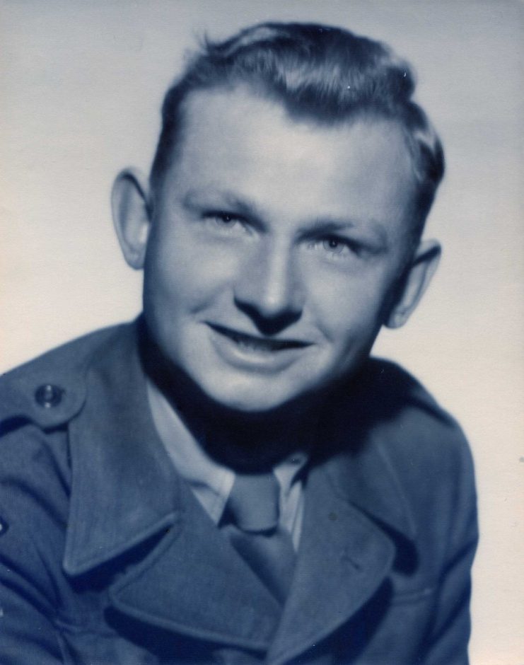
1955 – JOINING UP
On the 14th of February 1945 I joined the army. It wasn’t a spur of the moment decision although I am not sure that I had given it much thought before Christmas 1954. In the latter half of 1954, having completed my National Service obligation in the navy I found that I was becoming increasingly restive with life in general. I was disinclined to pick up my engineering diploma studies at the Perth Technical College in St Georges Terrace. My work on the Fremantle-Kwinana rail link was approaching an end and I was not looking forward to again being perched on a stool at a draughting table in the Railway’s Chief Civil Engineer’s head office.
Some months before I had had contact with a youngish fellow who had been selected to join a research team undertaking some sort of research in the far north of the State. I do not recall what his role was to be but I was very envious – that was the sort of thing I wanted to do – but how? National Service had filled in a gap but I realised that the Navy was not for me and at that point I would hardly have given the army a thought.
In 1954 Western Australia was a backwater; the ’Cinderella State’. I think we all suffered from a ‘cringe’. There was nothing going for us – a vast area nearly all desert. Our timber resources were good but rapidly disappearing. Wheat and grain production was good but in all areas of agriculture we were overshadowed by the eastern States. Our Collie coal was inferior – sub-bituminous – and nowhere as good as Newcastle coal. We had no industry of significance. The little that had developed during the war had not survived into the post war. Even our locally produced chocolate was inferior. Minerals were not even thought about – apart from gold and that was running out – we had none so why bother to look? Perth was but a shadow of its eastern states cousins although we appreciated the Swan River and Kings Park – and Rottnest Island, at least we young blokes did. In 1954 unemployment was high (in terms that applied at the time when 5% was considered high) and if you had a job you held on to it. Well – that was the way we saw it. For me – I needed to get away from the West. The army might be such a way.
Western Australia was remote; far removed from anywhere else. It is in fact the most remote city in the world further from any other city of comparable size. In 1954 its population was about 320,000. Even train fares in the old Transcontinental were expensive and air travel to the eastern states were prohibitive for most people. Then there was the ANL SS Duntroon that ran a passenger service from Fremantle across the Bight to Adelaide and Melbourne, about a five day trip for those not prone to sea sickness. How to get away was the question and joining the army was one way for some.
In my previous writing ‘The Years Between’ I tell the story of my home life and the death of my mother on the 5th February 1955 and I won’t repeat that – once is enough – but simply point out that my overtures to the army started some time before that unhappy event. In some ways it brought me closer to my stepfather Tiger. Although my aunts were somewhat thunderstruck at my decision and even my erstwhile work colleagues who all thought I was doing very well in the Railways, Tiger was always supportive and took my side in any discussion. Also so was Mum although I sensed in her some foreboding at my imminent departure.
Starting out- interviews
So – how did it all happen? It started with an advertisement in the West Australian newspaper in the boxed panel of Commonwealth Government vacancies that appeared every Saturday. The job vacancy notice read to the effect – Royal Australian Survey Corps (what was that?) 10 months intensive training in topographical surveying offered at the School of Survey (note – no mention of military) to males. Minimum education requirement: Junior Certificate with passes in mathematics, science and English. Apply to the Deputy Assistant Director of Survey, Swan Barracks, Perth. Swan Barracks – hmm – that has something to do with the army. But it sounded good and I decided to give it a go. Maybe I wouldn’t have to actually join the army. It was late November and I applied in writing and was invited for an interview a few days later.
I presented myself in my best suit (one and only actually) with shirt and tie and well polished shoes. The Deputy Assistant Director of Survey was a Major Buckland, a shortish very positive man with a bristly gingerish moustache, smartly uniformed in the khaki brown summer uniform of that time, a safari jacket with a large crown on each shoulder sitting behind a large polished desk. Clearly this was an army outfit and if I wanted that training I would probably need to join the army. Major Buckland was very friendly. I was asked if I would like tea or coffee and this was duly produced by an elderly lady from the outside office. The good Major in a very friendly way asked me about the sort of work I had been doing and I told him making it sound as good as I could. In fact it was pretty good having been for some time the sole construction site surveyor on the rail link from Fremantle to Kwinana and I knew that would stand up to checking should he wish to do so. He then told me about the sort of work I would be doing as a topographical surveyor. I had only a vague understanding of what he was telling me but when he spoke of some of the locations where such work was being planned and carried out – the Kimberleys, far north Queensland, the deserts and New Guinea – whatever it was, that was what I wanted to do. I would have to add also that from early years I had had a fascination for maps and the idea of being involved in mapping was very appealing.
Major Buckland had told me that if accepted I would be required to engage for six years. Six years – a big commitment! That would take me to twenty six years in age. Starting at the recruited rank of private soldier – where would I finish up – still a private, or sapper as the Major called it, a corporal or a sergeant? When I had quizzed Major Buckland about possible promotion he had made it clear that promotion had to be well and truly earned and that even a corporal carried plenty of responsibility. In his response there was a flash of terseness. I felt I had pushed that point a little too far and that the peppery major behind the desk might well operate on a short fuse. I was to learn in later years that that assessment was entirely correct. I could recall seeing an army major travelling on the tram to Victoria Park from time to time. He looked very ordinary – nothing very special at all. Certainly Major Buckland had an air of command about him. Would I ever reach such an exalted position and what would it take? On leaving his office I had observed a couple of uniformed men wearing rank on their sleeves and not apparently doing very much. It didn’t seem to have the snappy style that I had observed during my Navy National Service. Major Buckland hadn’t shown much interest in the fact that I had completed six months training in the Navy. He assured me that I would be required to undergo full recruit training in the Army at Kapooka in New South Wales. The name ‘Kapooka’ had a ring to it. I had heard of Kapooka somewhere in the past, perhaps from my cousin Clarry Woodward who had served in the Army during the war. It sounded less than inviting. In any case I must have said that I wished to proceed because I found myself listed for a number of aptitude and psychological tests as well as medical and overall physical fitness in the days that followed.. They were thorough enough. One I recall was a test of mathematical ability, or at least a test of how far one had progressed in maths. It started with simple additions or the 3+4 = ? variety to finally a fairly simple differential equation. It seemed all very straight forward and I received advice a few days later that I was accepted as a corps enlistment into the Royal Australian Survey Corps with attestation to take place on 14 February 1955.
On the 3rd of February I had my army medical examination at Swan Barracks, much the same sort of process that I had in 1953 for national service. My Record of Physical Examination shows that I was 11 stone and 1 pound in weight (70 kilo), my general development is described as ’good, slim’, my waist measurement was 27 inches, my eye colour grey-blue and my complexion and hair colour fair. My blood type was A2 and I suffered from a ‘touch of hay fever’. The report noted that I had had a broken forearm three times as a child, my appendix and tonsils had been removed and my left ‘great toe’ had had a tumour removed from it. Finally I was declared fit for service in the Australian Military Force.
At that point I was still a listed member of the Royal Australian Navy Reserve (RANR) and before attestation could take place to join the army I had to be formally discharged from the navy. I will copy here from the final paragraph of my previous writing ‘In the Navy’.... This entailed a return to HMAS Leeuwin where in the administrative building I was greeted with surprising friendliness. I was taken into the office of the great man himself, Lieutenant Commander Hodge, who invited me to be seated in a comfortable chair and we chatted. I told him of my interest in surveying and that I was being Corps enlisted into the Royal Australian Survey Corps whereupon he said ‘You should have been a seaman not a stoker’ and I should have applied for a change of mustering at the commencement of my training. He went on to express his regard for the Survey Corps, members of which he had come to know some years before at Woomera on the Long Range Weapons project. I thanked him and we shook hands – not a bad bloke after all. But I was on my way. Another life was in the offing; the Navy was to fade into a distant memory – well, distant perhaps but not entirely forgotten.
Attestation
The death of my mother was a heavy cloud over all that followed. Somehow I felt that I was deserting the ship and the question hung over me ‘was I needed at home?’ My stepfather Tiger was reassuring although I do not recall ever discussing this with him. I have described that time in my previous writing ‘The Years Between’ and I will simply move on here to the process of attestation. It was little different to my attestation into the Navy in 1953 for national service training. We were lined up to take the oath to serve the Crown. We signed the Official Secrets declaration and that was about it. Oh yes – we were allocated our Army numbers – mine 5/2897. The 5 indicated that we were Western Australian enlistees and for a number of years the oblique stroke always separated the 5 from the other four digits. Therefore we became known as ‘five obliques’. I became at the stroke of a pen 5/2897 Private Skitch R.F. Perhaps it was a mark of officer superiority that only commissioned officers could have their initials precede their name; the rest of us ‘other ranks’ had our initials after our name. All that changed some years later, perhaps when the ‘oblique’ was dropped. Our first parade took place some minutes later and a grizzly looking warrant officer told us that our number was to be imprinted on our brain forever and even if we forgot our name we were not to forget our army number, it was far more important. I never have! None of this surprised me having been thoroughly processed two years before into the navy; I was quite used to being shouted at. Following this we were directed to mount the back of a truck and were taken from Swan Barracks in James Street to the Guildford Western Command Personnel Depot where, as I recall it, very little happened. At least we had time to chat to each other and I was surprised to find that we were all destined for Survey Corps. I started to get some idea of who my Corps contemporaries were to be. We had all been interviewed by Major Buckland and ‘corps enlisted’. We were destined for the course in topographical surveying to commence in May. We all had to complete our recruit training of three months at Kapooka before moving to a place called Balcombe somewhere near Melbourne. With such a tight schedule in front of us we were going to be flown to Melbourne departing the following day. We were very important people being given very special treatment. I was impressed. So who were those fellows in our consignment?
Looking around they were an odd looking lot. Of course I got to know them all in the weeks ahead. There was George Ullinger, an Korean veteran, ex Infantry Royal Australian Regiment. Then there was Max Haworth, also a veteran of Korea. He was ‘K’ Force and I never really understood the significance of that. There were the Etheredge brothers, Ian and John; both very English. John was the younger and very fresh faced. Did he shave? Very little I thought but who was I to comment. My voice had broken only a year before! There was John Lambie, also a Pom ; a big raw boned fellow who professed lots of knowledge about army – where from I never knew although his father had been a Warrant Officer in the British Army, a guards regiment I think. I got to know him very well some years later. There was Maurie Jecks who became quite a good friend at Kapooka. And of course Johnny Williamson, quite a big bloke, younger than me who had attended the same high school as me, but one or two years after. Johnny was uncertain as to whether he had made the right decision, an uncertainty that lingered throughout his six years of service. I think he had circumvented his national service obligation by enlisting permanent army; perhaps the younger Etheredge also. Both George Ullinger and Max Haworth were noticeably older than the rest of us, how much I couldn’t say.
We were issued with 24 hour leave passes to be back at the Personnel Depot by 1700h the following day. We were to ‘emplane’ at 2000h (8.00pm) the following night; a TAA flight to Adelaide and then on to Melbourne. We were to have our suitcases with us packed with whatever we wanted to take but not to exceed about 20lbs in weight. Weight was a big factor in flying in 1955.
Home departure
I returned home to 134 Great Eastern Highway which was only a short distance from the Personnel Depot, also a short distance from the Perth Airport which was quite close to the army property, most likely contiguous with it being Commonwealth acquired land, acquired during WW2. Most people referred to the airport as Guildford Air Port. My stepfather Tiger had often commented that he worked on the runway construction during the war – he had been in airfield construction. I don’t recall whether Tiger was at home when I arrived but certainly he came in soon after. He had recommenced work after Mum’s funeral but had been kept in the Perth yard and not sent to any construction sites. He was of a mind to remain living at 134. He had his coterie of friends nearby and the old Sandringham Hotel overlooking the river was only about two hundred metres from 134. It was his ‘club’. I have covered my home life and home extensively in ‘The Years Between’ and I will say no more here. I think Tiger was surprised at how quickly my entry to the army and departure from Perth was taking place. It made me feel quite important – flying’ my first flight in an aircraft! That was something only the very rich people did. I pulled out my father’s old ‘Globite’ case (it had been in my family for as long as I could remember – Mum had said that Dad had had it on their honeymoon. I packed carefully and decided to wear my suit on the flight, my one and only navy blue pinstripe that Uncle Alex had bought me. Most people wore their best clothes on aircraft flights in those days – it was a dress up affair. If army was anything like the navy I would have little need for civilian clothes at least for the first few months so my packing comprised mainly of underwear, a shirt or two, casual slacks and shorts, a jumper and toiletries; maybe a spare pair of shoes and sandals; books of course, my current reading and a few extra. We were allowed a small bag to take on board and at that time the emphasis was on small, no more than a couple of pounds. The following day was a day of tidying up – packing my residual clothing, technical books and other personal items into a large steel trunk, being not at all sure how my home life was to develop after I had left. All my friends were well and truly back at work by mid-February so I suspect I would have spent that day alone. Anyhow, Tiger was home early that afternoon and drove me to the Personnel Depot with my packed case to be there comfortably before my leave pass expired. He promised to be at the departure lounge of the airport later to see me off.
THE HOME I LEFT BEHIND
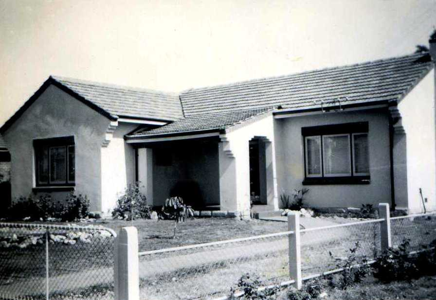
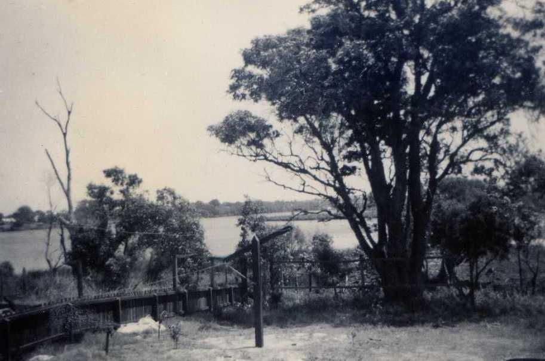
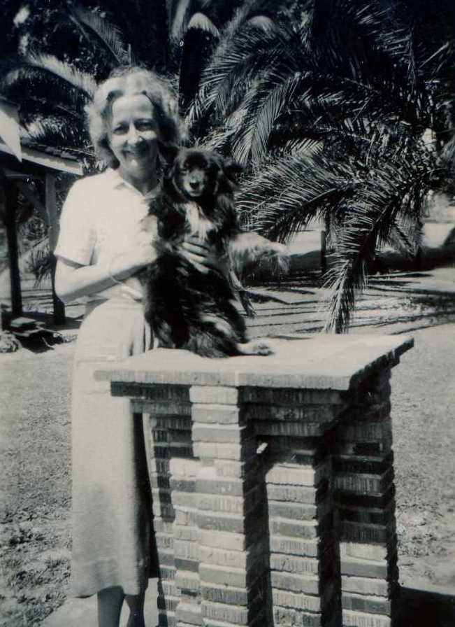
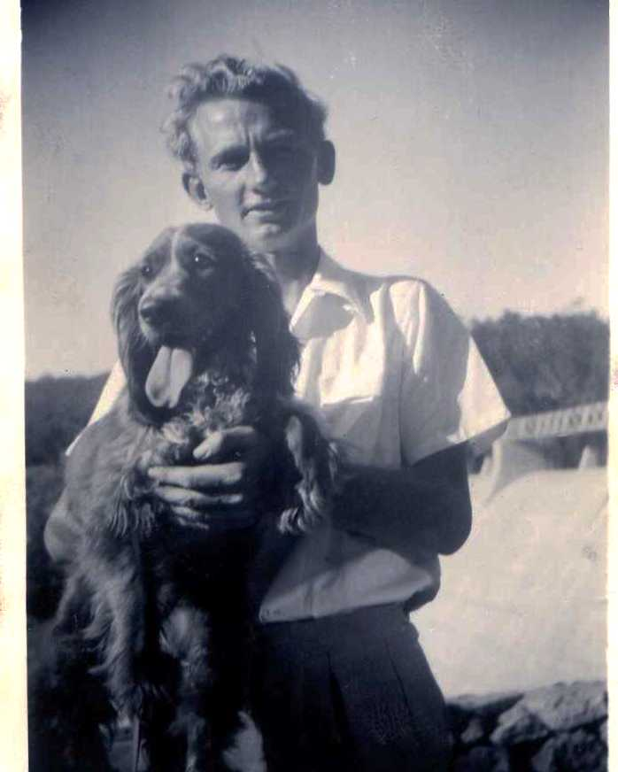
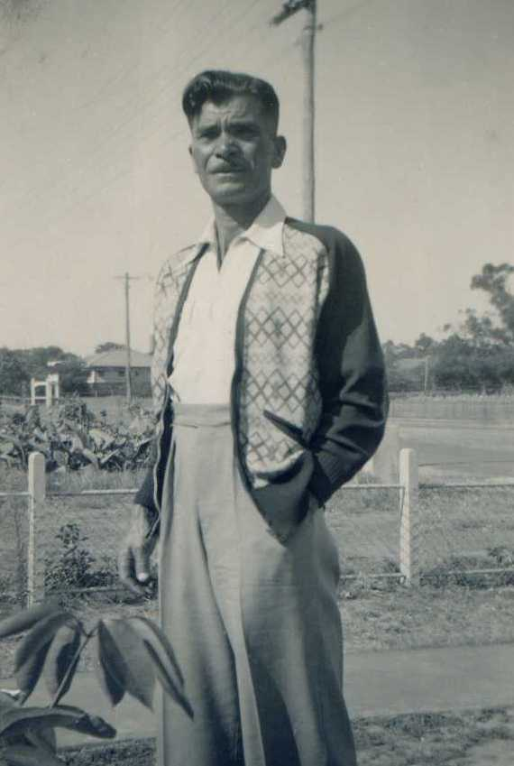
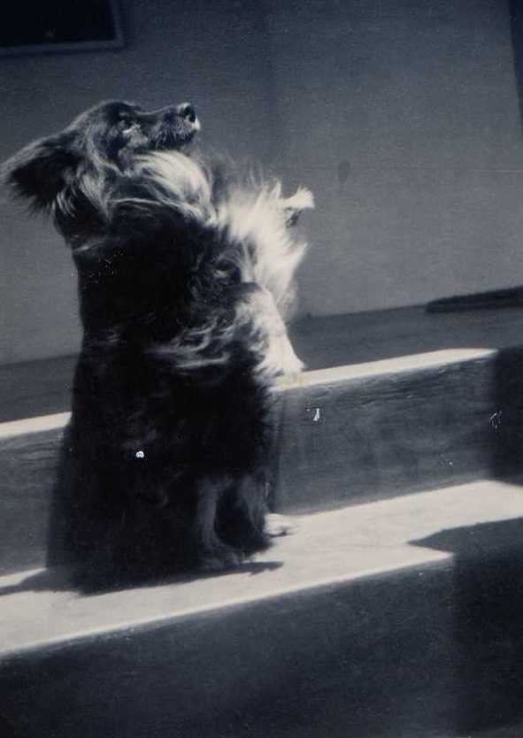
I had my first army meal that evening with my enlistment colleagues and soon after we boarded an army bus to take us to the airport. They were all dressed similar to me, jackets, some wearing ties and some in open-neck shirts. There we were issued with boarding passes by the army movement control officer, a Warrant Officer I think, and were then free to spend time with our family in the departure lounge. We had to be weighed in, each person on the scales with our take-on bag. Our plane was a DC 4, a four engine aircraft one step up from the DC3. It carried about 40 passengers which to me seemed a lot. I think about half of the passenger complement were army or at least service people. That over, I spent time with Tiger with not much to say to each other although Tiger was never short of a few things to talk about. We watched the air crew make their way through the concourse to the waiting plane – the Captain with his gold braided uniform not unlike a naval commander, the second pilot/navigator and the cabin crew, three or four ‘hostesses’ similarly uniformed. It was very impressive. Then it was time to board. The plane was some fifty or so metre from the lounge concourse. It looked big. As we left the concourse the Movement Control Officer checked us off and we were checked again by a uniformed lady, dressed in the TAA navy blue uniform with perky little cap on her head.
My first flight – the DC 4
As I climbed the steps from the tarmac to the cabin I looked back. Tiger was at the fence. We waved to each other and I entered the aircraft. An air hostess checked again my boarding pass and directed my to my seat, on the aisle and I found myself sitting next to Max Haworth. The big piston engines were warming up and the noise of this was very loud. I leaned across Max to look through the window to see if I could see Tiger; the windows were small and misting up so I could see very little but I waved anyhow then settled back into my seat. I looked at the contents of the pocket in the back of the seat in front of me. There was a map of our route - interesting, a few brochures of the highlights of our destination and ominously, a waxed ‘sick bag’. The hostess walked up and down the aisle checking our seat belts and handing out barley sugar – a concept new to me and most others. We were to suck the barley sugar. My ebullient feeling of excitement had left me and I felt a huge wrench at leaving behind all I had known for the previous twenty years. My past life seemed to be reeling through my head like a news reel in the cinema. After some minutes the big plane taxied to the end of the runway and there it had to go through a procedure known as ‘tuning its engines’. I had been told about this. Each of the engines were successively revved up, singly then in pairs then three together and finally all four. This procedure took about fifteen minutes and then with all engines on full throttle we surged down the runway, faster and faster. I closed my eyes and felt myself being pressed back into my very comfortable seat. Then with a shudder we were airborne. Glancing sideways out of the window I could see the lights of the airport growing smaller and smaller. We circled over the city and I could see the Swan River that I knew so well shimmering in the moonlight and the light of the city streets – still all on (Perth;s street lighting in those days were turned off at midnight or soon after) – but soon it was all darkness. We were on our way, due at Adelaide about six the following morning, a nine hour flight – direct, no intermediate landings; amazing! Max and I entered a desultory conversation, Max told me a little of his background. He said he was surprised that he had been accepted for Survey Corps – he knew little about it. He may have mentioned his Korean service but not in detail. We soon fell into silence. Probably about an hour later or maybe longer an air hostess handed us a small box with a few sandwiches, a piece of cake and a drink of some sort. Soon after the cabin lights were dimmed. I read for a while using my small personal spot light but drifted into a fitful sleep. From time to time the aircraft would start to bounce about a bit, at one point falling some distance. I wondered if I would have to use the sick bag; I heard someone else doing so and hoped that I would not need to. I think that we were flying at a height of about 20,000 feet. Max seemed unaffected and seemed to sleep the whole nine hours. I continued to read and doze but on waking at one stage I saw that it was daylight and looking out of our small window I saw what to me seemed an amazing sight – we were flying above a bank of cloud, white with all sorts of castle-like shapes, reaching up to touch our aeroplane, some high above our level with the sun edging above the horizon causing these cloud heads to glisten blindingly white. I was about an hour before landing. Our hostess brought around a tray of fruit juice and gradually everyone stirred. I pointed out to Max the cloud formations. He seemed not particularly impressed but smiled benignly. Conversation was barely possible, the drone of the engines made any sort of verbal communication difficult and pointless.
....and a Viscount
Finally we started to descend through the cloud bank, bouncing about as we did so. Again we were checked to see that our seat belts were fastened and then the landscape opened up beneath us, dull and grey beneath the cloud. Our landing took place at Parafield which then was the principal airport of Adelaide and we taxied up to the terminal again. It seemed a smarter looking terminal than the Perth converted hangar. We ‘deplaned’ and proceeded across the tarmac and into the building. Again we were checked in by an army Movement Control Officer and were given meal tickets to use for breakfast – all very impressive. The army seemed to know how to do it. Perhaps we were there for an hour or so then we were called to board the plane to Melbourne, this time a different plane, a Vickers Viscount. It seemed very new and probably was. The Viscount had four turbo-prop engines. It was back in the days when Britain had a large passenger aircraft industry. We boarded and the most significant difference I saw on boarding were the large oval windows with seating aligned to each window. The windows afforded excellent viewing for all passengers. It wasn’t a particularly large aircraft, probably carried between 40 to 50 passengers. Because it was turbo-prop take-off procedure seemed much simpler – no need to go through the engine tuning synchronising procedure we had with the DC4 in Perth. The flight time to Essendon airport at Melbourne was probably about an hour and a half. It was still quite early morning when we finally landed at Essendon.
Again the Movement Control Officer checked us in and this time we had to collect our baggage – my suit case, some of the others had carry bags of some sort. What then? We were to report to the Personnel Depot at Royal Park. Where was that? The Movement Control Officer seemed dumbfounded that we didn’t know. It was at Royal Park. The tram tickets he issued us with would take us there. Max and George Ullinger had been there before but not from Essendon – more likely from Spencers Street Railway Station. We were pointed in the right direction to the tram stop, on the roadway adjacent to the airport. It was quite some distance to lug our cases and bags – no trolleys, but we did so. The tram soon arrived and we boarded. Most cities in Australia had trams but the Melbourne tramway network was probably the most comprehensive. The tram conductor was less than impressed by all our baggage, even less impressed by our army issue tram tickets, however, finally he let us on and we piled our baggage on a couple of seats at one end of the tram.
This was my first glimpse of Melbourne, or at least Melbourne suburbia. The tram track adjacent to the airport was through open land, only a scatter of houses until we hit Mount Alexander Road. Then we were passing through suburbs with names that were familiar – Moonee Ponds and then Flemington. The closer we got to the city itself the more dense was the development along the road became. And it all seemed so old. Shop fronts almost continuous interrupted by small groups of houses, some fully detached and others semi-detached in groups of six or more. The roads themselves, Essendon Road, Flemington Road were broad thoroughfares, divided down the centre by trees and parkland. It was down this central median strip that our tram mostly trundled, in fact sped at times, free from the hindrance of other traffic. Tall residential buildings came into sight, very large and very new, each with small balconies. They were well back, a few blocks from the tram route. And then on our left large parkland appeared and I think it was George Ullinger who warned us that Royal Park was close by. The tram conductor confirmed – next stop will get you there. He had known where we were going – had seen it all before. We left the tram – de-tramed in army parlance – I couldn’t see any sign of an army establishment but George and Max pointed the way.
ROYAL PARK
Royal Park Personnel Depot
Royal Park is part of a large park area in north Melbourne fronting Flemington Road and extending some distance towards the north, possibly to the suburb of Brunswick. Beyond the area designated as ‘Royal Park’ and adjoining it is the Melbourne Zoo; in 1955 a very old fashioned zoo where all the animals were kept in cages or pens. Not so these days. I gathered that during WW2 the whole of Royal Park had been occupied by the army and the part remaining as a personnel depot was little more than a remnant of what had been there during the war. Nevertheless, it seemed quite extensive to me. Also adjacent to the Personnel Depot was a further remnant of the WW2 cantonment known as Camp Pell. After the war it had been turned into an immigration camp where displaced person immigrants from Europe had been accommodated temporarily, but also English and Scottish. I think the latter had taken over Camp Pell after the European immigrants had been moved elsewhere. Anyhow, in the early 1950s the intent had been to close the camp down and demolish all the structures which were very basic and in very poor condition. However the British lot refused to move out and at the time of my arrival it was all in a state of hiatus. At one stage power and water had been cut off but then reconnected. I understood they had no lighting at night time and the place had degenerated into a cesspool of crime – so it was said. All sorts of visitations to Camp Pell took place for all sorts of nefarious purposes and it often featured in the Melbourne press – muggings and shootings – very unsavoury. I say all this because it was right next door to the Personnel Depot and we were to find that there was a considerable amount of comment about our near neighbour from many of those passing through the Depot.
Having ‘de-tramed’ we proceeded up the hill to where we were advised the entrance to the Personnel Depot could be found. It soon came into sight. By this time the day had warmed up considerably and my suit was becoming decidedly uncomfortable and my esteemed suitcase heavier and heavier. Finally through the portals of the Depot we saw a sign that said to the effect ‘all recruits report here’. We did and were soon received by an elderly sergeant. I do not remember a great deal about our reception. It seemed very unplanned and ordinary. We were directed to a barrack block – an unlined hut with cyclone wire beds down either side each with a steel locker, no mattresses. We were able to dump our baggage on a bed of our choosing and told to wait. We did and soon a corporal showed up and told us we could go to the blanket store and draw our bedding. He led us there and we were issued with a rather hard ‘horsehair’ mattress, quite new looking, a couple of great blankets, sheets, pillow pillowslip and these we were to lug back to our barrack block. We signed for the articles with which we had been issued. Our corporal told us that had we been there a year ago we would have been issued with a paliasse cover and directed to the hay shed to fill it with straw. Thankful that I had not enlisted the previous year I set out to stagger back to the barrack room with that heavy hard horsehair mattress draped over my head and shoulders and blankets, sheets and pillows tucked under each arm. I think I made it without dropping anything. The day was getting hotter and hotter – I thought Melbourne was supposed to be a cool sort of place. A few of my fellow enlistees were starting to grumble. Young John Etheredge was tomato red in the face but then he had that sort of face. George Ullinger seemed to take me under his wing a bit. He had been through it all before and had no problem with the procedure. Having made up our respective beds – we hadn’t at that stage learnt how the army requires a bed to be made and unpacked our clothing into our lockers and having been told to take our valuables with us we were pointed in the direction of the cookhouse and soldier’s dining room. There I realised that we were not the only recruits in the Depot; there were many others that had arrived over the preceding few days and others, regular soldiers that were in transit to elsewhere or waiting for discharge. Personnel depots in the past had been called transit camps. We joined the queue with our stainless steel feeding trays in which were a number of depressions and edged our way past the servery where a line-up of servers (no doubt recruits like ourselves) plonked quantities of food into the appropriate depression in the tray. It didn’t seem to matter very much if the dollop of whatever hit the right spot or not, overlapping into the adjoining depression. Then came dessert, more than likely custard and tinned fruit which was at risk of being intermingled with the gravy on the meat serve. Picking up cutlery we headed to a table. The food if not fancy was hot and tasty and very adequate. I had no trouble polishing mine off. Having finished we then moved to the wash-up troughs, scraped our leftovers into bins and plunged our trays and cutlery into near boiling soapy water, a quick swish with a dish-mop and then a plunge into rinse water and trays returned to racks and cutlery to slots. Meal over and back to the barrack room or, as I noted they were called, our lines. There we waited for our next instruction.
Army uniforms
Later in the afternoon we fronted up to the Q Store for uniform issue. I am not sure just how much of our uniform we were issued with, most of it I think. Khaki drill shirts and trousers, (simply called KDs) two sets of battle dress – in effect our walking out uniform, mine was a sort of khaki green in colour, others were more brown looking, two pairs of boots, mine were black second cut leather boots, that is, not the natural leather surface but a processed surface that had a bubbly textured finish, others had WW2 issue boots red-brown in colour. Those with the latter were given a bottle of ‘raven oil’ with which to transform their red-brown boots to black. The army designation for issue boots was ‘boots AB black’. I never got to know what AB stood for and still don’t; in the navy it stood for ‘able bodied’ but that didn’t fit. Of course we were issued with our ‘slouch hat’ the iconic mark of an Australian soldier with puggaree and the ‘rising sun’ badge and our ‘great coat, for Other Ranks (up to sergeant) this was a rather shapeless item, very heavy but I came to appreciate it later. The army designation for a slouch hat was ‘hat khaki fur felt’. Webbing at that point comprised a web belt and ankle gaiters. Considerable trouble was taken in properly fitting each of us and some were sent to the tailor for adjustments to be made. Mine fitted very well without adjustment. There were various other minor items including underwear (greeted with a good deal of hilarity, especially the knee length warm underpants which I was to come to appreciated sometime later, and socks. We were told that under no circumstance were we to attempt to wear our uniform until we had been taught the correct method of wearing it. Finally there was the ‘kit bag’ another rather iconic item in armies the world over. All of our items were entered into a record of issue in the Q Store and later transcribed into our record of service book, our AAB 83 (this had been given to us before we left Perth and contained details of our attestation, medical classification and other pertinent personal information). Our uniform items were a permanent issue and thereafter were to be maintained in good condition including replacement where necessary from our clothing allowance, a component of our pay. We were given working dress, a pair of baggy khaki drill trousers, a sort of blouse shirt that fitted where it touched, and a rag hat as a temporary issue, to be returned to the Q Store before we left the Depot. The working dress was to be worn at all times within the confines of the Depot but not beyond. Working dress? We all thought we would be on a train to Kapooka within 24 hours. Weren’t we a special lot, flown all the way from Perth to be in time for the course in military surveying and mapping? We were about to learn a time honoured army expression and its real meaning – ‘hurry up and wait’.
Returning to our lines with all our uniform items stuffed into our kit bags we had some time to fill in before the evening meal parade. We had been issued with two pairs of Boots AB Black that had to be worked upon. On the advice of our two veterans we needed to designate one pair as our parade boots and the other as our working boots. Boots AB had heavy leather studded soles with a metal toe and heel plate, the latter like a mini horse shoe. They were heavy but for me they fitted well and I never had any difficulty wearing them and at times I all but lived in them. Some of the fellows had constant trouble with blisters and painful feet and calf muscles, but thankfully not me. We had all been issued also with an excellent pair of black shoes, our ‘walking out shoes’, very smart and of good appearance. I wore army issued shoes for all of my time in the army and for many years after.
Spit polish – it works!
Our veterans introduced us to the spit-polish process. I had often heard the expression ‘spit polish’ without quite knowing what it meant. First we had to visit the dry canteen to buy quantities of ‘Nugget’ or ‘Kiwi’ boot polish and at the same time ‘Blanco’ for our web gear and ‘Brasso’ for the brass bits. That done it was back to the lines for a session of spit polishing. This is the process. Apply the polish thickly with a piece of rag over the index finger rubbing it in very firmly. It surprised me that leather could be so absorbent and my second cut leather especially so. Keep on doing this for several applications being especially attentive to the toe cap area. After a number of applications the spit could be applied. Emit a light stream of spit onto the boot and with more polish massage it in using firm circular rubs. To my surprise a slightly glassy polished surface started to appear beneath my finger. By this time I think I had boot polish just about up to my elbow. Those with the red-brown issued boots had to apply the raven oil before they could do anything and that took some time to dry. Certainly the raven oil blackened the boot very thoroughly and afterwards the spit polish process seemed to work very well. The second pair of boots, the working pair needed only a more conventional polish with brushes. Of course there was more to do – Blanco web belt and gaiters, polish with Brasso the brass bits, the ‘keepers’ on the web belt, the buckles at the back of the belt and on the gaiters and all this I did over the succeeding days, and there were to be a number of succeeding days.
Evening meal parade was similar to the lunch dinner parade. Perhaps the meal was a little lighter but very ample. At the point of consuming most of it including dessert the cook called out ‘back-ups’ and those who thought they could eat more fronted up for a second serve. If this was what I could expect of army food then it was certainly very ample and of good quality. Perhaps that is why I saw quite a number of decidedly overweight soldiers about the Depot. Then to the wash-up point and back to our lines. I had located the ablution block on my way to the dining room and resolve to have a good ablute before retiring not having done so since leaving Perth. I was surprised that others chose not to. Privacy was not a consideration in army ablution blocks; a row of shower heads with no internal partitions but I had become quite accustomed to that during my naval national service. The latrine blocks were the same and I had a little more difficulty with that. There was always a paucity of toilet rolls so one soon learnt to take one’s own. We had been offered eight hour leave passes earlier, back by midnight, but I don’t think any of our lot took advantage of that on night one. I had made up my cyclone wire bed that looked like a cyclone wire gate with its horse hair mattress (it wasn’t horse hair but some sort of fibre that looked like coconut fibre) as comfortably as I could which didn’t look all that comfortable but once lights were out at ten o’clock I slept well.
At somewhere around 6 o’clock next morning I was awoken by the raspy sound of ‘reveille’ being played through the tannoy system from a scratchy old gramophone in the duty room. Soon after a head appeared at the door to our hut bellowing out words to the effect – “Out you all come; line up in three ranks outside”. Some struggled into their work trousers before emerging but we soon realised that whatever we wore to bed was sufficient for this first roll call. Our names were called out and we responded, most of us saying ‘sir’ until our awaker responded “I am not a bloody officer I am a corporal – corporal or ‘corp’ is good enough if I wanted to be a bloody hofficer I’d be one!”. So ‘corp’ it was. On being dismissed we shambled off to our hut and to the ablution block shaved and showered then having dressed in our working clothes and work boots attended the breakfast parade – bacon, sausages, scrambled eggs, baked beans, burnt bread that served as toast and mugs of tea or coffee. Cereal was probably available also. Well satisfied it was back to the lines via the toilet block to await the 8 o’clock first parade.
Hurry up and wait!
Yesterday’s arrivals were separated out from the main group of about fifty and were addressed by an officer who told us to stand easy and listen. We would remain at the Personnel Depot until the 25th February when we would entrain for Kapooka. While at the Depot we would be employed on work details as required. For those not on evening duty eight hour leave passes would be available or full day leave passes at the weekend. I think one of our survey number (not me) may have voiced a concern about having to be at the Army School of Survey by a certain date but although listened to politely the response was non committal. From my nasho experience I knew to take it as it comes. I felt confident that all would come to pass in the Army’s good time. Hurry up and wait was the name of the game.
My recollection of those eight or nine days in the Personnel Depot were of duties in the kitchen scullery, sometimes on the serving line, occasional ground duties, raking leaves, even slopping white paint over the stones that lined the garden in front of the officer’s mess then back to the kitchen. I remember one occasion when at the morning first parade the parade corporal asked if there were any piano players amongst us. One individual amongst us put his hand up and was told “right – there is a piano in the officer’s mess that is to be moved over to Albert Park; report to....” More than one was needed so I decided to be part of that detail. It would give me a chance to have a look at Melbourne from the back of a truck. It did. It was my first glimpse of the inside of an officer’s mess and having been familiar during nasho with the naval officer’s wardroom I saw it was much the same; bit of carpet on the floor, lounge chairs, a few small tables, nothing to write home about. Some young officers lounging about reading newspapers ignored our band of piano movers although a captain who seemed to know what we were there for pointed out the piano, an old upright, and even deigned to give us a hand. With a lot of heaving and grunting we got it up onto the back of a truck, sliding it up a couple of planks from the steps of the mess. A rope or two tied it down and we lot clambered on with it and off we went.
Melbourne – Albert Park and Army Headquarters
It was my first look at Melbourne. We headed into the city and of course I had no idea where Albert Park was nor what was there. Now assessing the route we took, we probably headed from Flemington Road into Elizabeth Street, around into Swanston Street (a name which was familiar for some reason) past Flinders Street railway station and across Princes Bridge (very 19th century) and into St Kilda Road. Crossing the Yarra River I looked down at the muddy stream flanked by grimy railway yards and was most unimpressed. Nevertheless I thought St Kilda Road was very beautiful. I had never seen a boulevard like it. We passed Victoria Barracks, a large bluestone Victorian structure rather foreboding and then turned off and soon we were traversing along the side of a lake that reminded me of Lake Monger in Perth. Soon we entered a large military compound of many timber huts, some two storey. The sign at the gate said Army Headquarters and indeed it was – for the whole of Australia. The impressive Victoria Barracks we passed in St Kilda Road was Headquarters Southern Command. It would appear that during WW2 the Army had taken over the southern end of Albert Park and hastily built numerous structures and there they remained. It wasn’t until the 1960s that Army Headquarters moved to Canberra and the eyesore barracks at Albert Park started to be demolished, a process that took till the mid 1970s to complete and the land was handed back to the City of Melbourne.
The piano was offloaded into another officer’s mess and the ‘pianist’ amongst us who had first put his hand up played a few notes and declared that it badly needed tuning. He wasn’t one of our survey mob and I had no idea where he was destined to go. I don’t recall him at Kapooka so he must have been transiting to somewhere else. On our return we took a different route and our kindly driver called at a shop on the way for a drink and an ice cream . On our arrival back at Royal Park just before lunch our driver told us to make ourselves scarce and we did. I soon got the impression that in Personnel Depots the name of the game was to keep out of the way.
What was my first impression of Melbourne? It was very solid looking. The buildings were large and all looked very old – but solid. The Yarra was not at all impressive. Perhaps I was comparing it with the Swan with which I was all too familiar.
Filling in time
The days at Royal Park dragged away. I mostly did kitchen duties, with periods of time off during the day. My boots and webbing were as good as anyone’s – well blancoed (I preferred the tins of blanco powder rather than the block – less messy). I wrote letters to my stepfather Tiger and to friends. I read – I have forgotten what but I had a few books in my suitcase that I brought from Perth. At night I could hear the lions (or were they tigers) roaring in the Zoo and lots of other exotic sounds. I went into Melbourne City once or twice with one or two of the fellows, probably Maurie Jecks with whom I had developed a friendship. Maurie was a small dark haired fellow, about my age. He had an aunt in Melbourne somewhere out towards Heidelberg. I visited with him on one occasion but that may have been at a later time. Max and George introduced me to Young and Jackson’s Hotel opposite Flinders Street Station and ‘Chloe’ in the front bar. Also to the Port Phillip further along in Flinders Street which seemed to be frequented by lots of army blokes. In Melbourne, I could enter the public bar of hotels quite legally – the ‘drinking age’ was 18 years; in Perth it remained at 21. Melbourne had 6 o’clock closing at that time but there were always ways of getting a few bottles after 6’clock if one wanted – ask any taxi driver. I may have visited the Melbourne Museum mostly to see the stuffed carcass of the famous racehorse Phar Lap, probably with Maurie Jecks and Johnny Williamson. I am not sure whether our excursions to the city were in uniform or civvies. I think we had received some informal instruction in the wearing of the uniform and it being summer we probably wore KDs with shoes and berets.
KAPOOKA
Off to Kapooka
Finally the 25th of February arrived and our departure for Kapooka. Our ‘waiting part of the hurry up and wait equation was over. By the 25th there were quite a substantial number of recruits for Kapooka even a few more corps-enlisted for Survey, some from Western Australia and others from other parts of Victoria, also one or two from Tasmania. But the big majority were general enlistees destined for infantry and the Malayan Emergency, our then current overseas commitment. I feel fairly sure that we travelled in uniform with our civilian clothes in our suitcases and uniforms stuffed into our kitbags. Army buses took us to Spencer Street Station (the interstate station) where Victoria’s oldest train was waiting. No Spirit of Progress for us. It was the classic ‘troop train’, absolutely no frills and so so slow. Maybe we had a late lunch at the Albury RRR before entraining for Wagga Wagga on the oldest train in NSW.
Some years back I wrote and published an article in the Corps Association Bulletin that I called ‘Once were Recruits’ (in keeping with the New Zealand rather gritty movie ‘Once were Warriors’ released about that time). I will quote with some adjustments a little from that article. ‘Once were Recruits’ quotes are all in italics and indented.
We arrived in the late afternoon. The station platform at Wagga was lined with tough-looking NCOs at 10 metre intervals in immaculate KDs, perfectly blancoed belts and gaiters, gleaming brass and equally gleaming polished boots. Out of the station and onto the backs of trucks for the relatively short journey to Kapooka where we were confronted by guards at the gate and on various installations within the camp area all armed with (of all things) pick helves! From the unwelcoming expression on their faces I got the impression that they would be prepared to use them. I decided then and there that I would maintain a low profile for as long as I remained at Kapooka. So low in fact that some years later I happened to chance on my personal file and noted that my recruit training assessment proclaimed that ‘this soldier has no NCO potential’. I think I was a sergeant at that time.
Since WW2 Kapooka Camp had been used variously as an immigration centre and an Army training depot, the latter especially during the Korean campaign. It became the 1st Recruit Training Battalion (1RTB – there was a 2RTB over the hill, unused in 1955 and known as ‘Silver City’) replacing the previous State based recruit training companies. The whole camp comprised rows of Nissen Huts (a sort of water tank cut in half) and divided into six rooms – two recruits to a room.
The partitioning was in single thickness canite board, a material not noted for its structural strength, and lurching against a wall could easily create a man-sized hole into an adjoining room. Each recruit had a bed, mattress, 2 white sheets, one pillow case, a ‘tables personnel’ (on which it was forbidden to iron but we did), a ‘robes metal single’, a ‘cabinet wooden 4 drawer’ and a ‘chairs metal nesting’. Quite luxurious really! Our civilian clothing had to be handed in and was spirited away somewhere; not to be seen until the day we marched out. First lesson given by a platoon sergeant with a voice like a wood rasp was how to fold and store our kit and make our beds hospital style – or was it army style!
1RTB was organised along the lines of an infantry battalion into companies and platoons. We survey blokes were assigned to Delta Company although the old phonetic alphabet terms still lingered on so the company name to some was ‘Don’ Company Sections became training squads and the worst thing that could happen was to be ‘back-squaded’. We were assigned to our Company – mine was Baker Company (still using the old WW2 phonetic alphabet), platoon and squad (of about 20 recruits) and with that our squad instructor for the first phase of our training – the bull-ring. Mine was a particularly unpleasant up-jump of a corporal, a Scottish exile, who took great delight in subjecting his squad to as much discomfort on the parade ground as he could dream up. Thankfully, our training moved on after that first four weeks of purgatory to weapons training, principally the 303, the Bren and the Owen; only a short time on the latter. Our weapons instructor was a WW2 dig, a corporal and a decent bloke. In fact quite a few of the corporal instructors were WW2 vets, then in their mid thirties or older, some with Korean service. Our weapons lessons were usually carried out under shady trees and rarely got too physical. Of course there was bayonet drill as a form of exercise – in-out-on-guard, the action vocalised at the top of one’s most fierce and snarly voice. The final month of training was fieldcraft were we learnt fire and movement and map reading from a Korean vet, one Corporal Henry – a very smart NCO who managed to get away with a very ‘with-it’ haircut. Not a bad bloke either! Interspersed with all this were things like grenade practice, the gas chamber where we were given a taste of tear gas locked in total darkness (do they still do that?) and of course the firing range where we fired with the 303 on bulls-eye targets.
The routine
Our pre-breakfast parade (if you could call it that) took place at 0600h wakened by a scratchy recording of reveille (equal to the scratchiness or the Royal Park Personnel Depot recording – it must have been standard issue to all army units) most of us dressed only in our night attire (very little for many) and as the cold weather approached often covered by our great coats. The very elderly corporal who invariably took that parade and called out our names to which we responded ‘corp’ we nick-named ‘Mumbles’ since he sort of mumbled as if he couldn’t fully articulate his words and therefore our names. Nevertheless he was a harmless old bloke and must have had other duties around the platoon. On departing the warmth of one’s bed both sheets and all blankets had to be pulled back over the bottom bed end and left exposed until after breakfast to give the bed an airing and to get rid of what our bed instructor call the ‘night soil’. I guess he meant the accumulation of farts. ‘Pulling up’ the bed was definitely not on and during our absence the platoon sergeant or maybe one of his minions might poke his nose through the door to ensure the bed was fully pulled back. Infringements were dealt with harshly! It was then back to our hut and to the very crude corrugated iron ablution block for shower and shave.
If the meals at the Personnel Depot were ample to the extreme this was not the case at Kapooka. It was often said that we were rationed of a three quarters of a full ration basis. I and most others were constantly hungry and never once did I hear the ‘back-up’ call. One could supplement from the dry canteen that carried tins of braised steak and onions and similar. These were very popular and could be heated up in the metal pannikins with which we were issued over the hot water boiler fire at night – or eaten cold, often the better option. Many pinched bread from the meal parade hiding it in their shirt but to get caught could result in a week of extra duties or drills usually referred to as CB, meaning ‘confinement to barracks’. We were already confined to barracks since there was no leave (into Wagga Wagga that is) for the first four weeks. For us that confinement to camp was a little long for reasons described later.
If the NCOs weren’t bad blokes, I am not so sure about the officers. I don’t recall the Baker Company OC, a captain I would presume, but I do recall our one pipper platoon commander – his name was Mr Bryden. I was often fascinated by that single little lozenge on each shoulder that gave him a God-like authority over us all. On morning parade he would invariably find sufficient fault with at least one of our number to award that unfortunate individual extra duties after ‘fall out’, sufficient to make that individual late for evening mess parade. Of course the very first lesson we raw recruits learnt after how to make our beds was how to salute an officer. We had a dispensation from saluting for our first week of training, raw recruits being identified by the wearing of a white card stuck into the front of their puggaree. I had to deliver a message to our platoon commander on one occasion late in our training and for some reason I failed to deliver the salute before opening my mouth to deliver the message. From the bellowing ruckus that followed I felt certain that I would be back-squadded, but instead got off lightly by having to salute a tree 100 times after fall-out from training under the somewhat amused gaze of the platoon sergeant.
A further word about the camp itself. The laundry facility within Baker Company’s lines comprised two or three ‘Fowler Stoves’ (wood-fired coppers in other words) located outdoors for boiling one’s clobber – provided one could find some firewood – and a shed with concrete troughs and bench space for ironing. Starch for KDs could be purchased from the canteen.
The campsite was lightly vegetated with box gums that seemed to shed thousands of leaves – a problem, because the presence of leaves on the gravelly ground between the huts seemed to cause platoon sergeants to go into a state apoplexy. Rake drill was as important as rifle drill.
Part of the morning routine after breakfast and before first parade (not the pyjama parade with Mumbles) was the ‘stand by your beds routine’. This was usually carried out by the platoon sergeant. In general, beds had to be made in the prescribed manner, underwear neatly rolled and placed in the drawers of the ‘robe metal single’ (not always inspected), floors swept etc etc. The recruit stood at the pillow end of the bed at attention dressed as required for the phase of training being undertaken on that day. The inspection took place, in some instances fairly cursory but sometimes in detail. I think platoon sergeants were trained in theatrical over-reaction – not all but some. Such over-reaction could happen where the inspecting sergeant in running his finger along the top of a ‘robes metal single’ found a smear of dust whereupon he would bellow out “this room is like a Turkish brothel – clean it up”. The resulting punishment was to be subjected to a ‘stand by your beds’ routine at intervals throughout the evening, not just the infringing soldier but the whole squad until 2300h. How to become unpopular with your squad mates in one lesson! Our worst offender was Bill Topping who was a bit of a smart Alec anyhow.
Kapooka at the time was socially interesting. There was quite a number of Korean vets going through recruit training to join the regular army and a number of these were Kiwis, Maoris that is, and the boozer late at night was often entertained with a rather drunken haka. Ah yes, the boozer! It was a corrugated iron unlined shed with a dirt floor, well compacted with spilt grog. The rule was no shouting. Only two beers could be served to each customer but there was no limit to the number of times you could front up. So the first hour or so in the boozer was spent circulating in the queue with two glasses in hand until one’s initial thirst was quenched. The dry canteen had a floor and sold a range of canned food. We never had enough to eat and a few beers would cause the onset of a raging appetite. Cans of steak and onions were a favourite late night snack, heated up on one of the camp boilers, but pity the bloke who marched (or jogged) behind you the following day, especially on those sprints up Mt Pomigilarna on the western side of the camp.
For the first half of my sojourn at Kapooka all local leave had been cancelled because a previous graduating squad had trashed a café in Wagga on their last night in town. We had one escape, however, when the padre took a busload into Wagga one evening to see a religious film. We were accompanied by the padre of course. The film was on the life of Luther and was quite good, very well produced. A few managed to avoid the film and visit a nearby pub (not me) and still get the bus back to the camp after the picture ended. The padre didn’t dob them in. I think he was relieved to get them back on the bus and back to the camp.
Kapooka had its own cinema – open air where one sat in comfort on lengths of 3 x 2 positioned bum high. The selection of movies was quite good; some military stuff and westerns but also well known costume dramas of British production – J Arthur Rank – and on those occasions some of the staff and their wives might attend, sitting on deck chairs in front of we rabble – recruits I mean.
Sexually transmitted disease
With good reason the army takes the risk of sexually transmitted disease very seriously. It is a major cause of casualty in any deployed force and a significant detraction from battle efficiency. With this in mind we were subjected to the usual lecture on STDs with all the graphic films and coloured slides of what can happen if you copped a ‘load’. I recall one young recruit asking “What if you use a ‘french letter’ (then the common name for a condom) won’t that protect you from the ‘jack’” and the MO replying “they don’t make them big enough lad”. I had seen it all before at the start of my period of national service in the navy and I think one way or another most others had also. Of course there was the big talker who would claim he had already had had a load and it was fixed with a couple of shots of penicillin and there was nothing to worry about – if you can get your end in jump at the chance and ask questions after. It seemed to be some sort of mark of achievement, a badge of honour.
Maintaining one’s uniform
Maintaining one’s uniform was a major challenge. I have mentioned the very basic nature of our laundry facility previously in the extract from ‘Once were Recruits’. For most of our time at Kapooka we were in ‘summer dress’, that is khaki drill or KDs comprising a shirt and trousers. A light weight pullover could also be worn, but never on parade. Sleeves were rolled up to just below the elbow and to reduce the bulkiness of the rolled up sleeve some would cut off the cuff. For parade use or even for walking out KDs had to be starched and ironed. We were not given lessons in washing, starching and ironing, it was assumed that such skills would be brought with us from home but of course they were not, at least not for many. There was the option of the laundry service available through the canteen. The return of uniform could take two or three days and with an issue of only three sets of KDs one could be caught out often leading to bumming a shirt or pair of KD trousers from a better organised mate.
I never used the laundry service; instead I bought an electric iron available at the canteen. Mine was a fairly basic model – no thermostat and needed to be turned on and off to keep it at the right temperature with always the risk of scorching. (I had been accustomed to doing my own ironing for a number of years with such an iron and even if I was no expert, I could manage quite well). Tony Slattery also bought an iron, a Murphy Richards steam iron – new on the market and was forever boasting about it. The laundry hut had a number of uncovered wooden ironing boards jutting from one wall and I had seen blokes slaving over an ironing board for two hours trying to iron a set of KDs. Electric irons could be drawn from the platoon store on signature but more times than not they were not returned and the person who ostensibly held the iron could not be found. Starching was also a further challenge. I knew how to prepare a brew of ‘Silver Star’ starch to an appropriate consistency, one that would not leave starch blobs on the uniform and when I did that I would leave the left over starch in a pail for others to use if they knew how. Cold water plastic starches had come in and were available at the canteen and were helpful. (Spray starch was at least ten years away) At least they overcame the problem of needing boiling water. Of course some young recruits simply bought boil starch (it was much cheaper) mixed it in cold water or hot water from the hot water tap (only available if the duty squad had kept the rather antiquated boiler alight) and finished up with KDs looking like flour bags. By and large the staff was fairly tolerant of recruit’s laundering ability but at times might suggest that the ill-laundered individual might use the canteen service. Although it was illegal to do so I finally decided to avoid using the communal facility and did my ironing on my tables personnel in my donga but needed to use the Fowler copper for the occasional boil-up. Sunday was the day to do one’s laundry if only because it had to be dried. There were clothes lines adjacent to the wash house and these were in demand – never enough line space and one soon learnt that to leave one’s laundry on the line without keeping it under observation until dry invited pilfering.
So much to say about maintaining one’s uniform but for some it was the major challenge of recruit training at Kapooka.
Training
I have made brief mention of our actual military training in my ‘Once were Recruits’ extract. It was written for a soldier audience and I hardly needed to tell them what was involved in our actual training as recruits – they all did it themselves. So maybe a few more words are appropriate here.
Our first four weeks of ‘drill’ was on the gravel parade ground – affectionately known as the Bull Ring. Here we learnt the various drill movements, without weapons, standing – attention, stand at ease, stand easy, saluting and so on. Then on the march – quick march, halt, left and right turn, about turn. All this was done to the count of three as with all other drill movements. Then drill with the rifle – the Lee Enfield .303 (used since the Boer War) – again attention, stand at ease etc, order arms, slope arms, change shoulders, fix and unfix bayonets and more. Then on the march again with and without arms, left and right wheel, left and right form and so it went on in all sorts of combinations. Our up-jumped Scottish corporal drill instructor made the most of it, sometimes holding us in some incredibly uncomfortable position for several minutes while he checked in detail each soldier’s position – upper leg absolutely parallel with the ground. Of course it was incredibly hot on the bull ring and one sweated profusely. Each forty minutes there had to be a ten minute break – a smoko for those who smoked. The MO at one point ordered that water was to be provided at the smoko point, I think after some poor bloke in another squad collapsed with dehydration (probably not helped by a rough previous night in the wet canteen). Our Scottish corporal was less than impressed. He finally came undone when on the final march-off at the end of the day he purposely marched us through the middle of another squad in effect causing a collision of bodies and chaos. His action was observed by the sergeant in charge of drill training and we found we had a different drill instructor the next morning, in fact I think it was the drill sergeant himself.
Between each phase of training we had a duty week. I am not sure that always happened but we did so after the bull ring. It was a period of relative relaxation – cookhouse duties and various chores around the camp area. Cookhouse seemed to be my specialty.
Our second phase was weapon handling and this time we had a very pleasant corporal instructor, a veteran of WW2. He was a good instructor and I believe we all reached a good level of proficiency with first the .303 then the Bren Gun, more correctly called the Light Machine Gun (LMG) and the Owen Gun, the sub-machine gun (SMG). The Bren was quite complicated and well produced diagrams showed its method of operation. We learnt how to dissemble, clean and assemble it, the various actions to take should there be a stoppage (immediate actions IAs), how to quickly change barrels (which become very hot after firing and this is the reason for changing barrels). Speed was the name of the game and each action had to be performed within a given number of seconds. Rifle operation was simpler and of course there was bayonet practice – in out – on guard! Finally we had our day on the firing range with all weapons. I was only ever an average shot but I passed. One or two years later I qualified as a first class shot but never a ‘marksman’. At the end of our weapons training we were assessed by a sergeant instructor, going through all the actions, especially with the Bren. This was a critical test because if one couldn’t make the grade it would lead to back-squadding.
Finally we moved into field craft with Corporal Henry. Here we were introduced to minor infantry tactics, fire and movement, observation, giving a map reference, some elements of map reading such as the identification of features on a map and contours. Many periods were spent on the lower slopes of Mount Pomigilarna overlooking the valley towards The Rock, identifying features either by map reference or by the ‘clock method’ – 10 o’clock 500 yards (we hadn’t gone metric in 1955). Corporal Henry had the happy knack of maintaining discipline yet remaining pleasantly friendly. He would certainly brook no nonsense from anyone who wanted to try him on. Our final three weeks of field craft was a pleasant way to complete our recruit training.
Throughout the three months of recruit training we had our period of physical training, I think one each day. They were well graded, not too intense initially – just as well; the bull ring was physical enough – then building up. The activity I especially recall was the run up Mount Pomigilana which was rather lung bursting at first (also the weather initially was very hot in February and March) but towards the end of our training I think I could have done it backwards without a pant. Our PT instructor was incredibly fit and was determined that we would all become like him. He was a little critical of my apparent lack of muscular development but after a while came to realise that I could outpace many others in our squad even if I struggled with press-ups when I got to about twenty. I recall the occasional game of football played on the Kapooka oval which was a large gravel patch with a few tufts of grass struggling through. The army game was Aussie Rules and for me it was not an enjoyable experience. I generally managed to get placed in the out-field where the ball rarely came dreading the thought of having to pick up the ball and kick it. Johnny Williamson was our top player and soon became our squad footy captain.
Quite early in our training program we were bussed into Wagga to the council swimming pool to test our swimming ability. I think all we had to do was to swim the length of the pool – 50 metres. I was a moderately good swimmer although my style was a bit ragged and I was passed without comment. I was a little surprised to find that quite a number were unable to swim, country blokes I think. I was impressed by the pool and its facility, very new and of Olympic standard. How could a place like Wagga Wagga have such a facility when Perth, a capital city, had only Crawley Baths, an enclosure on the banks of the Swan River? Despite the embargo on leave during our first few weeks at Kapooka, we were allowed the occasional swim parade at the Wagga pool and I took advantage of that. The camp bus would take us in – in uniform – we would change into our togs, walk through the shower alley (one had to shower before entering the pool) and there we were – lounge around on the lawns and take the occasional dip and of course take note of any girls who might be there. Wagga girls had no interest in the young soldiers of Kapooka.
Throwing the grenade
I presume that it was important at that relatively early stage of one’s military training to at least throw one real live hand grenade. We were given instruction under a shady tree in how the hand grenade operated with a large diagram showing its internal workings and then practised throwing with an inert ‘practice grenade’. The British grenade that the Australian Army used at the time resembled a small pineapple which on explosion broke into a large number of small segments hurtling at great speed like the circular ripples caused when a stone is thrown into water. Grenades were considered lethal to anyone within 10 yards of the explosion and likely disabling beyond that. They were thrown using an over arm bowling action with the intent of lobbing the grenade the length of a cricket pitch away. One pulled out the pin that held the striking lever in place and threw; the thrower having about 5 seconds to take cover. There was also such a thing as a grenade launcher fitted onto the muzzle of a .303 rifle. A blank round would be loaded in the rifle breech, a grenade minus its pin slipped into the open end of the launcher and on squeezing the trigger and firing the blank the grenade would launch some distance at a faster speed and greater distance than could be achieved by hand throwing.
For our live throwing experience we were taken to the grenade range with a box full of live hand grenades – one each. We all stood or crouched behind a masonry wall and one by one we were successively taken around the wall to a wide trench on the other side that had an earthen parapet on its opposite side. Standing in the bottom of the trench the parapet would be about chest high. The grenade instructor (who deserved a medal for being one) then calmly took the recruit through the procedure again, indicated the lobbing area about fifteen yards in front of the trench and parapet. The recruit was then given the armed grenade in his natural throwing or bowling hand (left of right), told to pull the pin out and still clasping the striking lever bowl it over the top of the parapet and lob it in the lobbing area fifteen yards away. One was required to watch the fall of the grenade and then duck into the trench to take cover. The grenade would explode with an ear shattering crunch and some dirt from the lobbing area might splatter the parapet and into the trench. Needless to say it was a nerve wracking experience for the young recruit and there were instances of grenades falling short, so short in fact that the grenade did little more than roll down the slope of the earthen parapet and explode only three or four yards in front of the trench, the protecting masonry wall behind which the other members of the squad cowered would get peppered with grenade fragments. We had been told of instances where a nervous recruit had accidentally dropped the grenade into the trench as he pulled the pin out to release the striking lever whereupon the instructor would in five seconds bend down and pick the grenade up and hurl it over the parapet. Well – his life and that of the recruit depended on it. Stories like that didn’t do a great deal for our confidence. Nothing like that happened in our training squad although one or two might have fallen a little short. My own throw was OK even if it did not quite make the lobbing area. There had been the occasional instance where a thrown grenade failed to explode or so we were told no doubt in response to a question from the squad. We were told that in this unlikely instance the squad would be withdrawn some distance back from the protective wall, marched back to the lines and dismissed and a bomb disposal expert would visit the site and deal with the matter.
Following our live grenade throwing experience which occurred in the late afternoon we marched back to our company area and were dismissed for the day.
The gas chamber
At that time the army considered it necessary for all recruits to have experienced the effect of tear gas. If grenade throwing was considered important for all young recruits to experience, regardless of whether it was in any way likely that they may have to throw one in anger, and I more or less accepted that it was, experiencing the effect of tear gas was a different matter. At the time I saw no justification for it and looking back now I have not changed my mind.
We had had a couple of periods (under a shady tree) being told about war gasses, tear gas, mustard gas (that burns the skin), others that simply choke you and then the worst gas of all, nerve gas that causes a certain and unpleasant death. Gas warfare was used extensively in northern France in WW1 but both sides in WW2 adhered to the Geneva Convention that banned all but the use of tear gas in warfare.
Our squad was marched to a concrete block building, probably an old ammunition storage bunker and directed into it. Standing, it could hold about twenty persons. The metal door was clanged shut and a tear gas capsule released inside. With the door shut we were in total darkness. Within seconds we were all coughing and spluttering. My own eyes and no doubt everyone else’s were streaming. We had been told that we were to bear with it for a minute and it seemed a very long minute. I heard a voice from amongst us shouting out “for God’s sake open the door and get us (or me) out of here”. I knew the voice – it was Keith Todd. In fact he was right, we had had enough. The door opened and we staggered out still coughing and spluttering. A water trailer and buckets of water had been positioned nearby. We were instructed to wash our faces and we did, some tipping the contents of the bucket over their head. I have never forgotten the acrid smell of tear gas and its affect in one’s respiratory system – it is not only the tear ducts that it affects. Some years later I experienced tear gas given off by CT crystals in a hostile theatre. Was it helpful having had that early experience years before? I think not.
Others in our squad
I have mentioned some of the fellows with whom I enlisted into Survey and others I caught up with at Royal Park. I RTB in their wisdom decided not to have us all in the same squad but spread over two or three squads. They clearly saw a problem with all of us elitist survey types being together and that we would be better served by mixing with the riff-raff. The two Etheredges were separated and I had the pleasure of having the younger, John, as my donga mate. I think both George Ullinger and Max Haworth were in my squad, also Maurie Jecks and Keith Todd and that was probably it. Of course we would often get together after training or in the boozer in the evening but being a sober lot we didn’t frequent the boozer all that much. So – who were the others?
Fred Meisel was of German origin, so he claimed. Also he served in Hitler Youth (again so he claimed). He had served in South Africa (so he claimed) and had done all sorts of remarkable things. He knew all about classical music but had moved on from that and so it went on. By any rough calculation he must have been 40 years old to be able to fit all his life experiences in, but he barely looked 21. After Kapooka He went to one of the specialist corps, Signals I think.
Robbo – can’t recall his full name but it must have been Robinson or Robertson. Robbo was a pretty young bloke, probably the youngest in our squad, maybe 18. He was very soft in his manner, girlish one might say but he got through his training without any problems. He gave the impression that he wanted to be a ‘man’. He was of course, in fact quite a nice one. Robbo was inclined to attach himself to me and I was inclined to be a bit brusque with him but often regretted so being. I recall after one of the few leave periods in Wagga (it may have been when we went in with the Padre) Robbo had gone somewhere and got into the turps. He finished up pissed as a newt and quite helpless. I fell for getting him off the bus (he had fallen asleep) and walking him up the hill (maybe with the help of another) and into bed.
Briggsie was a Maori or part Maori and with a number of kinsfolk performed a Haka in the boozer from time to time. I had never seen the Haka before and I thought it rather strange. Briggsie was a Korean veteran and a pretty good bloke. He knew a lot of Korean stories, many pretty lurid and songs of the Korean campaign – ‘getting to close to the listening post so we’re movin on’ is the oft repeated line of one of them. It had many verses. Briggsie knew them all. George and Max could join in with some of them. There was always talk of the ‘Momma-san’, a brothel madam I think. Briggsie came to Tumut with George, Max and Maurie Jecks and despite his intention to ‘rage’, he didn’t.
Ray Latz was a ‘know it all’ sort of bloke. He may have had army service as a school cadet or maybe national service but that would have been unusual. Very few army nashos converted to the regular army. Ray was a good soldier and may have done well in whatever Corps he was allocated. I never became friends with him and did not seek his company.
Don Appleby was a sort of father figure. Not sure why he had rejoined the army. He may have been a late WW2 veteran. He kept very much to himself and George Ullinger was the only one of our group who sometimes sought him out. In fact the story of the eleven fried eggs in Albury on a subsequent page came from George.
Bill Toppng I have previously mentioned was a pain in the butt a good deal of the time. He was past master at shirking duties. If we were assigned to raking leaves Topping would quietly disappear after a few rake strokes. He was a particular pain to his donga mate and I can’t recall who that was. He caused us all to have more ‘stand by your beds’ evening inspections than anyone else; in fact he was the only miscreant in that respect. Also he was a cigarette bum but that didn’t affect me because I didn’t smoke at that time. After all that he was the only one to be psychologically assessed to have NCO potential to sergeant.
There were others but my memory doesn’t extend that far and neither does my photo album.
There were survey enlistees who had arrived at Kapooka two or three weeks before my group and were about one phase of training ahead, that is they had completed and were marching out at about the time my squad were starting field craft. Notable in that group were George Gruszka, Tony Slattery Joe Farrington and Dave King. George and Joe were Western Australian enlistees and Dave from Victoria. Joe was a Queenslander who had been marooned in WA and had worked as a survey hand in Queensland. Tony, I think was a WA enlistee; he was an Englishman tall and blonde and I suspect his family in UK were well off. He told me once that his father (and presumably mother) lived in Austria because his British Army pension went much further there.
Doubts about Survey
Not surprisingly there was a strong infantry ethos at Kapooka especially with the prospect of being posted to the Australian Battalion located at the newly established and very well founded base, Terendak near the old Portuguese city of Malacca in Malaya, then still a British colony. Of course they were not being sent there for a holiday but to fight the Chinese Communist insurgents in the British campaign that became known as the Malayan Emergency. We Survey enlistees were seen as ‘chocos’ of some sort. Very few if any of the training staff were even aware that there was such a Corps in the Australian Army and the word somehow went around that we had all been duped – we were really going to Infantry and thence to Malaya. I was personally totally unconcerned by these comments but some found it all very alarming, Johnny Williamson in particular. He was most upset, at one stage rather pointlessly confronting the Company Commander who just told him to return to his platoon – the army would decide his Corps allocation. Someone had told him that ‘Corps Enlistment’ meant nothing – the Army decides. Finally Johnny decided to write a personal letter to Major Buckland and after an anxious wait received a personal reply that there was no doubt at all that he was Corps Enlisted for Survey and it would be to the Royal Australian Survey Corps that he would be going. A couple of our wiser heads, Max Haworth and George Ullinger told Johnny to keep the letter to himself and not show it to the taunters or to any of the Kapooka staff. I never harboured any doubts that we were irrevocably headed for Survey but nevertheless I found Johnny’s letter comforting.
Guard duty
Guard duty came up regularly, overnight and at weekends. It was practice for the orderly officer to select one soldier from the guard squad as his ‘stick orderly’, that person being the best-turned-out soldier in the squad. I had that rare honour bestowed on me (by mistake my generous colleagues maintained) and I can’t remember what duties I had to perform. They were certainly of a minor nature.
Squads took it in turns to man the guard duty roster and perhaps the most tedious guard duty of all was as sentry on the ammunition bunker. Armed with a pick helve one patrolled up and down in front of the bunker (a heavily sandbagged structure) occasionally detouring around the back of the bunker. The bunker was within earshot of the outdoor cinema and it helped to pass the time by listening to the dialogue and imagining the action but the movie rarely lasted more than an hour and a half so there was still two and a half hours to fill in. Of course if one was on the late shift from 2300h onwards it was even more deathly boring. The orderly officer (usually a 2nd lieutenant) might call at any time to ensure that the picquets were all wide awake and on their feet, although such visits rarely took place during the late shift unless the orderly officer was particularly diligent. One night on the first shift (1800h to 2300h) towards the end of the shift I sat down on a concrete abutment to the bunker at the back and promptly fell asleep. It would be hard to imagine a more heinous crime and if caught asleep one would earn at least a month of additional duties. My inspection from the orderly officer had already taken place so maybe I thought I could get away with it and I don’t think I really intended to lapse into a deep sleep. Anyhow I awoke to feel a hand on my shoulder and I leapt to my feet with a start. It was Keith Todd there to take over. Keith after all, although Recruit Todd at Kapooka was in reality Sergeant Todd and from time to time he was used in that capacity. I was mightily embarrassed by the incident but certainly thankful that it was Sergeant Todd and nor Sergeant someone else.
The squad on guard duty were required to sleep in a bunk room adjacent to the guard house at the main gate. At any time of the day or night the orderly officer could arrive and order ‘turn out the guard. He would note the time the guard took to turn out standing at attention in two files fully dressed, that is, with web belts, boots and gaiters etc. I am not sure what was considered to be an appropriate time lapse, perhaps a minute, maybe a minute and a half. Whatever it was if it was exceeded then one could be sure that there would be a repeat performance an hour or so later.
My squad copped a guard duty over Easter – four days – but we were given a four day break a week or so later. Maurie Jecks, Keith Todd Frank Hill and I managed to get a somewhat scary lift to Melbourne with a Warrant Officer who had a big old Chev sedan. It broke down somewhere around Seymour. The WO’s mate was travelling in a car some distance behind and pulled up to see why we were stopped. We completed the journey at break-neck speed under tow with the two cars joined by a hank of fencing wire purloined from an adjacent fence. Jecksie and I were dropped off at Brunswick where at 2am we managed to get a taxi to the hotel where we had booked for three nights – the Carlyons, opposite Spencer Street station. Our trip back with the same WO was thankfully less eventful.
My Easter guard duty for me was not unpleasant. I was assigned to front gate which simply required note to be taken of all vehicles entering and leaving. There was a hand operated boom gate, just one with only a single lane entry and exit. Because there was always a staff NCO at the main gate it presented an opportunity to informally talk to the fellow and get to know a bit more about army life in general. The four days passed quite pleasantly.
Three days in Melbourne
My three days in Melbourne with Maurie Jecks were interesting. I had bought a second hand 35mm camera to replace my old Brownie Box and took quite a few photos. Of course we were in uniform, our civilian clothes being under lock and key at Kapooka but that presented no problem. We were well looked after at the Carlyon’s Hotel, especially in the dining room. Our middle aged male waiter treated us with unseemly respect calling us ‘sir’ in serving and recommending good quality wines to have with our meals. It might have been night two when I attended the opera at the Princess Theatre in Exhibition Street. The opera was La Boheme put on by a visiting Italian opera company. I arrived in a cab which pulled up with a flourish at the theatre from and the cab door was opened by the major-domo of the Princess Theatre. He seemed a little surprised at the young soldier in KDs who climbed out carrying his slouch hat to go to the opera. Nevertheless he gave a Major-domo’s salute with a smile on his face.
MELBOURNE - 1955
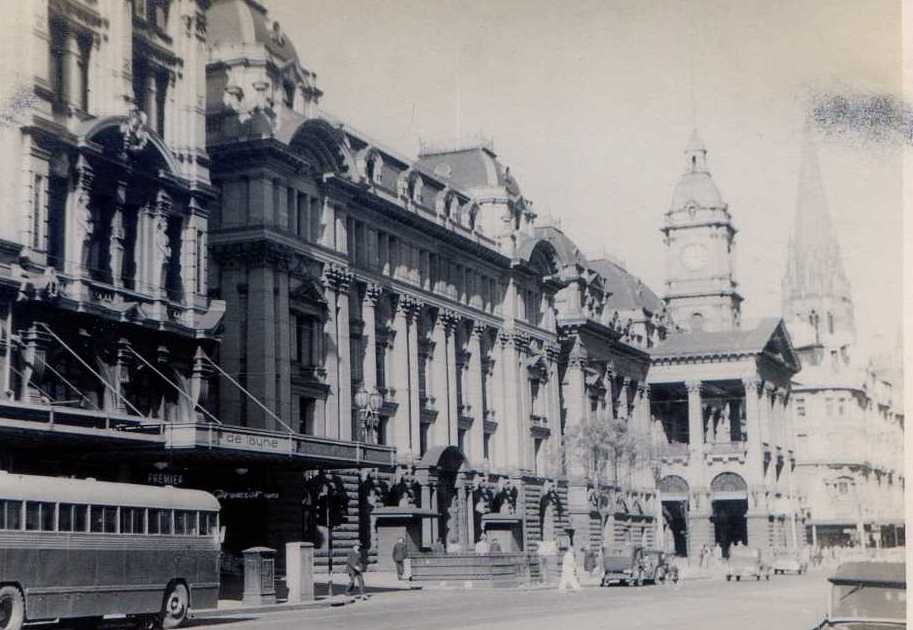
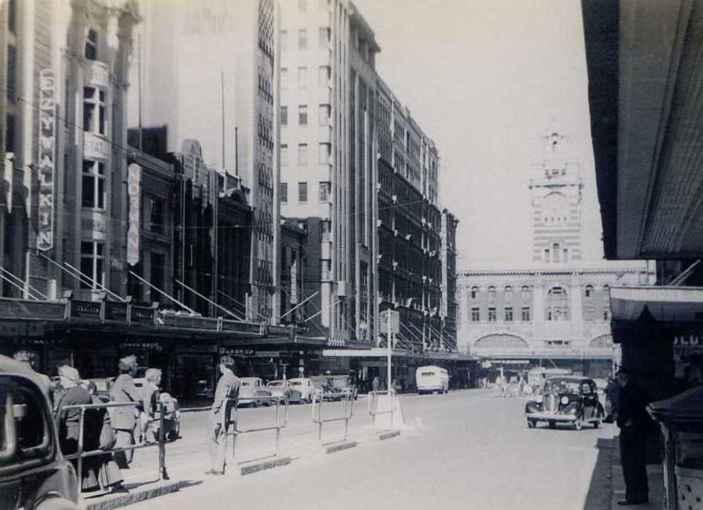
Melbourne Town hall centre left
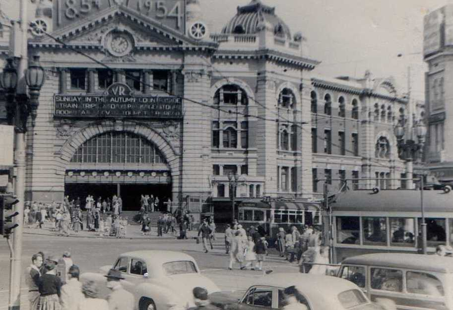
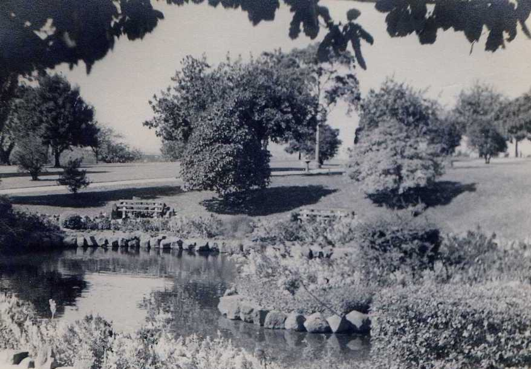
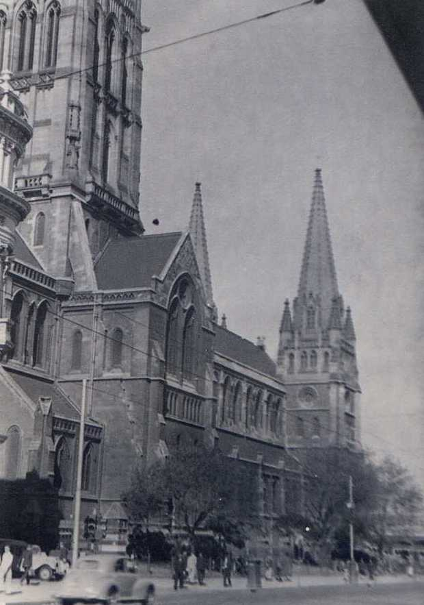
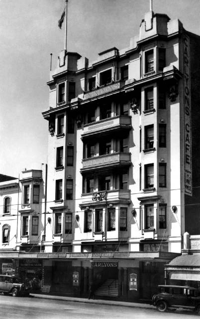
where Maurie Jecks and I stayed
Maurie had opted not to go to the opera – not his bag. He was in bed and asleep when I arrived back having walked from the theatre down Collins Street to Spencer Street. I was getting to know Melbourne.
The next night was something of a contrast. I am not sure quite how the day developed but we caught up with some of our squad including Frank Hill who had travelled with us in the warrant officer’s Chev from Kapooka. Frank was a general enlistee and an older bloke. He came from Port Melbourne near the mouth of the Yarra where it enters Port Phillip Bay, in those days a not very salubrious suburb. Anyhow, we were invited to his place that night to a party. It sounded like a good idea. We would need to bring half a dozen bottles of beer. He gave us the address. Maurie and I took a cab that took us to the back door of a pub and we bought our half dozen at a bit above normal price then down to Port Melbourne. The party was well underway and it was a pretty rough show. I was surprised at how many of our Kapooka squad were there. Keith Todd (Toddy) was there with a good looking girl whom he was anxious to bed and I thought that sort of thing was going on up stairs. Another fellow – Bill Topping – was there and seemed very much part of it. George Ullinger also – I hadn’t realised he had made his way to Melbourne. I doubt whether Maurie and I consumed more than a bottle or two of our illicit grog and that was as much as I needed. The lady of the house, probably related to Frank Hill, maybe his mother, seemed to think Maurie and I needed protection. Anyhow she became very motherly and wanted to know all about us. She took a dislike to Toddy and his obvious intentions with his escort and that resulted in a ding dong blue later in the evening. I think Maurie and I left soon after that and cabbed back to the Carlyon’s and finished the day off with a few quiet ones in the lounge.
I should say a word about the Carlyon Hotel. It was quite a grand old place perhaps a trifle shabby. A couple of doors along was the Grand Plaza, very new and modern; also very expensive. The Carlyon Hotel was owned by the Carlyon family, very well known and well connected in Melbourne and had strong military connections. I do not remember how I came to choose the Carlyon to stay at. It would have been difficult to have done so from Kapooka since at that time it would have involved an expensive trunk telephone call. I may have done that from the duty room during the Easter duty period. If so I took something of a risk. Perhaps Maurie Jecks had a connection but I doubt that. One way or another we were pre-booked and it worked out well.
Indecent exposure and AWOL
One of our number was a rather large bloke, corpulent in fact, who was an ex Korean dig who rarely had much to say and who managed to get through his training without mishap. I always felt that the training staff favoured him a little. He certainly enjoyed his beer and most nights he would spend some hours consuming it in the wet canteen. He had his circle of friends most of whom were from either other squads or maybe the lower levels of staff. I don’t recall him associating with any of our Survey recruits either in my squad or others. George Ullinger seemed to know something of him and I think he said he had been a sergeant. Maybe! Anyhow, he had joined one of the swim parades, surprising, because swimming was not generally his interest and when it became time to return to the bus he was nowhere to be seen. A clear case of AWOL one would think. He turned up the next day in the late afternoon and was duly charged, the charge to be heard the next day. What would he get, surely referred to the CO and fined with a week’s CB or even detention (up to five days). The following morning he was escorted from the squad – I think it may have been during the field craft phase – to have his charge heard by the Company Commander. Half an hour later he returned to the squad smiling but not saying much. During smoko he divulged that the charge had been dropped his defence being ‘involuntary absence’. Apparently he had gone to a pub and consumed more than a few beers and at six o’clock closing had wandered down the street to find a taxi to take him back to camp. Feeling an intense urge to relieve himself he decided to do so against a lamp post. It just so happened that the lamp post was on the pavement outside the Wagga Catholic Girls School and there just happened to be a police car cruising past. He was spotted and taken into custody where he spent the night having been charged with indecent exposure. He appeared before the magistrate the following morning, given a cautionary (because he was a soldier destined for overseas active combat) and released. So when he appeared before his Company Commander he was able to plead involuntary absence and he had the paperwork to prove it. Somehow it was overlooked that he had absented himself from a swim parade and went to the pub instead.
Of course he never did go to Malaya. Some years later when I was a lieutenant I happened to come across him at a soldiers club at Diggers Rest, a little north of Melbourne. He was a corporal provost (military policeman). I couldn’t help but have a brief word with him. He seemed OK.
Psychological assessment
Towards the end of our training our squad was marched across to the area known as Silver City, also called 2 RTB (we were 1 RTB). Why Silver City? It was a large area of Nissan huts the same as ours but apparently in better condition, with roofs that were bright shiny new galvanised iron. We had marched across to Silver City on at least one previous occasion to be addressed by a female army officer on something or other, perhaps welfare or similar. Not knowing what to call a female officer, ‘Sir’ seemed inappropriate, we were told that female officers were addressed as ‘Madam’. Some years later and army signal did the rounds instructing that the term ‘madam’ was not to be used and that ‘Ma-am’ was the appropriate form of address. Anyhow, back to this occasion.
We were being subject to a series of tests in groups to determine who had the potential to be a Non-Commissioned Officer, an NCO with first promotion to Corporal and maybe later to Sergeant. Interestingly Keith Todd had been excused from this activity. We sat around in groups and were given various tasks to perform as a group and somehow out of all this one of our number would rise to the occasion and assume a leadership role. At least that was the theory. What is fact happened more than one might try to take on that role and the whole process would degenerate into a squabble. At one stage each group was given a length of rope and outside there was a wide ditch and using the rope all had to get from one side to the other without falling in. The ditch was only about a metre deep. How we accomplished that I cannot recall, if in fact we did accomplish it. I decided that I would keep well out of all those shenanigans – my future lay with Survey, not this silly sort of thing. The Psych Officer, a major and a couple of assistants watched our futile attempts with serious expression and clip boards in hand taking apparently copious notes. We were all numbered so that they could relate their comments to individuals. The outcome was meant to be very confidential but word went around that within our number we had one potential sergeant – Bill Topping – what a joke! It was some years later that I had access to my personal file to discover that my own assessment was ‘this soldier has no NCO potential’. So be it!
George (Jerzy) Gruszka
Being back-squadded was considered to be a very unfortunate happening since the ambition of most was to be out of Kapooka at the earliest possible time, no more than the prescribed three months and not a day longer. Back-squadding could apply to an individual who simply could not make the grade on some particular aspect of training; this might be on the firing range or in carrying out an immediate action (IA) on the Bren or some other weapon.
George Gruszka had the misfortune of becoming ill and was hospitalised for a week resulting in his back squadding. He arrived in my squad at about the time we commenced field craft. George was Polish and came from Western Australia He too had been recruited by Major Buckland for Survey Corps and had been one or two intakes ahead of me at Kapooka. I am not sure how we became friends – we did and it was a friendship that lasted many years.
George came from a family who had a fine appreciation of the better things of life and for his birthday he received a rather square looking heavy parcel from his family which on opening revealed a bottle of Contreau liqueur. What to do with it? Drink it of course. To have concealed it would have guaranteed its finding leading to an unpleasant outcome. This occurred before George’s back-squadding in his previous squad. So a drinking group got together and between six or so polished off the whole bottle in a sitting. I suspect there were a few sore heads the next day.
Toddy’s charge
When one reflects back on one’s recruit training incidents come to mind that cannot be put into a time scale. Here is one but it needs an explanatory preamble first.
Drinking in the lines (that is the drinking of alcohol) was a forbidden practice and if caught those involved would be charged with the catch-all military offence ‘conduct to the prejudice of good order and military discipline’ in that he was found drinking alcohol etc. Punishment at Kapooka mostly was in the form of ‘confinement to barracks’ (CB) which usually meant extra drills early morning and late afternoon. Such ‘drill’ was likely to be in the form of doubling with full pack and rifle around the bull ring to the point of near exhaustion. Reporting to the orderly officer at hourly intervals into the late evening ostensibly for extra duties was another although mostly the orderly officer would be hard pressed to think of something for the miscreant to do. The routine could last a week.
The point of the incident is that a few of our number were caught ‘drinking in the lines’. Where the liquor came from I have no idea since takeaway alcohol was certainly not available from the wet canteen and it would not be easy to bring it in through the main gate. Of course the sergeant’s mess could have been a source but that is a long shot. Who caught them I do not know but inevitably they were put on a charge. In most circumstances this would be no great deal. The company commander would hear the charge and the maximum penalty he could award would be one week of CB and or ten shillings fine. There was a certain status in having served a week of CB.
However, the rub of this story is that one of the miscreants was none other than Recruit Todd (aka Sergeant Todd). Keith’s charge could not be heard by the company commander; as a sergeant; he had to be referred to the Commanding Officer of the Battalion, a Lieutenant Colonel. We all wondered what would happen to Toddy (not the most liked member of our squad) and in the late afternoon a call went out ‘hey – come and have a gander at this’. We did and there was Toddy being marched up the hill to the CO’s office with a red-sashed burly sergeant on either side of him. It was quite a sight. Toddy was awarded a reprimand by the CO. Most of those doing a week’s CB thought he got off lightly but in army terms a reprimand can deny promotion for a year. Of course that had little application at Kapooka since charge sheets are destroyed on departure and do not show on the soldier’s record. Nevertheless, it was a very chastened Toddy that returned to the squad.
A leave break in Tumut
Another long weekend – I can’t recall the purpose of it – took a group of us (Maurie Jecks, George Ullinger, Maxie Haworth and Brigsie) to Tumut by bus where we stayed at a local pub – where else!
It was about a two hour trip and we arrived in the early evening. Our hotel was an attractive old country pub and the weekend passed quietly. Brigsie and others were keen to get on with serious drinking but that wasn’t for me. It so happened that Tumut was celebrating the ‘Festival of the Falling Leaf’. It was autumn of course and there were a number of activities on in the town. It was crisp cool weather, bright sunshine and Tumut looked a beautiful place. Of course I had one or two pots of beer at the bar myself and I recall meeting a couple of Navy blokes on leave. I must have said something about my national service in the Navy. They were inclined to be disbelieving so they decided to test me by asking me to define a few naval terms – the parts of the ship. I passed with flying colours and they became instant mates but a bit incredulous as to why I would join the Army. I stayed two nights at the pub and on the third day I decided not to wait for the bus but to hitch a ride back to Wagga and to Kapooka. I was lucky and picked up a lift just out of town that got me to Wagga and then the kindly driver took me on to Kapooka. In those days it was common enough for soldiers to ‘hitch’ rides and in uniform most drivers would stop.
ALBURY – KEIWA VALLEY - 1955
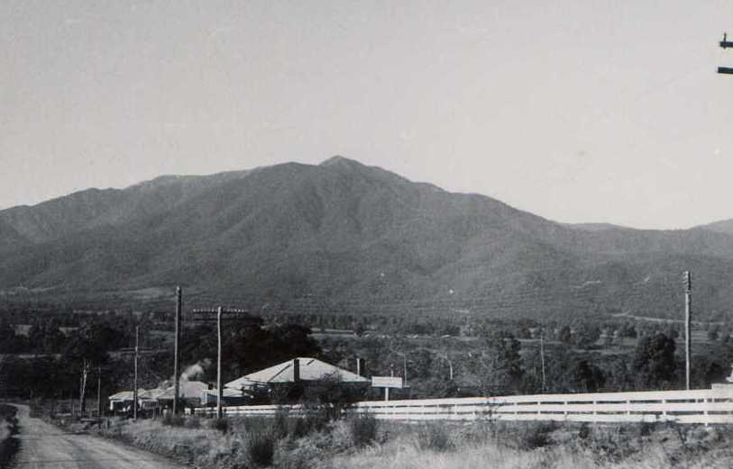
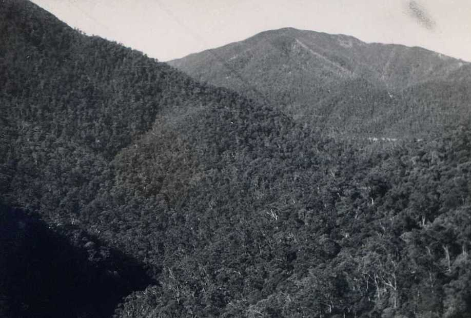
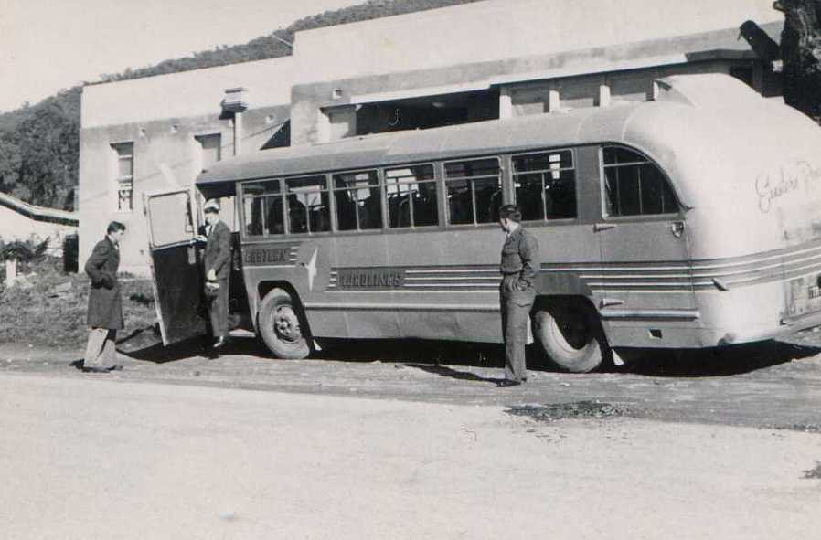
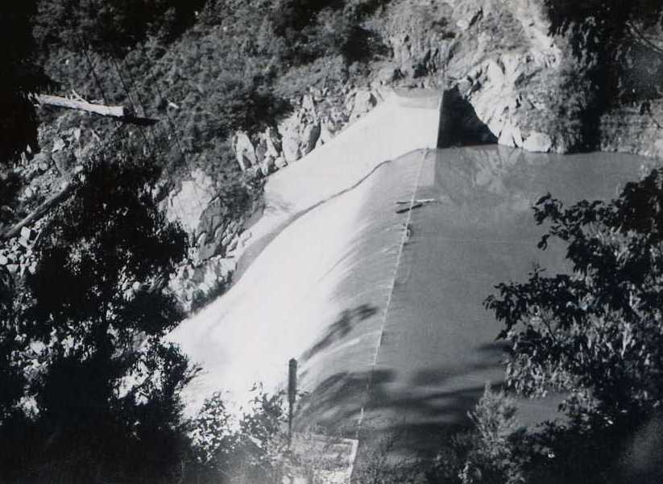
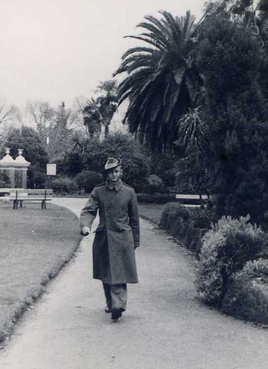
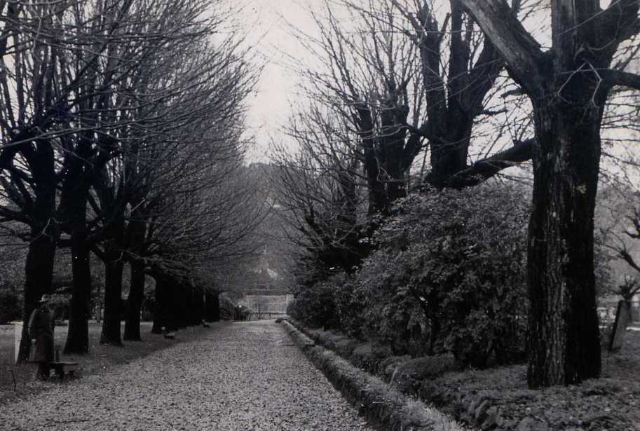
....and another in Albury
George Gruszka and I had a weekend at Albury. I think it must have been a few days before our march-out, possibly even after it. There were quite a number from our squad who decided to take the weekend in Albury, I recall George Ullinger and Max Haworth – then turning to my previous writing ‘Once were Recruits’ .....
One of our number, Don Appleby, a stocky ex-Korean dig with a very ginger complexion and gingery short-cropped hair – a quiet sort of bloke who said very little but had a gingery temper so I was told had a skin-full at a pub in Albury. He visited a local café in Albury to have a feed of steak and eggs. On being asked how many eggs he demanded eleven fried eggs. I have no idea whether he got them but his gingery appearance would not have invited argument.
George and I did some sight seeing around Albury – the Albury Botanical Gardens and took a bus trip to the Hume Wier and up the Keiwa Valley. It was cold weather and we were well rugged up in battle dress and greatcoats.
‘Once were Recruits’ – but no more
Our passing out parade was conducted on the grassed oval where it was near impossible to keep in step. We had had a couple of rehearsals in the days preceding under the gaze and bellow of the RSM and gradually mastered the keeping-in-step problem. Come the actual day of the event and the parade took place with the Commanding Officer on the dais but with one hitch. The RSM in bellowing out an order parted company with his upper and lower dentures. They were propelled from his mouth to take up a position two paces in front of him. With military precision in what appeared to be a practised drill movement he took two paces forward and went as if to ground arms, retrieved the denture and slapped it back into position. Fair dinkum –none of us laughed!!
We departed Kapooka on the 2nd May 1955. An army bus took us all the way to the School of Survey at Balcombe on the Mornington Peninsula south of Melbourne. Army buses were not built for comfort and I suspect were intended to run fairly short routes. It was a long and tedious day but the prospect of what lay ahead was exciting, at least for me. We left after the breakfast parade and having returned various temporary issues such as work dress and maybe pannikins and having collected our suitcases that had been under lock and key for three months, we finally ‘embussed’ with all our gear piled up in the back. By the 2nd of May winter dress was in and we were dressed in battle dress with shoes and berets, our slouch hats carried carefully separately. We Survey types were not the only ones making the journey to Balcombe. The School of Signals was there also, a rather larger enterprise than Survey so probably about two thirds of our bus load were for Signals Corps.
KAPOOKA – May 1955
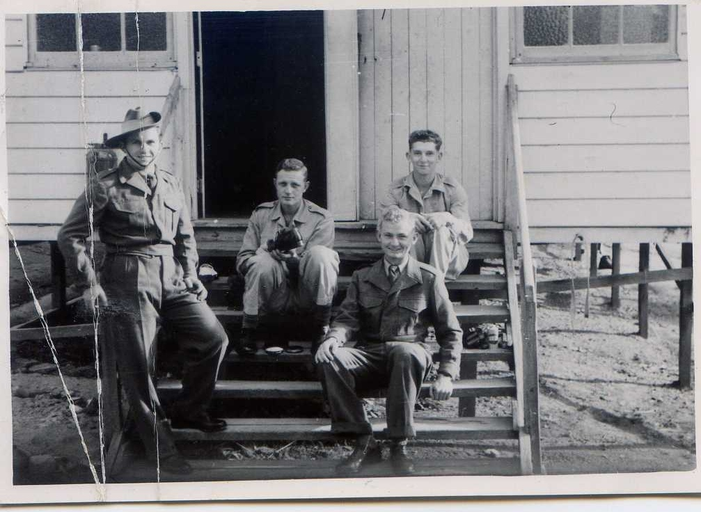
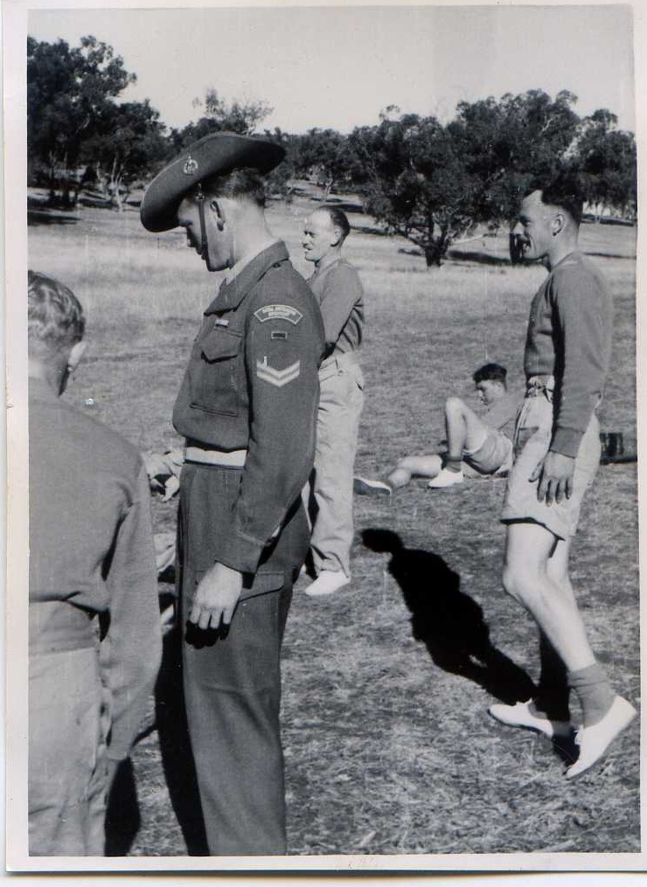
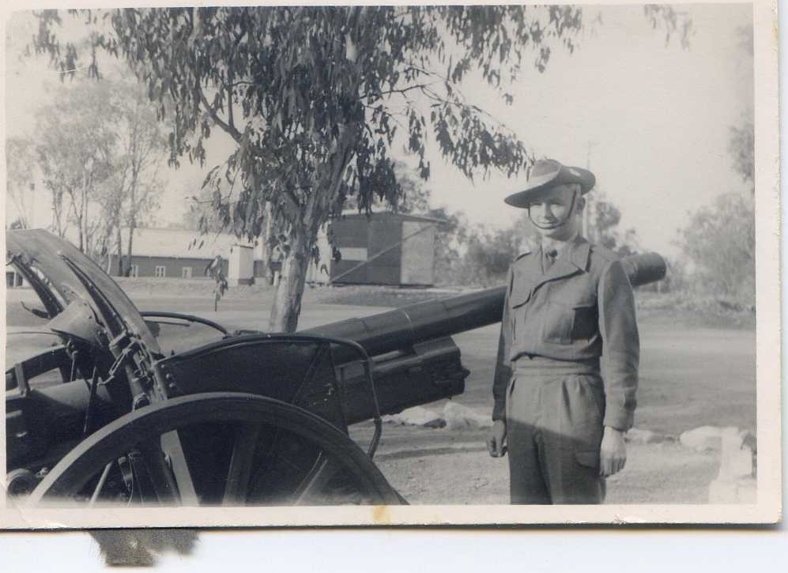
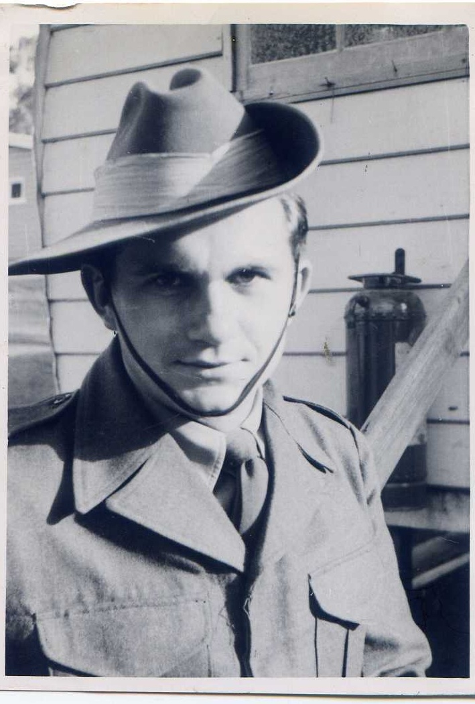
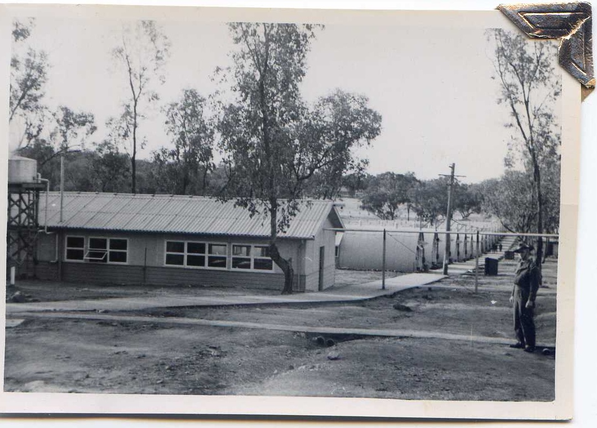
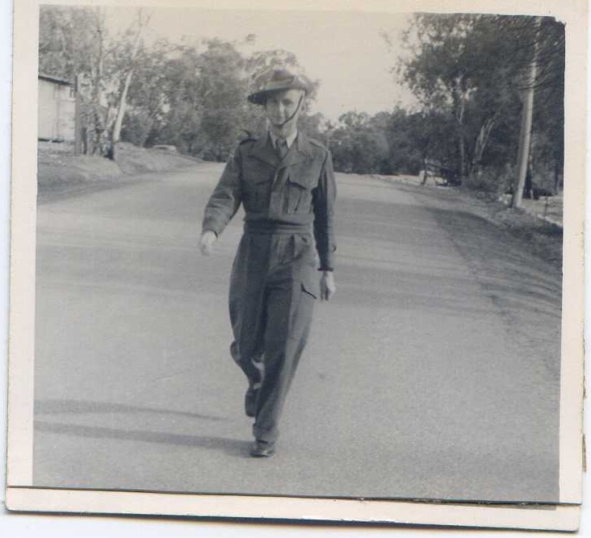
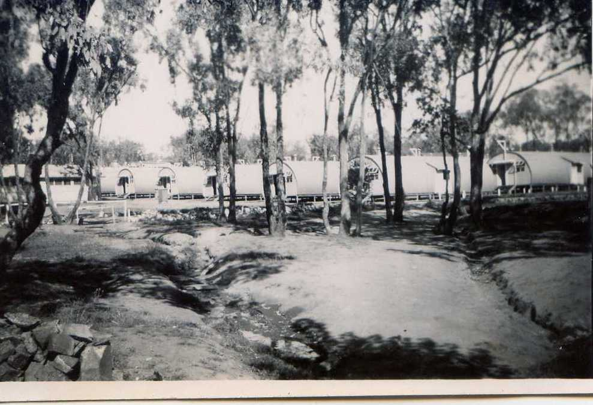
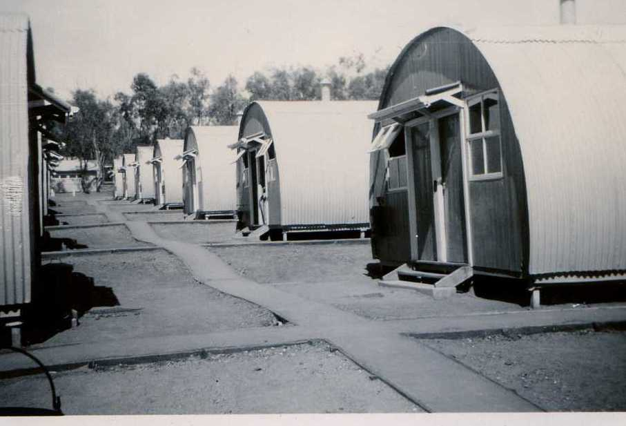
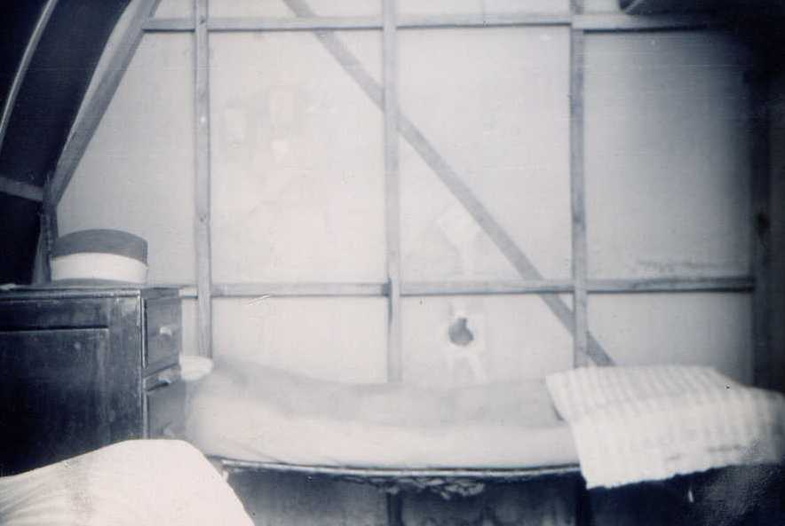
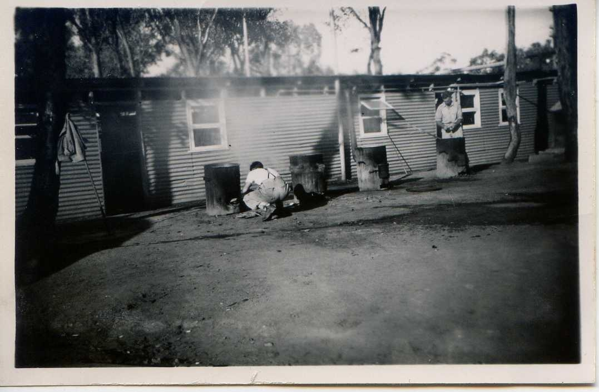
My donga such luxury but very tidy Delta Company wash-house. The wood fired boilers outside were for boiling one’s clothes if only one could find wood to burn
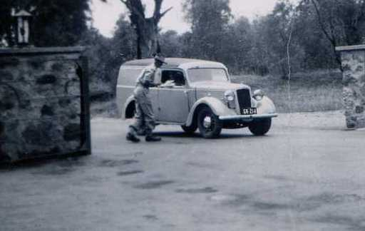
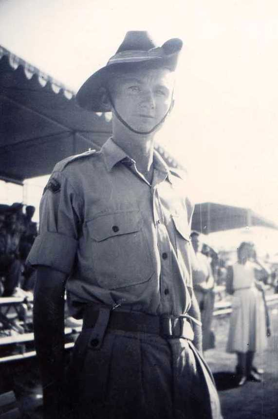
Pte Skitch on main gate guard duty The young soldier at the Wagga swimming pool
BALCOMBE – THE SCHOOL OF SURVEY
Captain Stedman
We made a few stops along the way, one main stop for lunch south of the border, probably at Wangaratta where lunch was provided on an Army chit but other short stops also at service stations for petrol – obviously quite a process and one with which I was to become familiar in the years that followed. It was quite late when we reached Balcombe, quite late and very cold. The Sigs people were dropped off first and then we continued up a slope to the School of Survey. The word ‘Military’ was not introduced into the name until a few years later. I realised that we were quite close to Port Phillip Bay and the smell of salt was in the air. Standing at the kerbside was a figure we were to come to know very well, Captain James Lesley Stedman and I especially so. Captain Stedman was to have a marked impact on my career in Survey. I have extracted below the opening paragraphs of a reflection on the man I came to know as Jim which I wrote at the time of his death in the year 2000.
I first met Jim on a cold and blustery evening in May 1955.
Fifteen or so newly graduated recruits fresh from Kapooka, all destined for Survey, peering expectantly through the misted windows of the rather antiquated army bus as it pulled into the kerbside adjacent to the School of Survey orderly room at the uncivilized hour of 11.00pm to be greeted by the sight of a lone great-coated figure, cap slightly askew, reddish hair protruding and three pips on the shoulder. Met by a captain – friendly at that! Words to the effect – ‘my name’s Stedman – don’t stand here in the cold – straight up to the dining room – hot coffee and a large tray of choc cake’. That disappeared in seconds not a crumb left – then to the lines with our baggage. Talk about ‘kiss me goodnight sergeant major – tuck me in my little wooden bed’. After the rigours of Kapooka it all seemed too good to be true. Even the beds were already made up! And a Captain who cared about us!! Is this the Army? “I’ll see you blokes in the classroom in the morning” was the final riposte.
We were assured by an equally friendly warrant officer who fussed around us that we would see a good deal of Captain Stedman – and we did – he was our senior instructor and if the 7/55 Basic Survey Course was anyone’s course, it was certainly Jim Stedman’s. Gruff, blunt but friendly, JL, Steddy, the roan bull, but to us ‘Sir.
The School
So this was the School of Survey. The buildings were of WW2 origin, corrugated iron clad in rows of about ten rooms with a covered concrete walk way along the front. It was two to a room, the floors were linoleum covered with a bedside mat (Mats Axminster, bedside) next to each bed, a tables personnel for each occupant with desk and reading lamp, robes metal two door for the storage of our kit – this time we had our civilian clothes to hang and store; it seemed all very civilised. Directly opposite was the students dining room and kitchen – yes, we were referred to as students and not only that ‘Sapper’. I had come from being Private Skitch to Sapper Skitch, the rank name applied to all at soldiers at the ‘private’ rank level in the Corps of Engineers and because our heritage came from Engineers, to Survey. It was an oddly proud moment. My roommate throughout the course was to be John Etheredge, my roommate at Kapooka. This was not by request, purely coincidental. I was quite happy to be with John, a non-drinker and uncritical sort of bloke.
BALCOMBE
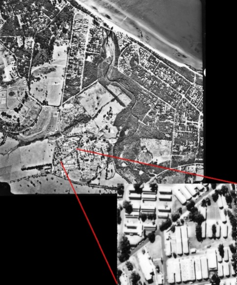
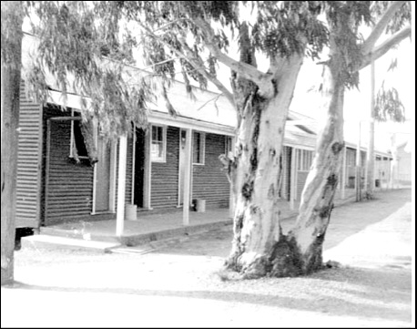
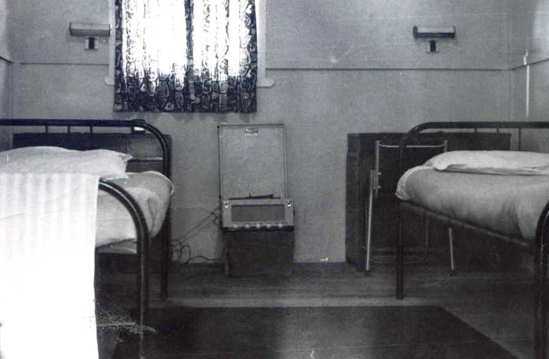
The School of Survey occupied a relatively small area within the quite large Balcombe military camp. Balcombe fronted the Nepean Highway that led south from Melbourne through numerous city bay side suburbs to Frankston (the electric train terminus) then to the town of Mornington and southwards close to the eastern side of the Bay through a number of bay side villages, Balcombe (a military camp and village), Mount Martha, Dromana, Rosebud, Rye, Sorrento and then Portsea on the extremity of the peninsula and the location then of the Officer Cadet School, the Australian Army’s second officer factory. In effect this beautiful peninsula was to be our training area, especially the area known as the Dromana Valley.
Entering the Balcombe Military Camp from the Nepean Highway one passed through three main school areas; the Army Apprentice School, scattered around Mace Oval mainly a RAEME establishment training young fellows from the age of 15 in mechanical and electrical trades and where they completed a civilian recognised apprenticeship, the School of Signals, on rising ground west of Mace Oval and then on the top of a low ridge, the School of Survey. West of the School of Survey was the army village of married quarters, Balcombe Village, and then down the slope and a winding road one came to Balcombe beach, a sand stretch fronting Port Phillip Bay. The Army Apprentice School was by far the largest establishment in the Balcombe camp and the School of Survey close to being the smallest. Smaller than Survey was the Army School of Music and it was somewhere within the Apprentice area, perhaps even part of it.
The School of Survey comprised a number of huts such as I have already described parallel to each other on both sides of the central road. As I remember it, on the southern side from the top of the hill leading downhill to the Apprentice School was the sappers and corporals dining room, two accommodation huts for sappers and corporals, an office hut where the CO/CI, SI and School Adjutant had their offices, then the small parade ground, the orderly room and below that a recreational hut. On the opposite side of the central road (it had a name) in about the same order was the fairly large kitchen where all meals were prepared,, the Sergeant’s Mess, the Officer’s Mess and a number of accommodation huts the same as the one I have described. In one of those huts was a Q Store for all survey equipment. The area was neat and tidy, well maintained. The buildings were well painted, dark green with a cream trim. On the eastern side of the parade ground was a 60 foot Bilby Tower which we were to learn about later.
Training starts
Our first day at the school started with an administrative parade on the small gravelled parade ground in front of the orderly room taken by the School Sergeant Major, a warrant officer and the Adjutant, Captain Childs (ex British Army). I have forgotten the name of the SSM but he was a pleasant mild fellow. Some months later Warrant Officer Ken Shaw took over as SSM. I was to get to know Ken very well in later years. It was purely an administrative parade and we soon departed for the class room. The 7/55 Basic Course had two components each of about 15 students. One group had commenced their course about two weeks before the second group and we in the second group were to catch up by working a six day week. For the first six weeks intending draughtsmen and surveyors were to be together undertaking the same initial training. More on that later.
From the parade ground we marched across to our class room and sat at about a dozen draughting tables, six down each side of the room, each with a stool. This was to be our ‘home’ for the next ten months when we were not in the field. Captain Stedman was waiting for us and after a few minutes the SSM arrived with the Chief Instructor, the very avuncular Lieutenant Colonel Wally Relf. After welcoming us he handed us over to Captain Stedman who told us about the course; that we were greatly privileged to be selected to undertake the 7/55 Basic Course and laid down the ground rules in no uncertain terms – this course was costing the Army 2000 pounds per student and God help anyone who stuffed up. We were impressed. The course had started and with that, one of the great experiences of my life. Surveying, he said was one of the most ancient professions, practised by the ancient Phoenicians (or one other of those ancient civilisations) – in fact it was the second oldest profession in the world, leaving it to our imagination as to what the oldest was.
‘Puddles’
Captain Stedman then introduced our course instructor who was to be our constant teacher and mentor for the entire course – Warrant Officer Class 2 A.B.M. (Alex) Pond, known affectionately as ‘Puddles’.
For me ‘Puddles’ proved to be an outstanding instructor. He was incredibly patient, had the knack of teaching and was such a thorough gentleman that none of us would dream of stuffing up or taking advantage of him in any way. He could certainly be firm and accepting of no nonsense and on those few occasions when someone might try him on a few quiet words was all that was needed to sort that person out making him feel a dolt for even trying.
There were other instructors on our course, some who seemed to specialise in one thing or another, taking us for a particular subject or phase of our training. The course instructor of the first group was Warrant Officer Class 2 J.W. (Jim Bounds), very different to our Puddles. WO2 Bounds was of a stern nature, somewhat humourless or appeared so. Nevertheless, his class responded well to him. I recall having him as an instructor on occasions and didn’t find his lessons particularly enjoyable. A question was likely to evince a reply ‘you haven’t been listening lad’ with a mild punishment to follow – not quite take a dozen lines but similar in intent.
Basic surveying and equipment
Our course started with a few basic survey concepts. We were introduced to the the theodolite at quite an early stage, setting up our instrument over spots on the parade ground. Each pair were allocated one instrument, that is, for our course component seven theodolites, all in excellent condition. They were quite old vernier instruments, very much the same as the one I had used extensively in the Western Australian railways so for me the setting up procedure, centring it over a ground point, levelling it and reading the scales presented no problem. For most of my class colleagues it was a slow procedure. My partner during those early days was Johnny Williamson. Johnny was intending to move into the draughting stream once the course was reformed but that was some weeks off.
Then came the ‘chain’, a hundred yard long measuring band of steel, 1/8th inch wide and brass studded at each five yards. With each chain came the ‘reader’ to allow distances to be read to atenth of a foot. Again I was quite familiar with the surveyor’s measuring band – the chain – from my railway days but not the measuring techniques used by the Corps. With each chain a thermometer cased in an aluminium tube and a spring balance were issued, and of course two plumb bobs and an abney level for measuring slopes. I had used the hand held abney level before also in railway days. Measuring with a chain was to be at an accuracy of one part in 10,000. For each chain length a temperature reading was taken and a slope reading, generally to the head of the person at the other end of the chain. Then there was the actual chaining technique itself. For general chaining the practice adopted was called ‘knee high chaining’, that is, the ends of the chain were held knee high and plumbed over the mark with the plumb bob. Attached to the end of the chain was the spring balance used to pull the chain to a tension of 15 pounds. It was not an easy process and took some getting used to. All this had to be recorded in a chaining or traverse book and then each chain length reduced to the horizontal.
At the School in an adjacent paddock a traverse of about a dozen stations had been laid out, closing on itself and we all chained around this traverse keeping our distance from the pair ahead. There was of course a ‘DS’ solution, that is, the distance between each traverse station was known by the directing staff (hence the term ’DS’ solution) so that our results could be checked and if too far out then re-chained. With Puddles as our instructor there was never any pressure but that apparently was not always the case with WO2 Bounds.
Then came the theodolite and the angle read at each station between the two adjacent stations, face left and face right, two arcs with the initial setting first on zero degrees then 90 degrees. The vernier scale can be read to a precision of 20 seconds of arc. An important part of angle observations is the plumbing of targets over the adjacent stations as well of course the plumbing of the instrument itself. The targets were the traditional red and white two inch square of paper inserted through a sharpened bush picket, the point of the picket being the plumbed point – the red and white being essentially for quick identification. We all used the same sharpened pickets, that is, we didn’t cut our own from the adjacent scrub, otherwise we would have soon denuded the scrub of all sapling timber. Finally it was into the classroom to reduce the results by the process of ‘latitudes and departures’, a civilian survey term – in the army it was diff Eastings and diff Northings because all military survey is calculated or computed on a system of co-ordinates.
Computations
Traverse computations were taught in the classroom with lessons running parallel with the field observations. Because we in the second group were in a catch up mode we did a fair amount of this in the evening after dinner. We had to learn the use of seven figure logarithms and seven figure trigonometrical functions from Chambers Seven Figure Mathematical Tables, a very error prone process. The Corps provided computing forms which helped a great deal. Until one acquired a degree of dexterity with the use of the tables it could be a very laborious process. Calculating the diff Eastings and diff Northings around the traverse and applying them to the system of coordinates from station to station finally finishing up on the start point, in the perfect situation the final coordinates would be the same as the start coordinates, that is, zero misclose. If the misclose error was no greater than one part in 10,000 then that was very acceptable.
We learnt about error. There are three types of error, random errors which over time tend to cancel so long as all care is taken in observation – there are always some random errors; systematic errors which always accumulate and may be due to an instrument mal-adjustment and finally ‘blunders’, that is a single gross error. An un-plumbed or knocked picket falls into the category of ‘blunder’. I found the final term vaguely amusing. At the end of this period of traverse measurement and computation it was becoming obvious that it was beyond the ability of some of our team. Max Haworth was withdrawn to become a driver, also Sid Gomm a little later.
Triangulation
From traversing we moved onto triangulation. In 1955 that was still the method of extending coordinate control over large distances and areas, largely overtaken in 1958 by the advent of electronic distance measurement. But the latter had not been even thought of in 1955. On the side of the Nepean Highway opposite the entrance to the Balcombe camp was a large paddock known to us as ‘The Briers’ . There must have been a Briers homestead some distance away beyond the paddock but I was never aware of it. The school had set out a ‘mini’ triangulation figure – a braced quadrilateral or maybe a centre point quad of five stations with a standard survey beacon over each. This is where we had our first taste of triangulation, observing the directions at each station, two students to a team. Johnny Williamson was my partner onthis and I his. I observed and Johnny booked then Johnny observed and I booked. I recall a visit by Captain Stedman when Johnny and I were at a station close to the road. He asked Johnny a question which Johnny had difficulty answering and after a bit I chimed in to receive a quick and rather gruff rejoinder from the good captain – “I am asking Sapper Williamson, Sapper Skitch, not you”. Somewhat chastened I kept my mouth shut.
Landholders
I have often wondered at the relationship the School had developed with landholders throughout our ‘training area’, essentially that part of the Peninsula around Balcombe, Mount Martha, and Dromana, in fact the whole of the Dromana Valley as far west as Red Hill, Merricks and Tumbarumba. We all had unrestricted access to properties in order to carry out our observations, run traverses and do whatever we needed to do. Many of the properties were owned by very well known and wealthy individuals and one such place I remember was owned by Mr Brockoff of Brockoff biscuit fame. He was said to be something of a reclusive, of German ancestry I think. Some years later in rather contentious circumstances he was awarded a knighthood – Sir something Brockoff. This came about as a result of conferring one million pounds on some charitable organisation, perhaps the Children’s Hospital, and according to the newspapers he had bought a knighthood. ‘Knighthoods for sale’ the newspapers chortled. Brockhoff’s homestead we knew as the Cupola because it had a cupola in its roof structure which we frequently intersected – rayed in – when we were conducting our surveying exercises.
Colonel Johnson (whom I never met)
All this had been set up soon after the school moved into the Balcombe camp then under Major Bert Eggeling, the WW2 Officer Commanding 5 Field Survey Company and later to become chief surveyor of the Snowy Mountains Scheme. Following Major Eggeling in 1950 was Major (soon after Lieutenant Colonel) H.A. Johnson. Many of the manuals with which we were to be issued were created by Colonel Johnson whose reputation and persona lived on in the Corps for many years. I have heard many impersonations of Colonel Johnson over the years. It seems he had many somewhat peculiar mannerisms and way of speaking. Nevertheless, it was he who made the School into what it was when I arrived in 1955. Looking back now it was a quite remarkable institution with a reputation that spread well beyond the Army. Colonel Johnson left the Corps in about 1954 after some sort of dispute so it was said and became Chief Surveyor of the Division of National Mapping in the Commonwealth Government, a position he held for quite a number of years. Enough of history for now.
Classroom
Although the field phase of training continued we also had days and evenings in the classroom learning the various computations used for reducing observations, calculating the sides of our Briers triangulation net and the broad theory of surveying. We started to learn about map projections and especially the Transverse Mercator projection on which Australian mapping was based. We learnt about the Australian Origin for all mapping, at that time the Sydney Observatory a location close to the harbour bridge and as old as Sydney itself. We learnt that the earth’s shape approximated an ‘oblate spheroid’, a mathematical figure on which all our computations were based. The spheroid has a major axis through the Equator and a minor axis through the poles; that the spheroid (known as Clarkes 1858 Spheroid) only approximated the true shape of the earth; that was the ‘Geoid’ and at the point of origin the spheroid and the geoid were together. All this was pretty heady stuff. It was well explained in the Corps manuals. Of course all this was not in the first few weeks of the the course but continued throughout the whole ten months.
After the first couple of weeks on traversing and and the Briars triangulation we moved onto the ‘plane table’. Plane table rolled the years back somewhat. Even in 1955 the use of aerial photography had well and truly replaced the plane table for obtaining the topographic detail of a map – the roads, the buildings, the streams, land use and contours. Away went the chain and theodolite and out came the plane table board with the alidade and Indian clinometer. The plane table board measures 20 inches by 15 inches and is screwed on top of a tripod that stands about waist high. I hesitate to describe the way in which the plane table is used and instead leave it to a few of my old photographs to give some indication. Plane tabling incorporates graphically all the various techniques of topographical surveying that were in use at that time – traversing, intersections, resections, inclination.
Plane Tabling in the Dromana Valley
Our four weeks of plane tabling in the Dromana Valley would rate as one of the more pleasant experiences of my early army life. After Kapooka it represented a remarkable degree of freedom and individual responsibility. During those four weeks we traipsed around the beautiful Dromana valley following and sketching in contours, resecting to the surrounding trigs, visiting many of them to intersect points of detail in the valley (Mount Martha trig and Tumbarumba trig are in my memory), taking note of important features such as ‘The Cupola’ on the Brockhurst home (Brockhurst was a biscuit manufacturer that rivalled Arnotts at that time), Foxies Hangout on the road to Balnarring, that rather bizarre corner where dead foxes were hung from the branches of a tree as a warning to all foxes – you could smell it a mile away! And many others. We were doing all this in winter and some days were washed out by rain. On those days we stayed in the class room and inked up our plane table sheet. And so beneath our hand a real map started to take shape. For me it was a very exciting business but not for everyone. For some plane tabling simply did not catch on; they couldn’t do it at all. Others made a late start, took them days to get underway despite much help from Puddles and other staff. The School had their ‘DS’ solution and in the final analysis each of our sheets was compared with this. In fact there was a great deal of tolerance in this and at one time Puddles admitted privately to one or two of us that it would take a year to become a competent plane tabler. These were the original topographers of the Corps in pre-war days.
Of course with such freedom of movement there were temptations along the way and for some that temptation was the Dromana pub. One or two were caught out quenching their thirst there resulting in a good dressing down. I don’t recall anyone on the course being put on a charge. On one occasion I was invited by a kind lady on a property to have a cup of tea and since the weather had closed in I did so on her veranda. It may have been Tumbarumba homestead. A hazard one had to avoid was the occasional bull. We were permitted to enter cow paddocks and generally found the creatures pleasant and friendly, quite inquisitive in fact. One could raise one’s eyes from the board where one might have been solving a small triangle of error to find a cow taking great interest in what one was doing.
The valley was quite a beautiful place with undulating green pastures, very attractive homes, winding lanes, patches of forest and gurgling streams. All of this was to appear on our plane table sheet. Finally that phase of our training came to and end and we were declared ‘caught up’ with the other part of the course. It was now time to separate into surveyors and draughtsmen.
Leave and leave passes
Of course it was not entirely a case of all work and no play. We were free to visit Mornington at any time we were not actively involved in instruction. Mornington was ‘local area’ but to go beyond Mornington, to Frankston or Melbourne, required a leave pass. The School had introduced a process for obtaining a leave pass sometime back when Colonel Johnson was the Chief Instructor. One had to carefully hand letter the leave pass application and if the hand lettering was not of sufficient standard or at least did not show reasonable improvement over the previous one then leave may not be granted. I don’t recall anyone being denied leave on that basis but certainly some were required to do it again. Neat hand lettering is important to surveyors both in maintaining records and especially in map compilation. Fortunately for me after my five years in the Western Australian Railways much of which was spent in the draughting office my hand lettering was better than most.
So...on the odd occasion after class we might hot foot it into Mornington for a milk shake and a bite or two to eat and how did we get there? One of our number was Steve Rose. Steve was the youngest on course, only just 18 and he had an almost brand new Ford Custom utility, quite a big vehicle with a V8 engine. I have no idea how Steve came to possess such a vehicle and can only assume that it was provided by his family. Steve used to say very little about himself and he had no close friends on the course. He had a roommate of course but I don’t think they were close mates at all. Steve kept very much to himself throughout the whole ten months. Later on with a weekend leave pass he would head off into the country, presumably to his family. We were an inclusive lot on the course and I don’t ever recall anyone ‘taking the mickey’ out of him; he was accepted as one of us. What I am leading to is that Steve would take us in his big ute to Mornington and for this service he charged us threepence each. It never went up; it was threepence through 1955 and 1956. I do not recall what petrol cost at that time but it was probably about 2/6 a gallon and Steve’s ute would have been petrol hungry. He was always happy to take us to the Mornington rail head at the weekend should we be heading to Melbourne for a couple of days, again for threepence regardless of how many piled into the back of his ute. For me that was a rare occurrence.
PLANE TABLING in the Dromana Valley
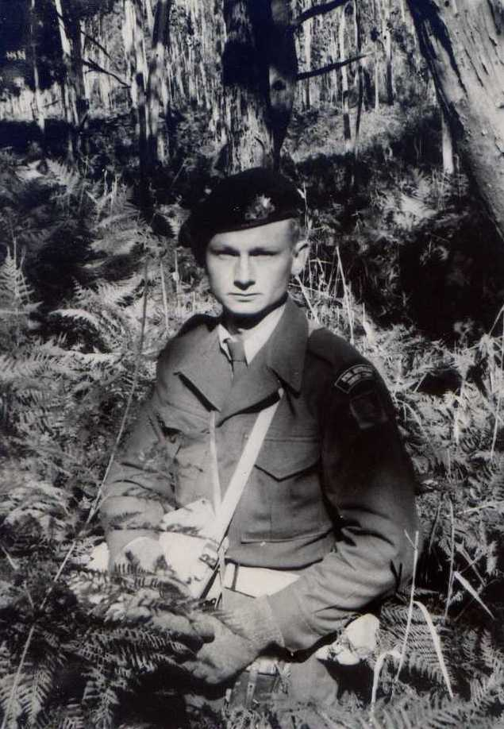
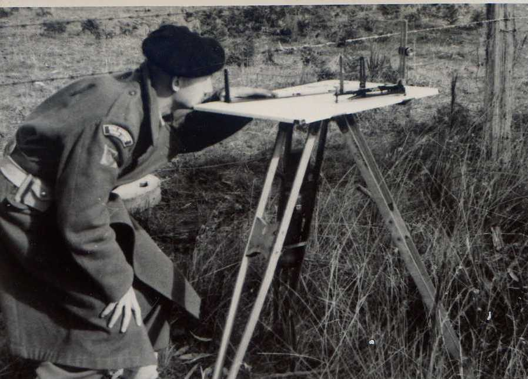
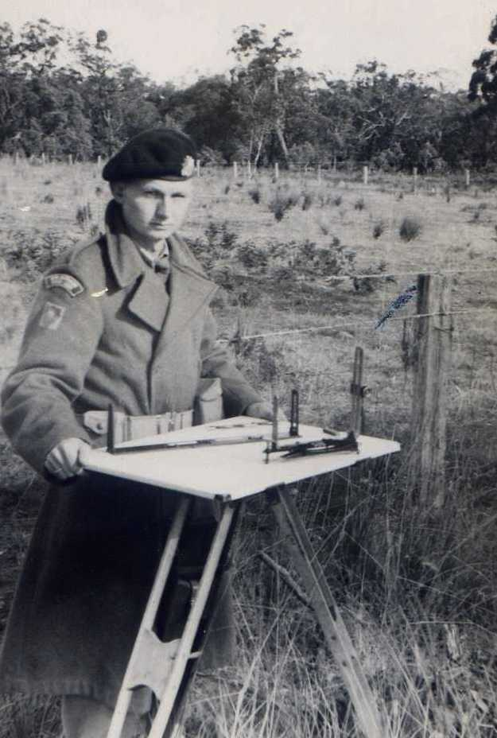
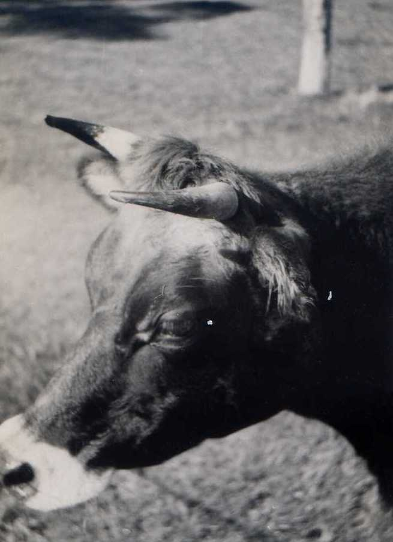
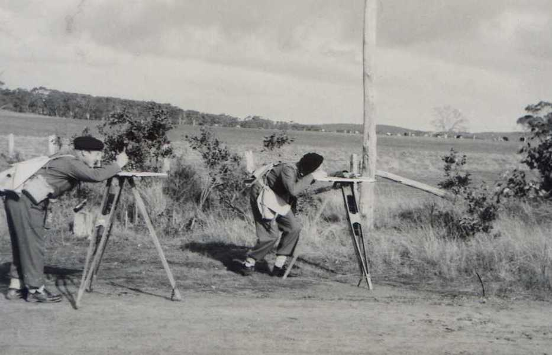
AROUND THE VALLEY
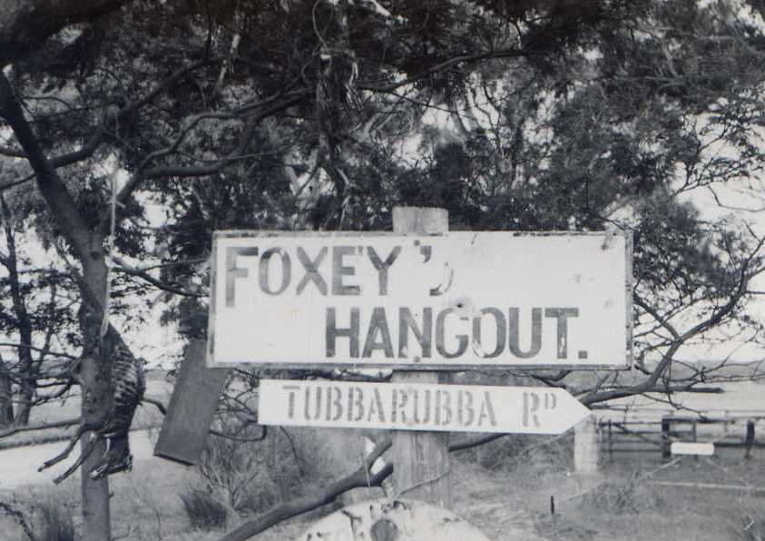
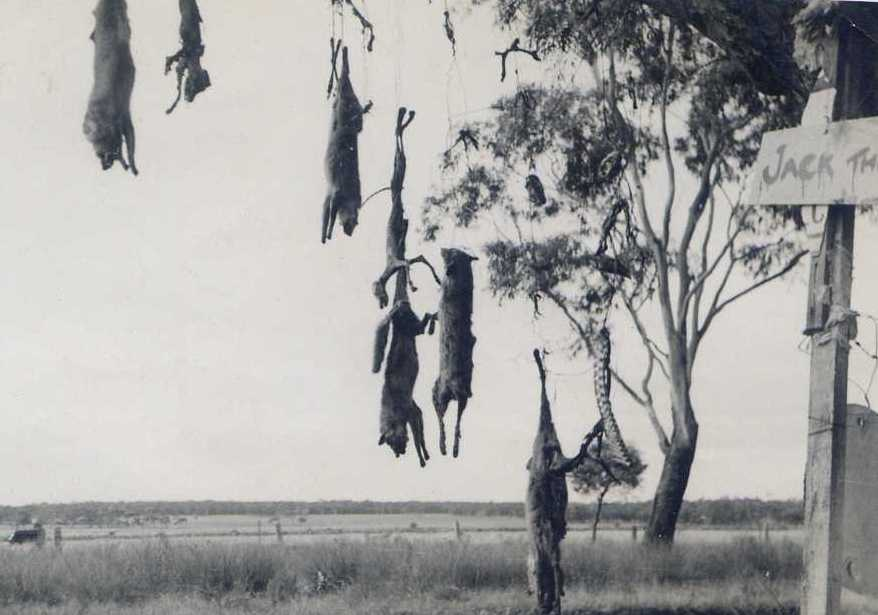
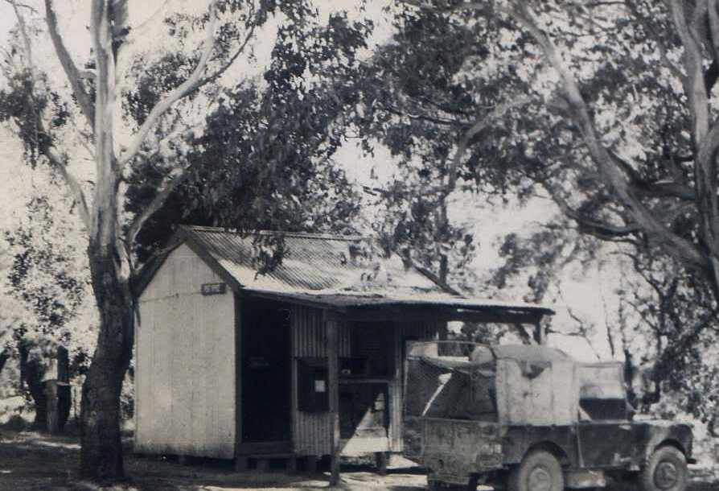
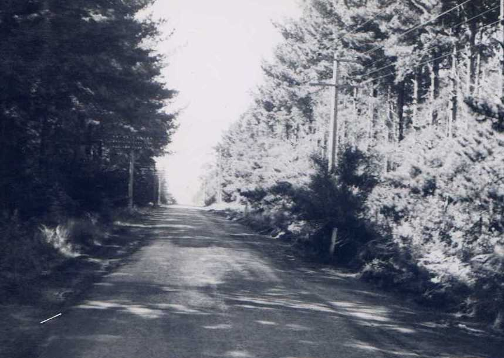
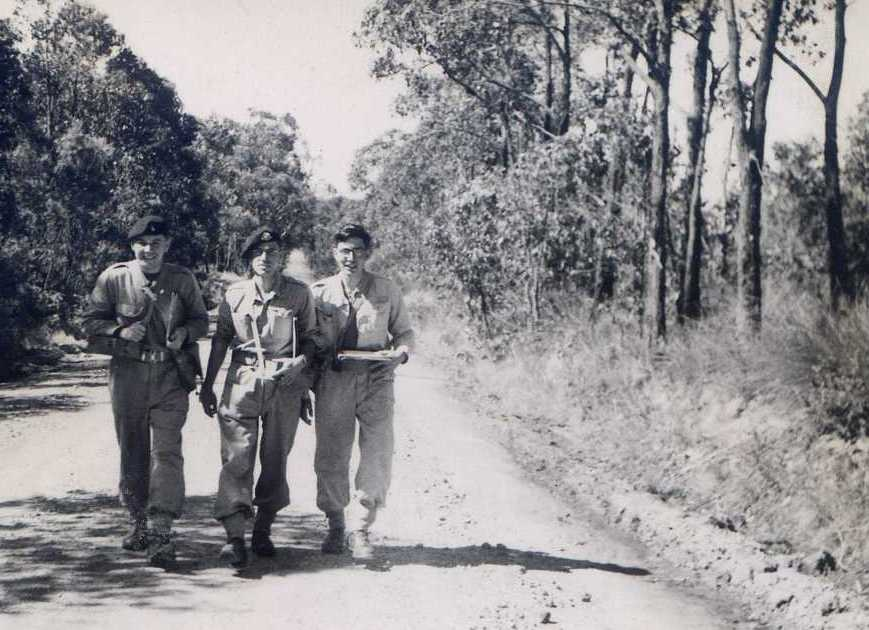
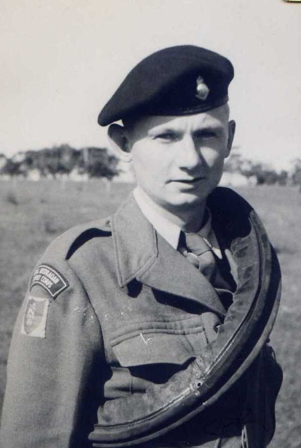
..............AND IN THE FIELD
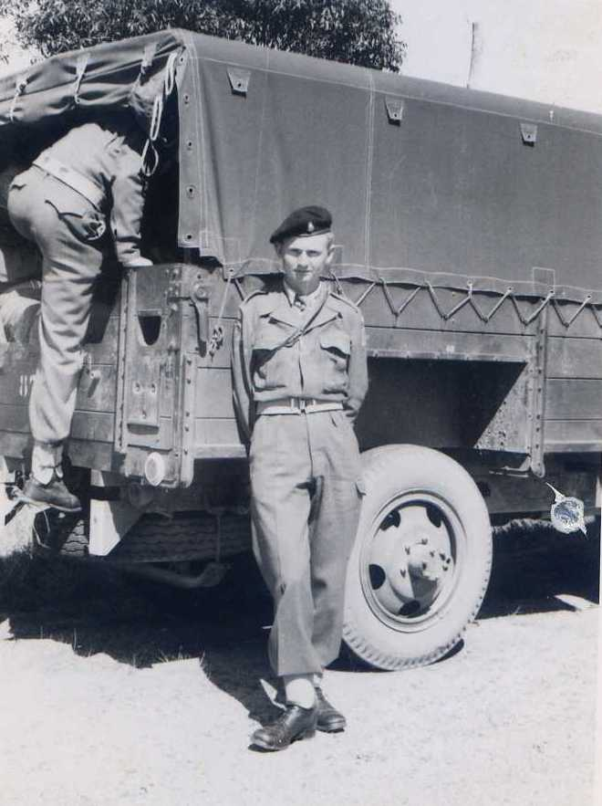
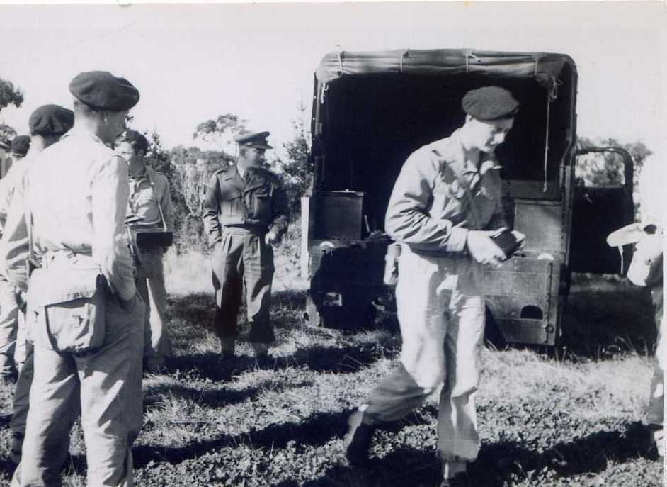
From left –Steve Rose, WO2 Alex Pond (Puddles), Bob Thompson
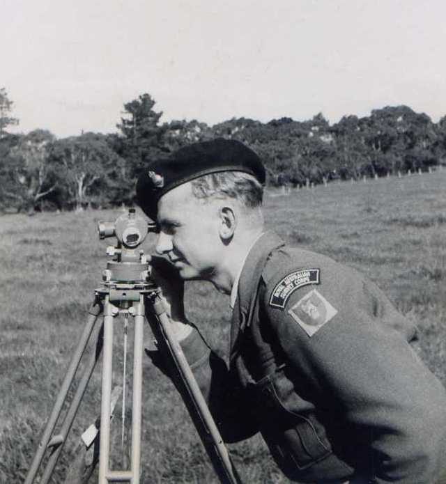
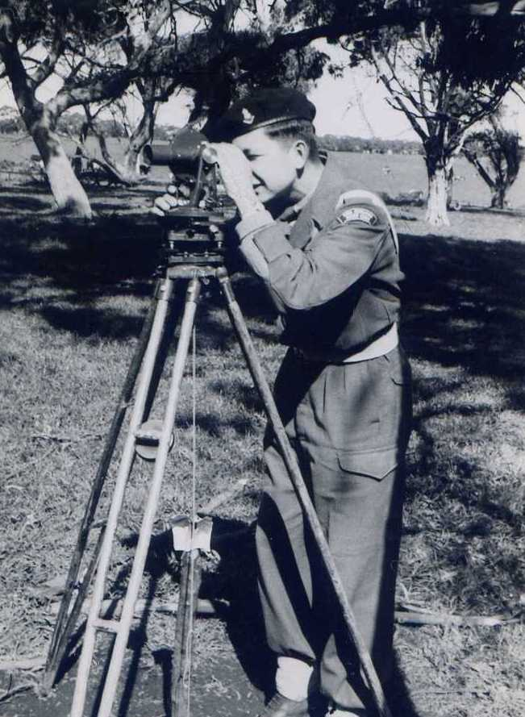
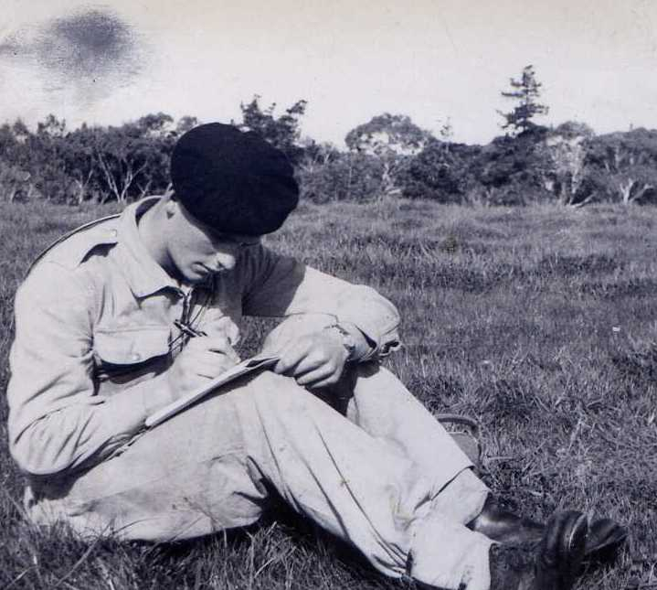
Fellow students
At this point I should say something of my fellow students, some I have mentioned already. At the end of the period of plane tabling and together with the other half of the course with whom we were deemed to have caught up we were split into two separate courses, still designated 7/55, the draughting course and the surveying course. I had no doubt that surveying was for me although it was suggested that I was suited to the draughting course. We went through an interview process being interviewed by Colonel Relf with Captain Stedman who had in front of them all our results so far. For me it was fairly perfunctory – I said surveying and that was accepted with a ‘keep up the good work’. That was certainly my intention. My fellow students who opted for and were accepted into surveying were:
Spr Brian Berkery – a Tasmanian, very pleasant fellow who became a good and continuing friend.
Spr Joe Farrington – a Queenslander who enlisted in Western Australia. Joe had had quite a bit of survey experience in Queensland in private practice and often regaled us with his stories of leech infested rain forest, lawyer vine, kunai grass, Gympie nettle and king brown snakes. Joe was a very generous fellow and very practical in every respect. His best friend was Tony Slattery with whom he enlisted.
Spr Tony Slattery was the tall Englishman on our course who had allowed himself to become a little Aussied, but not too much. I never became particularly friendly towards Tony although he was quite good to work with when we were paired. He was very friendly with Dave King who had opted for draughting and that friendship has been life-long to this present day.
Spr Bob Thompson, known as Tommo as most Thompsons are. Also quite a young fellow and a bit of a comic. Tommo struggled with the course and finally graduated as an assistant surveyor, a trade grouping that existed at that time.
Spr Jeff Sweet known as Sweetie. Jeff proved to be a slacker and was eventually taken off course. Do not know what happened to him after that.
Spr Kevin Moody who earned the nickname Moodoo. Kevin had served three years in Engineers and had applied for the survey course with a view to being an engineering surveyor and returning to Engineers. I didn’t get to know Kevin at all on the Basic Course but did so a few years later. Kevin became a lifetime friend.
Spr Bob Beckett a good steady bloke well liked by all. We were posted to the same unit at the end of the Basic Course in 1956 but after I left that unit I did not see him again.
Spr John Lambie; perhaps the best ‘soldier’ on the course; an Englishman but very different to Tony Slattery. John failed to graduate but became an assistant surveyor and later moved into non-tech trades in the Corps. John was a strong personality and physically strong. I was to work with him a couple of years later.
Spr George Ullinger who I have mentioned previously. We enlisted together and I always enjoyed George’s company. He was a good partner on the course but failed to graduate mainly I think because he couldn’t handle examinations. He left Survey after six years and then to my surprise a few years later had achieved a commission (lieutenant) in Engineers.
Spr George Gruszka of whom I have spoken previously. George and I became firm friends throughout the course but our subsequent career took us in different directions, but we kept in touch over that time.
Cpl Sam Chambers – a corporal because he had been to Portsea Officer Cadet School but failed to graduate. Practice at the time was to confer the rank of Corporal on such persons. Sam had been posted to Engineers and had applied for the survey course with a view to becoming an engineering surveyor. He wore his corporal rank throughout the course and did not endear himself to either staff or other students. I think his best friend on the course would have been Bob Beckett. I had an on again-off again friendship with him and he could certainly be very good company and he seemed to respect me but I tended to keep him at arm’s length. Our paths were to cross a number of times in the years that followed, but never to my satisfaction.
Spr John Van de Graaff was also one of our younger students. John was of colonial Dutch background and was well liked by all. I came to know John more in later years in various postings than I ever did at the School.
Spr John Etheredge my roommate throughout the course as he was at Kapooka. I might have had a more exciting roommate but perhaps I was better off with young John. He didn’t drink, took no exception if I did; was reasonably tidy and if I told him to tidy up his gear he would do so without protest. Had John finished the course I doubt whether he would have passed. He seemed to have a lot of trouble with most things we covered. I tried to help him at times but he was not receptive and had little interest. To our surprise he was selected for Officer Cadet School at Portsea which he succeeded in passing but was not accepted back into Survey. Some years later our paths crossed and I was further surprised to find he was an army psychologist in the Psych Corps.
Spr Ian Etheredge, John’s older brother. Ian was suddenly removed from the course for reasons we all suspected and was sent to the Army Survey Regiment where he trained as an orderly room clerk earning the rank of corporal before most of us did.
Spr Gomm stayed on course for a few weeks and then left at his own request. Cannot remember his first name and he did not appear in the end of course photo.
Then there were the draughtsmen. Once the course split into draughtsmen and surveyors we didn’t see a great deal of our draughting mates. There weren’t too many of them but I can say a little about each.....
Spr Ike Lever was a top student on the course and went on to a lengthy career in the Corps. Ike suffered badly from boils on the back of his neck throughout the course and I often wondered what effect they had on him. He was being treated of course but they persisted for quite some time even after he left the school and was posted to the Regiment. Ike was a really nice fellow to know.
Spr Johnny Williamson had a great deal of difficulty deciding whether to opt for surveying or draughting finally choosing the latter mainly because he believed that being in a field survey unit would prevent him from participating in sport which he loved. Johnny was a disorganised sort of bloke, too often late for parades and while he had a natural draughting ability he was untidy and this reflected in the standard of his work.
Spr Dave King had no desire to be a field surveyor and proved to be an excellent draughtsman. Dave had a ‘flair’ in a social sense; may have been a product of a Melbourne boys public school and did not appear to fit in with we rougher types. I knew nothing of Dave’s background although in later years I was to serve with him in difficult circumstances and gained a huge respect for him as a person.
Spr ‘Spider’ Webb picked up the nickname of ‘Spider’ to the extent that I never knew his given name. In fact I knew little of him in any sense either during our course or subsequently.
Spr Stig Mehling – German I think. A very quiet fellow whom I didn’t get to know.
Spr Maurie Jecks who became a close friend at Kapooka but somehow at the school we saw little of each other.
That is the line-up of students of the 7/55 Basic Course. I served with many in the years that followed and got to know those with whom I served very intimately. They were a great lot and will remain with me always.
2nd July 1955
The date is worth a mention since it was my 21st birthday. It was such a low key event that I have little recollection of it. Perhaps a few weeks later with three others, George Ullinger, John Etheredge and Johnny Williamson we together dined at the Golden Dragon in Little Collins Street – an occasion initiated by one of the others, George I think. More about the Golden Dragon later. The 7/55 Basic Course had been underway for two months and throughout that period there had been little opportunity for external activity away from the course. Perhaps the occasional night at a pub in Frankston that faced the waterfront but I am not sure quite when that became an oft frequented venue. I think it more likely that one or two beers in the wet canteen at Balcombe might have been the extent of any celebration. I do recall a gift from Tiger, my stepfather that I kept for many years. It was a very nice toilet set in a polished leather case with my initials in gold on it and on each of the components inside – the metal backed hair brush, the toothbrush holder and one or two other items capable of being engraved.
Music
It might have been soon after that, on my first or second visit to Melbourne that I bought a radiogram and with that started my collection of records, almost entirely classical music. The very popular portable radiogram at the time was the HMV ‘Nippergram’ and that appealed but I finished up buying another that had incorporated in it a record changer. The name of the model I have long forgotten but it became much travelled and served me well for quite a number of years. It had the choice of three turntable speeds, 33 rpm, 45 rpm and 78 the latter being needed for the old 10 inch and 12 inch Bakelite records that still comprised many record collections.
Frequently at the School we were visited by travelling salesmen usually marketing a single range of products – no Rawleys or Watkins travellers. However, one such travelling salesman had a range of good quality reference books and I bought from him a much treasured volume that still graces my book shelf – ‘The World of Music – the Listener’s Companion’, a 3 inch thick volume bound between polished wood cover plates with a leather spine.
Insurance agents were more frequent visitors. Generally the army encouraged young soldiers to take out insurance, perhaps as an encouragement to provide for their future. I already had a small endowment policy with AMP but got talked into another with CML. It was a form of committed saving and in my case they proved useful a few years later.
Correspondence and home
I used to write home frequently to Tiger and to one or two aunts, most likely Aunty Thora being the aunt most likely to reply. I also wrote to one or two of my railway work colleagues and the one who always responded was Tony Holtham and sometimes his sister Robin who we knew as Rio. Of course my old mate Jim McLaughlin was my most frequent correspondent but that became increasingly one way traffic from me to him. Nevertheless, Jim’s occasional short letters were always amusing. Tiger was always diligent and responded to my three or four pages with a page of his well intended sprawl that often took quite some interpreting. As time passed interest in home started to diminish. I had left home with a lot of uncertainties and as the months passed I started to realise that it was no longer my home. The Army was fast becoming my home and I sometimes wondered about what would happen at the end of my six year engagement.
Surveyors in Training
Once we were separated into our two trade stream courses – both 7/55 – our detailed training in surveying continued in earnest. In the months leading up to Christmas 1955 we continued with intensive classroom activities, especially in spheroidal computations and computations on the Transverse Mercator Projection – addressing the problem of representing the curved surface of the earth on a flat sheet of paper. Puddles Pond had a remarkable skill in explaining these very complex concepts in the simplest of terms with clear quickly drawn diagrams on the black board. We studied geographical systems of reference, that is latitude and longitude with computations such as the conversion of Transverse Mercator coordinates to geographic coordinates – ‘Latitude, Longitude and reverse Azimuth (bearing in lay terms), ‘Simple Adjustment’ of trigonometrical networks and many others that I have long since forgotten. We knew little of the underlying mathematics of these computations. The Survey Corps had developed computation forms that took you from line to line down the page using of course the mathematical trigonometric tables – sines, cosines, tangents, secants cotangents – initially in logarithmic form and then moving to natural tables once we were issued with the ‘double Brunsviga calculating machine. Remarkably we were each issued with one of these very expensive calculators (we called them computers). The ‘Double Bruns’ made traverse calculation very easy – enter the sine on one side and the cosine on the other, wind in the reduced distance and the ‘diff easting’ and the ‘diff northing’ would come up in the display at the top – not electronic but purely mechanical.
Field work continued around the paddocks of the Dromana Valley, more complete and extensive chain and theodolite traverses and theodolite observation of resections. In about September we put our vernier theodolites away and were introduced to the microptic theodolite, the Wild T2 capable of direct reading to a single second of arc. With the T2 we observed the triangulation network around the Dromana Valley, three figures with a baseline on the floor of the valley and adjusted it using the ‘simple adjustment’ procedure. We ventured into photogrammetry with principal point traverses, use of the parallax bar and were shown the mysteries of Multiplex plotting equipment – not to use but just to look out. We annotated photographs on foot wandering the Dromana Valley again with an envelope of aerial photographs and a pocket stereoscope. Back in the classroom we each had a Universal mirror stereoscope on our table and a couple of ‘Old Delf’ magnifying stereoscopes for better defining small detail. On the photographs we identified pass points principal points and control points which we coordinated in the field by resection and intersection. In the field we carried out barometer heighting each of us carrying a set of three precision aneroid barometers to a multitude of points we could identify on the air photo taking readings at each point and carefully recording these then checking in to the base barometer station at two hourly intervals located on a known height point. Reducing those readings to height differences and obtaining a height above sea level for each point visited. In the classroom again we contoured the air photos directly onto the photo image using our Universal mirror stereoscopes. Roads and tracks were classified according to width, surface and use. In effect we were making a map.
At a later stage we each produced a gridded compilation sheet on ‘Kodatrace’, a stable draughting medium, transferring the detail from our annotated and contoured air photos and using coloured inks to distinguish the detail – red for all cultural (man-made) detail, brown or black for contours, green for vegetation and blue for all water features. I don’t know that our compilation sheets could be classified as works of art; we were rather ham-fisted draughtsmen but the emphasis was on clarity of detail to allow the cartographic draughtsmen to create the final product.
Photo (2) the school staff show us how it is done with me (for whatever reason standing at the end of the 300 yd mound.
Much of what I have described probably carried over to the following year after the Christmas break and before proceeding further with this tech story I should look at the lighter side of our life at Balcombe. It certainly was not a case of all work and no play.
Excursions to Melbourne
I have already commented on our after class excursions into Mornington in Steve Rose’s Ford Custom Ute. In about August and once our course had established a more comfortable routine and so long as I was in front on the various course projects I started taking the occasional weekend in Melbourne travelling by train from Frankston to Flinders Street station, very central in the city. Mostly I went with others but not very often would we do things together. Perhaps our social interests were too divergent. I cannot recall how I came to be a regular stayer at the YMCA just off St Kilda Road and quite close to Princes Bridge; most likely somebody recommended it. Its great advantage was that it was cheap. Army blokes were offered a reduced rate on production of current leave pass, showers were hot and copious and sleeping adequate at about six or eight to a room in bunk beds and some sort of cafe downstairs where one could get a bacon and eggs breakfast – cheaply. I think there were lock-up lockers somewhere also.
My times in Melbourne were mostly spent going to a theatre (film or play), probably meeting with a couple of the fellows at a pub by pre-arrangement and having a meal somewhere, often on my own. Our meeting place on occasion was in the lounge of the London Hotel in Elizabeth Street that was said to be a great pick-up place but I was rather too timid for that sort of thing and I don’t recall any of my colleagues testing their skill. Sometimes we met in the lounge of the Australia Hotel in Collins Street but that was a little too expensive for an army private soldier. George Ullinger called those who frequented such places ‘lounge lizards’ so I guess we were all would be ‘lounge lizards’ at times; or maybe we just enjoyed watching those who were.
Symphony concerts took place in the Melbourne Town Hall, a very grand location, and I recall attending a Beethoven concert once and sitting in the choir stalls behind the orchestra, the only seat I could get. The conductor was Sir Bernhard Heinz, quite a personality in the Australian concert scene and seeing him conducting face on was very interesting. I sat next to a very friendly young lady, perhaps a little older than me and we had coffee afterwards somewhere but didn’t make any further arrangement.
Pubs closed at 6 o’clock and the problem then was what to do afterwards. There were some that had a licensed restaurant where alcohol could be served with a meal up to 10 o’clock, maybe later, with music and entertainment but that was expensive and I may have done that once although more frequently some years later.
How I found out about it I have no recollection, perhaps I just chanced upon it – that was the Golden Dragon Chinese restaurant in Little Collins Street. The Golden Dragon had an Australian wine licence which meant that it could serve Australian wines with meals as long as they were served. An Australian wine licence was a peculiarly Melbourne thing and there were very few restaurants that had one. The Golden Dragon was one of the finest Chinese restaurants I have ever frequented, either then or since. It was a two level restaurant – upstairs alcoves and downstairs general dining. It was very Chinese with an elderly Chinese lady sitting at a high counter just inside the door who seemed to scrutinise each person entering. A couple of fairly heavy Chinese fellows were always evident there to handle any unruly or unwanted customers. There was a debonair looking Chinese head waiter but most of the waitresses were Australian and not particularly young. The menu was extensive and largely quite foreign to me but I was there to learn and the waitresses were always very helpful in advice. Also very helpful in suggesting appropriate wines and I tried many from moselles to chablis to rieslings and also the reds both still and sparkling. I certainly learnt a lot at the Golden Dragon. My visits there were sufficiently frequent to become known to one of the waitresses who looked after me in a very motherly way.
The Melbourne Cup – 1955
My one and only visit to the Melbourne Cup was in 1955. A group of us went and from a photo I have it included George Ullinger, Johnny Williamson and John Etheredge. I am sure there were others as well. Since Melbourne Cup day was a Tuesday (the first Tuesday in November) we may have had the Monday off as well. I would assume I would have stayed at the YMCA that night and no doubt the others did too, and we headed out to Flemington the next morning on one of the many special trams that took us to the front gate. I had persuaded the others to go to what was called ‘The Hill’ at Flemington where I felt sure that one would get a better view. We did – an excellent view of the actual race. It was a beautifully clear day, blue skies and Flemington was looking good with many flower gardens in full bloom and green lawns but of course with the crowds building up no doubt many trampled lawns. The Hill was not too crowded and eventually it came time to place our bets. I think most of the fellows, those who had decided to have a little flutter (not John Etheredge), used the tote but I wanted to have a more complete experience and fronted up to one of the Hill bookies. For reasons I can’t recall I put ten shillings each way on the New Zealand nag ‘Toparoa’. It offered reasonable odds at 7 to 1 and paid about 30 shillings for a place and had more than just a chance. It won the 1955 Melbourne Cup! – Wow! Everyone else did their dough. I fronted up to my bookie again and he passed me my winnings with a grin. I realised of course that I wouldn’t be able to pocket them for long. The race itself! Very exciting; I could hardly believe that I had backed the winner and rather wished I had put a straight five pounds on Toparoa instead of ten bob each way.
We trammed back to the city and headed to the Australia Hotel and my winnings rapidly disappeared at the bar. Maybe I had sufficient over for a meal at the Australia’s Silver Grill because that is where we ate that night and i have a photo to prove it
The lead-up to Christmas
Course work did not diminish in the lead-up to Christmas. We were all to have Christmas leave, three weeks at that time plus the Christmas public holidays giving nearly four weeks in all. Add to that the time to travel home because leave didn’t start until you left the Personnel Depot in your State of enlistment. Travel was at army expense – part of the enlistment deal and one did not necessarily have to return to your State of enlistment; one could choose to go to any other location and the travel cost would be covered provided it was not more than travel to one’s State of enlistment. We Western Australian enlistees were in front because our travel to WA was further and more costly than any other train trip in Australia at that time.
In the lead-up to Christmas the weather started to warm up considerably and we were no longer wandering the Dromana Valley and its surrounds in battle dress and great coat.. It had been during winter that the very warm underwear with which I had been issued at Royal Park became greatly appreciated. Unfortunately either because of the underwear or for some unrelated reason I developed a very painful rash in my crotch underneath and over my scrotum. Finally I visited the RAP and after inspection by the MO given a bottle of ‘gentian violet’ to apply to the affected parts. I have no idea what gentian violet contains to cure the condition but apply it I did and it certainly gave relief eventually curing the complaint. Gentian violet is very violet and much of it transferred to my winter underwear there to remain forever, lessening only slightly with repeated washings. There is not a great deal of privacy afforded in army living; showers tend to be communal although at Balcombe unlike Kapooka there were part partitions between showers and pedestal pans. Skitchie’s purple ‘balls’ soon became an unwelcome feature of my anatomy and in a short while known to the whole course. I wore the gibe for a week or two until it lost currency. I had learnt that the best way to address such notoriety was simply to ignore it. Reacting only prolongs the problem; anyhow, it was all good natured.
Maintaining the uniform
Without doubt the laundry facilities at Balcombe were substantially better than those at Kapooka but in all my army experience laundries always left a lot to be desired. If five washing machines were provided one could be sure that two would be not functional and often more. Ironing boards were always uncovered and irons drawn from the Q Store always had frayed cords and burnt starch stuck to their base. At Balcombe, and in every army laundry I saw thereafter for many years the washing machines were ‘Lightburn’, very similar, in fact exact same design to the Lightburn cement mixer. It comprised a sloping drum (the lid was invariably missing or buckled and wouldn’t fit) into which one piled one’s dirty clothing, filled the drum with water from a hose (if you were lucky it might be hot or at least warm) turn it on and it rotated just like a cement mixer. Having decided that clothes had had sufficient time in the rotating drum, you turned the machine off, extracted the clothes into a bucket or the wash trough (if someone else’s filthy clothing had not been left soaking in the trough), unscrewed the plug in the drum, then turning the drum to its bottom position to let the dirty water drain out, preferably into an open drain in the concrete floor but often simply flooding the floor since the drain would be blocked or the machine wouldn’t reach it, replaced the plug, refilled the drum from the hose and inserted the soapy washed clothing for a rinse cycle. In front of the wash drum was the spin dry drum smaller than the wash drum. After sufficient rinsing the clothes could then be pulled from the wash drum and into the spin dry drum, turning on the small switch at the side and (again if you were lucky) the spin dryer would rotate at a great rate expelling all the water from the rinsed clothes. Clotheslines were at the back of the laundry and at least at the School one did not need to stand guard over your drying clothes until dry. It might have been a reasonable process provided everything worked but that rarely happened.
‘Fortuna’ for the first time
Towards the end of the year we had a two day excursion to Bendigo and the AHQ Cartographic Company. We bussed to Bendigo arriving mid-afternoon – I think we called somewhere else on the way, maybe the Map Depot at Kensington because we left quite early in the morning. Puddles Pond had told us what to expect – Fortuna Villa – once the home of gold mining magnate George Lansell and even some of the bizarre stories associated with the place. The Army had acquired it in 1942 for the wartime Corps expansion. We stepped out of the bus on a very grey afternoon and there it was, this huge old place with its turrets, verandas (mostly enclosed). It is hard to describe the impact that place had on me and the memory of it rests with me to this day. Fortuna was unbelievable. It seemed like something out of another place, anywhere but Australia. It was grey, unrelieved grey, half hidden by overgrown shrubbery. It was dilapidated; wrought iron from veranda balustrades missing (apparently taken and melted down for the ‘war effort’). There was something almost eerie about it. The lake – how did it get there? Was it a lake or a swamp? We were taken to our sleeping accommodation a hut (they called it the ‘long hut’) up a steep rise to a gravelled parade ground. There were a few tents down one side of the parade ground that we were told was national service accommodation but no national servicemen at that time. There were some old huts near the lake for what purpose was not clear. The kitchen and dining rooms were also at one end of the parade ground. That was where we were to eat. We were met by someone there, I can’t recall who but our own instructors seemed to be at home – all had served there at one time. We were told that the soldiers bar would be open and our time was our own. We were in battle dress with boots and gaiters and web belt – rather inappropriate for tramping through an old building. However, the following morning we fronted up to our first parade in the ballroom in hob-nail boots on the once beautiful parquetry floor – it was raining outside. It was apparent that there was little respect for the old building – that was to come later. We toured through the various working and accommodation areas of the Villa. I observed the beautiful ceilings, especially in the ‘music room’, used as a draughting room and noticed the electric power conduits snaking diagonally across walls to power various instruments. We trooped through the tunnel under the building emerging under the coach house. The verandas were mostly enclosed with corrugated iron and roughly lined on the inside and used for file storage. The attic space at the top of the building was still being used for accommodation. At the back of the building was a long corrugated iron latrine block – at least a twenty seater – and a shower block. Such was Fortuna in 1955.
Following our tour of inspection our bus took us back to Balcombe with the memory and impression of Fortuna lingering in my mind in subsequent years.
A social function
Sometime before the Christmas break up, and probably after the Bendigo excursion our course had a mid-term social function in the rec room. My recollection of it is that it was well conducted and organised. The rec room had a bar at one end which only operated as a bar when there was an authorised social function and then beer was sold. I don’t recall the rec room getting much use at other times. It contained a few comfortable chairs and a couple of coffee tables with an assortment of old magazines, a scatter of mats-bedside on the floor and not much else. It was there for social functions and not much else. On the night of our mid-term event the bar was operated by Sam Chambers (still a corporal at that point) wearing a steward’s jacket with purple epaulettes and gold corporal’s stripes on the sleeve – goodness knows where it came from. We students were in battle dress – all except Dave King. I think Dave had been appointed as some sort of MC for the night and he turned up in a black dinner suit! I am not sure what either we of the staff made of that! Sam was assisted by a WRAAC soldier from somewhere in either the Apprentice School or School of Signals. In fact we had invited a number of WRAAC soldiers to the event and I think there may have been a dozen or so attending as well as the wives of those of the school staff attending. Captain Stedman’s wife attended, perhaps under sufferance and I recall her being small and petite and very quiet. I was to get to know Joan Stedman very well in later years. The other wife I remember was the wife of Warrant Officer Ken Shaw, Nance Shaw, a great fun person. Dancing was the order of the night and Nance Shaw was in great demand from all the young fellows and she clearly enjoyed the occasion. I had met or had had some contact with one of the WRAAC, perhaps at the RAP. Her name was Carol and she was very pleasant and friendly. I often thought of her and wondered if I had the courage to ask her out – maybe to the pictures in Frankston, but never did. Carol was at our function and we danced (I have a photo to prove it) and enjoyed her company throughout the night although observed that she got a little ‘tiddly’ as the night progressed. It was near Christmas and I was going on leave to the West and on return in January Carol had been posted somewhere so that was the end of that!
The Christmas break and a train trip
We reached the end of the year and by then we were looking forward to our Christmas break. There were a few of us heading west, George Gruszka, Johnny Williamson, Maurie Jecks, Max Haworth. John Etheredge and me. We went off as a separate consignment, made our way to Royal Park and reported in the transit office and found that a special train, a ‘troop train’ was to take us across the Nullarbor to Perth. There were quite a large number of servicemen heading to Perth on leave and for other reasons as well. At that time to reach Perth we would travel on four trains – the ‘Overland’ to Adelaide from Melbourne an unnamed rattler from Adelaide to Port Pirie, then the Transcontinental Train from Port Pirie to Kalgoorlie and finally the ;Westland’ from Kalgoorlie to Perth. It was only the Trans train that was to be ‘special troop train’. There were a handful of officers travelling with us one unfortunate young fellow being appointed ‘draft conducting officer’ who held all the paperwork covering meals and travel authorities. He was supposed to maintain order on the trip although I think we hardly saw anything of him during our three day journey. (This was an experience I was to wear some years later.) Maybe we had a day or two at Royal Park while we all assembled, then to Spencer Street to entrain on the Adelaide Limited an uncomfortable overnight sit-up trip but with breakfast in the breakfast car before arriving at Adelaide Central to board an incredibly slow train to take us all to Port Pirie, the eastern terminal of the Trans Train arriving late afternoon.
A couple of years before a much vaunted new Trans train had been commissioned – all steel coaches, lavish dining car, sleeping compartments throughout pulled by fast mainline diesel locomotive. All the coaches were painted in corporate colours, maroon and white I think. That was not the ‘special’ train that we were to travel in. We were in a re-configured old Trans train – old, but very comfortable as it turned out, wooden coaches built on traditional lines pulled by the diesel locomotive. But it had a very lavish (to us common soldiers) dining car – linen on the tables and a waitering staff in traditional black and white who called us all ‘Sir’. I recall the meals were excellent. After dinner we returned to our compartments to find that the beds had been pulled down and made up with white sheets and a blanket – what travelling luxury!
We departed Port Pirie at 5.00pm and were travelling into the western desert country south of Woomera well before night fall. After our dinner and back in or sleeping berths there was little to do but watch the desert night pass us by, the stars larger than I had seen before glistening in the darkness, the creaks and groans of the old coaches and the clacking of the wheels on the rail. At times throughout the night in semi consciousness I was aware that the train had stopped and there were voices on the rail side. Peering through the window I could make out people, stores being offloaded from the cargo vans at the rear of the train to the small railway communities across the desert. Waking in the early morning with the sun just above the horizon we were well and truly on the Nullarbor Plain – could any part of this world be as flat as this. The longest section of straight rail in the world – 280 miles without a bend. Breakfast in the dining car and we were stopped at some small siding – one of the many small railway communities, I don’t know which one, maybe Cook. I left the coach descended the steps at the end and wandered along the low level platform. Again parcels were being unloaded from the end of the train. There might have been a couple of dozen people at the siding, black faces and white in this lonely desolation and yet a desolation that had a beauty about it at least at that early hour of the morning. It was to become very hot as the day passed and our old train was not air conditioned. Travelling at about 60 miles per hour most of the time lowering a window could at least provide a breeze sufficient to dry the sweat. Finally we were at Kalgoorlie, arriving in the early evening. An hour or two to wait in the RRR and then onto the ‘Westland’ to Perth, a 360 mile trip with many stops along the way. No sleepers on this one. We arrived at Perth Central probably about midday. Not sure how we got to the Personnel Depot at Guildford, perhaps by army or chartered buses – there may have been 75 to a 100 soldiers on the train. At the Personnel Depot I collected my leave pass, and having arranged to meet up with our survey fellows at a pub in a few days, George Gruszka, George Ullinger, Johnny Williamson and one or two others, but not John Etheredge – John was a home boy and had little interest in his army mates while on leave – headed for 134 Great Eastern Highway on the ‘Beam’ bus.
\
A MID-TERM SOCIAL OCCASION
‘Blues’ With Engineers lapel badges
Home at 134 and the sisters
Tiger had told me in a letter that he had taken in two elderly widowed sisters as ‘star’ boarders. I had taken the news in my stride, it was not my business and I was not in any way disconcerted by the news. Their names were Olive and Mary (I cannot recall their surnames each were different of course) and they were as unalike as chalk and cheese. They were to remain at 134 for quite a few years and I have no recollection of what might have happened to them, whether they simply moved out or even passed away. Tiger had said I could have my old room back. Olive and Mary slept in the front bedroom, Mum’s old bedroom (it had twin beds) and Tiger had a bed on the now partially enclosed back veranda which he preferred. On knocking at the front door it was opened by Mary who was of course expecting me. Tiger was at work and planned to be home early so Mary said. Olive was at work in the main PMG Office in Forrest Street where she was in charge of the telephone manual exchange girls. The home looked much the same. The furniture was in the same place, nothing had been altered. The garden was reasonably well attended; many of the shrubs had grown considerably. Tiger’s pond in the middle of the front lawn had been filled in and converted to a garden. The fruit trees at the back were healthy enough but hadn’t thrived over my year away. Tigers old shed was still there full of junk including an old steel trunk full of my bits and pieces, something that I was not to access for quite a number of years under very different circumstances. The lower waterfront back yard that Tiger had filled with bark down to the water edge and from where I has sailed my VJ ‘Miome’ and my little fishing dinghy ‘Peter Pan’ had stabilised and had some grass growing on it. Perhaps Tiger had acquired a few loads of soil to cover the bark during the year.
Of course in December and only a week before Christmas the weather was quite hot. I was anxious to re-acquaint with my favourite beaches and also with all my old friends, especially the McLaughlins. But first I needed to settle in to my old home which I quickly realised was no longer my home. The army was now my home. Mary filled the role of the housekeeper. She was a small woman with iron grey hair and a very easy manner. She was somewhat dominated by her sister Olive but nevertheless they had a close sisterly relationship. Mary was a practising Roman Catholic and attended church twice on Sundays, Mass in the mid morning and Benediction in the evening. Tiger (whom they called Cyril, his proper name) often took her to church and picked her up. Olive never attended. Both Olive and Tiger might have the odd dig at Mary’s church attendance but always in good humour and Mary took it in that light. In fact the three of them got along together famously. I was to have two more Christmases with them at 134 and on all occasions they seemed quite happy together. They tolerated Tiger and all his rough living ways. Although both had been married (at least I think so) there was never any mention of children. I suspected that Tiger was closer to Olive and they were sometimes together at the Sandy and may have gone to the odd party together. Olive was more the ‘party girl’ than Mary but Tiger certainly respected Mary. Olive was rather stout but well corseted; dress well and had her very white hair attended by a hairdresser weekly in a hair-do piled up on top of her head which was quite the style at the time. In other words, Olive was a well presented lady. She enjoyed a drink although Mary was an abstainer apart perhaps for the occasional port wine.
Mary prepared a nice salad lunch for me and I unpacked my old suit case (I had not brought a kit bag with me) chose some civilian clothes to wear and waited for Tiger to arrive. I kept my KD uniform on for Tiger’s arrival in anticipation of heading to the Sandringham for a beer in the late afternoon. I thought he would like me to be in uniform on my first visit to the Sandy to meet a few of his old mates although I had no intention of wearing it while on leave after that one occasion. I heard Tiger’s car, now an Austin A40 ute replacing the old 1937 Hillman Minx pull into the drive and I greeted him as he stepped out. Tiger in his work clothes smelt as usual of dieseline; he gave me a big hug and he choked out a few words, his eyes were glassy with tears and I think mine were also. I didn’t know what to say other than “Hello Tige”. We went in the back door – obviously this was the way Tiger always entered. Mary had a pot of tea ready and we sat in the kitchen and we talked a little. Maybe I just told him about my trip across the Nullarbor and how much leave I had – till mid January and had no particular plans. Finally he went to the bathroom and showered and changed. We drove up the hill to the Sandy (Tiger never walked if he could drive) and spent an hour or so in the bar. He introduced me to some of his friends or maybe just acquaintances, as they arrived, mostly ones I had not met before, perhaps ones that he had made in the past 12 months. I asked him about a few of his old group, Les Feast and others and got the impression that he had moved on a bit. He didn’t seem keen to linger on and I had the impression that his life had changed since Mum’s death. Maybe we talked a little about Mum’s passing but there was little that could be said. He was still working in the railways of course in earth moving but less involved in big construction work. The Fremantle to Kwinana line where we worked together was well and truly finished and in use. I think I might have said I would like to see it again with a train on it, however, that never happened. My past life seemed strangely remote and I found it hard to even think about it. Mary had cooked a nice dinner on the old wood stove and I think that at least on that occasion Tiger was keen not to keep her waiting. We went back to 134.
Then I met Olive. She was clearly ‘the Boss’ but I felt no resentment at that. She was very welcoming and immediately inclusive with my being there. Tiger clearly wanted to impress her and I could see that Olive was having an impact on Tiger’s life – for the better it seemed to me and it was. I had asked Tiger about our neighbours – Jorgensen next door had moved and the house was empty – it was a jerry-built place – we had seen it during its construction and it was already showing visible signs of deterioration; the English gentleman a couple of doors along the road had died and Tiger had had little contact with our neighbours on the other side. Perhaps the incident of Mum’s fur coat had soured that friendship – I never asked. Tiger for all his generosity and open-handedness could certainly bear a grudge or hold on to a slight and that was a big one. Tiger talked a good deal about the Parnhams, Reg and Beryl, who lived in a big home overlooking the river about half way between 134 and the Sandy. I was to go to a party at their place, quite a big show but that was on another leave period at the end of ’57.
I was dog tired after the long trip home and went to bed early, well, by nine o’clock. I dug out my little radio and listened to some of my favourite Perth stations – familiar voices put me to sleep and when I awoke next morning it was well after 9.00 am and both Tiger and Olive had gone to work, Tiger in his A40 ute and Olive by bus. The bus stop was just across the road.
Visiting old friends and relatives
I have little recollection of what I did over my leave period. Certainly I called on my old friends, initially the McLaughlins and had a meal with them on one or two occasions. Jim had plans to go across to Rottnest Island with mates after Christmas and suggested I might join them but I declined to do so. It wasn’t until my leave break at the end of 1958 that I was to see Rottnest again. But I had no other plans to fill in the time which was in any case quite short. I recall meeting Jim in the city on a Saturday evening with Keith Chesson and a group of girls. Therein lay their interest and I found no common ground in their company. I realised that while my friendship with Jim remained firm we no longer shared a common interest, even less so with his friends.
I certainly called on my uncles and aunts and of course Grandma. Grandma had left Bishopgate Street and had moved into a care house at South Belmont. It was pretty ordinary. She had a pokey little room and I could see she was drifting into old age senility – I suppose you would call it Alzheimer’s these days. But we sat on the veranda and chatted for half an hour, lapsing into long silences during which neither of us could think of anything to say. She spoke of Mum as if she was still with us and yet asked from time to time of an assurance that her death had been entirely accidental. Aunty Rhoda visited her frequently, weekly perhaps but I think she would have been the only daughter to do so. Uncle Lennie had gone to the goldfields again and I don’t think mention was made of Uncle Alex but I knew he was living in a shack out in the bush somewhere near Cannington. I called on the Dodds and they were pleased to see me but it was only Uncle Bob who showed any real interest in what I was doing. I recalled that Aunty Rhoda had been quite critical of my move into the Army and thought it was a quite odd decision. Ken had gone to the ‘east’ with a mate and was working at General Motors Holden at Fisherman’s Bend as well as another job and pulling in lots of money. His intent was to stay for the 1956 Olympics in Melbourne and Aunty Rhoda seemed quite proud that he had been ‘sowing his wild oats’ as every young man should. Glen had left home and little was said of him.
I visited Aunty Thora and Uncle Don who were living in a home they had bought somewhere around Nedlands. I didn’t see cousin Robin on that occasion. She was living at home but working of course but somehow my visits never caught her at home. Aunty Thora was the same as always, very pleasant and interested in all I had been doing. She and Uncle Don were quite retired but retired life was not for them and they were interested in moving onto land somewhere.
So that covered the relatives. I probably made more than one visit, certainly to the Dodds and the Coverleys.
Old work mates......
I caught up with my old work mates and visited the Railway Chief Civil Engineers office in Wellington Street. They were all there as I would have expected, Tony Holtham, Peter Tournay, Doug McDougall and others. Some had left; Robin Vickery (who had succeeded me on the Kwinana job) had left and had been accepted for Officer Cadet School at Portsea to my surprise. Then there were the senior staff, Mr Letch, Mr Aquino and others. I was made very welcome. Con Keane had left the head office for an appointment as District Engineer in one of the Districts. Tony Holtham invited me to his home (he still lived with his mother) and I did so on a couple of occasions where we played records and discussed music, both classical and jazz. I dropped down to the Perth District Office, that is, down stairs in the same building, and found Bob Mansfield who was the person who first interested me in buying and sailing a VJ sailing dinghy. Bob had been building one from scratch and had he finished it it would have been the best constructed VJ on the water. Bob had married and sold his part completed VJ and never sailed. He invited me to his home for dinner to meet his wife and I went as invited. Bob had acquired an old vernier theodolite which he wanted to show me and I professed great interest in it but of course it was a long way short of the sort of surveying instrumentation I had experienced at the School of Survey. Bob was working two jobs and I felt that all was not bliss for him either at home or at work.
My only other connection with past work colleagues was accidental. I had dropped into a pub in Wellington Street opposite Central Station for reasons I cannot recall (I wasn’t in the habit of dropping into pubs unless it was to meet someone) and two of the fellows I worked with in the Northam District Office back in 1952. I was a very young fellow then but they spotted me in the bar and called out and we had quite a long chat and I downed a few beers with them. They seemed genuinely interested in the sort of surveying I was being trained in in the Army and were incredulous that there were theodolites that could be read directly to a second of arc. Although I had not seen either of them since I left the Northam office in late 1952 (I may have returned to Northam for a short stint in January 1953) they seemed to be aware of my involvement on the Kwinana rail job.
......and new Army mates
Of course I met up with my army mates on a number of occasions although I do not recall what we did together other than have a beer or two or three in one of the city or suburban pubs. There was a downstairs bar near the corner of Murray Street and Forrest Place – was it called the Allambra bar? – where a few of the fellows from the Western Command Field Survey Section met on a Saturday morning. One of our number knew of their watering hole and I went there and met quite a few of the Western Command blokes. I recall Snow Simpson, a warrant officer whom we called Snow (I didn’t know that you could call warrant officers by their first name nor a nickname) Lyell Johnson and Barry Broad. There were others also. They talked a lot about their work in the section and I found that interesting. There were others that I was to get to know a year later. I did not see very much of my basic course group although did so on at least one occasion because I recall borrowing Tiger’s A 40 ute, picking them up and driving somewhere then taking them back again. The A40 ute is not very big with room for one passenger in the front and four in the back. It was quite a load for the little ute. I have no idea where we went – maybe to a party somewhere, perhaps one of their homes.
However, I did see a little more of George Gruszka. He had invited me and maybe one or two others to his parent’s home for dinner. I can only recall Johnny Williamson being there with me which was a little odd because I was never aware of any association between George and Johnny and they seemed not to have any common interest. George’s mother and father could only be described as aristocratic Poles. There was something about them that was beyond my experience but then I wasn’t surprised. George had told me a little of his history and that of his family during our time at Kapooka. His father had been a middle level officer in the Polish army and fought against the invading German army (which brought Britain into the war) and then was taken as a POW for much of the war. His mother and children managed to survive but then when the Russians fought the Weymacht through Poland the family, although united were shipped to Siberia where they remained for two years. Somehow they were repatriated to South Africa and then made their way to Australia choosing to settle in Perth. It was a remarkable story and there were many like it. On that occasion I met George’s fiancée, Eva Pasac, a very beautiful woman in a classical European way. George and Eva were married a year or so later.
Christmas 1955
Christmas was at 134 and Mary had cooked a traditional Christmas dinner. She was a good cook and I am sure it had all the trim. Dinner would have been just the four of us, Mary and Olive, Tiger and me. More than likely I would have visited the McLaughlins for Christmas tea. I recall going with Tiger to a party somewhere for New Year’s Eve – beer, barbecue and raucous noise; not really my scene and I don’t think Tiger enjoyed it all that much. It was hard not to think about Christmas/New Year a year ago when we had Mum and her friends.
So my leave period finally came to an end and I reported back to the Personnel Depot at Guildford. I was not held there and was simply told to be at Perth Central at 5.30pm on the day of departure and report to the movement control officer. To my surprise I found the ‘draft control officer’ (DCO) was none other than Peter Sojan who had been in my class at Kent Street High School dressed very smartly in stiffly starched ‘safari tunic’ with which officers were issued at that time. I greeted him formally but any personal conversation seemed inappropriate. He was an officer and I was but a private soldier. I think Peter had been through Duntroon and I found that a little remarkable.
The trip back by train was the reverse of the previous trip and I do not remember a great deal about it other than we were delayed for quite a while at Tarcoola, sufficient for a number of blokes to gallop across the road to a pub and pick up bottles of warm beer. This time it was a tedious trip and I was glad to reach Melbourne and head by suburban rail to Frankston and on to Balcombe. I do not recall with whom I travelled.
1956 AND BACK AT BALCOMBE
Sergeant Peter Constantine
The course started again soon after we had all arrived back, probably the following Monday. It didn’t take long for all of us to be well and truly back into it. Warrant Officer Puddles Pond continued as our course instructor with some others taking specific training items. Sergeant Peter Constantine taught us re-sections with the theodolite, setting up at a point in the Dromana Valley and observing a couple of rounds of angles (or directions) to three or more of the trig stations surrounding the valley and then calculating the coordinates of the observation point. There was a DS solution to the observation point against which to check our results. The solution involved assuming a set of coordinates scaled from the map and then calculating bearings and distances to the assumed position, plotting those on graph paper to form a triangle of error, resolving that triangle to give a more accurate position and then refining the process with a further calculation of position. It was a tedious process in the pre-computer days using logarithmic tables – it was always assumed that you would not have a computer when out in the bush.
Peter, whom I got to know very well some years later, was a charismatic sort of fellow. Sometimes he could be very brusque and firm and at other times quite easy going, almost a larrikin tendency. The student who made any assumptions or took any liberties with Peter ran the risk of being cut down very coldly. I never did. But I recall one rather amusing incident with Peter. The CO of the Apprentice School (also the Area Commander), a rather Colonel Blimpish type – elderly, portly, red faced with a large white moustache each afternoon would walk up the hill from the Apprentice School on his way to his married quarter in the village. He was accompanied by his two Scottish Terrier dogs; I think their names were Angus and Mack. As he approached the School of Survey he would let them off the lead to give them a free run home. One of the dogs stopped to defecate on the parade ground just as Sergeant Constantine stepped out of the orderly room. Peter with his long legs gave the dog a well aimed kick. It was seen by Colonel Blimp who roared out gesticulating with his golfer’s stick “that man – report to me”. Peter quickly disappeared behind the building and was nowhere to be seen. Blimp continued on his way muttering to himself and nothing more was heard. I don’t think he had a particularly good opinion of we survey types.
Meeting with my cousin Ken Dodd
1956 was the year of the Melbourne Olympic Games and preparation for this event was evident around the city. The Melbourne Cricket Ground was to be the venue for the track and field athletics events and the opening and closing ceremonies and an Olympic standard enclosed swimming and diving pool was being constructed not far from there. I was destined not to be in Melbourne at the time of the Olympics and in the post Christmas period I had no idea where I would be. I don’t think I gave the Olympics much thought at the time until one day in Melbourne’s Burke Street I came face to face with my cousin Ken Dodd. From my Christmas visit to Aunty Rhoda and Uncle Bob Dodd I was aware that Ken had gone to Melbourne to work, save money and attend the Olympics but I had never thought much beyond that and I had no particular wish or intent to meet him. Nevertheless, this chance meeting was very agreeable – we were both pleased to see each other. Ken and a close mate had taken a flat in north Melbourne and we arranged for me to visit on another occasion. I don’t recall much about that visit. Ken was always full of himself – he was working for the Holden engine division factory at Fisherman’s Bend as well as an evening job in a chain store somewhere and making a lot of money. As it turned out Ken returned to the West before the games took place. His close mate whom I had met during my visit had died suddenly, a heart attack I think and apparently Ken was quite devastated and lost all desire to stay on for the big event. Soon after returning Ken married his teenage girlfriend Maureen Melloncelli and it was to be another two years before I met with Ken again.
Astronomy
Captain Stedman started taking a more direct involvement in our course. We started looking at the sun and the stars. He introduced the course to field astronomy, initially through sun observations for azimuth (bearing) and then star observations for azimuth, latitude and longitude and all the associated computations. We were each issued with a star almanac for land surveyors and a ‘Shortrede’ eight figure logarithmic trigonometric table for each second of arc, sines, cosines, tangents, cotangents, secants and cosecants. With this my interest in topographic and geodetic surveying reached a high point. I found an incredible fascination in establishing one’s position on the earth by angular observation to the heavenly bodies and over a period of weeks I learned the names many stars and the constellations within which they fell. I bought my own copy of Norton’s star charts and .........field Astronomy. The Corps own manuals of field astronomy were excellent. They were intensely ‘hands-on’ practical. They guaranteed that you would get a result. The computation forms we used to arrive at a result in effect reduced the underlying spherical trigonometric formula to an easy to follow line by line process; four observations to a foolscap page. In the classroom from the blackboard we learned about solar and sidereal time; time by the sun and time by the stars. We learned about the Greenwich meridian and precise time signals, the time signal stations WWV, WWVH and JJY, how to tune into them on shortwave radio and how to set our stopwatches against the time signals and then time the stars as they crossed our meridian. Puddles, who was a very good draughtsman had the ability to draw very clear chalk diagrams on the blackboard of the celestial sphere on which all heavenly bodies were fixed; the celestial north and south poles, declination and right ascension, drawn in a way that truly looked three dimensional and clearly explained the relationship between these parameters.
We set up our Wild T2 theodolites on the parade ground in front of the orderly room. On the opposite side of the parade ground was the shortwave radio receiver tuned in to WWV and WWVH for time signals. We started with sun observations for azimuth – ex-meridian observations, meaning either side of the meridian, not on the meridian. With the sun one did not attempt to intersect the sun in the telescope (using a very dark glass over the telescope eye end) it is far too large, one simply places the cross wires against the left limb (edge) of the sun on face left then the right limb on face right and the mean becomes to centre of the sun. Star observations are to a pinpoint of light against a black background and hence more accurate. I was to become extensively involved in field astronomy in subsequent years soon after the course, a role I enjoyed considerably.
Final Field Exercise
And so the course proceeded to its end on 7 April 1956. In the last couple of weeks we undertook a field exercise when the course, draughtsmen included moved to a reserve at Balnarring on the eastern side of the Mornington Peninsula. We set up under canvas, a couple of army marquees and half a dozen 16’x16’ tents as well as a ‘Willeys’ field cooker. There we undertook to map from scratch an area about half the size of a 1:25,000 map area. The area fell into the overlap of about two 1:25,000 aerial photos so it was relatively easy to manage. A couple of control points could be established by intersection or resection but the rest had to be by chain and theodolite traverse. Barometric heighting was used for overall height control. Parties were assigned to traversing, field annotation, barometric heighting and every other field aspect. Other parties undertook the office work, contouring photos under universal stereoscopes, transferring contours to compilation sheets and computing. After participating in field control aspects and sun observations I was assigned to computations with Joe Farrington. For meals a cook from the School kitchen did all our field cooking with one or two of us in rotation assigned each day to ‘dixie bash’. Cooking on a Willies cooker is by steam and is therefore salt-less and rather tasteless. But we had a good few steaks on a hot plate.
The weather held well and at the end of a fortnight (it may have been three weeks), we had two very credible compilation sheets on Kodatrace. It was then back to the comfort of the school.
On arriving back at the School we found that we had been moved into different accommodation on the opposite side of the road to make way for the 8/56 Basic Course and the interest of the instructional staff had been re-directed to the new course. We had some contact with the new chums who seemed to hold we 7/55 blokes in some awe. That was to change as soon as we hit the units to which we were to be posted.
Final exams, end of course and a posting
I am not sure whether we had had our final written exams before or after the field exercise. I think before and the papers were marked and other work assessed while we were on exercise. The whole of our course work was included in the assessment. The big day arrived and both the draughting and surveying students were assembled in the classroom. Lieutenant Colonel Relf was in attendance with Captain Stedman, Warrant Officers Pond, Bounds and Shaw. The course overall results were read out with the graded passes. Both George Gruszka and I achieved ‘B’ passes (the School had only ever awarded two ‘A’ passes) and I was dux of the course. Most others achieved ‘C’ passes with a few ‘E’ passes and one or two ‘F’s, that is fail. There is no ‘D’ in case that was mistaken for ‘distinction’ This system of pass classification was army wide and continued through all my 26 years of service. All passes earned the three star pay classification and the ‘F’s were given a further chance to qualify six or 12 months later by way of trade test.
There may have been a few disappointed students but all accepted their results. George Ullinger said that was what he expected because he had never been able to handle exams. I think George was trade tested some months later and earned his three star pay classification. Some of the draughtsmen expected to do better and I was surprised that Dave King did not get a ‘B’ pass.
Also on that day we were given our postings. We had previously been asked to indicate our choice of posting and I had said Brisbane – Northern Command Field Survey Section and that is where I was posted together with Sam Chambers, Brian Berkery and Bob Beckett. George Gruszka went to Western Australia and most others including all the draughtsmen to the Army Headquarters Cartographic Company, soon to become the AHQ Survey Regiment, the unit I was to come to know very well over the years that followed. Sam Chambers lost his corporal’s stripes in his transition to the trade classification of ‘surveyor topographical’ with three star pay but I think it took a few weeks before Sam mentally adjusted to that.
There was an end of course party in the rec room, not quite the gala event of our mid-term party. We wore civvies and I recall a mildly embarrassing moment when John Etheredge (who by then had been selected for OCS) was noticed by Captain Child to be wearing an almost translucent white shirt made of some sort of drip-dry rayon material without a singlet. John being a somewhat plump fellow had rather large plump breasts that were quite visible through the shirt. Captain Child took some exception to this and sent him back to his room to either change his shirt or put on a singlet. Poor John – I don’t think he reappeared. I don’t recall seeing John after that – he headed further down the peninsula a day or two later to the Officer Cadet School at Portsea. He had been my room-mate throughout recruit training at Kapooka and then again at Balcombe, perhaps not following our field exercise. We had never become close mates despite that association and I think for John that was true of the rest of the course. His acceptance in the Portsea selection process was a surprise to all of us and rather ungenerously we said it was because he had a pommy accent. John had confided in me that Colonel Relf had told him that he would not be accepted into Survey Corps as an officer. I and many others wondered at the time whether he would be successful; certainly Sam Chambers who was dismissed from Portsea near the end of his course, was convinced that John would suffer the same fate much earlier than he did. To his great credit John survived Portsea and passed. Some years later when I had an unexpected visit from John I found he was in the Psychology Corps.
It must have been after our social that we were lined up for our course photograph, taken on the parade ground in front of the Bilby Tower. Our training DS were included and the resulting photo notes that Spr John Van-de-Graaff was absent, Spr Ian Etheredge had gone to Clerical and Spr John Etheredge to OCS.
NORTHERN COMMAND FIELD SURVEY SECTION
We packed up our gear; I had accumulated quite a bit since arriving at the school, a few books, my radiogram and a number of 12 inch long play records. I had built a wooden box to contain my radiogram, a frame covered by three-ply with internal padding of some sort – just how I did that at the school I cannot remember but somehow I did. It was just as well. When I fronted up to the ticket office at Frankston I was told that the boxed radiogram would have to go in the guard’s van at the end of the train. On arriving at Spencer Street Station (the interstate station) I headed straight down to the end of the train to the guard’s van to collect my precious radiogram and the train started to move out. The guard saw me and heaved the boxed instrument out onto the platform. It landed on one corner and did a couple of somersaults before coming to rest. The box was a bit splintered but still intact. It was not until I reached Brisbane that I was able to open it to find that my radiogram was undamaged apart from a little bruising on one corner.
As well as our Brisbane contingent, Sam Chambers, Bob Beckett, Brian Berkery and me, George Gruszka was with us heading to Western Australia. We cloaked our baggage; our trains were leaving that evening, George on the Adelaide ‘Overland’ express and the rest of us on the ‘Spirit of Progress’, the blue train, to Albury and then onto a lesser NSW train to Sydney. We had a day to fill in in Melbourne and I cannot recall what we did but I suspect one or two pubs were on the agenda. Much the same occurred in Sydney, arriving at Sydney Central early morning with the Brisbane Limited departing late afternoon, in effect a two day two night trip to Brisbane. Again arriving mid-morning at South Brisbane the Movement Control Officer arranged our transport to the Personnel Depot at Enoggera where we were provided with accommodation – not unpleasant in relatively new veranda-ed huts and given the day off to wash up and get presentable. The Northern Command Field Survey Section was located in ‘L’ Block of Victoria Barracks in Petrie Terrace and we were to report there the following morning. From Enoggera we caught the tram and having found out what ‘L’ Block was and where it was (at the time Victoria Barracks was a mixture of colonial and post-colonial buildings on both sides of Blackall Street descending off Petrie Terrace down into Countess Street) we reported to Major J.K. Herridge who filled the dual appointment of Deputy Assistant Director (DAD) Survey and OC Northern Command Field Survey Section. ‘L’ Block on the southern side of Blackall Street was once the colonial horse stable and the Field Survey Section occupied the top floor that had been the hay loft for the horses below.
Major Herridge, referred to as J.K. or Jake (I never quite knew which and in any case It was not for me to call him anything but ‘Sir’) was a white haired gentleman with a drawling voice and a somewhat avuncular manner with us young fellows. He told us that within a day or two we would be heading north to join the field detachment at Macrossan where it was based. I quickly discovered that Macrossan was an old army camp, still partly used by Ordnance, out of Townsville near Charters Towers on the eastern bank of the Burdekin River. This to me was great news, active survey work in a remote tropical region. This was what I had joined the Corps for. I think the others felt the same way although I never quite knew what the now Sapper Sam Chambers felt. Sam had a wife and three children in a married quarter at Wacol. He didn’t seem to mind being away from his family.
In ‘L’ Block Victoria Barracks there was but a handful of personnel. The Chief Clerk was Staff Sergeant Johnny Pearce who seemed to all but run the Section. He had had many years with the Corps from WW2 and throughout the day I would hear Major Herridge’s voice drawl out “hey Johnny, what’s this all about”, whereupon Staff Pearce would bustle into the end office and apparently satisfy the Major’s query. Staff Pearce could not have been more helpful to us young blokes in sorting out our administrative needs. He was an absolute oracle of army administration including Q work and I do not think I ever met his equal in all my subsequent years of service. I met for the first time Sergeant Kevin Walsh who was working on a level below (L Block had three levels) in the multiplex room – he was something of a photogrammetrist and I will explain that term sometime later. Then there was Warrant Officer Class 1 Bill Davidson who seemed to be (and was) the custodian of the Section’s survey records. He was more than that. He was also a quite brilliant self-taught mathematician. Bill was Scottish and had a very broad accent. I found him difficult to understand – he seemed to talk in riddles. The Sections records were held in a series of stacked ammunition boxes against a wall standing about six feet high and maybe fifteen feet in length. Since each metal box measured about two feet by one foot that represented a lot of boxes. The boxes were numbered and each record was endorsed with a Bx number. It was a rather crude system but Bill seemed to be able to use it effectively. I think my first job in L Block was helping Bill in some way. Of course as a WO1 I called him Sir but he quickly corrected me and said to call him Bill – thus my first introduction to the informality of a field section. The only other head office member of the section was a middle aged sergeant whose first name was Jeff. I cannot recall his surname. Jeff was a topographic draughtsman, a trade that had been dropped at about that time. Jeff specialised in map compilation and his line work and hand lettering were the best I had ever seen, then or since. His finished compilation sheets were works of art.
I should say a few words about my three colleagues with whom I was travelling. I have of course made previous mention of them at the School.
Sam Chambers was a complex character. He could certainly be very entertaining company but was very unpredictable. Sam for better or worse saw me as a friend. Sam came from Mackay and some months later I was to meet his mother and father. They were very nice people, uniquely so. His father could only be described as a gentleman. He had been an officer pre WW2 and Sam was keen to show me his father’s uniform and embellishments. Clearly his parents expected that Sam would earn commissioned rank but that was never to happen.
Brian Berkery became a very close friend for a number of years, at least until he left the Army at the completion of his six year engagement. Brian was from Tasmania and he did not enjoy army discipline although he always conformed. Brian and I shared a love of classical music. He always maintained that he owed his classical music interest to me and my long play records. I am not sure that I deserved the compliment.
Bob Becket was a quiet but very pleasant fellow with a slow sense of humour. I never got to know him all that well. After the few months I was to spend in north Queensland I did not see him again.
The ‘Sunlander’ to Townsville
A few days after arriving in Brisbane We were on the train to Townsville, the ‘Sunlander’, then a very new train. We were in sitters, sort of aircraft type seating and the trip to Townsville would take about 36 hours. Departing in the late afternoon I think we spent two nights on the train and by the time we reached Townsville we had had enough of train travel. The Sunlander was no express. It stopped at every town, large and small. Itinerant workers, cane cutters I think, might board at one small community, travel for an hour or so and then leave the train two or three communities further along. Despite its pristine appearance, it was really something of a milk run. Nevertheless, I found the landscape through which we were passing very interesting, mile after mile of cane fields, broad rivers to cross where the train was often only a metre above water level and high mountains inland of the track. The line often passed through larger towns sharing space with vehicular traffic and often within sight of the sea.
We arrived in Townsville mid-afternoon and from there we caught the rail motor to Charters Towers. That was an experience too. The rail motor was a single coach driven by a roaring petrol engine and a driver with a very large Stetson hat pulled down apparently over his eyes. He drove leaning back in his chair with cowboy booted feet up on the rail motor dashboard. I doubt whether our speed ever exceeded 40 kph. He stopped at a number of small sidings, largely determined by whether anyone on the train wished to get off or whether there was anyone waiting on the low level platform to get on. We were let off at a siding called Macrossan and where a jeep and trailer was waiting to take us to our destination – 1 COD (Central Ordnance Depot). That was where I first met Sergeant Garney Cook, the Transport NCO and one of the most memorable Survey Corps members I came to know in my army career.
Macrossan & Charters Towers
1 COD (Central Ordnance Depot) Macrossan was a large area of wooden framed corrugated iron covered structures, some very large containing various reserve stocks and smaller huts for accommodation and messing with kitchen facilities. The Survey Section detachment was occupying a small area of huts in the north-western corner in what may have been the headquarters component of the COD. The rest of the area was little used. There were still a few Ordnance people there; more or less as caretakers and some of the quite large buildings may have contained ‘moth-balled’ vehicles or equipment. I recall some mention of this. The Northern Command Field Survey Section detachment (I will refer to it as the Section here-on) had been in that location for quite some time and it was very comfortably set up with office space, a recreation hut, a couple of sleeping huts and messing hut with kitchen. For reasons I cannot recall the Section was not going to be there much longer. We were taken into the OC’s office and there we met Captain E.U. Anderson whom Garney called Skipper. Clearly informality was the order of the day. I certainly did not call Captain Anderson Skipper myself. To me he was ‘Sir’. He warmly welcomed us aboard; made us feel very much at home, maybe outlined a little of what the Section was doing and then passed us back to Garney Cook. Our main interest at that stage was to shower and change, eat and crash. To me it was all exciting. Here we were in this outpost in northern Queensland. In the sleeping hut we slept on camp stretchers rigged up with mosquito nets. It was still quite warm, a little less so at Macrossan than in rather hot and humid Townsville. I could smell adventure, the north that Ion Idriess wrote about and I could not help but reflect back on my old life in Perth and my then thwarted passion to follow in the footsteps of the men who settled the nation. It was a romantic notion and if what I was experiencing was not quite that, it was close enough. This was the way I wrote to Tiger and some of my erstwhile work friends.
We had no cook and while we were at Macrossan cooking became part of the responsibility of the younger and more junior members of the Section. We managed surprisingly well – who would forget Brian Berkery’s boiled cabbage? There was always plenty of fresh food, vegetables grown by a couple of enterprising individuals down on the banks of the Burdikin River, only a few hundred metres away and of course fresh steak from surrounding properties that was grilled in thick slabs. At that stage of my army life I had no idea how these things were acquired.
As the days passed I got to know the blokes in the Section. Captain Anderson was the only officer. with Warrant Officer Class 2 Blue Hunter as second in command (2ic). There were three sergeants, Jeff Lambert, Chris Lancaster, Snow Rollston, and Percy Long; corporals Col Pugh, Ted Miller, Geoff Helsham, John Davison and Sappers Mick Doyle, Sam Chambers, Brian Berkery, Bob Beckett, and me; Nobby Clarke, a survey assistant and axeman and no doubt others. I recall that Warrant Officer Les Taylor joined us some weeks after my arrival. Also there were the camp mascots, Lassie the pig-dog (Col Pugh’s term) and never was there a more gentle animal and Knuckle the most uncoordinated sort of cattle dog I have ever seen. Knuckle was the only dog I have known that would trip over its own feet! If Sam Chambers had a saving grace it was his affection for the two dogs.
I was surprised to find that the Section had been based at Macrossan since mid-1955 or even earlier. They had been there over Christmas and endured a very heavy wet season that had them isolated for some weeks. The Burdekin River (a mighty stream) had risen many metres such that it was only a metre below the sleepers of the high level railway bridge. The road bridges were very low level, only a metre above the normal flow of the river and without side rails in common with most other road bridges throughout Queensland at that time. The road bridge over the Burdekin was probably a hundred metres long crossing several channels, again in common with most Queensland road bridges at least in that part of the State. Between Macrossan and Townsville were several other river crossings and they also were well and truly flooded. There was some talk in the Section on how Garney Cook and Ted Miller had driven a Jeep across the railway bridge with the wheels straddling the rail track and a couple of planks with the Burdekin a raging torrent a metre below the wheels of the jeep. They loaded up supplies in Charters Towers and then returned the same way.
The modus operandi of field survey sections at that time (1950 to 1957) was to remain in the field more or less indefinitely, individuals returning to Brisbane or their home base for annual leave or for some operational reason. In doing so they paid their own way to and from. Both Warrant Officer Bill Davidson and Sergeant Percy Long had paid their own air fares to be home for Christmas. They were married men. Perhaps the Army and certainly the Survey Corps believed in the adage of ‘if the Army had wanted you to have a wife they would have issued you with one’. Some wives visited their husbands in the field staying at a nearby location. That of course was at own expense. I recall Col Pugh’s wife doing just that, staying for some weeks in Townsville. Most of the fellows in the Section were not married and it was a situation that didn’t concern me.
In later years I have thought about how the survey field sections of the post war years of the 1950s operated with so little consideration given to families. It occurs to me that all of our senior officers at the time were of the World War Two era when with the army at large were deployed away from home either in northern Australia or overseas indefinitely – for the duration of the war – and only occasionally might have had a few days leave at home. I suspect they carried that work ethos into the post war years. It persisted into the late 1950s but even then eight months in the field was considered reasonable.
I don’t recall much work being undertaken from Macrossan. The section seemed to be reorganising ready for the next phase of operations. In the previous period they had carried out minor triangulation through the area and established map control for two one inch to the mile (1:63,360) maps, Dotswood and Manton. Mapping was a slow business at that time and it seemed to me to be a rather unhurried operation. There was always much talk of Dotswood cattle station and the people there. Obviously a very friendly relationship developed during the time they were working on the property. I think the Dotswood Station filled much of the Dotswood inch to the mile map. I may have been used on one or two small tasks in the field during that couple of weeks we remained based at Macrossan; I would have been disappointed not to have been but I cannot remember what they might have been. Anyhow, soon we were packing up and moving into Charters Towers itself to camp at the drill hall, a favourite short term stop over place for travelling army units. We set up our camp stretchers at one end of the drill hall with a bit of a screen across for privacy – the drill hall was used by the local CMF unit one night a week and we had a marquee erected in the grounds at the back of the hall for messing and Capt Anderson’s conferences which we all attended.
We were to be at the Charters Towers drill hall for a few weeks and it was from there that we got stuck into the next phase of mapping.
Mapping
In 1956 map control was based on the traditional survey methods, triangulation, intersection, resection, chain and theodolite traversing, barometer heighting and even graphical position fixing using a plane table, in fact all the techniques we had been taught at the School of Survey. I was familiar with all of these. Electronic distance measurement with the Tellurometer had not yet happened although it was to do so in an experimental mode in 1957. Neither did we have the use of radio for communication. From hill top to hill top we used the heliograph and morse code (which I knew from my childhood days). Our ‘progressive’ corps director, Colonel Fitzgerald declared that there would be too much time wasted on unnecessary radio schedules if we had radio and would not allow them to be introduced. Goodness me; so much time was wasted trying to communicate by heliograph and more times than not on trig work we would have to rendezvous somewhere – conveniently at a pub – to get ourselves sorted out. But for me it was all much fun.
I was assigned to work as an off-sider to Sergeant Jeff Lambert and we developed a close relationship. At that stage we were mostly observing triangulation, hill top to hill top and the area around Charters Towers had numerous hill features. Two that I remember are ‘The Bluff’, overlooking the Townsville-Charters Towers Road (now the Flinders Highway), Black Mountain, which resembled a massive black rock cairn a few hundred feet high – there are several of these around north Queensland – and many others. We would set up a flying camp at the base of the hill and then clamber with all our gear to the top. Again at that time we had no proper ‘trappers’ packs for carrying our equipment. We used army issued web packs, awkward and uncomfortable. Of course we worked in shorts, boots AB, socks and gaiters, slouch hat (the only head gear we had), and shirts – mostly discarded.
The country through which we were working could be described as open savannah country, well treed and well covered with ‘spear grass’. In fact it was referred to as ‘spear grass country’. Spear grass is aptly named. It has many seeds on each stalk of grass consisting of a small black barbed barb attached to a tail a couple of centimetres long that quickly detaches from the barb which equally quickly imbeds itself into your sock or any other garment that may happen to brush against the plant and even into the skin of the wearer. Even the wearing of gaiters over the rolled down sock does little to protect the lower leg of the wearer. Extracting the barb from one’s socks is a time consuming but necessary chore to be carried out whenever the opportunity presented but certainly in the evening. The tough ones amongst us such as Nobby Clarke wore no socks simply plunging their bare feet into their boots. I tried it once and finished up with blisters – for me not a good idea.
Sometimes several of the parties would coalesce for a day or two in an attractive location, and there were many such locations in the Charters Towers area and around the camp fire at night there would be many stories of past jobs and free talk about individuals that had been with the Section in past years. Officers of course, were fair game and one name that often attracted more than passing mention was a certain Captain Snow. He had commanded an operation three years previous with the name Project Xylon, a joint US/Australian operation to map New Britain, part of the then Territory of Papua and New Guinea. The project had lasted eight months and was carried out from on board an American army ship using a surveying technique called ‘ship to shore’ traversing. I knew little about it at the time but was to find out a lot more about it some months later. It sounded very exciting. Quite a few of the Northern Command Field Survey Section personnel had participated in Project Xylon including Snow Rollston, Chris Lancaster, Col Pugh, and two officers both of whom had left the Corps, Paul Legge-Wilkinson and Arthur Tarrant. Both were civilian qualified licensed surveyors. The impression I had was that they had left because of Captain Snow.
I enjoyed working with Jeff Lambert. He was a very young sergeant, just three years older than me, and I learnt a lot from him. He was totally uncritical of the Corps, the Section or anyone in it and he had a depth to him, an intellect that I found interesting. More than anyone else he immersed himself in the local western Queensland culture; he enjoyed the stories told by the locals around the bar. Jeff in later years recounted many of his own stories and one that I thought was particularly amusing I recount here...
> TURKEYS – Plains or not!...by Jeff Lambert > > Laurie Arnold, for one, was frequently attacked by plains turkeys (bustards), however, one day one flew into the jeep and expired. Well; waste not want not; the bird became the centrepiece of a magnificent roast dinner. Sometime later one of the consumers was talking to a certain WO2, whom we will call Ted, whose vocation in the Army was other than survey. Ted had never seen a plains turkey and after drooling over the description of its edible qualities requested its habitat whereabouts to which the young sapper replied that they were everywhere out in the bush and that they could even be seen on the outskirts of town. > > Several days later Ted pulled up at his HQ, pulled a dead turkey out of the back of his jeep, beheaded it and placing the bird on a table in the yard began to pluck it. Being a true amateur at this he soon had feathers flying all roads and it was at this critical juncture that the Sergeant of Police drove up, watched the scene before him for some moments, then got out and walked up to Ted, who having been told that bustards are a protected species thought “I’m a goner now.” > > “How yer going Phil?” says a very embarrassed Ted, to which Phil, not looking at the carcass or mess of feathers on the table, but looking Ted in the eye said; “Ted, I’ve just had a phone call from a bloke who lives just outside town on the north road, who said some fella in a jeep shot one of his prize turkeys, threw it in the back and drove off into town.” > > A baffled Ted responded, “Does he keep plains turkeys?” > > “No Ted he keeps domestic turkeys and before I go any further” – still not looking at the subject on the table – “I want you, if you don’t mind, to answer a question.” > > “Go ahead” said Ted. > > “This is a very serious matter Ted so I ask you – do you have a dead turkey in the back of your jeep?” > > “In the back of my je‑e…no Phil I don’t.” > > “There, I knew it wouldn’t be you Ted – anyhow, a full turkey would be too much for a single man like you. You know, even someone like me who loves roast turkey so much would normally cut the turkey in half and give half to a friend – preferably someone to whom I owe a favour. Well Ted---better get on with it. Oh, and by the way, my wife is at home all afternoon if you happen to be passing that way.” > > Both Ted and the Sergeant dined well that night, however, Ted was never again seen to exit town via the north road and the mere mention of turkey in any subsequent conversations saw Ted lapse into embarrassed silence.
It is hard to write about that Macrossan-Charters Towers period without making some mention of one of our number – Corporal Geoff Helsham. Geoff was of Sri Lankan parentage or at least mostly so. He had spent a considerable amount of his life in UK before his family moved to Australia sometime in the early 1950s. At Macrossan where we all had our dinner together around a long table, perhaps with Captain Anderson sitting at one end and the rest of us in no particular order down either side, Geoff would regale us with the most incredible stories of his past life. I doubt whether he would have been more than two or three years older than me and I often wondered how he could have fitted in and achieved all he claimed and perhaps others wondered also. But no one ever questioned him or even amongst ourselves I cannot recall anyone expressing any doubt. The thing was, Geoff was incredibly plausible. His close friend and support was Ted Miller – Big Ted – quite a wonderful fellow and if Ted thought Geoff Helsham was fair dinkum, who were we to question that. Geoff’s great claim was that he had ridden in the famous Isle of Mann motorcycle TT. Geoff could describe this event and occasion in great detail and in the most convincing way including all the preparation and the motor cycle he rode. We would all sit there listening in rapt attention. Geoff’s voice was mildly accented with a slight lisp. It was easy to listen to. I do not think that Geoff claimed to have won the race but participation was enough in this world class event. There were other stories too but it is the Isle of Man that sticks in my mind. In progressing this story there will be further mentions of the remarkable Geoff Helsham.
Ravenswood
We left the Charters Towers drill hall and moved south the an almost ghost mining town called Ravenswood. That must have been in late June because I remember celebrating my 22nd birthday at Ravenswood and being given a bottle of Yalumba Directors Special port. Another member of the Section had a birthday at close to the same time; I think that was John Davison One of the reasons we left Charters Towers was that we were finding ourselves in conflict with the local CMF unit headed by an up-jumped CMF 2nd lieutenant with the name of Pershouse– 2nd Lieutenant Pershouse. Our marquee in the back yard of the drill hall was in their way and they wanted to use the drill hall for their parades and stomp around and use their wet canteen – probably reasonably enough. We got on pretty well with the regular army cadre bloke, a warrant officer and Jeff Lambert tells a rather amusing story about him and the local police sergeant over the matter of a ‘turkey’. Also Ravenswood was more central to the area we were about to map.
Our base became a somewhat dilapidated abandoned house – our ‘homestead’. Ravenswood was just about a ghost town but nevertheless, it still retained a few facilities. There were two pubs and a hall where the occasional dance was held. But the pubs – there was the ‘top pub’ and the ‘bottom pub’. The bottom pub was more central to the town, diagonally opposite the hall. It was run by two elderly maiden sisters who Col Pugh proclaimed were the ‘oldest virgins in Australia’. Maybe they were. They certainly weren’t much fun and we didn’t frequent the bottom pub and in any case the beer was crook. But we frequented the top pub – the Railway Hotel. It was quite a grand old pub run by the Nutley family where the beer was good and that was where we imbibed Snow Nutley’s fine drop of ale and sang raucous songs at the top of our voices into the late hours of the night before drifting off to the ‘homestead’. I am not sure where our repertoire of songs came from. Apart from obvious ones like ‘Waltzing Matilda’ there were others and I remember ‘Black Hills of Dakota’ and We of the Never Never’. Nobby Clark our axeman had a surprisingly good singing voice and gave the odd solo performance.
Ravenswood had a population of ‘characters’ old miners and prospectors all of whom had a story to tell and tell them they did – to we diggers until we knew them as well as they did. One old bloke, a gold prospector would start his prospecting story of with ‘Once the world was a molten mass....’ and on he would go. I am sure his story would have run on for an hour or two.
The Field Section was to remain at Ravenswood for quite a few months and the ‘homestead’ became quite comfortable. The house itself provided space for the orderly room, OC’s office and sleeping and general dining on the back veranda – where no doubt we were regaled by further of Geoff Helsham’s stories. Apart from Captain Anderson we all slept in tents in the back yard – I don’t think we had floor boards. There was also a marquee erected and I am not sure of its purpose; I think sleeping for many and maybe for messing.
A birthday
I celebrated my 22nd birthday in Ravenswood. It was close to the date of John Davison’s birthday also and we were each given a bottle of port, John’s port was Galway Pipe and mine Yalumba Director’s Special. Galway Pipe was considered to be the finest of ports and no doubt John’s superior age and likely more developed taste ensured that he should get the finest. However, Director’s Special was pretty good also and no doubt I had plenty of help in its consumption. There was often a dance in the little old hall on a Saturday night. Where the participants came from I was never too sure. The ladies attending seemed to be very elderly or very young, school girls in their early teens – all keen to dance with the ‘soldiers’. The older ladies provided a supper that was laid out on trestle tables about ten o’clock – sandwiches and little cakes and the urns would be boiling for cups of tea, cordial for the younger ones. The males attending, apart from we soldiers, were ringers (stockmen) from surrounding properties. The band varied a bit but mostly it comprised a piano with a very elderly lady pianist, a saxophone, a violin (perhaps better termed a ‘fiddle’), drums maybe and at times a piano accordion or maybe it was just an accordion. Whatever it was, they somehow made music sufficient to dance by – mostly old time progressive, the inevitable barn dance but sometimes ‘modern, quick-step and mod waltz. Of course the blokes generally didn’t arrive until after the pubs closed or at least until they had had a good priming drop or two if not a ‘skin full’ and it was quite acceptable for the girls to dance with each other. Pubs closed at 10 o’clock – it was not long after the relaxation of the 6 o’clock closing rule that still prevailed in the southern states although I had the impression that at least in north Queensland they remained open as long as they had drinkers or until the publican decided that enough was enough. I don’t think Ravenswood had a policeman, I can’t recall ever seeing one.
RAVENSWOOD – The Homestead
But our home away from home was certainly the Railway Hotel and a great deal of decorum prevailed there. Snow Nutley was a very pleasant fellow of stocky build and exuded an inner strength. He had been a hard worker in past years, perhaps a prospector – he certainly knew the bush. Mrs Nutley was a very gracious lady and when she was behind the bar of an evening everyone minded their ‘Ps and Qs’ – no swearing or coarse stories. The Nutleys had a late teen age daughter, Judith who some years later, not too many, became Mrs Lambert.
On one notable occasion, probably not long before I left the Section we had a Sunday afternoon cricket match on the rather unkempt Ravenswood oval. We of course had little trouble putting a team together and I am not sure how the opposing team was formed. Snow Nutley was the opposing skipper and I think probably Les Taylor skippered ours. Captain Anderson took part and may have been our highest scorer. A few of the town ladies attended including some of the younger ones, much younger – school girls and one or two may have played on the opposing side. Where did they go to school? I don’t think Ravenswood any longer had a school and Charters Towers, very much a school centre, was a good forty five minutes’ drive away. There may have been an afternoon tea provided by the ladies – cordial, sandwiches and cakes – that was the custom. At the close of the day we fellows loaded into the back of our one ton truck and returned to our camp. One of us young fellows would have been designated cook for the night and most likely dinner consisted of steaks on the hot plate.
I recall that occasion with lingering embarrassment. Sam Chambers had arrived escorting a very young lady, no more than 14 years of age who obviously had a girlish infatuation for him. As they approached I made an incredibly inappropriate and coarse remark in front of Snow Nutley and other local fellows participating in our cricket match. There was no comment made at the time although I wished I could have swallowed my words but later in the back of the truck as we were returning to our camp Warrant Officer Les Taylor took me to considerable task. He was right and I was thoroughly ashamed of myself – still am!
You might imagine that our time at Ravenswood was all play and no work but that was not the case. Our days were spent in the spear grass, carrying loads up hills, waiting on hill tops for lights to flicker from adjacent hills, observing rounds of angles – Sergeant Jeff Lambert observed and I booked – constructing bush beacons, trying to identify small points of detail on the rather grey K17 air photography as photo control points (essential in the mapping process); running barometer traverses for height control. It was winter time and north Queensland is a nice place to be in the winter, pleasant sunny days but it could get quite hot. I recall one occasion when I had been assigned to maintain the base barometers for a day. The base barometers are a set of barometers held at a point of known height above sea level. They are read at about half hourly intervals, the reading being recorded on a form designed for the purpose. The field barometers are carried to points of unknown height that can be identified on the aerial photography and read and recorded. The pressure difference between the known height base barometer reading and the field barometer allows the height difference to be calculated. My base barometer location was where the road crossed the Reid River about half way between Townsville and Charters Towers. I was dropped off there by Snow Rollston about 9.00 am and left there for the day. I had some sort of a cut lunch and some fruit and a book to read, the latter not encouraged since it might cause the recorder to overlook a half hourly reading. It was a delightfully warm day and the location was pleasant – sandy river bottom, with clear limpid pools – I took a dip at one stage, Cool shady gums. What better way to spend a day? But it was a long day. I expected to be picked up about 4 o’clock but 5 o’clock came, then six and seven was approaching. It was dark well and truly by then. Too dark to read the barometers. What can be wrong? Vehicle bogged no doubt or maybe an accident. I am not sure what possessed me but certainly my judgment had deserted. I decided to walk back along the road towards the Ravenswood turnoff. Perhaps Snow had forgotten I was there and he and others were holed up at the Reid River hotel! What a silly thought. At the end of a barometric heighting day it is essential for the field barometers to be taken to the base barometer and the two read and recorded together. I set out along the road and after half an hour some vehicle headlights approached from the direction of Charters Towers heading of course to the Reid River crossing. It was Warrant Officer Snow Roleston with driver little Mick Doyle. On seeing me he pulled up with a screech of brakes and a cloud of gravelly dust. ‘What do you think you’re doing’ growled Snow. ‘Jump in and we’ll head back to the bridge’ Feeling somewhat abashed I did so. We returned to the bridge did our comparative readings of both sets of barometers and then back to Ravenswood for a late tea. There was much mirth back at camp in the telling of the story. The barometers had been very steady all day so no harm had been done and I had learnt a lesson.
An encounter with Gympie Nettle
There were more than a few ‘nasties’ lurking in the spear grass for the unwary. One that caused me and others a considerable amount of misery was Gympie Nettle. The plant grows into a shrub of considerable size in clumps on rocky hillsides and has broad pale green rather furry leaves. I had been warned of Gympie and several others in our group had had previous experience. Several of us, (I recall Jeff Lambert, Col Pugh, Bob Becket and Nobby Clarke) had been clearing a hill top for angle observations somewhere in the Reid River area, maybe Mount Sugarloaf, and rather than return on another day we worked on till late in the afternoon – quite late. It was nearly dark when we were descending to our campsite and after an especially hard day’s work we were all thoroughly buggered; well, all except Nobby Clark who could swing an axe like a professional and clear just about as much as the rest of us put together. In that state we blundered into a clump of Gympie Nettle. It was like being stung by a thousand bull ants. I fortunately had my shirt on and only copped it on my bare legs and one arm. Others had a chest full. We extricated ourselves and made our campsite all in a state of near agony. There were no remedies that we were aware of and although the immediate discomfort started to diminish none of us felt like getting a fire going and cooking up a bit of scran. Instead we piled into our two jeeps and made off for the Mingella pub (a notorious blood-hole) or it may have been the Reid River. The effect of alcohol, and it was never much good at the Mingella, helped to modify the discomfort. We made back to our camp and crashed into our stretchers, dog tired and partly anesthetised by the alcohol. The Gympie sting reduced to a burning itch which lasted for days, even weeks. Six months later I could still feel it whenever I was immersed in cold water. Beware of Gympie Nettle. We were told by some of the ringers breasting the bar of the Mingela that Gympie would drive cattle mad.
Snakes were another nasty. We operated on the premise that the only good snake was a dead one. However, we didn’t go out of our way to hunt and kill snakes, being more inclined to keep out of their way. Spear grass country is also King Brown snake country although I never saw one. It is also Death Adder country. These are nasty little blokes that had a bush reputation of being able to jump, that is, leave the ground in their striking action. They were also said to be deaf and some called them ‘Deaf Adders’ and it was their deafness that made them all the more dangerous because they would not get out of your way as most snakes are inclined to do. It was a subject of discussion around the camp fire at night. One of our number had a close encounter with a Death Adder. It was little MickDoyle. We were clambering up a rock strewn hill side with our webbing packs full of heavy awkward gear, axes, cement and tech equipment when Mick dislodged a rock and with it a Death Adder that struck out at him and passed between his arms and legs. It missed. I didn’t see the incident but in the telling of if it those who did swore that little Mick literally flew six feet into the air. The Death Adder got away!
In my early camping experience, out of Ravenswood I think, I was affected by boils. I have previously written a short account of the experience that I will simply insert here:
Boils and that other complaint
‘As a young bloke serving with Northern Command Field Survey Section in 1956 in the Charters Towers/Ravenswood region of North Queensland, experiences tend to come thick and fast. The old and wise (or would-be) included Chris Lancaster (many a story from Lanc), Col Pugh (stories not for print but wide-eyed listening), Jeff Lambert (Jeff was almost one of us) Geoff Helsham (regaled us with the most amazing exploits – how could one fit so much into such a short life?). Of course we recent arrivals from the 7/55 Basic Course were fair game for all the tall stories and the older and wiser might sit back with just a wry smile on their face and let us take it.
One such story concerned a certain medic in town; a greying and somewhat acerbic doctor whose name I have fortunately forgotten. Many of his patients so it seemed, young fellows from the surrounding properties and fossickers perhaps, would come to him with a certain unmentionable medical condition caught during moments of ardour from ladies of the night of which Charters Towers had its fair share. Not wishing to advise their condition in too loud a voice in case they were overheard by those in the adjoining waiting room, the young bloods would slide their chair forward until they were whispering distance from the medic. Wishing to discourage this practice he had roped the chair on a metre long lead to the plumbing under the basin so that it couldn’t be moved closer than two metres or so from his desk. Our greying medic, having a somewhat black sense of humour, delighted in telling the facts of the matter to anyone who should ask why the chair was tied by a piece of rope to the basin plumbing. As a result he gained some notoriety in Charters Towers. Of course he became known as something of a specialist in treating this unpleasant complaint and clearly was adept at wielding that syringe full of penicillin. In fact the complaint became locked to his name – he was ‘the pox’ doctor.
I guess at the time of telling I consigned the story to the bin of tall stories I didn’t really believe until:…..Whether it was the unaccustomed diet of bush cooking I was enduring or the spear grass seeds I was forever tweezering from my legs, I had an outbreak of boils on my upper leg and nether regions. Very painful too, and often at a certain stage resulting in a mild fever. The unsolicited comments endured from my ‘older and wiser’ didn’t help either. I was a fairly sensitive young bloke. Finally it was agreed I had better visit the MO and it’s not hard to guess to which one I was sent. There he was, exactly as in the story; chair tied to the basin plumbing and all. And the treatment? Just the same as he gave all his ‘other’ patients – a syringe full of penicillin into the buttock – left or right, did it matter?..... It worked.
On the Reid
Rivers & cross-country
\
NEW IRELAND AND PROJECT CUTLASS
In late July Captain Anderson received advice from the Director of Survey that members were to be invited to volunteer for service in the Territory of Papua and New Guinea on Project Cutlass, the mapping of New Ireland. The number required was about six, not wishing to denude the field survey section. The posting would be to the newly formed Topographic Squadron of the AHQ Survey Regiment which in itself had been formed from the Southern Command Field Survey Section. The OC of the detachment to go to New Guinea was to be Major Spencer Weldon Snow who two years before as Captain Snow had commanded a similar unit, raised as the New Guinea Survey Section to undertake the mapping of New Britain. That project designated Xylon had taken nine months to complete and it was estimated that Cutlass would take no more than that.
Within the Northern Command Field Survey Section there were a number who had served on Xylon under Captain Snow. Those that come to mind were WO2 Snow Rollston, Sergeant Chris Lancaster, Corporal Colin Pugh and maybe others. They undertook to dissuade us younger blokes from volunteering. Major Snow was a very unpopular OC and we had been regaled with Xylon stories of his command approach which seemed to verge on the intemperate or worse. His personal mannerisms were often cruelly aped but behind all this the stories of the work undertaken, landing on coral beaches in flat bottomed landing craft, reefs, high jungle covered mountains and lines of lap-lap attired natives with police boys from the Royal Papua New Guinean constabulary had all the elements of the romance and adventure that I craved. Perhaps I was the first to put my hand up but followed by Brian Berkery and Geoff Helsham.
Back to Brisbane and preparation
In late July we headed back to Brisbane on the Sunlander some days before our planned departure. Over the days that followed other members started arriving in Brisbane some from the AHQ Survey Regiment and the Eastern Command Field Survey Section several of whom had been on my Basic Survey Course at Balcombe some weeks before, notably Joe Farrington, Tony Slattery and George Ullinger. We were all accommodated at the Enoggera Personnel Depot. There were quite a few formalities to attend to, inoculations against a variety of tropical diseases, dental work if required – I had to have a couple of wisdom teeth removed – issues of clothing and general briefing on New Guinea customs and government. We received a briefing from a medical officer and were warned not to indulge in sex with the native women – there was a high incidence of gonorrhoea in the native population, probably overstated.
While in Brisbane and before our departure I had time to visit my cousins Edna and John Mules and their three small children in their Ekibin home. I recall a trip to ‘the Ekka’ (Brisbane Exhibition – called the Royal Show in the other States) with the Mules family with the three children and carrying a tired and rather cranky young cousin around on my shoulder or ‘piggy-back’. I may have made one visit to Cloudland, Brisbane’s unique and famous dance hall high on the hill at Hamilton overlooking the Brisbane River, no doubt encouraged by Kevin Moody. Kevin was something of a ‘twinkle toes’ – I certainly wasn’t despite having dancing lessons in Perth in my pre-army years.
Some days before our departure we commenced anti-malarial treatment – the taking of a ‘Paludrin‘ tablet each day which was to be kept up throughout our time in New Guinea and for some weeks after our return to Australia. At the time malaria was rife throughout all of the Territory and especially close to native villages. The need to sleep under impregnated mosquito nets and the use of repellents was emphasised. All of this was to have a somewhat bizarre outcome for me some months after I returned to Australia Early in August I was told that I would be part of an advance party to undertake a special survey near Rabaul, the principal town on New Britain.
NEW IRELAND
I departed Brisbane for Rabaul on the 14th August. I have previously written my story of that rather unique undertaking that took place before the start of Project Cutlass and I include it here...
Coulthard-Clark’s Corps history ‘Australia’s Military Mapmakers’ describes in some detail the remarkable events leading to the first two overseas mapping operations undertaken post WW2 by the Royal Australian Survey Corps. Both were Joint US/Australian operations with the Corps providing the bulk of the technical support. It makes for interesting reading. The operations were named respectively Project Xylon and Project Cutlass. Xylon finally commenced in 1954 and Cutlass in 1956. Xylon, the mapping of New Britain, took 9 months to complete and Cutlass, the mapping of New Ireland and surrounding smaller islands, was of 15 months duration. Both were commanded by the redoubtable Captain, later Major, Spencer Weldon Snow. The Corps history has little to say about the nature of either operation1 and the following account deals with a task carried out in Rabaul by a small party of surveyors in the few weeks preceding Cutlass.
Wannabugbug
The task was a little unusual for the Survey Corps to undertake. It was a cadastral survey to relocate the boundaries of a large but run down copra plantation with the improbable name of ‘Wannabugbug’. Wannabugbug was a few kilometres west of Rabaul, over Tunnel Hill (honeycombed with Japanese tunnels from WW2 we were told) in Talili Bay. My understanding was that the site was being considered for acquisition by the Army as a location for a second battalion of the Pacific Island Regiment, a 2PIR. Being a cadastral survey it had to be carried out by a licensed surveyor and such a person was Englishman Lieutenant Mal Nicholas from Western Australia, recently licensed and recently commissioned. Others comprising the party were Sgt Percy Long, Cpl Jim Maher, Spr Joe Farrington and Spr Bob Skitch. Some of us had had cadastral experience before joining the Corps and I suppose that was why we were chosen. The task was performed according to the cadastral requirements of the PNG administration under the overview of Don Matheson, senior surveyor in Rabaul.
For me, a fresh young soldier not long off basic course, it was an experience, not just technical but also social. We departed Brisbane in August 1956 by a Qantas DC4 flight for Port Moresby and then transferred to a Qantas DC3 for Lae where we overnighted at the Hotel Cecil, rebuilt after WW2 but still redolent in the legend of Errol Flynn who spent some time there pre-war. To a romantic minded young soldier this was heady business. Lae, still bearing the very visible scars of WW2, the smell of the tropics and the visible presence of the indigenous New Guineans, lap-lap attired but occasionally in traditional tribal dress also, added to this surreal impact. The Qantas crew around the piano at the Cecil Hotel singing a popular song at the time ‘Memories Are Made of This’ gave further emphasis. The following day we resumed the flight to Rabaul via Finschafen and other ports of call. The passengers were mainly indigenous, carrying their worldly possessions including animals, one old lady with a pig clasped to her bosom, breasts like long straps occasionally thrown over a shoulder. We landed at Rabaul under the shadow of the smoking volcano Matupi. The beauty of that magnificent harbour, surrounded by a ring of extinct volcanoes, the sulphurous Matupi, the grey cone of Vulcan, the Bee Hives jutting from crystal blue waters, the almost daily tremors and shakes, all this contributed to an unbelievable experience for the boy from the deep south west of Western Australia. But there were other experiences too.
The Territory of Papua and New Guinea in 1956 was very much a colonial backwater. Australians were the masters and the missies and generally acted as such. The lap-lap was the regulation dress for indigenous males and in Rabaul for such a person to wear European shorts or trousers was to invite a trip to the calaboose for being a ‘big head’. The riff-raff of Australian society could go to TPNG in those days, don ‘planters whites’ and be a ‘master’! Even if they were not admitted to the New Guinea Club they were certainly welcome at the New Britain Club. Independence was not even thought about and in my immature years I would have agreed that these people I saw around me could hardly govern themselves. Thankfully the Australian Army had a different and more far-sighted approach, especially that visionary, Colonel Ian Hunter. Nevertheless, some of the things I heard of or saw shocked me, such as the systematic beating of an indentured plantation labourer selected randomly from the line at the commencement of the daily labour; the constant reference to indigenous people by no less than a resident magistrate as ‘rock apes’ and a patrol officer carrying a overdue pregnant women in the back of his Landrover a considerable distance on very rough roads when he had an unoccupied seat in the front cab. There was total segregation of the black and white communities. Asians fell somewhere in between. The whole concept of indentured labour on copra plantations fell little short of slavery. On many plantations the labour line accommodation was of an appalling standard and those breaking their indentures were hunted like criminals and thrown into the calaboose. Back to Wannabugbug…….
On arrival in Rabaul our little party was met by Don Matheson and taken to our accommodation, a small cottage within a park area opposite the New Guinea Club and complete with ‘haus-boi’. Our meals were to be provided in the Works Department Mess and what meals they were! Lavish would be an understatement. We went there for breakfast, collected our ‘cut’ lunch (and what a lunch it was – fresh baked bread, whole chickens, salad, tropical fruits and juices – there was no end to it!) and returned there for dinner in the evening.
On day two we inspected the job. Wannabugbug was a German established plantation and German surveyors had pegged it out. There must have been at least twenty corners in the surrounding boundary, each marked with a substantial masonry monument the top of which measuring about 30cms square was close to ground level and in the centre was a 4 or 5 cm hole that at one time had had a wooden peg driven into it. Over each corner mark a clump of bamboo had been planted and over the years that clump had grown to a diameter of 20 or more metres. Somewhere within each clump was the mark to be re-located. The boundary lines of the plantation with the possible exception of the roadside was through shoulder high kunai grass. The task was to re-measure all boundaries and re-establish the corners. Spencer said we had two weeks to do it and Don Matheson said it would take three months. We took about one month to complete the task. And who cleared the kunai and bamboo? We all helped but in the main it was carried out by calaboose labour, probably about twenty under the control of two ‘police-boys’. They were a mixed bunch, surprisingly willing workers and we were assured in for crimes ranging from murder to indenture breaking to simply giving a white person ‘lip’. They wore lap-laps printed with the traditional broad arrow symbol. We got on with the job and in the evening did the reductions and calculations. Occasionally we were invited to the New Guinea Club for a beer but as common soldiers we were not permitted inside (officers only) but were allowed to sit in a shade house outside. Drinks were conveyed to us from time to time and we enjoyed each other’s company. (postscript: Joe Farrington and myself led by Jim Maher visited the New Britain Club which apparently had been very welcoming to the Project Xylon personnel back in 1953. Jim had been on that project and expected a similar welcome this time. However, that was not to be. While we were admitted the place had little attraction, very ordinary although I think it had a pleasant outlook over Blanche Bay. The clientele were not at all impressive and I think we made only one visit.)
Most afternoons about knock-off time a group of young indigenous students went past on bicycles or walking having been attending the local mission school, presumably returning to their village. One young fellow (a ‘mankee’ in the vernacular of the time) spoke excellent English and showed a lot of interest in what we were doing. Over the course of days he became quite familiar, asking question about Australia and where we came from. We responded – we didn’t mind in the least. He learnt our names and used them. What a heinous crime that was! And so it turned out to be. To our surprise and dismay he turned up in the calaboose line one Monday morning. His crime as far as we could make out was giving cheek to a white person. Don Matheson commented at the time that the ability to speak fluent English had acted against the lad. It marked him as a ‘big head’. So our young friend still saw us daily but we were not permitted to speak to him nor him to us. His friends were now the murderers and rapists and those lesser criminals serving their time in the calaboose.
We finished the job, at least to someone’s satisfaction. Wannabugbug was re-defined. It never was acquired by the Army and 2PIR was never raised. That few weeks of cadastral work in later years helped me to gain some remission from the two years cadastral experience required for a surveying licence. I served only 18 months on secondment with the NSW Lands Department so at least for me it wasn’t wasted time. Our small party left for Kavieng and a tented camp that was to be our home base for the next 15 months. And there are many more stories that can be told of all that was to follow – and maybe they will be told.
RABAUL - 1956
Across Blanche Bay – Matupi and The Mother Under Tunnel Hill – Jap WW2 collapsed crane - Lt Mal Nicholas
While conceding that I learned a good deal about cadastral surveying from Lieutenant Nicholas I found working for him a less than pleasant experience. He was relatively young and decidedly immature, at least in my estimation and I would concede that the description could just as well apply to me. Nevertheless Nicholas was in authority as an officer and there was no comeback to his near tantrums. There were numerous problems with the work. It was incredibly hot working in the shoulder high kunai and none of us had been given the traditional week to acclimatise (required by the army medical service). Mistakes were made in chainage and when sections didn’t close Nicholas would lose his cool at times reaching screaming point. Of course he was under the heavy hand of Major Snow who having arrived in Rabaul in the second week was spending his time at the Rabaul Continental Hotel. Lieutenant Nicholas had to visit him each evening to report progress and often arrived back at our bungalow accommodation quite rattled. There were times when he would attempt friendship and confide a good deal about himself. He said he was the youngest to ever become ‘licensed’ in Western Australia having to wait a further six months to turn twenty one after completing all the Board requirements. He was Corps enlisted as a sergeant and was commissioned soon after that. Of course there were some quite pleasant days during our month’s sojourn in Rabaul. We had transport of some kind, I can’t remember what. It took us to the work location each day and we could use it any way we wished at the weekend, although we worked most Saturdays. I recall going to a rocky point below Tunnel Hill snorkelling in the crystal clear waters to a coral encrusted collapsed crane lying half submerged and being astonished at the myriad of brightly coloured fish ducking in and out of the coral formations. On any of these occasions the Works Department kitchen provided large hampers of food, cold chickens, salads and fruit – pineapple, papaya and other tropical fruits I had not before seen or even heard of.
Finally Wannabugbug came to an end and conveniently the US Army ship, the FS 216 – it didn’t have a name – that was to support the project throughout, came into Rabaul Harbour. I should say a few words about Rabaul Harbour. In 1956 its wartime history was very evident. Rabaul had been heavily bombed during the war, first by the Japanese in 1942 and later by us and the Americans in 1945. Most of the war damaged buildings had been repaired or replaced, for example the New Guinea Club, but on the waterfront the wharves were only partially constructed and one in particular was a sunken quite large Japanese vessel which had been tied up to the original wharf and had simply sunk to the bottom where it remained becoming the wharf.
On 14 September we loaded our stores and equipment and departed for Kavieng arriving the following morning. Accommodation on the FS 216 was rather different to my national service experience on an Australian navy corvette, only eighteen months before. On the 216 we slept in quite comfortable bunks, not hammocks. The evening meal on that first night was well prepared and very ample. There were few on board, perhaps some of our own fellows and the Filipino crew who messed separately. I was to come to know the FS 216 very well later in the project. The principal role of the 216 was to be the ‘Shore-Ship survey. More about that later.
A brief description of New Ireland
New Ireland lies some 300 miles north-east of the New Guinea mainland and together with New Britain to the south it encloses the Bismarck Sea. Its length is about 220 miles (probably 250 by road and track) from its north western end to its south eastern end between latitudes 2 and 4.5 degrees south. Its general orientation is northwest to south east. Its north eastern coast is always referred to as its east coast. It is a very narrow island varying in width from a few miles at its north western end to thirty miles at its south eastern end. It is mountainous, especially at the south eastern end with its highest point being a little over 7,000 feet. The mountainous region is rain forest covered and cultivation occurs only on the narrow coastal strips. There are a number of significant islands off its north eastern coast the largest being New Hanover to the northwest and to the northeast the island groups of Tabar, Lihir, Tanga and Feni. The Green Islands are some 70 miles east of the south eastern end of New Ireland and about half way between New Island and Bouganville Island.. The 20 mile wide St George Channel separates the southern end of New Ireland from the northern end of New Britain. In the centre of the channel is the Duke of York Island. New Ireland like New Britain and the New Guinea mainland is volcanic and earth tremors are frequent. All of these islands were part of Project Cutlass.
Kavieng at the north eastern end opposite New Hanover is the principal town on the island. The only other town of significance is Namatanai, 120miles south east of Kavieng. In 1956 it was little more than a large village, trading and administrative post. There were (maybe are still) numerous native villages along the coastal strips and the adjacent inlands. The native population is Melanesian.
\ RABAUL – 1956, Round and About
Kavieng
Kavieng was the capital of New Ireland or perhaps better described as the principal town – the only real town on the island. On arrival we went immediately to the already erected camp on a green area behind the old Carpenters complex. Carpenters had been a trading house. Did it survive the war? – I don’t know. It comprised a large shop and warehouse structure on the corner, several rooms and large spaces which we used as offices and Q area. Twenty or so metres along the fronting road was a bungalow residence with wide verandas partly enclosed. It became the officer’s accommodation and I don’t think I ever entered it. About thirty 16’ by 16’ tents had been erected in two rows behind the main buildings all with tent flies. At a later stage sac-sac shelters were built or erected over each tent and maybe floorboards. There were a couple of large open sheds on the site where a field kitchen had been set up and one became the dining area. The officers took their meals in the bungalow.
Major Snow left Rabaul and based himself in the bungalow although spent much of his time on the ship during the shore-ship survey phase. Captain Clem Sargent was the second in command of the project and was Kavieng based throughout. I think Clem acted as something of a buffer between Snow and the rest of us but that was only during the land based operations. The other officers were Lieutenant Mal Nicholas and US Lieutenant Hershey whose role in Project Cutlass was hard to define. Essentially the US provided logistic support – the ship, two one-ton trucks and some of the technical equipment. The twenty or so Wild T2 theodolites were probably supplied by the US and also the electric calculators that never left base but all of the chaining equipment was from Australia. We also had our double Brunsviga calculators especially useful on traversing. The US provided field ration packs – ‘C’ rations which we became heartily tired of despite the free packet of cigarettes they contained – Camel and Lucky Strike, sufficient to give everyone lung cancer. A good deal of our rationing was fresh and I was never sure where that came from.
There were probably about ten US enlisted men, mostly what they would call specialists bearing the rank or SP something. Several were quite good blokes but they kept mostly to themselves throughout the operation. There was one ginger headed sergeant who was a transport motor mechanic, a bit of a character but I found his constant loud-mouth racial outbursts hard to take and not at all amusing. By the time of our arrival in Kavieng Project Cutlass was well underway and few believed that the predicted duration of nine months would be exceeded. There were several components to the New Ireland survey and it might be best at this stage to list them here. There was:
The chain and theodolite traverse down the east coast from Kavieng to Samo, about 180 miles Cross Island ties in three locations.
Baseline establishment Astronomical observation for azimuth at ten mile intervals along the traverse and on baselines.
Shore-ship triangulation/traversing around the coast not otherwise traversed by chain and theodolite.
Connection to adjacent islands New Hanover, Tabar, Lihir, Tanga, Feni, Green and Dyaul.
Triangulated connection to Rabaul.
A ‘Sing Sing’
SING SING at Panapai village – the musicians; bua(betel nut) in the air; the Medicine Man; the ‘Meris perform in their mission smocks.
What was to me a very unique happening quite close to Kavieng and not long after my arrival was that of an ’Sing Sing’. Probably a very ‘white persons’ name for a very traditional Melanesian occasion it was a dance ceremony accompanied by continuous chanting rather than singing. It was certainly undertaken with a lot of enthusiasm. A number of Kavieng’s white population attended and a few of us army blokes who happened to be in camp on that Saturday afternoon. The photos below tell a better story – better than I can in words.
The Chain and Theodolite Traverse – Kavieng to Samo
A surprising amount of work had already started. The chain and theodolite traversing had two parties deployed each headed by a sergeant with seven or eight sappers and corporals in each. Close to Kavieng a traversing party headed by Sergeant Les Bailey had commenced traversing around the northern end of New Ireland opposite New Hanover and had completed some distance down the east coast. A second party under Sergeant Keith Todd was proceeding further along the east coast. This was the party I was to join. Shore-ship traversing had commenced around New Hanover and then the west coast into the Gazelle Channel. It is not my intention to go into a great deal of technical detail on how the whole survey operation was carried out and much of what was happening was in any case largely unknown to me at the time and is irrelevant to my own story.
After a couple of days in Kavieng, not doing very much other than getting to know the place (I think I was on kitchen duties – it seemed to be my lot) and being introduced to the Kavieng Club and to Joe Cappy’s pub (Kavieng’s only pub) I was sent out on the traverse ration run to join Keith Todd’s traverse party. Keith had his base camp some thirty five miles south east of Kavieng on Fangalawa Bay near a village called Fessoa in a very pleasant location adjacent to a fast flowing and very cold creek. The camp comprised a couple of 16’x16’ tents for sleeping and a large tarp slung between rubber trees with two or three tables FS for messing and book work. Alf Peake was our catering corps cook and made to most of our ‘C’ ration packs supplemented by some local items, rice and the occasional fresh meat from Kavieng. Our meals came from a fry pan although more than likely we had a hot plate over an open fire used mostly for grilling the occasional steak. Apart from potatoes and onions our vegetables came out of cans. We had a couple of ‘hausbois’ (house boys) who may have done some of the cooking (typically rice and bully beef) and kept the camp tidy but I can’t remember much about them. None of us in Keith’s camp had much of an understanding of ‘Pidgin’, just a few words of command. Perhaps most of our ‘bois’ had a better knowledge of English than we of Pidgin.
The east coast of New Ireland is almost continuous coconut plantation for the production of copra. A well formed but unsealed road links the many villages from Kavieng to Namatanai, the only other ‘town’ of any significance on the island. Perhaps ‘trading post’ might be a better descriptor than ‘town’. The road is (was then) constructed of coral – crushed old coral – which was used for a number of construction projects. There were three cross island roads or tracks, one near Fessoa, another at Karu and a third at Namatanai. These ‘tie’ roads were very rough, heavily eroded in places and of course had to ascend then descend the quite high range down the centre of the island. The Fessoa road had been constructed by the Japanese using ‘slave’ labour. On the western side of the island the road or track was also rough and in many places badly washed out. It wasn’t continuous and simply ran for a distance either side of the cross island tracks. Bridges across fast flowing creeks were decidedly precarious and not maintained – as indeed I was to find out later in the project.
The many villages along the east coast are very attractive and kept very clean. Construction of native dwellings within villages is mostly of bamboo elevated from the ground to about head height on poles of stouter timber. The walls are of woven matting or split bamboo and the floors are of split bamboo, maybe covered in matting. The roofs are of sac-sac (from the sago palm I think) thatch. They are attractive and very liveable in that constantly hot and humid climate. If the roofs leaked a little that didn’t really matter. Each village had a ‘haus kiup’, built especially for the visiting government representative or visiting patrol officer. All administration officers were known as ‘kiaps’. The village chief was known as the luluwai. He was always very elderly. The ‘official’ government appointee in the village was the ‘tultul’ and it was he that one approached for any sort of assistance. All villages were required to spend one day each week on road maintenance which was often little more than sweeping the road with birch like brooms. This requirement was policed by patrol officers working with the tultul.
Copra plantations along the east coast were mostly all company owned, generally Burns-Philp who also owned many of the larger trading houses. Company plantations were managed by Australian managers. There were some independently owned plantations, owner managed. These were the true ‘planters’ and some had been in the Territory pre-war. If New Ireland and other parts of New Guinea had a gentry, they were it. The one or two I actually saw had quite lavish and very tropical homesteads with well dressed native staff. Some plantations were Chinese owned especially on the west coast, although they more than likely had Australian managers. It was said the Chinese had difficulty managing the native labour line.
Nearly all plantations used indentured labour, that is, labour recruited from the Papua-New Guinea mainland, often the Sepik region. Some also came from the Solomon Islands to the east, especially Buka Island. The ‘Bukas’ as they were known were distinctively very black and were held in high regard. On plantations they often filled the role of ‘boss boy’. Discipline on plantations was by any measure harsh verging on brutal. Indentured plantation labour fell little short of slave labour. While it was not quite a return to the ‘black-birding’ days that provided kanaka labour to the Queensland cane fields it was not far short. Mainland natives were coerced into signing on for a number of years by the lure of good money that could be repatriated to their families and produce the sort of goods white men have – a form of ‘cargo cult’. The reality fell far short of that. Indentured labourers who broke their indentures and absconded were hunted by government officers, the Royal Papua-New Guinean Constabulary, and could spend time in the calaboose (gaol). It was commonly said and actually witnessed by a few of our fellows who were invited to enjoy the over-night hospitality of an Australian managed company plantation that one person from the labour line at the start of work each morning would be randomly selected and have his face punched in by the burly white manager. Management by fear was the modus operandi. Of course it could re-bound with the manager and regrettably his family being attacked in their beds at night and given a severe beating by line labourers who would then abscond. These things were talked about in the Kavieng Club in hushed tones. Such brutal behaviour by managers to their native labour line was not condoned by the Administration but little was done to stop it.
Back to work! There were several stages to chain and theodolite traversing. Major Snow had laid down a procedure to be followed to achieve third order standard. Knee high chaining taught at the School of Survey was out. Instead we carried out catenary chaining where the hundred metre (or three hundred feet) steel measuring band is supported at two points along its length – 100 feet and 200 feet – and then at one end, the trunnion axis of the theodolite and at the other end a target on a tripod – all kept closely on line with the distant traverse station. The chain is stretched with spring balances at each end to give a tension of 15 pounds and the distance recorded. The theodolite is then moved to a further point on line or nearly so a further hundred metres (or yards) and the procedure repeated and then again until the next traverse station is reached and the final segment is measured. In each instance the vertical angle from point to point is read onodolite and recorded so allowing all distances to be reduced to the horizontal. Temperature readings allow the coefficient of expansion correction to be applied and also catenary corrections so finishing up with an accurate distance from traverse station to traverse station. The required accuracy was to be one part in ten thousand. How would you know that this was being achieved? Two measuring parties were used one measuring in imperial feet and points of a foot and the other measuring in metres and millimetres. The imperial measurement was then converted to metric and the comparison had to be better than one part in ten thousand. This was usually achieved but if it wasn’t the line would be independently re-measured. In the first instance of course the traverse stations had to be selected and marked ensuring intervisibility between. Some clearing might be required but since the traverse line ran close to the road edge this was fairly minimal. At times the line of the traverse might depart and pass through a section of plantation or even secondary growth forest to achieve a better line length in which case a certain amount of machete clearing might be required. Traverse stations at approximately two and a half mile points would be permanently marked with a concrete block and at ten mile intervals two adjacent stations would be so marked. That permanently marked leg of the traverse would then become the astronomical azimuth line.
It was tedious work although one fell into a routine and the whole operation proc eeded very smoothly, first the station selection and marking team, then the two distance measuring teams and finally the angle observation team measuring the horizontal angle at each station with the theodolite. At a later stage the astronomical observation team would carry out an azimuth observation on each ten mile traverse station.
At the end of each day’s traversing, having returned to our base camp we would head down to the stream and plunge into its remarkably cold water and with soap lather up and remove the layers of dried sweat accumulated over the course of the day. Cold it was having streamed down from the central mountain spine and if only because of the temperature difference between our over-heated bodies and the sparkling clear water, it was quite a shock to take the plunge. For me, the effect was heightened by the gympie nettle affected patches of skin from my contact with that virulent plant some months before in north Queensland. It was to take quite a few months for the gympie nettle to entirely dissipate. We started to exercise a degree of caution in our cold stream frolics when we had word from a passing patrol officer that a native woman had been taken by a crocodile some distance up-stream from our bathing point. Apparently she had been taking her washing to the same spot on the creek for some weeks and the croc had studied her movements and finally took her – so the story went. Oddly enough during the whole time I was on New Ireland I never actually saw a crocodile although we were often assured that they were there, especially in the river estuaries. A few of the fellows in Percy Long’s traverse party went croc shooting one night and bagged one but failed to recover it. Villagers did so a day or so later and feasted upon it – so I was told.
Sergeant Keith Todd was a firm officer in charge and some in the group found him a bit too hard a master. Having been through recruit training with Keith my own relationship with him was always even, however, I always respected his rank. We had a second sergeant in our group. That was Bill Miller and I think for Bill having Keith as OIC was a little galling. But Bill kept it to himself and there was never any overt friction. I don’t recall many of those in Keith Todd’s traverse party. I think possibly Joe Farrington, Brian Berkery, Bob Thompson, George Ullinger, and others. Alf Peake our cook, kept us well fed but as an individual I had little time for him. After dinner each night there were the days observation reductions to carry out, signing off each page of the field books as reduced and checked. There was no stand-down until that was done. Some days we were confined to base due to weather in which case further checking would be carried out and inevitably small errors would be found and that could raise Keith’s ire.
Joe Cappy’s Pub and the Kavieng Club
About once each fortnight we would secure our camp and return to Kavieng for a couple of rest days. We retained an erected tent at the main camp site in Kavieng and during those couple of days we could attend to some of our personal needs, clothes washing, purchase of toiletries as well as social activities. Joe Cappy’s pub seemed to be the venue for most impromptu activities at least those that involved alcohol consumption and I feel sure that the survey presence on Kavieng would have contributed greatly to Joe’s profits. Perhaps that helped him to finance his new concrete block pub building that started soon after our arrival and was opened just before our departure from Kavieng a year later. The existing building was pretty rough. I don’t recall its construction; purely a bar – not a pub with accommodation – well stocked and certainly well attended. At the back of the pub at about throwing distance from the back door was a mountain of empty cans and bottles that seemed to grow in height from week to week. It may have been cleared away before the opening of the new building. Joe Cappy himself was a rather short rotund fellow of indefinite age with a European accent and always dressed in grubby white tee shirt and shorts. He usually had a helper with him behind the bar. One stood to drink leaning either on the bar or at a waist high bench along each wall. The bare board floor was thoroughly grog soaked and of course the stale grog stench was little short of overpowering, at least until one had had a couple oneself. Cappy’s clientele was a polyglot mixture. There at least no one was refused a drink regardless of race or colour – excluding of course the natives who by law could not be served alcohol. They had their own brews and most chewed betel nut (known locally as buai) which had its own intoxicating effect.
The Kavieng Club was the more genteel establishment but was generally only frequented by a few of our fellows. It was a pleasant establishment, never very crowded other than on a Friday or Saturday night. It had ample comfortable cane furniture and well dressed staff. One might see some indigenous staff in clean white lap-laps and clean white tee shirt undertaking menial chores in the Club vicinity but never behind the bar. It was strictly a whites only establishment. Despite a fairly large ethnic Chinese population in Kavieng and even on the surrounding plantations, Chinese could not become members or even be invited into the Club. I think an exception was made for some on Anzac Day and maybe at Christmas. I preferred the Club to Cappy’s and generally had a few like-minded with me, Brian Berkery, Kevin Moody increasingly as the months passed, Peter Rossiter, Peter Frodsham (with whom I was to work closely in the months following) and maybe most of those who had been on my basic survey course at Balcombe. Dress for all of us in the Club was ‘planter’s whites’, clean footwear and definitely not shorts. Occasionally our officers including Major Snow would appear at the Club, usually only on special occasions or if they were in the company of one of the Administration officers.
Dead-beats in planter’s whites
I had no particular regard for the civilian Australian population Kavieng. Some were good people of course but many that I saw would have had difficulty earning a quid in Australia. Dead-beats in Australia dressed in planters whites were still dead beats. Of course there were very few un-attached white females in Kavieng or for that matter in Rabaul. Kavieng had a small hospital with a nursing staff of no more than six. The hospital in Rabaul was much larger but I cannot recall much interaction between the nurses and the army fellows at any time. I think we may have been seen as an uncertain quantity, in and out of Kavieng all the time and mostly away for weeks and in for two or three days. There were certainly a number of Chinese girls of eligible age; one would see them in the various trading houses and trading posts but there was little opportunity for meeting them and I had the impression that they were well cosseted by their families. Some of our fellows managed to break through the reserve and there was one notable case that had a tragic outcome. It was held also that a promise of marriage could open up Australian residency for the daughter and it was in that context that the very unfortunate incident occurred.
And so the weeks passed through to Christmas, alternating with a couple of weeks on the traverse and a three day break in Kavieng. Sometimes that coincided with Percy Long’s traverse party and sometimes not. I filled in a good deal of my off time reading and writing letters to past friends; I was still keeping in touch with many of my Perth mates from my previous work and others. I wrote to Tiger at least fortnightly. He seemed interested in all I was doing. He would respond with half a page, not much news but at least an acknowledgement. Our traverse camp remained at Fessoa until Christmas. Although we had to travel some miles to the ever extending limit of our traverse, Keith Todd was reluctant to shift the camp to a new location. A week or so before Christmas we packed up and moved back to Kavieng. Percy Longs traverse party was increased in size and became the only remaining traverse party to complete the traverse all the way to Samo as well as two of the cross island ties. Les Bailey had apparently had had a major mishap on his traverse section and whatever it was it had to be re-measured and re-observed so earning the extreme ire of Major Snow who sent him back to Australia with a blister of a report. Major Snow claimed in his accompanying report that Sergeant Bailey had gone ‘troppo’, a World War Two term for those soldiers returned to Australia with ‘shell-shock’ or who had ‘gone around the bend’. Snow was required to retract that statement and presumably did so. Les Bailey whatever it may have been that caused Major Snow’s extreme umbrage was certainly not ‘troppo’.
Christmas 1956 and New Years Eve
I had assumed that Keith’s traverse party would continue from a new location after Christmas and whether Keith knew of future intentions or not he had certainly not divulged any changes to us in his traverse party. I sometimes worked in the old Carpenter’s trading building on check reductions of traverse observations (it was there that I was inappropriately shown Major Snow’s report on Les Bailey’s return to Australia) but mostly I was left to my own devices.
I wondered how we would celebrate Christmas if indeed it was to be celebrated and soon found out. Captain Clem Sargent had the notion that on Christmas Eve we would serenade the town with Christmas carols from the back of a truck. Clem never lacked a sort of larrikin enthusiasm once he got an idea into his head and he coerced about eight of us Kavieng based personnel into forming his choir group. I guess Clem came from something of a choral tradition since his background was Welsh – his parents were but Clem was born in Australia. His choir included one or two of the Americans; Joe Pasternak was one and he took the venture very seriously. Word had been somehow passed around the Kavieng community and the intent was that our truck would stop on the road in front of selected residences and we would serenade them with a couple of carols and then we would be invited in for a Christmas drink. For a few days before Christmas Eve we practiced our range of carols, we had four or five with words that we learnt – I recall ‘God Rest Ye Merry Gentlemen’ (my favourite) Silent Night (of course), Good King Wenceslas and probably a couple of others. We had a few good voices (not mine) and Clem conducted. Christmas Eve came and off we set out at about 2100h after a certain amount of voice lubrication at Cappy’s pub. Did we serenade Cappy’s – perhaps we did and maybe we got a free beer or two. I am sure we did because I was mildly surprised that the drinking clientele took it all very seriously and listened intently. So we progressed, first the Kavieng Club where a few of the members emerged onto the veranda and listened and then the selected residences. It worked out well and in some instances we were invited in and at others Christmas goodies were brought out to the truck that we kept for next day’s Christmas dinner. The District Administrator was on our list but there we drew a negative. He did not emerge and neither did any Christmas goodies but then it was getting fairly late in the evening. Our last call was at a residence owned and lived in by two elderly ladies whom we often saw at the Club. On entering their home we found that there were half a dozen or so other Kavieng citizens awaiting our arrival. There was a table laden with the remains of quite a feast but plenty still left for our six and then our attention was drawn to another table where there appeared to be a body lying prone and covered with a white sheet. Poking up under the sheet the prone body appeared to have died with a substantial erection which had remained intact. The two genteel ladies made reference to the apparent corpse with the erectile penis as ‘Cedric’. I think the implication was that Cedric had died performing the act. We were all speechless, even Clem, half expecting Cedric to leap from the table and display all but Cedric remained dead. It was late at night, probably about one o’clock, and we were all feeling rather tired and after half an hour or so we bid our farewell and left that rather bizarre scene and returned to our camp. It had been a quite successful venture and without that I doubt whether that Christmas would have remained so fixed in my memory.
Christmas day was celebrated in our base camp with a very adequate dinner prepared by our two cooks. I was aware that a sort of gambling den functioned in a tent at one side of the camp. Two up was played there and I think the object was to fleece our American members but also more serious games. I often wondered whether our bosses were aware of it and if they were why it was allowed to continue. Generally heavy gambling games were prohibited in army barracks and I became aware that a couple of our members had become quite heavily in debt as a result of the Kavieng school. Perhaps it was seen as the lesser of two evils since there were reputedly more serious gambling venues within Kavieng’s Chinese community.
I am not sure quite when this happened but at one stage of the operation an open invitation was given to the Army fellows to attend a party put on by some of the Chinese community. How and why that happened I have no idea but the invitation was formally offered. I was fortunate enough to be in Kavieng at the time and joined the group that attended. I think Clem Sargent more than likely went but not Major Snow. What a spread it was – the table was laden with Chinese morsels the likes of which I had not seen before. I considered myself as being fairly familiar with Chinese cuisine from my visits to the Golden Dragon restaurant in Little Collins Street but I had seen nothing like this. It put Australian party food with its mini pies, sausage rolls, cheerios in tomato sauce and sandwiches to shame. Why did they do this? I had no idea. There were of course some of the town hierarchy there, most likely the District Administrator and one or two others who were not Joe Cappy frequenters, more likely to be Kavieng Club members. We army fellows felt slightly beyond our social level but – the food was good. I guess beer was provided – the Chinese seemed to like beer, and maybe rice wine.
Kavieng had a restaurant run by a couple of ex-plantation fellows. All I recall of them was that they served good steaks and a few of us often called there for a steak, eggs and chips after a few beers at Cappy’s. Oddly enough it wasn’t well frequented by most of the army blokes, perhaps reluctant to spend their drinking money on food. It was said that they both had native women which in itself would have rendered them social outcasts in the white community.
The week between Christmas and New Year was spent uneventfully around the base in Kavieng. I recall being on kitchen duties from time to time which I didn’t mind and going for a few long walks around the harbour. It was quite beautiful. There weren’t all that many in the base camp over that period. Quite a few in Percy Long’s traverse party elected to stay in the Namatanai area for reasons I never discovered and a few managed to get across to Rabaul on a copra boat. I think the shore ship survey continued and I recall the FS 216 coming and going from Kavieng probably engaged on the survey of New Hanover the large island west of Kavieng.. Generally those involved in shore-ship would opt to remain on board when the ship was in port. There was a jetty at Kavieng but if it was occupied the FS216 would anchor off-shore and one of its launches (Pen Yangs) was always available to ferry people to the shore. Not at that stage being directly involved with shore-ship I was not particularly aware of what was happening.
New Year’s Eve arrived and there were quite a number of us survey fellows in town. Perhaps the FS 216 was back because Major Snow was very evident. Dressed in our best ‘planter’s whites’ many of us went to the Kavieng Club where it was intended to see the old year out and the new year in. By that time I had teamed up with Brian Berkery and it was in his company that I spent most of the night. There were more civilians there than I had previously seen, plantation managers and their wives and even some of the ‘planters’ – all whites, mostly Australians, of course no Chinese. A small dance band had been conjured up from somewhere and dancing was the order although not for me. Of course the women attending were with their husbands and I doubt whether the white single girl population of Kavieng would have numbered more than three or four. It was a very well behaved evening and really quite memorable. The local Club members were very hospitable and we army blokes were invited, even encouraged to sit with them and I guess it was there and on some similar occasions that I started to learn something about the life on plantations. The staff of the club was well dressed, native staff in white lap-laps and monogrammed shirts – bare feet I think but maybe sandals for some – and other more authoritative staff of indeterminate nationality in planters whites.
Come midnight we had a round or two of Auld Lang Syne and soon after the small band played God Save the Queen with all standing solemnly to attention. I had come to realize that such matters were taken very seriously in this outpost of Australia. Of course there were the players and the stayers and most of the civilian locals started to drift off after that and there were just a few of us army blokes and some unattached local men (not the riff-raff) left at the bar. I think during my time so far after leaving the School, in north Queensland and now in New Ireland where my alcoholic consumption was considerably more than what might be seen as reasonable, I was developing a remarkable tolerance and despite what I consumed I seemed not to become completely inebriated. But that didn’t stop me from doing stupid things. Brian and I decided to stay on and see the sun rise and the bar staff continued so long as there were paying customers at the bar. Mind you, if I avoided total inebriation I must have at least been rather anesthetised because for some reason or other we both decided to finish off the evening with a couple of Drambuies but first igniting them. I suspect someone must have put us up to that. I learnt that they burn with blue flame which extinguishes as soon as it hits the mouth but one must be quick otherwise the underneath of one’s nose can be burnt and mine was. I must have hesitated in the act of skolling but it was only the next day that I became aware of my burnt nose. Brian and I watched the sun rise from the veranda of the club and then made our way back to our camp and I crashed onto my bunk for a few hours. We had been invited to pre-dinner drinks at someone’s house, whose I do not recall. I stood under a two bucket cold shower for ten minutes and felt right for another round or two. Showered, shaved and looking on top in fresh whites we made our way to the given address, to be welcomed, some expressing surprise at how sharp we looked after the previous night. All was well but after two hours I felt an incredible tiredness creeping on and headed back to camp and returned to my bunk where this time I remained, probably till next morning.
And so Christmas and New Year came to an end.
1957 and a new assignment
In the New Year I fully expected to be assigned to another traverse party or perhaps to the FS 216 for the Shore Ship survey work since Sergeant Keith Todd had injured his leg in a tree felling accident doing reconnaissance on New Hanover. I had seen him hobbling about on crutches at the Kavieng base. Keith had confided to me that he would be returning to Australia to undertake a commissioning course sometime during 1957 and I guess his accident precipitated that. (Keith was commissioned to Lieutenant later in 1957). My changed circumstance occurred in early January when I was assigned to the traverse astro party with Corporal Peter Frodsham as OIC and my basic survey course colleague Sapper Joe Farrington. The traverse astro observations were essentially for azimuth control on the permanently marked stations at ten mile intervals along the traverse. Major Snow demanded a quite high observational standard, higher than one would normally require for traverse control, that is, third to second order observations instead of the more normal fourth order. To observe and calculate azimuth one also needs an observed latitude and longitude and we used two techniques for this, one was the ‘position line’ technique and the other ex-meridian observation for longitude and circum-meridian for latitude and I won’t attempt to explain these.
My first promotion
Then in late January on my first trip back to Kavieng after the first couple of Astro stations I was greeted with the news that I had been promoted to temporary corporal from 24 January. This was my first promotion and it was a very proud moment when I sewed corporal’s chevrons onto all of my uniform shirts. I wasn’t the only one promoted on that day, so were several of my Basic Course contemporaries, Kevin Moody, Joe Farrington, Tony Slattery – I think that was about all. Temporary rank attracts the same rate of pay as substantive rank but seniority does not accrue. To become substantive I would have to pass the three promotion exams on return to Australia, subjects A, B and C; drill and military skills, administration and technical. On our astro team Peter Frodsham our OIC was a corporal, but a fairly senior one and there was no question that it was Peter who called the tune. I learnt at some point later that it was Warrant Officer Ron Newman who had recommended to Major Snow our promotion and I was somewhat chagrined to learn from another source that Lieutenant Mal Nicholas (with whom I had worked on the Wannabugbug survey in Rabaul) had spoken against my own promotion.
Traverse Astro
We in the Astro team then had a rather idyllic life for the next few months. We had formal clearance from the Administration to occupy the ‘Haus-Kiup’ in each village. Although constructed of native materials, split bamboo walls and floor with a sac-sac roof, they conformed to an Administration design, always at least a metre above ground level.
Throughout our time on Astro, around six months I think, we had our two wash boys; natives who generally helped us set up, load and unload our truck, prepare our meals and wash our clothes. We paid these according to the rates set down by the Administration and fitted them out and victualled them according to a set down scale. For them it was an easy job, much easier than working for the Administration or for a plantation yet I believe the rates were the same. To me it seemed little enough. It was Peter’s rule that they were not to chew betel nut while they were working for us and mostly that rule stuck although at times when they had a day off they might report back with reddened mouths and teeth as a result of betel nut chewing. Of course it was common practice amongst the villagers, male and female, young and old. One didn’t have to look for a wash boy, they came to you. I don’t think that I had been in the Kavieng camp for more than a few hours before I was approached by a native offering his service as a wash boy; however, I chose not to employ one until I was assigned to the Astro party and I think then only at Peter’s insistence. Peter, having worked in the Territory for an Australian mineral exploration company before joining the Army, was wise in the ways of how the Administration operated and the ‘master/servant’ relationship that applied both formally and informally between any white person and the native they might employ either personally or within a company. It was a relationship that few of us Army blokes understood and one that I was inclined to reject totally. I don’t intend that to be a criticism of Peter Frodsham. Peter was a notably good bloke. Peter’s wash-boy carried the name ‘Joseph’. Perhaps he had been a Mission boy. Joseph was older than most of the increasing tribe of wash-boys that the Project was accumulating and was probably smarter, perhaps too smart by half. He was inclined to answer back and did this one time too many for Peter who took him severely in hand. However, he was a good cook and Peter kept him on. My wash boy was Tribon and he was very compliant and had some English. We also had a young piccaninny or ‘mankie’ as they were called in pidgin. His name was Andreas and he more or less just tagged along. I am not sure that we paid him and we were aware of the Administration rule that prohibited employment of boys younger than fourteen.
We had been allocated a one ton US supplied truck which was referred to as ‘the iron horse’ (perhaps an American sobriquet or it may has been so described by our wash boys) sufficiently wide for the three of us to sit abreast on the bench seat in the cab with all our gear loaded into the back. Our Wild T2 theodolite was not allowed to travel in the back but on the floor of the cab between the legs of Joe or me. Peter always drove since neither Joe nor I had an Army driving licence.
Astronomical observations take place at night and in 1957 considerable computing is involved in reducing the raw observations to get in the first place a latitude and a longitude and then a azimuth (bearing) to an accuracy of twenty seconds of arc. With a desk-top mechanical calculator (we carried a double Brunsviga calculator with us) and natural trigonometrical tables and the Star Almanac that gave us the right ascension (in effect a star’s longitude) and declination (the star’s latitude) we carried out our calculations commencing the morning immediately following a night of observation not moving on to the next azimuth station until we had the present one ‘in the bag’. Astronomical observations in the tropics can be fraught with difficulty due to the ever presence of cloud and sometimes it might take several nights of frustration before sufficient observations were obtained to achieve an acceptable result; sometimes waiting for hours for clouds to move sufficiently to obtain a full set of pointings. We used the Norton’s Star Charts to identify the star we were observing and given that there are millions of stars in the heavens that one can see through a telescope it was important that the star one chose to observe had its coordinates (right ascension and declination) listed in the Star Almanac. Joe Farrington was an expert calculator, very fast and accurate in looking up tables and often had a result in half the time it took me. Peter and I were probably about even. It was a full day’s work to complete all calculations on any given set of observations and longer if the observations were spread over a number of days because of cloud.
Astro days were unhurried and somewhat surprisingly Major Snow exerted no particular pressure. He accepted the inclement weather which was slowing down most other surveying activities, shore ship, traversing and baseline measurement. The predicted time that Cutlass was to take in the planning stage was nine months but by March it was obvious that the project was going to take a good deal longer. For me that was not a problem but for the married fellows it was a major problem. There was no suggestion of progressive changeover of personnel – we were all there for the duration whatever time it took.
Our Astro team moved from station to station, each at ten mile intervals along the traverse, twenty in all including those on the west coast at the end of the three cross-island ties. On two occasions a ten mile stretch of the traverse did not close, that is, the carried forward azimuth through the observed traverse angles was significantly different to the next astro azimuth. When that happened we would isolate the error by observing sun azimuths, two or three within a ten mile section, the error thus being isolated to a three mile stretch. Once isolated the traverse angles would then be re-observed and the offending angle located. Mostly the error occurred as a result of a knocked or badly plumbed picket (a pointed stake bearing a red and white paper threaded through just below the sharp point of the picket). To avoid calling on the traverse party, now only the one headed by Percy Long, we would do the re-observing. It could take a week to locate such an error. (Such was the fertility of the soil that after a few weeks some of the pickets had taken root and started to grow)
Vehicle mishaps
I recall a couple of untoward incidents during our traverse period and I will tell of one of those here. We developed a friendship with a European (Polish or Hungarian I think – the name ‘Stefan’ is in my mind so I will call him that) who was always hospitable and asked us to dine with him on several occasions. He was something of a gourmet cook and clearly enjoyed cooking for a group. Stefan was unmarried; probably in his mid forties and more than likely had a native woman who kept out of sight when we were there. He was quite a solid looking fellow, rather muscular with the very broad facial characteristics of an eastern European. His English was good although very accented and he was fluent in Pidgin. Of course we could only visit on nights when we could not observe although we may have infringed that rule on one occasion. I cannot recall quite what Stefan’s occupation was or what kept him in New Guinea; I think he was some sort of engineer. His home was well constructed of mostly local material, bungalow style I guess you would call it. It was located well away from any native village, quite on its own on a piece of land probably leased to him by the Administration. Sometimes he had plantation people for dinner when we were there and that made for an interesting night. Stefan had an extensive collection of classical long-play records and was certainly more knowledgeable than me on all matters music. My interest was not shared by either Peter or Joe – Joe claimed he was tone deaf anyhow. How many evenings we spent that way I cannot recall but it was several. Stefan was very generous with his liquor, good wine, beer, spirits and liqueurs and on the night in question we imbibed considerably.
It was quite late when we left to return to our haus kiup with Peter driving the ‘iron horse’, fortunately unloaded. It had been raining heavily and the coronous road was slippery with frequent large puddles. Whether it was Peter’s driving (which never impressed me all that much) or the slippery condition of the road, we hit an edge and gracefully slid off with the iron horse rolling over onto its left side and the three of us piled up on top of each other, Peter on the bottom tangled up with the gear stick and steering wheel, then Joe and me on top. None of us suffered any serious hurt although Peter had a few more bruises than either Joe or me. I either managed to throw the door open or maybe I climbed out of the window, then Joe and finally Peter. Peter was of a mind that we had to right the iron horse and continue of our way. It was totally dark with a heavily overcast sky and it seemed to me that righting the iron horse might be better undertaken in daylight hours but Peter was adamant that we do that then and there. Joe, who was a non-drinker elected to double back to our host and get his support; we were probably only a mile from his home. Joe did so and within an hour Stefan’s truck arrived with all sorts of lifting gear. I can’t recall exactly what took place but I guess he set up some sort of pulley system from the iron horse to a tree on the opposite side of the road and with the end tied to the towbar of his truck, drove a few metres down a road pulling the iron horse back onto its wheels. It was then just a matter of towing it back up onto the road. Stefan was in good spirits throughout this whole operation which took no more than an hour. Peter was greatly relieved to see it back on the road.
We farewelled Stefan and headed back to our haus kiup arriving probably about 3am. Our house boys, especially Joseph had a few wry comments in pidgin the next day. Both iron horse and we three looked somewhat worse for wear. Unfortunately our vehicle did not get off completely free, The front steering bar was bent and it didn’t steer too well. On our next trip to Kavieng our iron horse was retained for repair work and we were allocated an old and rather rusty civilian utility/truck that the Project had inherited with the campsite property. It was a few weeks before we got our iron horse back.
Social opportunities
Not all social opportunities finished up in near disaster. On New Ireland at the time there was quite a strong regard for all things military. It was only eleven years after the the end of the war and for them the end of Japanese occupation. Of course most of the white planters, Australian and others were evacuated or served in the military forces, many being enlisted into the Coast Watchers. There were many stories to be told. The Chinese population remained on New Ireland and many had a rough time. There were others who collaborated with the Japs, either willingly or unwillingly. That probably accounted for the clear distrust between the white and Chinese population. We developed a passing friendship with one of the pre-war plantation owners. I recall his name was Latimer. He was an elderly fellow, may have been a coast watcher during the war, and lived with his wife on a very large and well maintained plantation fairly close to Namatanai. His home could almost be described as a tropical mansion. I recall he invited the three of us to call in for afternoon tea on one occasion and we did to find a table laid out with quality china tea cups and saucers, milk in a matching jug and small cakes and de-crusted sandwiches on the damask covered table. I personally felt somewhat out of place. We were dressed in clean but un-ironed khaki drill trousers and shirts but regardless, we were treated royally.
I think that was the only time we called on the Latimers but there was another quite young Australian couple whom we had first met at the Kavieng Club. They hadn’t long taken over a copra plantation and were determined to make it a show case. The accommodation lines they provided for their native labour were the best I had seen, clean and well maintained as were their copra processing sheds. Many of the other Australian plantation managers thought they were stupid and could not make a go of it. They were especially critical of their soft treatment of their labour line and that they would live, or maybe not live, to regret it. Perhaps the hard heads were right because later in the year when they failed to appear at the Club I was told that their ‘bois’ had turned on them and given both husband and wife a severe beating or worse. They had returned to Australia. Such were the stories that were told around the community. There were many more.
The cross-island ties and another near disaster
There were three cross-island ties, the one from Namatanai was well engineered and the other two not engineered at all. They had been built during the Japanese occupation using native labour and simply went straight up every hill and down the other side. They seemed little used and were heavily rutted and washed out. We took the Iron Horse over all three but had a yet another near disaster on the west coast near one of them, perhaps the Jap one. The road segments on the west coast were not maintained at all and I presume that the plantations there were re-supplied from the sea.
There were numerous fast flowing streams cascading down from the central mountain range some of which had to be forded but other deeper ones had a very precarious bridge built from rough and in the case I am about to mention, rotting timber. We reached this particular creek in the iron horse and after inspecting the structure decided (or at least Peter did) that we could make it. Taking no chances we unloaded all equipment and carried it to the opposite side,then with our three wash boys standing to one side and watching and with Peter only in the cab he edged the iron horse onto the bridge. Bad decision; the bridge couldn’t take it. The timbers crumbled and our iron horse gracefully settled into the creek, fortunately not too fast flowing but a fair way down. This time no alcohol was involved and it occurred in broad daylight. We called at the nearest plantation for assistance, I think feeling rather stupid – they certainly expressed surprise that we had ventured onto the bridge in a heavy vehicle – but they came to the rescue, again with a block and tackle and this time with their whole labour line and incredibly managed to haul our iron horse up and out of the creek, backwards I think; we didn’t wish to be left stranded on the wrong side. Peter could only apologise for destroying their bridge but no one seemed all that concerned and I have no idea whether it was ever re-built. The Astro station we were to observe was no longer accessible. I can’t recall what we did about that; presumably simply chose two marked traverse stations and observed an azimuth on that line. I think we were only there for the one night before returning to the east coast.
ANZAC Day
The whole of Project Cutlass was withdrawn to Kavieng for Anzac Day, the 25th April 1957. Perhaps it was the only time that all Cutlass personnel, both US and Australian were in Kavieng at the same time. There was to be a full ceremony in Kavieng at the memorial, a modest affair, down on the waterfront not far from the jetty. The ceremony was organised by the District Administrator and the only part that us army fellows played was to march down the hill to the memorial and form up at one side. I think Major Snow may have been on the official dais; Captain Sargent led the troops. Our Australian contingent took up position first, perhaps giving an eyes left as we passed the dais where the District Administrator stood and then followed by the US contingent led by Lieutenant Hershey. Perhaps the moment I remember most was the US contingent marching down the hill and breaking into an American Army marching song (‘Sound-off – one, two, three, sound-off) causing some mirth amongst us Aussies and requiring Captain Sargent to sharply remind us to remain at ease and belt up. The ceremony progressed in the normal way and at the end we marched back up the hill to our camp site. Anzac Day over although we had the day off and most attended either the Club or Cappy’s pub.
Missionaries and their impact
The Roman Catholic Church was the dominant missionary enterprise on New Ireland. I had been told at one time that the Territory Administration wished to avoid missionary competition for the Christian faith of the natives and hence there had been an area allocation to the principal denominations, Roman Catholic, Church of England and perhaps what we called in the army ‘other protestant denominations’. Apparently the Salvation Army was excluded because they had an unfair advantage by being ‘uniformed’. It was said that the Papua New Guinean natives loved uniforms. Perhaps! The Roman Catholic missionaries were very much of the Irish tradition and there was an Irish Roman Catholic Bishop or at least Monsignor on the island somewhere, presumably in Kavieng. I think I may have seen him once, an elderly white haired bloke wearing black clothing that must have been uncomfortably hot. However, the powers that be, the Vatican I assume, had decided a few years previous to withdraw the Irish priests and replace them with younger American ones and this was happening during Project Cutlass. I met one of two of the American priests and they were disarmingly frank about their mission and their native parishioners. I was told that missionary practice had had its down-side, the implication being that this was the result of the uncompromising Irish influence. An example of this concerned one of the smaller islands off the east coast, Tabar or Lihir perhaps. The principal food staple had always been kow-kow, a root somewhat like sweet potato. It was very prevalent and successfully cultivated. It was such an important dietary staple that it was the object of the native tribal worship (no doubt amongst others). However, the Roman Catholic Mission disparaged its spiritual value and in doing so the native population of the island gradually ceased its growing and through the church influence became dependent on rice which of course, had to be imported. Rice, and especially white rice that they preferred, had nowhere near the nutritional value of the kow-kow resulting in significant dietary deficiencies. Well, that was the story.
Namatanai
Finally our Astro party reached Namatanai where we joined up with Percy Long’s traverse team; quite a large number of our Cutlass personnel. In Percy’s camp at the time was the all-American boy Lieutenant Hershey, looking as always as though he had just come off the grid-iron football field. I recall coming into the camp about breakfast time after an all night session of observing the stars. For that reason and maybe others Peter and I (Joe had left the Astro some time before to join the Shore Ship team on the FS216) were quite tired with our reddened eyes almost hanging on our cheeks. We had an accumulation of computations to carry out and planned to stay in Namatanai and tidy up all our work before returning to Kavieng. It was fortuitous because the weather closed in and we had several days of incessant rain. Percy’s traverse team were camped in a couple of Quonset huts, long huts with a concrete floor. I doubt whether they were of Army origin, perhaps New Guinea works department. I was lying there one afternoon reading and waiting for the weather to clear that I felt my first real earth tremor. I had experienced a few minor ones while in Rabaul where they were quite common place but the one at Namatanai was much stronger and according to the locals quite unusual.
I don’t recall travelling to Samo for further Astro and I suspect that the Namatanai-Samo section of the traverse closed on the Shore-Ship baseline. Percy Long’s work diary tells me that on 5 April ‘Frodsham and Skitch observed Astro to find error in last two sections and returned to Hilalon’. Hilalon was Percy’s camp between Namatanai and Samo. Certainly I can recall doing sun observations to isolate an azimuth error in that section. Percy’s team re-observed that section from the 9th April. Percy’s work diary also records that Frodsham and Skitch observed Astro on the Shore-Ship line ‘Yankee – Zulu’ which must have been the link between the chain and theodolite traverse and the start of the Shore-Ship survey at or near Samo.
We had two notable dinners while at Namatanai. We were invited – we being Peter and myself and three or four of Percy’s men – perhaps Percy also, to the home of the District Officer. He lived with his wife in a very substantial home on a hillside overlooking the Namatanai township and Nabuto Bay. Their name has long passed out of my memory but we were quite familiar with the District Officer having seen him travelling to and from Kavieng in his Landrover and often he would stop for a brief chat if we were working anywhere near the roadside, even calling at the House Kiup where we might be lodging. Yet again I found his conversation and attitude towards the native people harsh and especially the plantation indentured labour. An occasion that sticks in my mind was when he pulled up near where we were working and commented that he was taking a ‘Merri’ to the hospital in Kavieng – she had given birth but had a ‘retained placenta’. I thought that that was a good thing for him to be doing until I saw the poor woman lying on the floor at the back of the Landrover without any mattress or pillows or anything to soften her ride over that long journey. I wondered why she was not on the front seat but of course if soiling occurred that it would not do to have that happen in the front cab. The District Officer’s wife seemed to be a very positive woman and declared that we fellows would surely enjoy a good roast dinner and of course she was right. Certainly their hospitality was nothing short of generous. Mrs District Officer prepared a meal which in our eyes was quite sumptuous, a large rolled sirloin roast with lots of roast vegetables followed by a substantial pudding of some sort. The beer and wine flowed freely and we were all very replete by the time we left to return to our Quonset huts.
The second notable dinner took place in a Chinese restaurant. Perhaps restaurant might not be a strictly correct term for the establishment; it was more or less an extension of his home incorporating the wide veranda and terraced front garden. It was on the waterfront, in the main street if you could call such access in Namatanai a ‘street’. I think the occasion was a celebration of the completion of the Kavieng – Namattanai – Samo traverse. I am not sure who was there but I guess most of Percy’s traverse party and of course Peter and me. The meal itself was strictly Chinese, but very different to any I had previously experience. We were served ‘balus’ (Pidgin for pigeon), small bodied birds cooked slightly crispy in a very brown and tasty gravy – not just one but as many as one could consume. Also served was well cooked white rice, as much as one wished to have. There were all sorts of Chinese delicacies following and copious beer and rice wine. Altogether, it was a memorable meal. Did we pay for it? I cannot remember; if we did it was not very much.
Peter and I carried out the Astro on the Namatanai cross Island tie without incident and the last astro station I have record of was the line Yankee – Zulu, two shore-ship stations and the end connection between the chain and theodolite traverse with the shore ship traverse. Peter and I returned to Kavieng in mid May and soon after were assigned to the FS 216 for shore-ship work.
NAMATANAI
Quonset hut behind
Below: Percy Long Peter Frodsham observing a traverse station
In mid May we had a visit from the Director of the Survey Corps, Colonel Lawrence Fitzgerald. I think he may have stayed for a few days; I was more concerned with transferring to the FS 216 than visits from our Director and I may have sighted him only once or twice. Fitz, as he was known as, was not a ‘person’ oriented officer and seemed to have little interest in talking to the blokes. His widely applied nick-name was ‘frosty face’2. I recall Captain Clem Sargent making an oblique reference to his visit as being somewhat dry. We were all aware that Cutlass was proceeding at a much slower rate than expected and that may have been due to the very high survey standards set by Major Snow. The previous shore-ship operation (Project Xylon) on New Britain took nine months and New Ireland was considered to be less difficult and thought to take rather less time and certainly not more. In May we still had quite a lot to finish but at least the time consuming chain and theodolite traversing was complete. Colonel Fitzgerald departed and as far as we could see, nothing changed.
Added note: In retrospect Cutlass was certainly more complicated than Xylon. There were many off-shore islands to be connected and the shore- ship component mostly involved two lines of traversing, one along the shore-line and one on the hills (mountains) behind. It might be debatable as to whether that was necessary; nevertheless it provided a much stronger control framework. Many of the hill stations required a massive amount of clearing often taking many days.
Shore –Ship surveying
Perhaps when one thinks of Project Cutlass and New Ireland one thinks of the Shore-Ship survey technique. In the days before the advent of electronic distance measurement which in 1957 was only a year away; in fact while we were shore-shipping in New Ireland the early version Tellurometer was being trialled in Victoria over known triangulation lines, the Shore-Ship technique was a very effective means to an end. In its simplest form if one imagines say, three points along a coast line A, B and C where the centre point B is inter-visible with the adjacent points A and C and the distance A to B is known and all three can see the ship some distance off shore and all three simultaneously on a command (one, two, three, MARK) observe the angle between the adjacent station and the ship’s beacon, it is simple trigonometry to calculate the distance between B and C. Starting from a ground measured baseline, distance can be carried through successive shore stations to the next measured baseline. The included traverse angle is observed also which allows position to be calculated in the same way as on a conventional chain and theodolite traverse. Height is carried along the coastal traverse by measuring simultaneous vertical angles between stations with connections to sea level at each baseline.
In actual practice it is a little more complicated than that since each station must be able to be photo identified and be located in specific positions and this often meant that the formed triangles overlapped, resulting in two traverses, one along the shoreline and the other in the foothills behind the coastline coming together then separating. To obtain inter-visibility and even to see the ship out to sea, often, more times than not, required extensive clearing of observation lanes. Many huge trees with heavily buttressed roots often had to be felled and with a few exceptions we were not expert axemen. Neither was it uncommon to take an hour or more to climb the steep and slippery slope to the top of the chosen hill; on the first occasion having to clear thick tangled scrub with machetes to create a narrow walking path.
But we didn’t always do all that by ourselves. Each party ashore was accompanied by a police boy of the Royal Papua New Guinean Constabulary wearing their distinctive lap-lap. The most well known of these was Mauri Karpo who had served on Project Xylon two years previous. On arriving at the village adjacent to the landing beach we then negotiated with the tultul for a number of native porters to assist in portering all the equipment to the hill top and to assist in clearing. This negotiation was usually undertaken by the police boy and a payment was made in ‘marks’ (each equivalent to a shilling) as well as stores, rice, cans of bully beef and the inevitable rope tobacco. There was a scaling laid down by the administration, so much per person per day. The negotiating process could take one or two hours and once it was settled the chosen number, about ten to fifteen would line up carrying with them their own axes and bush knives. Many were grilly covered, the apparent ring-worm condition that affected many of the village natives. We had been assured that it was a dietary condition and could not be transmitted to white people. Nevertheless, it took a certain amount of fortitude to take a loaded sweat-soaked trapper’s pack3 from the bare grilly covered back of a native and put it on your own when the poor blighter was gasping with exhaustion.
There were two distinct activities involved in the shore-ship operation (as with most survey operations), reconnaissance/clearing/station marking and observation. Clearing parties could involve six or more personnel depending on the initial assessment of what was required and observation parties of two, the observer and the booker.
So how did we get from the ship to the shore with all our equipment? Both of our FS ships, the 216 and later the , carried a substantial half cabin launch called a J Boat and two open launches called Pen Yangs. As well, each ship carried a considerable number of flat bottomed landing craft that had no particular name that I can recall. The J Boat and Pen Yangs were always operated by the ship’s Filipino crew, usually two to each craft. In the evening brief the night before, conducted by Major Snow, parties would be allocated to stations and thence to particular craft, the J Boat being assigned to the more distant stations and the Pen Yangs to the closer. After an early breakfast J Boat and Pen Yangs would depart from the ship each towing two of three landing craft, one for each party in which to go ashore. The furthermost points might take up to an hour to reach, the closer ones only a few minutes. Towing two or three cumbersome landing craft slowed even the powerful J Boat down to a few knots. With few exceptions the beaches were protected by a coral reef which at low tide could be exposed or near exposed but usually there would be a gap or two where we needed to beach not necessarily directly opposite the chosen station. Usually the sea would be breaking over the reef, often quite large rollers of a metre or more in height. All of our equipment would be in large heavy canvas sea bags, securely tied at the top to make them as water tight as possible. Each landing craft carried four paddles, sometimes only two. Some distance off the reef maybe one hundred yards or so (J Boat and Pen Yangs liked to keep well clear of the reef) each party would clamber into their landing craft and be disengaged from the tow rope and then the occupants would paddle like mad into the breaking surf hoping that it would carry the flat nosed craft across the reef or through the gap if it existed and into the shallow lagoon on the other side. Given that none of us had ever had any sort of training in that sort of thing we generally managed surprisingly well. The landing crafts were flat bottomed, made of heavy water resistant ply without a pointy end but the floor lifted at the front end so that with any luck having caught a wave it might plane into the lagoon. The main risk was in being hit and swamped by a following wave that could cause the craft to turn sideways half or two thirds filling with water. Then it was a case of bailing the water out as rapidly as possible. Even half full of water the landing craft became very heavy and unmanageable.
If one was observing the hill stations it would become quite a scramble to reach the hill top up a greasy slippery track resulting from the activities of the station clearing party. Of course I was often allocated to a clearing party and that for me was a thankless job. I am no axeman but like the rest I did my best. Sometimes on a heavy job a selected clearing party would be required to camp two or three nights on a hill station but this did not happen very often and I was never required to do so – thankfully. Nobby Clarke our only professional axeman could do the work of six of the rest of us and not even raise a sweat. The recruited natives we took with us on clearing parties were often quite good axemen in their own way. They preferred to use their own axes (and we preferred that they use their own also) which were short handled and the cut with a sort of long armed low swing with both hands at the end of the axe handle. They were particularly good at erecting an elevated platform up above the tree buttresses and although that may take half a day to complete it meant that there was far less trunk to cut through.
Why didn’t we have chain saws you may well ask? At that time chain saws were not permitted in the hands of untrained chain saw operators and none of us were. The old chain saws were heavy cumbersome things with a manual drive clutch. Later models had a centrifugal clutch such that simply removing one’s finger from the trigger would disengage the clutch and the chain would immediately stop revolving. I was to become very familiar with chain saws a year or two later.
Mostly I was assigned to the role of theodolite observer and that justified my rank of corporal. I was generally considered to be a good observer. We were paired with a booker and my booker was John Lambie. John was a raw-boned Englishman, sparse in build and quite strong. John was on my Basic Survey Course of 1955 but failed to make the grade technically and was classified Surveyor’s Assistant. Although I hadn’t previously warmed to John in our close association on Shore-Ship work we developed a mutual respect. I found the routine of shore-ship work, both shipboard and on the daily excursions ashore by J Boat and Penn Yang exciting and fascinating. When the weather was good and the sea was blue, cresting across the reef in the assault boats, landing on black sand beaches, establishing radio connection with the ship and the flanking stations was great adventure, repeated daily. What could be better?
The FS 216
Over the course of the project we had two ships assigned to the project. The first and for the longest period was the FS 216 skippered by Captain Mellor, an elderly American. I think I saw him in uniform on only one occasion and that may have been in Rabaul when he had some sort of duty to perform ashore – perhaps with the harbour master. At all other times he wore only slightly grubby shorts and an equally grubby tee shirt. Mellor was a heavy drinker and at any time of the day one would generally find him on the mess deck with a bottle of whisky at hand and with a half consumed drink on the table. Somehow he maintained control of his Filipino crew who seemed to respect him. We were all aware that there was a less than cordial relationship between Captain Mellor and Major Snow, however, that seemed not to affect the operation. Essentially Snow would advise Mellor what was required for the following day’s work, where the ship was to be positioned and Mellor made sure that took place. Deck board duties were controlled by the bosun, and that included the allocation of crews to the small boats, the J Boat and the Pen Yang. Of course as a corporal at that time I had no direct knowledge of how the ship was run and the coordination between the ship’s crew and the surveying contingent although my national service navy training gave me somewhat more background than most of my survey colleagues.
SHORE SHIP SURVEY
b
J Boat about to be lowered Landing craft being lifted and lowered
Green Island
Soon after joining the FS 216 we embarked on the connexion to be established between Green Island 120 kilometres east of the eastern end of New Ireland. I am not clear just how that was to be undertaken other than by way of triangulation and I suspect that an island in the Feni group, Ambitle Island which had some elevation may have been incorporated into the observed triangle. The Green Island group comprised two main islands; Nissan Island and Pinipil Island. Neither had any elevation. Nissan Island was a near perfect atoll, a circle of low land enclosing a large lagoon, of some eight kilometres north-south and four kilometres east-west. It was open to the sea through a narrow but navigable gap. The only time I saw Captain Mellor on the bridge of the 216 was when we sailed through that gap and into the safe anchorage of the lagoon. It was a tight fit and all of us were on deck leaning over the rail watching progress. We could hear the ship’s echo sounder pinging away and in the very clear water we could see the large jagged coral bommies on either side only metres from the hull of the 216 – or so it seemed. Mellor controlled the progress of the ship with what seemed to me to be superb skill.
Work on the Green Island group was a combination of limited shore-ship work and chain and theodolite traversing. We were there for some days and my only specific recollection of what I did was booking for Bill Miller (having only just joined the ship I hadn’t taken up my observer role) on a station called ‘Golf’. Shore –ship stations were called by letters of the phonetic alphabet. I recall spending quite a bit of time on ship board duties. At that time many of our theodolites were succumbing to lens fungus on both lenses and prisms and with Tony Slattery we were carefully entering the instrument and removing and cleaning lenses and prisms. Obviously there was no work for us on the connection to New Ireland. At the time I was reading Joshua Slocum’s book of his 1895 solo round the world sailing trip – the first to do so, albeit, calling at a number of ports along the way. He called at Green Island to re-victual and stayed for some days. I found that quite fascinating; Here was I – where Slocum had been on his epic voyage and reading of it while in location.
The FS 216 finally departed Green Island and headed for the eastern end of New Ireland and Cape St George. I am not clear quite where we picked up completed sections of the shore-ship traverse. After all, the shore-ship group had been working on it since the arrival of the FS216 in August of the previous year, nearly nine months and the east coast had been completed by chain and theodolite traverse from Kavieng to Samo. The western end of New Ireland (New Ireland runs north west to south east) had also been chain and theodolite traversed although the quite large island off the western end of New Ireland, New Hanover, had been traversed by the shore-ship technique. Perhaps we had picked up the traverse nearly opposite Namatanai and worked towards the southern end, Cape St George. Nevertheless, that doesn’t really matter for the next incident of my story that occurred on the 5th July.
Ship-wrecked
My friend of old Kevin Moody has well covered the incident in his own writings of Project Cutlass and I can do no better than include Kevins’s story here with my own additions....
> ‘Working on the southern coast of New Ireland in the St Georges Channel on a blowy day with half rough seas we finished our observations later in the day than usual. Our J Boat arrived with Percy Long’s party already aboard; we boarded then picked up John Van de Graaff's party from a nearby station and made haste to collect a fourth group, Bob Skitch and John Lambie from their station behind a small strip of jungle backed beach. I could see our destination about a kilometre ahead but then ever so quickly the present twilight that I expected would continue for 20 minutes or so abruptly ended. We seemed to have moved from the half light of twilight to dense darkness instantly. A huge bank of storm clouds that had been hovering on the horizon throughout the afternoon enveloped the sky and rain backed by strong winds bucketed down. Not to worry: we were within a few hundred metres of our destination. We continued blind for a minute or two when, with a not so loud crunching noise, our forward movement stopped dead. Our J Boat had glided on the crest of a larger wave to be deposited on the coral reef. We thought we were about 700 metres off-shore but in total darkness we could see nothing. We could only feel the waves pounding on the side and rear of our boat about every ten seconds. > > The Filipino crewman in charge of the J Boat was much more concerned than we were and made several unsuccessful attempts to reverse into deeper water. He then requested us to climb out of the boat onto the reef and attempt to keep it vertical and not roll on its side with the continual pounding from waves. We formed a ring around our J Boat and each of us armed with a paddle from our landing crafts attempted to minimise wave induced rolls by jamming our paddles between the reef and the gunwale of the J Boat. This seemed a smart idea at first for we managed to stop the boat from rolling on its side. But when in a fatigued state our feet started to slide down holes in the reef and John Van de Graaff after losing balance crunched his toe with the end of his paddle, I wondered if we would not be better off inside rather than outside the boat. At these moments the brain if not the body works over time. I wondered what the sharks that had bitten the tails and a lot more off the fish we had caught this morning were doing. Would they be attracted by the blood from John's crushed toe and the minor cuts on our shins and knees? Could they see our skinny white legs just standing stationary in waist-deep water waiting to be crunched by their powerful jaws and razor sharp teeth? These thoughts led me to realise that with the tide going out and the sea becoming calmer there was no real damage likely to result to our launch from us being aboard it. The Filipino crewman disagreed but after all of his passengers climbed out of the sea back into the launch he was quick to follow. > > After all that we suddenly thought maybe Major Snow would like to know we were ‘reef wrecked’, so after a few attempts we made radio contact with the ship. He listened to our story and cool as a cucumber enquired about our health and said he would arrange our rescue ASAP. But Captain Mellor (US Army), had other ideas as our Major was soon to tell us. With one of his craft on the reef he was very inclined to remain at his present safe anchorage at Lamassa (a small enclosed bay slightly to the north) and was not prepared to sail along a not so well chartered coastline on a pitch black night. We rested as best we could in the J Boat overnight before our ship hove into sight and anchored in deeper water to seaward about 0800hrs. Now high tide we were able to float our J Boat off the reef and return to the 216. A Penn Yang (small launch) had already recovered Bob Skitch and John Lambie from their station. > > We were very pleased to climb aboard the 216 and enjoy a breakfast. A soft sweet loaf of what the Americans called bread was more welcome than usual. (PS – After this incident we always returned to ship well before dark. Back in Australia nine months later John Van de Graaff had an operation on his toe to remove a small splinter of bone.)’ > > ‘Bob later recounted his and John Lambie’s ordeal the night before. Waiting on their small strip of beach with their gear stowed away in the sea bag and with some apprehension at the advancing storm clouds and no J Boat in sight, the storm hit with a fury. Bob recalls that the rain was like he had never seen before. Total darkness prevailed and after a few sporadic words from others on the ANPRC10 set, the radio died. The waves were now pounding across the lagoon and onto their small beach. He and John moved back into the line of jungle with as much of their gear as they could locate and after a while wondered why they were huddled together in a slosh of water. It was a long and somewhat fearful night, especially not knowing what had happened to the rest. Morning finally dawned and to their surprise the small beach had been completely washed away. Debris from the forest was afloat in the lagoon and thankfully there also was the flat bottomed landing craft half full of water half way across the lagoon. The small creek they had waded through the previous day on the way to their observation station (a rock ledge overlooking the beach) had become a raging torrent, entering the lagoon and taking the beach with it. By 0800h a Penn Yang was hovering just off the reef and the 216 was in sight’.
The FS 216 returned to Lamassa where we had a day of rest and ‘make and mend’ before proceeding to Kavieng where we transferred across to the FS 392, a somewhat more comfortable ship. Furthermore, it had a supply of the latest American movies which it was able to screen in ‘cinemascope’ across its mid-ship well-deck, a facility the 216 didn’t have.
Somewhat to our surprise Major Snow ordered a four day rest at Rabaul and the FS 392 made its way there as soon as the transfer of stores had taken place. In Rabaul we assumed our ‘planter role’, reacquainted ourselves with the Cosmopolitan Hotel and even indulged in a bit of touring. With Geoff Helsham, Bob Skitch, Brian Berkery and Peter Rossiter we hired a car and drove around Blanche Bay to Kokopo, a very pretty place; years later to become the principal settlement after Rabaul was destroyed in a volcanic eruption.
A four day break in Rabaul
Our four day break in Rabaul had in the minds of most of us, been well earned. Rabaul had a bit more social life than than Kavieng and we made to most of it. It is here that I should relate the story of Geoff Helsham since that had some bearing on our stay in Rabaul. The reader might recall earlier in my account while with the Northern Command Field Survey Section at Macrossan/Charters Towers/Ravenswood how Geoff would recount his Isle of Mann motor bike TT racing experience in the most convincing fashion with all of us sitting around the table listening to him (Captain Anderson included) with our mouths open and believing every word. Well Geoff, whom one could only describe as a very personable ‘con man’ had convinced Major Snow that he should have a few weeks in Rabaul – not days but weeks – in order to meet and help his father who was to come to Rabaul to assess its tea growing potential. Geoff was of Ceylonese (now Sri-Lankan) descent and his father may well have been in the tea business. At least that was plausible and story that Geoff told was plausible. Anyhow, Major Snow fell for the story and agreed that Geoff Helsham should become ‘our man in Rabaul’ for a period of time. This was surprising since Major Snow was not easily convinced of anything and was not notably compassionate in personal domestic matters. There may have been some sort of function that ‘a man in Rabaul’ could usefully carry out – I was vaguely aware that there was a civilian agent of some sort who attended to our needs – but just what these were I have no idea and Geoff certainly never divulged anything to those with whom he associated. Anyhow, the FS 392 after the transfer of stores from the 216 made it to Rabaul where we were met by none other than Geoff Helsham. I should add that Geoff’s father never arrived in Rabaul – apparently it was always going to be next week having been delayed by other business or some other reason which Geoff fed to Major Snow who somehow went along with it. But it was to be the end of the road for Geoff; he was advised that he was to join the ship forthwith from the time it sailed.
Regal entertainment
So how does the Helsham story affect the rest of us who had our four day rest period in Rabaul or at least those of us who counted Geoff as a friend? I am not sure that I did but others with whom I associated did such as Kevin Moody and Brian Berkery. Geoff during his Rabaul sojourn had not let the grass grow under his feet. He had made contacts, not just with any Joe Blow but with people of influence, people who could invite him into the New Guinea Club and who lived quite palatially on the foothills overlooking Rabaul Harbour; homes with broad terraces from which to enjoy the magnificent views. One such contact was none other than the chief magistrate for Rabaul and it was on our second night in Rabaul that he issued through Geoff an invitation to a small group of us to visit for dinner. Geoff was quite specific in what we should wear; our best ‘planter’s’ white trousers and a good quality collared shirt with long sleeves. I don’t recall who accepted the invitation apart from me; I think Peter Rossiter and maybe Kevin and Brian. Our friendly magistrate had sent his car down to the docks to pick us up and we were greeted at his home by his well attired wife and led out onto the terrace where a couple of other Rabaulians were already drinking the magistrate’s scotch, maybe wives also, and discussing local matters, the unreliability of their ‘house boys’ and kitchen ‘Merris’. We were made very welcome and we had little trouble fitting in. They all seemed interested in what we were doing. Some had had contact with Major Snow or at least knew of him. Perhaps we were the entertainment for the evening and I think we all responded quite well. Of course Geoff held the floor a good deal and obviously had got to know some of them apart from the magistrate.
A WELCOME BREAK IN RABAUL
We were served a nice meal – very Asian I think – in several dishes brought out from the kitchen by well attired house boys and I think we simply helped ourselves. Beer and spirits (but not wine) were offered and we were not backward in accepting. Conversation wheeled around over all sorts of topics, perhaps because we were there, World War Two experiences – most had had war experience – plantation labour issues, keeping the ‘kanakas’ in their place and so on. It was all very racist and even at my then tender age I recognised that and at one point I was a little shocked by the magistrate, who would frequently sit in judgement on many of his ‘kanakas’ referring to them as ‘rock apes’. Of course one could not criticise the hospitality offered; it was generous indeed. The magistrate suggested that we should hire a car and take a trip down to Kokopo, on the southern side of Blanche Bay, travelling past and close to the most recent volcano ‘Vulcan’ that had erupted from the harbour sometime in the 30s. Perhaps at that point I must have mentioned that I was without a camera (I think I had sold my camera to someone for some reason that escapes me) because our very friendly magistrate immediately went to his office and brought out a very expensive ‘Leica’ focal plane shutter camera and told me to take it and keep it for the duration of our stay in Rabaul.
To Kokopo
In the late evening we departed and again we were driven back to the wharf and our ship. The evening at the home of the magistrate, the quite lavish hospitality and easy acceptance of we three or four corporals of the Australian Army, their overt racism (I am not sure that I knew the term at that time) and the casual generosity of the magistrate in lending me his quite expensive Leica camera – all this left me feeling confused and somewhat disquieted. Nevertheless, the next day we did as suggested and hired a small car, a Morris Minor, and somehow squeezed in and took the trip to Kokopo. Kevin’s recollection of who participated is correct – Kevin, Brian Berkery, Peter Rossiter with Geoff Helsham driving. As predicted, Kokopo was a very pretty place. It was mission run, Lutheran I think. We met the pastor who seemed a fairly laid-back fellow and I believe that we had morning tea with him and no doubt his wife. He told us a good deal about the history of Rabaul and its occupation by the Japanese. In 1957 World War Two was not all that distant and memories were still fresh. Like all white residents of New Guinea he had house servants both male and female whom he addressed very civilly by name. There was of course a chapel, clean and well painted. The mission and in fact the small town itself was abundant with flowering shrubs, bougainvillea of all shades, poinciana and many other varieties.. We headed back to Rabaul arriving late afternoon, returned my camera to the magistrate’s house and the car from whence it came.
Classical long play records
A common interest I had with Peter Rossiter was in classical music. Rabaul had a shop that sold long play records at prices well below that of Australia and record players. I greatly increased my collection of long play microgroove records, both 10 inch and 12 inch many of which I still have. I bought symphonies and concerti and other more incidental music such as Smetana’s ‘The Seasons’. But what to play them on? I also bought a battery operated record player. It operated on four or six ‘D’ cells and was fairly heavy on batteries but they were not too expensive. We must have made a number of visits to Rabaul because both Peter and I became quite friendly with the lady who ran the record shop and over the remaining months on shore-ship operations my record collection grew considerably. I played my records without compunction on the ship and I found that many whom I would have considered unlikely listeners were quite appreciative of my selection. They included my closer friends, Brian Berkery, George Ullinger and interestingly, John Lambie, my partner on shore-ship work.
New Britain Club and another social occasion
Apart from all too frequent visits to the Cosmopolitan Hotel throughout the day the only other specific occasion that comes to mind in Rabaul was at the home of an Australian resident who one of us must have met at the Cosmo. He was married and worked for one of the trading houses in Rabaul and seemed to enjoy our company – something different no doubt. We had a pleasant meal of fish – I remember that because it was a Friday at a time when those of the Roman Catholic faith did not eat meat on a Friday as an act of penance. I think I called myself a Methodist at that time and I became aware that my friend Brian Berkery was RC. He and our host seemed to discuss religion all evening – boring – so I directed my attention to our host’s wife, a very nice lady.
Unlike the Project Xylon fellows of some three years previous we never became attached to the New Britain Club. Apparently the Xylon people were made honorary members of the New Britain Club in much the same way as we Cutlass fellows were honoraries of the Kavieng Club. Certainly the New Britain Club did not impress me. It was little more than a bar, a few tables and chairs, a billiard table and little else It was on the water front and its veranda overlooked part of the harbour but not a very attractive part. The Club’s clientele might have been on a par with Joe Cappy’s pub in Kavieng.
More Shore-Ship
Back on the job we continued with shore-ship traversing along the south-west coast of New Ireland, sometimes on close to the shore work and other times on the foothills back from the coast. Foothills they may have been to the high spinal ranges that ran the length of the island, Schleinitz Range and the Hans Meyer Range that contained the Lelet Plateau, the latter rising to a height of over 7,000 feet at the southern end, but they were steep and jungle covered. The tropical weather was balmy, generally clear sunny days, blue sky and sea, coconut fringed beaches and fish. The J Boat crew nearly always trawled for fish going to and from the ship with frequent catches, barracuda, small sharks and trevalla. They used as a lure on the end of their long line the white inner layers of a cut banana tree that they had little compunction in cutting down for the purpose. I don’t recall any particular finesse in their fishing technique. The line went in with a cluster of large hooks a t the business end, a swivel or spinner above the hook cluster and after a while, bang! There would be a decent sized fish on the end. It would be dragged in hand over hand – no flash reels – wacked on the head and that would be it. On the beach it would be gutted and cleaned. On one occasion the J Boat crew, as a special treat cooked one of their catch in a sand pit on the beach and we were treated to a fish lunch on our return from observation, large lumps of sweet very fresh white fish. I think there were several of us involved, not just John Lambie and me. Reflecting back now it was an idyllic existence – days at sea, jungle fringed beaches, gliding over coral reefs in flat bottomed boats – indeed, memories were made of that!
Maka
Without doubt the high-light of my time on shore-ship observation was the trigonometrical connection from New Ireland to New Britain. A centre point quadrilateral figure was adopted with two stations on the west coast of New Ireland, these were hill stations, two stations on New Britain, one was ‘The Mother’ at Rabaul occupied by Kevin Moody, Jim Maher and Ted Miller and the other maybe at Kokopo. John Lambie and I were allocated the centre point of the quadrilateral, Mt Maka on the Duke of York Island. Also we had Vince Sutherland with us, a very silent fellow who seemed to keep to himself. Percy Long’s diary tells me that he occupied Papa shore-ship station on New Ireland and I recall Bill Miller being on the other New Ireland station. I don’t recall who occupied the Kokopo station; it may have been Bev Uwins.
Although we had probably a dozen to fifteen of our personnel deployed on the connection; two or three on each station, there was sufficient left aboard the 392 to continue shore-ship traversing southwards towards Cape St George. John, Vince and I were set ashore on the northern side of Duke of York Island. Mount Maka was very central on the island and the walk from the small beach on what was otherwise a rocky coastline was a couple of kilometres followed by a moderate climb to the top of Maka. We were carrying rations, (US ‘C’ rations, one pack per man per day) and a quantity of rice, bully beef and sundry other food items for the estimated three or four days it was thought we would be on station as well as a tent fly, theodolite, heliograph, ANPRC 10 set VHF radio and cement for the ground mark yet to be placed. In fact we were there for nine days and were it not for the generosity of the local village we would have been a little hungry at the end of the period. Our initial trek from the beach to the top of Maka had to be repeated two or three times before we had all our stores, both technical and living in place. We set up the 16’x16’ tent fly and this became our home for the time we were there.
I recall that soon after we arrived, perhaps we had carried up only one load to the top of Maka, we were visited by Ari, a native of one of the two small villages on the island. Ari was probably in his forties and had sufficient knowledge of English to supplement his Pidgin and understand our normal conversation. John Lambie was better at Pidgin than me but we managed to converse with Ari with increasing ease as the days passed and he became a frequent visitor. On that first day he happily assisted in portering our equipment from the beach. We had no way of paying him other than giving him a few of our tins of bully beef which was greatly regarded by the village natives.
I often wondered why I had been chosen to carry out observations on the centre point of a centre point quadrilateral. I could hardly claim to be the more experienced of the group occupying the other four stations. Each of those had three directions to observe. At the centre point I had four. All observations, both vertical and horizontal, had to be carried out around the middle of the day, between 1000h and 1500h when it was considered that refraction was at a minimum, and where it was possible to observe to opaque targets, that is, some sort of beacon erected over the ground mark. Otherwise observations were made to a heliograph masked down to a diameter of one inch (three centimetres). Of course the heliograph is only effective when the sun is shining; when the sun goes behind a cloud – no reflected light. Observations over the sea are subjected to the blue haze effect that obscures the object completely even in bright sunlight. Over the nine day period we were on Maka more times than not one of our station would be under cloud and rain. At the centre point in an ideal situation all four directions should be observed in successive rounds or arcs of pointings, starting on one as the reference object and closing the same reference object after pointing and reading to each of the others in succession. This was never possible and the less desirable method of reading angles between any two stations that could be observed was adopted. Many days were lost with rain and on one occasion quite a severe storm. The routine involved making radio contact via the ANPRC 10 set with all stations about 0930h before observations commenced and generally maintaining that link until observations were finished. I carried out all observations with Vince Sutherland booking and John Lambie operating the heliograph. So it went on day after day. In the early evening Major Snow would call up a radio schedule and we would all report progress. Of course he was always disinclined to accept reasons for failure and at times his ‘scheds’ were a less than pleasant part of the day. We operated on a specific allocated frequency on which we maintained strict voice procedure. I am not sure quite how it evolved but we also had an unofficial gossip frequency to which we tuned after the evening sched with Major Snow. I do not recall participating in the round of gossip but I listened in and the gossip was very critical of our OC, perhaps with good reason. One evening on the gossip sched the unmistakable voice of the Major was heard threaten court martial for those participating. How long he had been listening no one knew, but I don’t think there were too many red faces. Snow had left us there with insufficient rations and had refused a re-supply. I don’t think I was too troubled by that. He was often likened to Captain Queeg of the popular Herman Wouk novel ‘The Caine Mutiny’ about a US Navy mutiny during the war. There were some parallels between Queeg and Snow but little likelihood that the likeness would lead to mutiny; at least not on our part.
Ari continued to visit frequently, often more than once in a day. He was of solid build with close cropped slightly greying hair. He was a family man with teenage children for whom he had ambitions. Once on the beach we met his daughter, a very comely girl. I sometimes wondered just how Ari and his family survived. He appeared to do no work – what sort of work could he do on this small island? But then, was that not the case with most of the native village people? They tended their gardens; caught fish and seemed to live an idyllic life. On one occasion Ari arrived with a very large dead bat instead of the usual paw-paws or bananas. I think he wanted us to take it but it had no appeal to me or to John or Vince.
LIFE ON MAKA – Duke of York Island
at our observation point
Finally we had completed enough observations and so had the other four stations to satisfy the connection between New Britain and New Ireland. I cannot recall who undertook the reduction of our observations and final computation of the connection. It was an important connection since it would ensure that the co-ordinate values of all stations on New Ireland and surrounding islands – New Hanover, Lihir, Tabar, Tanga and Green would be on the same datum as those on New Britain. We were finally picked up by the FS 392, having portered all our stores and equipment down onto the beach of our arrival. Ari assisted in that operation and with his comely teenage daughter farewelled us. I often thought of sending him something from Australia, but never did. Ari seemed very contented with his life.
More Rabaul
We had another day or two in Rabaul – the two New Britain parties had to be picked up from there and it was probably about that time that it became known that Major Snow had a romantic attachment with the Matron of the Rabaul Hospital. Perhaps that accounted for a number of our Rabaul visits, however, Rabaul was also the main source of fresh supplies for the FS 392. The ship had a Filipino crew of about 30 and food on board was always fresh cooked and plentiful although not always to our Aussie palates. The principal beverage on board was brewed coffee in an inexhaustible supply. One could obtain a pot full of brewed coffee at any time of the day or night. Finally we prevailed on the ship’s supply officer to obtain some tea, a not very popular drink with the Americans, or Filipinos. Tea was obtained and we were promised tea on our return to the ship after a day of shore-shipping. There it was – a big dixie full of cold weak tea with bits of pineapple floating in it!
In September we had another five day ‘rest’ period in Rabaul, a somewhat less eventful time than our previous visit. I think I spent my time mainly lazing around the ship, perhaps doing a bit of stores maintenance, reading and the occasional meal in town and no doubt a few beers at the Cosmo. I added to my collection of classical long play records and played these frequently finding I had a few classical music disciples. There was probably a reason for the ship being in Rabaul; I doubt whether it was only to give us all a break. The fact was we were by now keen to see the job over and return home. Those of us in the advance party who had left Australia on the 14th August had been away for over twelve months and there was still some six or seven weeks to go.
Not so well
Shore-ship continued along the west coast but for me it was to come to an end. I progressively developed a a ‘heavy chest’, an infection which despite the ministrations of our sergeant medic – he dosed me with his own concoction of glycerine and medicinal alcohol, it got progressively worse. I continued to carry out my shore-ship activities in the belief that I could work it off but I was wheezing and spluttering and finally our medic reported my condition to Major Snow and the FS 392 was directed back to Kavieng and I was left ashore in our camp. That was to be the end of my shore-ship experience. I was taken to the government medical officer in Kavieng who diagnosed my condition as bronchial pneumonia and I spent the next two weeks on my stretcher in a tent at our campsite being administered a heavy dosage of antibiotics. I even had a visit to my tent by Major Snow himself who seemed quite concerned for my well-being. I recovered and spent the remainder of my time on Project Cutlass checking field books, summarising observations and sundry other tasks. Before we could return to Australia, at least in Major Snow’s mind, the surround traverses had to be computationally closed and confirmed that there were at least no blunders in the work that had taken us fourteen months to complete. There were in effect four large surrounds along the length of New Ireland comprising a combination of chain and theodolite traversing and shore-ship traversing. The three cross island ties broke the total surround into four components. The FS 392 returned to shore ship work, this time on Lihir Island. As I have previously stated there are three types of error, systematic errors that accumulate, random errors that tend to cancel out and blunders. Our techniques ensured that there were no blunders and little likelihood of systematic errors. The final closures of the three surrounds gave cause for satisfaction; they were all better than one part in 400,000. The resulting misclose could then be confidently adjusted back through all established stations.
Cutlass comes to an end
Finally Project Cutlass came to an end. Our Kavieng base camp was packed up and stores stowed aboard the FS 392. The 392 was to take us back to Brisbane and my record of service shows that we embarked Kavieng on the 3rd November and arrived back in Brisbane in the 13th November – ten days at sea. What did we do at sea for ten days? Under the close guidance of WO2 Ron Newman a group of us undertook a good deal of shore-ship reduction and computational checking. I think it was more to fill in time and for me fairly voluntary – I didn’t play five hundred, which occupied most of the others. Some sort of competition was organised but having no interest in card games I preferred not to participate. I spent much of my time putting my photo album together, reading and listening to my quite comprehensive record collection and writing letters. We ate well and I put on weight, having lost a good deal. I spent quite some time with the American, Joe Pasternak. Joe was some sort of national serviceman in the American military system. He was a pleasant fellow and we had some common interests, music perhaps and we said we would keep in touch but never did. He was degree qualified in something quite unrelated to surveying. Most of the Americans remained on the 392 but some had flown back to the States from Rabaul.
Finally we arrived in Brisbane. We entered the calm and rather cloudy waters of Moreton Bay just after sunrise The FS 392 made its way slowly down the Bay to the Brisbane River mouth and Port of Brisbane which was more upstream than where it is now. It took all day and it was late afternoon when we finally berthed quite close to the city. We had to be customs and quarantine cleared and we could not go ashore until that happened. We spent our last night on board and the following morning, 13th November 1957 disembarked into buses that took us to the Enoggera Personnel Depot. Some had private accommodation arrangements. We had been given the option of returning to the units from which we came or remaining with the Topographic Squadron of the Army Headquarters (AHQ) Survey Regiment. I chose the latter.
On the second or third night in Brisbane a farewell function had been organised for all of us at the Cecil Hotel. It was pleasant enough to have at least stayed in my mind. It took place in a downstairs ‘basement’ room, nothing flash but probably affordable. It didn’t cost us anything and I have no idea how it was paid for. The food seemed rather mundane after the more exotic fare we had experienced in both Rabaul and Kavieng. The function lasted an hour or so. All of the Americans attended including the skipper of the 392 and his officers. Speeches were made, Major Snow and a senior officer from the Northern Command Headquarters. Most of us departed soon after, some heading up to Cloudland, Brisbane’s quite famous dance venue. Charlotte Street and its then ‘red light’ area attracted some – so I was reliably informed. It was six o’clock pub closing in Brisbane and most of eastern Australia at that time so pubbing was not an alternative. I may have taken in a movie and then with a few others took a taxi back to the Enoggera Barracks. I spent a couple of days with my cousins at Ekibin. A day or two later we departed to Bendigo by train.
THE ARMY HEADQUARTERS SURVEY REGIMENT
If we thought for an instant that we would be received at the Regiment as intrepid heroes returned from the wilds of New Guinea we were to be sadly disappointed. Those that I recall taking the Regiment option included Joe Farrington, Tony Slattery, John Van de Graaff, WO2 Ron Newman , Kevin Moody, John Lambie, Bob Thompson, Tom Royle and others. The Topographic Squadron was a relatively new entity formed mainly from personnel of the old Southern Command Field Survey Section then combined with the AHQ Cartographic Company to form the AHQ Survey Regiment. The AHQ Cartographic Company had been located at Bendigo in the remarkable old homestead of George Lanscell, the so-called quartz king of Bendigo since the Army acquired the building in 1942. It was redolent in the early gold mining history of Bendigo. The Regiment comprised three squadrons, Lithographic Squadron, Cartographic Squadron and Topographic Squadron. The headquarters administrative element eventually became a fourth squadron; the Headquarters Squadron. At the time I arrived at Fortuna the overall strength of the Regiment was about 250. In succeeding years it was to grow progressively to 370. Accommodation at the Regiment in 1957 was very basic. There were a couple of ‘long huts’ with about a dozen beds in each and a number of two-man huts on terraces overlooking the lake opposite the main building, Fortuna Villa. There were several other huts behind the Villa adjacent to the transport compound. These were the sergeant’s lines. Corporals were allocated to the lakeside huts and where bedspace was available, senior sappers. It was to be several years before more substantial buildings for accommodation were constructed. It always seemed to me that the corporals occupied the pick of the accommodation. The total area of Fortuna was about 16 acres (7 ½ hectares). There were extensive well maintained gardens adjacent to the Villa and on the lakeside much of which had its origin in Lanscell days
.In 1956 the Corps had an allocation of national servicemen most of whom were allocated to the Army Survey Regiment. The ‘Nashos’ the name by which they were known, were accommodated in a row of 16’x16’ tents down one side of the parade ground.
The Commanding Officer of the Regiment was Lieutenant Colonel Lindsay Lockwood, an elderly officer (in military terms) who had served in the Corps during pre-war years and throughout World War Two – as had all the Corps officers of the rank of major and above, many with considerable distinction. Colonel Lockwood took a considerable personal interest in the gardens of Fortuna. He was a fatherly figure in the Regiment, liked well enough by those who knew him but not particularly approachable – a somewhat distant figure. Captain George Ricketts was the Regiment’s adjutant and Warrant Officer Class One Des Moore the Regimental Sergeant Major (RSM).
So that was the state of the Regiment at the time I marched in. There were quite a few that I knew from my basic survey course, the whole of the draughting component of the course had been posted to the Regiment; Maurie Jecks, Johnny Williamson, Spider Webb, Dave King. Many had found accommodation outside Fortuna and were paid ‘living out allowance’.
Annual regimental training
We ex-Project Cutlass personnel who had been promoted temporary corporal in January 1957 at Kavieng had yet to achieve our substantive promotion; subjects A (military skills), B1 (technical skills) and B2 (administration) and C (military law) – a rather daunting prospect for me and no doubt others. But our immediate concern was the Regiment’s annual four week period of what they termed ‘regimental training’, not particularly looked forward to by any other than the selected directing staff (DS) and least of all by us heroes from New Ireland. It smacked of a return to recruit training and did we need that? The short response is ‘yes’. WO1 Des Moore was largely in charge of training although Captain Clem Sargent appointed as Adjutant after his return from the wash-up of New Ireland was regimental training OC. It was a very different Captain Sargent from the easy going Clem we knew in New Ireland. Captain Sargent had had a tour of duty with National Service recruit training at Puchapunyal so suddenly overnight he became the recruit training company commander. Des Moore was a good RSM in my estimation and quite an interesting bloke. I never knew quite how he got to warrant officer class one level because he apparently had a fairly chequered career becoming in early days the most ‘charged’ man in the Corps, that is, he had tallied up the greatest number of offences for which he had been charged. He was or had been a cartographic draughtsman and had somehow got into a regimental role by whatever course. He was excellent on the parade ground and carried out his RSM duties with panache. WO1 Moore had an off-beat sense of humour which he applied to good effect in his training techniques. We were put into a number of squads of about a dozen without regard for worn rank (the Regiment had a preponderance of NCOs) and we went through the training routine of drill, weapons lessons, field craft and lectures on all sorts of things like first aid, hygiene, military law and administration, all within the grounds of Fortuna. The final week we moved out to one of the state forests south of Bendigo into what was known as whip-stick country, took up defensive positions, harboured and conducted a fighting withdrawal. A field kitchen had been set up and 16’x16’ tents and we became non-military at night-time. By and large, and perhaps in retrospect it was good fun. At least it allowed us New Ireland veterans the opportunity to get to know the Litho and Carto Squadron blokes a little better. The girls of the Regiment, the WRAACs (Women’s Royal Australian Army Corps) got off lightly doing only a little bit of drill on the Fortuna parade ground. Of course for many of us it was our first opportunity to give a drill or weapons lesson, essential if we were to pass our promotion exams and tests scheduled for March the following year.
The ‘Girls of the Regiment’.
Since its inception in 1942 as the Land Headquarters Cartographic Company, the Regiment has carried a large complement of lithographic and cartographic draughtswomen. In WW2 days they were quartered in another Lanscell home in Bendigo known as Lanscellstowe. In about 1952 the ladies moved to another more or less historic home in Carpenter Street South Bendigo that had been the home of a pre-war Premier of Victoria. Sir Albert Dunstan. In 1956 there was one WRAAC officer at the Regiment Captain Beryl Perry whom I recall as a very gracious lady who had served at the Regiment during WW2. Her appointment was second in charge of the Cartographic Squadron. Inevitably there were many romantic liaisons between the fellows and the girls in a number of cases leading to marriage.
Topographic Squadron
Following regimental training we were absorbed into our squadron, Topographic Squadron. Captain Jim Stedman was the acting OC and Major Spencer Snow was to take over later once clear of the Project Cutlass wash-up. Life proceeded without incident until we were ready to take our Christmas leave. During that time we were all engaged on various map compilation duties and I suspect our performance was somewhat desultory. I got to know other Regiment personnel, Captain George Hann officer-in-charge of the compilation section, an easy going somewhat unconventional officer, Major Bob Hammett, OC of the Cartographic Squadron, Major Bill Howarth OC of the Lithographic Squadron (an Englishman), WO1 Norm Quirk in compilation and various other warrant officers and senior NCOs. Of course there were also my corporal and sapper colleagues; Frank Bryant comes to mind. Frank was to become a close colleague in subsequent years. There had been two basic survey courses graduate since my own so there were quite a large number of young sappers at the Regiment from those courses., one in particular who became a friend for life was Lou Sommer. With Kevin Moody the three of us become something of a trio. I should also mention Sergeant Malarchy Hayes with whom I was to develop a close friendship. Malarchy had only just re-joined the Corps having taken discharge after Project Xylon and going into business, then factory work. More about Malarchy later.
The lighter side – Bendigo and Melbourne
I got to know Bendigo a little better. I contemplated buying a car – my bank account was quite healthy after fifteen months in New Guinea but decided to leave that until my return from Perth on leave. Bendigo offered little by way of entertainment for young soldiers, two picture theatres and the weekly dances at St Killians (strictly old time) and the YMCA for modern. I was an incredibly poor dancer despite having taken lessons in Perth one or two years before joining the army and had little confidence in approaching a girl with a ;care to dance’ offer. Lou was not an avid dancer but Kevin Moody was and often cajoled me into going to one of the weekly dances, advising me that the only way to pick up a girl was on the dance floor. This was a pursuit that Kevin was very adept at. It wasn’t that I had no interest in girls and I got on well with the WRAAC girls at the Regiment but no romantic involvement flowed from that and I was told at one time that I was ‘stand-offish’. I didn’t mean to be.
We made the occasional trip to Melbourne and it was probably on one such occasion that I first met Kevin’s brother Dennis and wife Margaret living at the very new suburb of Niddrie, although it may have been after Christmas that that occurred. Dennis and Marg’s Niddrie home became our home away from home if one could count the Regiment as ‘home’. After a weekend in Melbourne it became the Sunday evening rendezvous for many of our army friends returning to Bendigo with whoever had a car. The Wolseley that I was to buy in Perth on the forthcoming Christmas leave was in demand from 1958 and often I had a car load. Over time I got to know Dennis and Marg’s neighbours, Fred and Gwen next door and others. Much of that is another story that belongs to a later time.
CHRISTMAS LEAVE 1957
On leave with Kevin Moody in Perth
Kevin and I hatched a plan for our very extensive Christmas leave. As a result of our 15 months in New Ireland and not having had leave since 1955 we had two years entitlement plus additional credits for hard lying, probably about ten weeks in all excluding travel time. Kevin was to accompany me to Perth and stay for a period, then return to his home in Tasmania to be with his family for Christmas. I would join him in Tasmania after the New Year and stay with him until our return to the Regiment at the expiration of our leave. Leave travel for me was at Army expense since Western Australia and Perth in particular was my state of enlistment. Kevin enlisted in Hobart so his leave travel entitlement was to Hobart. To take leave in Perth Kevin had to pay the train fare and even at Army rates that was considerable. He would use his free travel entitlement to Hobart after he returned to Melbourne from Perth.
We departed for Perth in about the second week of December, to Melbourne by train and then to the Royal Park Personnel Depot. With us were the other Western Australians, Tommy Royle, John Lambie (who was to be married within a week or two), George Ullinger, Johnny Williamson, Max Haworth. Our trip to Perth was pretty much the same as the one I describe taking in 1955 from the School of Survey; the Overlander to Adelaide, the slow train to Port Pirrie then the special troop-train to Kalgoorlie and the Westlander to Perth, a slow trip taking about three days. Never mind, it was in Army time for me but not so for Kevin.
Arriving in Perth we were bussed to the Guilford Personnel Depot from where my leave would start. I had learnt that Personnel Depots were to be avoided if at all possible since there was a tendency to be held there for a day or two on odd jobs around the Depot. As ’three star specialists’ we were supposed to be immune from that but in practice we weren’t. Kevin and I took a taxi to 134 Great Eastern Highway where we were met by Mary and soon after Olive arrived and a little later Tiger. Tiger had left heavy earth moving equipment and was driving a forklift and other odd pieces of machinery in the railway yards. 134 was a two bedroom house and Mary and Olive occupied the front bedroom. Kevin and I had my old bedroom and Tiger slept on the back veranda where I think he always slept. It had been partly enclosed. We were made quite a fuss of by the two sisters. Mary, the housekeeper had a substantial meal awaiting and assumed that we young soldiers would have huge appetites. First things first and as soon as Tiger arrived home we headed up the hill to the Sandringham Hotel with its large patio beer garden overlooking the Swan River. Tiger introduced us to his mates at the bar, rather over-stating my role in the Army – he was unashamedly proud of his step-son. I noticed that he had modified his intake of beer from when I first left home in 1955. We returned to 134 and Mary’s dinner after about an hour as he had promised Mary. Tiger clearly had great respect for the two sisters who looked after him so well.
The first part of my leave progressed quietly and I spent some time re-connecting with old friends from pre-Army days, especially of course my old mate Jim McLaughlin with whom I had done so much in the past. I visited the McLaughlins. Mr and Mrs Mac received me with great warmth. Jim and I got together again as well as with Keith Chesson and I recall going to a drive-in picture theatre in Jim’s new Holden car with them both. I chose not to visit the Office of the Chief Civil Engineer (railways) where I had worked for five years before joining the Army having lost contact with past work friends. The life I had led over the preceding two years had left me feeling very disconnected with my past teen-age life. I visited my aunts and uncles, the Dodds and the Coverleys. Auntie Thora and Uncle Don were living at Nedlands and I made a number of visits. Aunty Thora was very welcoming. Unfortunately I did not catch up with cousin Robin. I found the Dodds rather cool and I guess I had passed out of their life. No doubt Kevin accompanied me at times on these visits.
I buy a car
My immediate interest was to buy a good second hand car and I finally settled on a Wolseley 6/80, a very fine English car at the time. I paid about 400 pounds for it and it had about 40,000 miles on the clock. My plan was to drive it back to Bendigo but first I had to find a mate to accompany me. That turned out to be Bev Uwins. I am not sure quite how the connection was made with Bev. He had been on Project Cutlass but I had not had a close association with him. I was planning to leave a few days after the New Year. In 1957 the Eyre Highway across the Nullarbor was something of an adventure since the road was unsealed all the way from Norseman to Port Augusta and notoriously covered in thick bull-dust often concealing sharp rocks, sharp enough to cut ones tires to pieces. Even the Great Eastern Highway from Perth to Kalgoorlie was only sealed in patches east of Northam through major communities and at that time of year it would be very hot – 110 degrees Fahrenheit (43 C) or more.
The days leading to Christmas passed slowly. Kevin often went into the city and I generally stayed at home or visited the McLaughlins. We had a few get-togethers with our Corps mates meeting with some of the fellows from the Western Command Field Survey Section, then based in a number of huts behind Swan Barracks – or perhaps they had already moved into the old Artillery Barracks at Fremantle. We had all been invited to John Lambie’s wedding. It took place in a Methodist Church in Victoria Park with the reception in a hall nearby. I recall that it was a ‘dry’ wedding, John’s bride’s family being good Methodist people, however, we had a stash of beer in a ute outside and made frequent trips to stoke up a bit, sometimes joined by John’s father who clearly had no inhibitions about alcohol. He had been a Warrant Officer Class One in the British Army before emigrating to Australia with his family.
John Lambie remained in the Corps for a number of years in the Q stream reaching the rank of warrant officer. I had got to know John quite well during our time together on Shore- Ship work in New Ireland. He was good at his work and finally transferred to Medical Corps based at the School of Army health, Healesville, was commissioned and the last time I saw John was at an army ball in the late 1970s, then with the rank of major.
Christmas
At 134 Christmas was upon us and I don’t think we did much for Christmas Day other than a traditional roast chook which no doubt Mary prepared. Mary, a committed Roman Catholic certainly would have gone to church for both early morning Mass and again in the evening for Benediction. Tiger always drove her there in his Austin utility. I am not sure quite when or how the suggestion arose; perhaps it was from Mary and Olive. We were to have a backyard New Years Eve barbecue party with everyone invited. A makeshift BBQ was created in the backyard and Mary undertook to cook a large pot of beef curry and another large pot of rice. All my army mates were to be invited and a five gallon keg ordered from the Sandringham pub. The occasion turned out to be a moderate success. Tiger had some of his friends; many would blow in for an hour and then depart – there were many parties New Years Eve parties to attend. The McLaughlins were there, Mr and Mrs Mac and Jim; some of Jims close friends most of whom I knew, near neighbours, the Parnhams for a while and my army friends – Tommy Royle, George Ullinger, Bev Uwins (because we were heading off in a day or two across the Nullarbor) – most of those who had travelled west for their leave. There were a few girls but I can’t remember from where they came or with whom. Tiger had acquired coloured lights from somewhere and these were rigged up around the back veranda and into the yard on temporary poles. In a sense it was my send-off party and most stayed until after midnight leaving only after seeing the New Year in with Auld Lang Syne. A moderate success only. The various groups failed to mix in and my Army crew tended to stick around the keg talking Pidgin to each other. Perhaps a few circulated.
Tiger and I and Olive went on about one o’clock to another similar New Year event somewhere over East Belmont way, staying for an hour or so. New Years Day was spent quietly, although I think I may have headed down to one of the beaches trying to capture some of my pre-Army times.
The Eyre Highway – an epic trip!
A day or two later I was heading off on my cross-the-Nullarbor journey back to Melbourne and thence to Tasmania. I had lost contact with Bev Uwins but suspected he was probably staying with Pat and Pom Woods at the Swanbourne married quarter village. With Tiger’s help and advice I had my Wolseley rigged up for the trip with a jerry can of petrol, spare fan belt, engine oil and a good strong coil of rope for towing purposes that Tiger had purloined from the railways in case I got bogged somewhere or broke down. At that time it was a long way between stops where help could be obtained. Fully loaded – my old suit case, food to have enroute, sleeping gear – I headed to Swanbourne and Pat and Pom’s married quarter. I found myself faced with chaos – drunken chaos it seemed to me. It was as though a New Years Eve party had never ceased. At nine o’clock in the morning the beer was flowing and the dozen or so in the house were in various states of inebriation. I especially remember Lieutenant Mal Nicholas for whom I had worked on the Wannabugbug job out of Rabaul at the start of Cutlass. He was drunk and garrulous. I tried to avoid him and find Bev Uwins. Bev was pretty hopeless and I wondered whether I should just leave him and head off on my own. But he wanted to come. He had a bag of clothing and that was all. I bundled him into the car and we set off. It was a very hot day with Perth temperatures forecast to be over 100 degrees (F) and even by nine o’clock the temperature was well into the nineties. I called on Aunty Thora and Uncle Don before leaving Perth and went into their very nice home in Nedlands for half an hour leaving Bev slumped in the car. He was going nowhere. Aunty Thora expressed dismay that I was heading off with a drunken co-driver and I assured her that in a day or two he would recover and all would be well. Finally we were on the Great Eastern Highway heading out past 134 and onto Midland Junction and Greenmount the fairly steep ascent up the Darling Range and it was there that the only mishap we had on the whole trip occurred. Part way up the engine started to cough and splutter finally coming to a stand still. The Wolseley had a electric petrol pump which was always considered to be a very reliable fuel system controlling the flow of fuel into the carburettor. Apparently the heat of the day had caused petrol to vaporise in the fuel line before reaching the pump. Did I realise that at the time – probably not; not until a very helpful fellow pulled in behind me who had a bit more knowledge that me. I am not sure what we did but probably disconnected the fuel line, let the vaporised fuel escape and got the pump working again and all was well. It was a very inauspicious start to my big adventure. We managed to get to Southern Cross before evening; slept there, ate some of my rations and hit the road again early in the morning.
Next morning we continued on to Coolgardie, detoured into Kalgoorlie for a look around that iconic goldfields city then back to Coolgardie and south to Noresman, the western end of the Eyre Highway and, as it is commonly held, across the Nullarbor. I say ‘commonly held’ because the Eyre Highway really crosses from west to east largely south of the Nullarbor. Having crossed the true Nullarbor by train on three occasions I soon appreciated that the Eyre Highway was nothing like the absolute flatness of the very red soil of the Nullarbor and the jump-up to the Nullarbor could be discerned from time to time some distance to the north. Travelling east in a single day we would have passed no more than half a dozen cars or trucks coming in the opposite direction. They could be discerned miles ahead from the cloud of dust they were creating. We hit the occasional pothole which we survived but no big kundies. They were a couple of temporary refuelling points along the way, collections of 44 gallon drums with a hand pump and an attendant. Petrol cost was at least three times that of city cost, maybe more. The stories about bull dust were not bull dust; they were totally true and I wondered at times why I was subjecting myself to this punishment, or indeed my Wolseley. Beneath the bull dust was the corrugations. One never knew whether to maintain a speed of 50 to 60 mph which tended to smooth out the corrugations until you hit a really big one or putter along at 30 to 40 mph. The constant juddering of the car finally caused the top radiator bracket to crystallise and snap and it was only good luck that it didn’t get pulverised by the fan. Fortunately I had a coil of medium fencing wire in the boot (you can fix most things with fencing wire Tiger said). I may have used more fencing wire later in the trip to wire up the exhaust pipe and muffler that became detached and dragging on the road. We made two overnight stops along the Eyre and near the South Australian border there was a newly constructed motel – was it at Cocklebiddie? I think it was. We treated ourselves to a comfortable bed that night and a hot shower – salt water; fresh water there is a scarce commodity. Entering South Australia the Eyre was more stony than bull dusty. By this time Bev had recovered from his massive hang over and became good company. He took over driving for short stretches. He was a good driver; a lot more experienced than me. Near Port Augusta the road became sealed and we were then on sealed roads all the way through to Melbourne. I think I circled around Adelaide, not wanting to drive through a city I knew nothing about. Finally on day four we reached the outskirts of Melbourne. My intention was to take a plane to Hobart and Bev was intending to make his way to Sydney. I left the Wolseley at a garage in Essendon where the kindly proprietor said he would look after it for me. At least it was secure. I said goodbye to Bev – we never saw each other again although I used to hear of him from time to time. He stayed on in the Corps with the Western Command Field Survey Section until 1961 and attained the rank of Sergeant.
To Hobart
I took a taxi to the Essendon Airport which wasn’t far from where I left the Wolseley and bought an air ticket to Hobart. Flying was expensive but there wasn’t much alternative, sea travel took too long and had to be arranged some time in advance. I can’t remember whether Kevin was to meet me at the airport; somehow I doubt it since at the time of his leaving Perth I had not formed a clear plan for my departure and I had no clear idea how long the trip across the desert was going to take. For the same reason it had not been possible to book the Hobart flight from Perth. ‘Trunk’ telephone calls in 1958 were expensive and not a simple process. One had to book the call with the local exchange and then wait for the operator to call back. Interstate calls could have a delay time of several hours. Not many people had a home telephone and certainly we did not at 134. I suspect Kevin gave me details on how to catch the bus to his home in Snug, some 16 kilometres south east of Hobart and that is what I did.
Snug
Hobart at that time was a small city, perhaps only half the size of Perth. It seemed very compact and was certainly very pretty. In the ensuing couple of weeks I was to see a good deal of Hobart with Kevin. He was certainly a ‘man about town’. Arriving in Snug and at Kevin’s home his family were very welcoming. Kevin and his brother Tony had been brought up by Kevin’s Aunt Celia and Uncle Alan. Aunt Celia especially was a very warm person who served very large meals. I guess she thought both Kevin and I needed fattening up. Snug could best be described as a village, a very pretty one. It was on a bay and surrounded by heavy forest which some years later was to be its undoing when it was razed by a catastrophic bush fire. The people of Snug fled to the bay and from there watched the destruction of their village. The principal industry near Snug, the principal source of employment was the carbide works, a very environmentally unattractive concept but few thought in those terms in the late 1950s.
What did Kevin and I do in Snug? Not very much and Kevin was keen to take me up to Hobart, especially to be there for the Australia day activities. Nevertheless, we spent some time in Snug. I met Kevin’s brother Tony (very different to Kevin). He had spent six years in the navy and with my naval national service background we could indulge in naval talk. Of course there was the local pub and no doubt I saw a good deal of it. Kevin’s uncle owned a black Vanguard sedan. One Sunday we drove somewhere south of Snug to a country fair. Aunt Celia and Uncle Alan were keen to go and with nothing better to do Kevin thought it would fill in a day and provide for me a look at the local culture. Tasmanian roads are notably narrow and windy with large trees on either side overhanging the road. It was a pleasant trip and I thoroughly enjoyed the day. We left in the early evening and to my surprise Uncle Allan asked me to drive back. Kevin didn’t have a driving licence at that time. With some reluctance I agreed. It was dark when we left and was very dark driving through the heavy forest. At one point I entered a curve rather too fast and the Vanguard tended to lurch a bit going around a corner. Uncle and Aunt were sitting in the back seat – all car seats in those days were bench seats - Kevin was sitting in the front next to me and entering the curve too fast he must have got a fright because he suddenly grabbed at the dashboard and accidentally turned the car lights off and I was plunged into darkness negotiating the curve. Of course in an instant he turned the light back on and we safely made it but it remains an incident in my mind. Uncle and Aunt said not a word and I wondered whether they realised what had happened. Needless to say I took the remainder of the trip back to Snug very cautiously.
To Launceston
We made a few trips to Hobart and I met many of Kevin’s friends. One I remember especially was called Monty. I was introduced to their favourite watering hole – the Aberfeldy Hotel where all and sundry seemed to gravitate at almost any hour of the day or night. Monty was older than Kevin and me and was very much the ‘man about town’. Always well dressed (weren’t we all in those days – suits and reefer jackets were ‘in’) he seemed to know anyone at all worth knowing and certainly where there might be a party worth attending. Kevin was keen for me to visit his Uncle Bonnie and Aunt Jean in Devonport on the north coast west of Launceston. It was also an opportunity to see Launceston. We went by train to Launceston then train to Bernie. Kevin’s cousins were very hospitable people prepared to party on at the drop of a hat – much Moody family discussion. We stayed a night and then back to Launceston where we booked into a cheap hotel. The thing to do in Launceston (perhaps the only thing) was to walk the Cataract Gorge. Without doubt it is a very spectacular walk and takes half a day or longer if one wishes. It was on that walk that we met up with and joined in the company of two young ladies, Janine MacMahon and her friend whom I can only recall by the name Kevin gave her ‘Silly Bubble’. Why that – it seemed to be her favourite expression – ‘you are a silly bubble’. It became me with Janine and Kevin with Silly Bubble. Janine was a redhead and a classy one at that. She wasn’t easy company but I was very attracted to her. It was strictly a hands-off relationship at that stage. We stayed on in Launceston for a few days and during that time as a foursome we did a few things together; one that I recall was a bus trip to visit a few of the old homesteads on the plains south of Launceston. On Sunday morning the four of us went to an Anglican church for the morning service. Janine took communion and we departed soon after. Neither Kevin nor I were anxious to return to Hobart so long as Janine and Silly Bubble remained. They departed to Melbourne after a few days and we two trained back to Hobart.
And back to Hobart
Of course there were a few things to do in Hobart apart from go to parties and the Aberfeldy Hotel. I visited the Shot Tower and the Museum or similar and I remember days on the beach – very beautiful but cold even at that time of year. We went up Mount Wellington by bus and that was very cold.
Then there was Australia Day. I think that was close to the end of my stay in Hobart and the end of my leave. I recall quite a party somewhere on the eve of Australia Day. Monty advised us to wear our ‘bags of fruit’ (suit – that was an expression of Monty’s that stuck). It was quite a party and for me it resulted in a brief – very brief – romance, but not with Janine. On Australia Day we attended the traditional Australia Day Regatta and lazed around the beach and there may have been another party that night. Soon after I returned to Melbourne and picked up my very dusty Wolseley, drove to Bendigo and reported in to the Regiment. Most likely Kevin was with me. Reality was about to strike – back to work.
THE REGIMENT AGAIN
I soon fell into the routine of life at the Regiment. Work comprised mainly compilation duties and records. I had promotion subjects to complete – give a drill lesson, weapons, administration and military law. Drill was not my forte but for corporal I passed it. I think it had been pre-determined that we Cutlass fellows who had been promoted to temporal corporal in the field would be substantiated as soon as possible if only to tidy up the rank structure and clear the books. I became a substantive corporal on 11 April 1957.
There was a big job looming in north Queensland and quite a number of us needed to become qualified army drivers. To become an army driver one needed to attend a six week driving course at Broadmeadows, an outer suburb north of Melbourne. It made no difference whether one had a civilian driving licence – I did and so did a few others but a surprising number could not drive at all. There had been a number of march-ins from the latest basic surveying course just before Christmas, some of them into the surveying stream. Especially I recall Dave Owens and Mick Symmons, also Bob Fitzhenry and others. Who could forget Dennis (‘Charcoal’) Woods? Probably about ten of us were lined up to do the course and we made our way to Broadmeadows. There were many from other corps on the course, Catering, and predominantly Service Corps (RAASC), the trucking corps for whom the driver training represented their basic trade qualification and I suppose the overall tempo of the course was pitched at their general level. I found we were thrust into a situation little short of recruit training and we were treated very much at that level regardless of worn rank. Each morning we had to stand by our beds for inspection. We were taught yet again how to make up our bed but in a most peculiar way. Blankets and sheets were to be folded into a pillow sized oblong and then stacked onto the pillow and the bedspread folded to the width of the pillow and then wrapped around the bundle very neatly with loose ends tucked in and the bundle placed at the head of the bed. In the event I quite enjoyed the experience and learned quite a lot on the course.
Learning to drive the Army way
It became apparent that we were to learn to drive on road vehicles of ordinary utility type and after a short while the Regiment arranged for a number of four wheel drive Jeeps – all with left hand drive to be released from reserve stock in Melbourne. Jeeps were the vehicles we were to take to northern Queensland. It was obvious that many of our instructors had not been confronted with Jeeps before; left hand four wheel drive with low range were a new deal.
A great deal of time was spent on paperwork associated with the use of army vehicles – the daily G2 and the weekly G5. I think we spent a whole week on how to fill out these two simple forms. We cleaned numerous vehicles until they shone like new pins, inside and out; underneath and within the wheel cavities. Engines were cleaned till they sparkled. Our rather grotty jeeps from reserve stock were viewed with disgust but we cleaned them as they had never been cleaned before. We learnt road rules till we could recite them backwards, convoy procedure and a procedure called ‘Hazard Drill’ apparently designed by Sir Malcolm Campbell, the famous speed expert for the London police to reduce the number of vehicle accidents they were involved in. The drill was based on the recognition of a hazard which could be a child playing on the roadside, an approaching car, an intersection – almost anything at all. The driver was to go through a procedure of identify the hazard; reduce to an appropriate speed, give the correct hand signal, change down to the appropriate gear etc etc. Automatic gears had not been introduced at that time neither had flashing light turn indicators. Hand signals were the only means of indicating to following traffic an intention to turn, change lanes, slow down or stop. I was fairly impressed with all this if only because the London police used the same model car as my own – Wolseley 6/80s. Not much logic in that! Our actual driving instruction took place on a track adjacent to the camp at Broadmeadows and then on the highway. We had many pleasant days driving in convoy east of Melbourne through the Dandenongs. Our driving instructors seemed almost human on those occasions. Finally I and all other Survey students passed the course and were issued with our Army driving licences, recognised by the police so long as we were driving an Army vehicle. By that time I had met Kevin’s brother and sister-in-law, Dennis and Marg Moody in their Niddrie home and that became a pleasant retreat at weekends.
It was during that period that I contacted Janine McMahon – a chance exploratory phone call I think. Before leaving Launceston she had suggested I might do that. We met a few times without doing very much. I knew she had a boyfriend, engaged she led me to believe but it was an engagement that wasn’t working out all that well. She invited me to call on her in her South Melbourne home, an old traditional red brick place well maintained. I met her mother; her father who had been a warrant officer in the British army I think had passed away some years before. We didn’t linger at her home but drove to the bay side and sat and talked and that continued as the nature of our meetings thereafter. I recall also taking Janine home after a Sunday afternoon/evening outing. I had to return to Bendigo later, picking Kevin up at Niddrie on the way. Janine or her mother made me a glass of Activite (a chocolate drink then new on the market). I left about 9.00pm but half way to Bendigo I became quite ill – the Activite was too rich for me. Why is that incident of any significance so many years later? Perhaps it indicates the quite close and friendly relationship that was developing between us and I think it went some distance in building our relationship but always with Janine I never felt relaxed. Of course I told Janine of the impending field operation in northern Queensland and promised to write to her while away. I did so, weekly I think and had the occasional reply. In no way were they love letters although I may have been inclined that way. Janine was often in my thoughts.
Melbourne
The Heidelberg Town Hall Saturday night dance turned out to be our favourite dance venue and it was there that we paired off with two nurses from the Heidelberg Repatriation Hospital. They were English girls who had immigrated to Australia to fill gaps in the nursing profession and both had had British Army experience in Service Corps as drivers. The British Army closely paralleled our own in Corps structures and they were as familiar with G2s as we were. We kept up that companionship (and that’s all it was at least for me – I still had Janine on mind) even at one time taking them on a barbecue picnic to Healesville. Of the two, I tended to partner the one whose name may have been Connie. Trivia I recall was that Connie was fascinated by the name ‘Maroondah’ this being the name of the highway through Healesville to the Yarra National Park beyond. The two girls shared a flat at the back of a very nice home just beyond Heidelberg which we frequented on a number of occasions after the dance to ‘have coffee’ – not much else! They came to a party at Dennis and Margaret’s on another occasion and may have stayed the night but more likely I took them home in the Wolseley afterwards – from Niddrie to beyond Heidelberg, an eighty mile round trip!
On another occasion we were dating two nurses from a Catholic hospital somewhere in North Melbourne. They were country girls and lived in some sort of convent accommodation not far from the hospital. It was run by an order of nuns that wore a head-dress in stiffly starched white that had some sort of wing on either side. I think it was a Dutch order. I had seen the nuns before when Kevin and I were waiting in the lobby to pick them up. The girls had to be in by 10.30pm at which time the large entrance door would be locked and bolted. There was a night bell but the girls were reluctant to use it for obvious reasons. Instead there was a certain window that was always left unlocked and with a bit of a heft up to the window ledge entrance that way was possible. On the occasion that comes to mind we had been out with the girls to near midnight and arriving back at the convent we hefted the first girl onto the window ledge and as we did that a light came on and looking around there was one of the nuns shining a flashlight on us and looking very stern indeed. I think we may have got one of the girls safely in through the window but the other was invited to enter through the front door. Kevin and I did the manly thing and beat a hasty retreat. Apparently both were confined to barracks after that and we didn’t see them again. Soon after they returned to their country home.
Charters Towers to Tennant Creek
Returning to the Regiment we were immediately in the throes of preparation for the forthcoming north Queensland field operation. This was to be a traverse across northern Queensland and into the Northern Territory commencing at Charters Towers, for me an old stamping ground. The traverse was to be the first of the major ‘Tellurometer’ traverses observed and measured to first order standards; in a word, a geodetic traverse. The Tellurometer was a South African invention, a rather boxy looking instrument that measured distance electronically by measuring the time lapse of a high frequency radio wave in the form of a pulse emitted from a master station transmitted to a remote station that returned the signal back to the master station. The time lapse in milli-microseconds displayed on a small cathode ray tube was a function of the distance between the two stations. The principle of operation depended on knowing the speed of light. (Imprinted in my memory as a result of reducing many Tellurometer observations to ground distance is the figure 0,4917856 feet per millimicrosecond) This had been determined in Sweden only a few years before and had given rise to another much larger and more accurate instrument called the ‘Geodimeter’ that actually used a light beam but could only be operated at night in darkness. The Tellurometer using a HF radio pulse could be used during daylight hours. The Corps had purchased a Geodimeter mainly as a means of doing comparative testing against the Tellurometer. The Geodimeter was large and heavy and limited in the distance it could measure but highly accurate to one part in a million. Its size and weight limited it to ‘drive-on’ stations. The Tellurometer on the other hand was man-portable and could be carried anywhere. It could measure distances of up to 30 miles (beyond this distance the pulse signal faded too much) to an accuracy of three parts per million. Oddly enough its principle of operation was not well understood and was not explained in the supporting documentation. One had to take it at face value and there was a reluctance to do so; hence the extensive testing that was carried out in Victoria during 1956 and 57 on known trigonometric lines and lines measured with the Geodimeter. All of this was carried out by Captain Stedman and a small team that included Sergeant Malarchy Hayes. Captain Stedman was to be the Officer Commanding the detachment of the Regiment’s Topographic Squadron that would undertake the operation. My role was to be ‘booker’ to Malarchy Hayes on first order angle observations, the other essential component in running any sort of traverse.
Project Cutlass aftermath - Malaria
I am not quite sure now when this happened – was it before or after the Broadmeadows driving course – it was certainly at the onset of winter. I was hit by a heavy dose of malaria, a hangover of Project Cutlass. Throughout our time in New Ireland, in fact starting some two weeks before departing Australia I had been diligent in taking my daily Paludrine tablet. I had been well briefed on malaria and its likely long term effect as well as the intense sickness it caused at the time of an attack. Paludrin was the Army’s answer to malaria. Paludrin was a suppressive and didn’t apparently kill the malaria bug but kept it from multiplying in the blood stream. At least that was and is my understanding of it. On returning to Australia we were simply but wrongly advised to maintain the dosage for four weeks. I certainly did so. New Ireland was a known malarial area. The Melanesian natives were all carriers although from childhood they had built a resistance to it. The method of transmission was via the anopheles mosquito. What should have happened on return to Australia and the long voyage from Kavieng to Brisbane on the FS 392 would have been the best opportunity, we should have been subjected to a course of quinine in the form of Chloroquin tablets but that didn’t happen. I went down very suddenly with malaria, almost overnight developed a raging temperature around 105 degrees F. My roommate, whoever that was, called the corporal medic over to our hut who immediately called the medical officer over on his early morning sick parade who had me admitted to the Bendigo Base Hospital. There followed a week of soaring temperatures and at times I was delirious, barely conscious, vaguely aware that a nurse was at my bedside. At times I was hot and sweating beyond belief and then apparently shivering cold. The Bendigo Base Hospital seemed unaware of what to do and I was later told that advice from Melbourne had to be obtained and Chloroquin and Camoquin tablets couriered to Bendigo. Finally I returned to the Regiment having lost a good deal of weight, through sweat I suspected.
I have told the story of the Charters Towers-Tennant Creek Tellurometer Traverse in a previous writing and I include it here......
CHARTERS TOWERS AND BEYOND –
The 1958 EDM (Tellurometer) traverse from Charters Towers to Tennant Creek
The Corps History has little to say about many of the post WW2 survey operations and unless unit histories are taken up by interested thespians, reports on most, if they exist at all, will lie buried in the dusty archives of Defence. I couldn’t even be sure that all survey operations undertaken would have resulted in some form of post operational reporting, although certainly some did. In the early years we were often too busy getting on with the next operation to worry about the past one. Of course, such reports are generally devoid of human interest; that component has to be supplied by those who participated. Operations they may have been to our senior officers but to the rest of us they were simply known as ‘field trips’.
All of us will have our own special year that over and above any other year is of particular personal significance for one reason or another. For me 1958 was such a year.
In late ‘57 a large number of survey personnel returned from Project Cutlass, the survey of New Ireland and adjacent islands to what in their absence had become their home unit, the AHQ Survey Regiment. They, together with the remnants of the old Southern Command Field Survey Section became the newly formed Topographical Squadron of the Regiment that until then had existed only on paper. Many had been away for 15 months on Cutlass and had accumulated considerable leave credits but this wasn’t to be taken until the completion of the annual and not-so-popular ‘regimental training’ that year under the direction of the Regiment’s RSM WO1 Des Moore and perhaps there is another story in that. In the new year, 1958, following a period of subject ‘A’, ‘B’ and ‘C’ promotion training and exams (many of us had earned temporary promotion in New Ireland and needed to qualify) and for those of us without an Army driving licence, a six week driving course at Broadmeadows4, Topo Squadron swung into mounting its first major field survey operation using the newly introduced electromagnetic distance measuring equipment (EDM), the MRA1 Tellurometer. The ‘Telle’, as it became popularly known, had been extensively field tested through the triangulation network of northern and western Victoria and found to meet its stated accuracy standards and was now ready for a major deployment. Captain Jim Stedman (popularly known as ‘Steddy) was to command the operation, which, as far as I can recall, did not carry a project name. It was simply referred to as the ‘Charters Towers – Tennant Creek Tellurometer Traverse’. Captain George Ricketts was Captain Stedman’s 2IC, responsible for administration and was, to boot, a most effective camp barber. The traverse would proceed eastward from Charters Towers from hilltop to hilltop and where hills were not available Bilby Towers were to be used.
In 1958 most personnel travelled from Bendigo to Brisbane by train and formed up at Wacol where final preparations took place and vehicles were allocated from the Northern Command pool. On return to Australia from Project Cutlass while taking extended leave in my hometown, Perth, flush with funds I had bought a used car, a Wolseley 6-80 and with Bev Uwins had driven it across the bulldust and rock strewn Eyre Highway to Melbourne. Captain Stedman had given me permission to drive my Wolseley to Brisbane and report independently to Wacol. I did so with Kev Moody as my passenger, my first motoring trip north on the Hume Highway to Sydney and then the Pacific Highway to Brisbane. For both of us it was a fascinating experience, crossing rivers by ferry, sugar cane, pineapples and bananas and finally the then much talked about Gold Coast. A few days at Wacol where hundreds of National Servicemen were trained in the preceding years, loading and preparing vehicles and finally a convoy of Jeeps and GMC trucks departed Wacol for Charters Towers travelling north along the mostly unsealed and incredibly dusty Bruce Highway.
My own role in the operation was booker to Sgt Malachy Hayes5, the first order angle observer. Angle observations were carried out at night between dusk and 9.00 pm with the 5¼ inch Tavistock, then the ultimate in theodolites and which attracted little less than absolute worship. In the confines of a Jeep, the ‘Tavi’ enjoyed the front seat ride with the booker squeezed into any remaining space. The flanking lightkeeping parties consisted of Kev Moody (Moodoo) and Don (Donkey) Gray in one direction with Dave Owens and Mick Symmons (the terrible twins) in the other direction. Reconnaissance, station clearing and marking proceeded ahead of the observation parties, often not more than one or two stations ahead. I think it was Sergeant Frank White (money in the bank Frank) and later Norm Vaughan who ran this part of the operation as well as the actual Tellurometer measurement. There were many others; Tommy Royle, Bob (Thomo) Thompson, – both were to earn a huge reputation in Bilby Tower erection, – John Van de Graaff, Lou Sommer, Barry Broad, Harry Wright our transport NCO, Col Clarke our cook who could produce a meal without complaint at any hour of the day or night for parties returning from the field……and so on.
Heading west from Charters Towers we were mostly on hill stations, traversing across the Divide. An early incident that comes to mind was when Kevin Moody and Don Gray departing their hill-top after an evening of observations failed to find their vehicle. Search parties fearing the worst, a broken leg or something, were combing the area from first light the following morning cooeeing at the top of their voices. Kev and Don were safe and sound, a little bushed perhaps but convinced that they were not lost since they found the search party. Our communication from station to station (apart from the Tellurometer itself for the measuring party) was by VHF ‘ANPRC 10’ sets which we had used previously in New Ireland and which were largely restricted to line of sight.6 For communication to base camp and often a good deal further than that we had the newly introduced HF 105 set with its end-fed and di-pole aerials, however, these were not carried onto the hill station and generally remained with the vehicle or field base7.
Work away from base was hard and demanding. In 1958 we had no rotary wing aircraft support. Access to selected hill stations for all parties, reconnaissance, clearing, distance measurement and angle observation, was by Jeep to as close as one could get and then by foot carrying our gear lashed to our backs on Yukpn packs. For Tellurometer measurement and light-keeping this involved humping twelve volt batteries as well as the technical equipment. From time to time one or two days stand-down at main base might be granted and while this might be of limited social use in some locations, Hughendon or Richmond perhaps (washing ones accumulated dirty clothes and bedding and one or two visits to the pub), Charters Towers was different. It was quite a city! Nevertheless we were a pretty circumspect and well-behaved lot.
On our first such stand-down it had happened that John Van de Graaff had succumbed to an infected toe and was hospitalised in the Charters Towers District Hospital. John had been with us on Project Cutlass in New Ireland the previous year and the infected toe was the result of an accident he had there, however, as a result of his hospitalisation it became known that many of us had had service in the tropics only a few months before and were exposed to malaria and no doubt still carried the bug in our systems. This nearly had dire consequences for the project.8 John’s stay in the Charters Towers hospital sparked some interest amongst the female nursing staff. Soldiers in town offered social possibilities the local influx of ‘ringers’ from the surrounding properties lacked. It so happened that the hospital had been hosting a conference of the Student Nurses Association (that is, all those nurses below the rank of ‘Sister’) and on the Saturday night a dance party at the hospital had been organised. Men were needed and John was invited to rustle up a few from the army camp. Not a difficult assignment – most of us younger blokes went and it was an enjoyable occasion. By way of return hospitality we invited the young ladies to a barbecue on the banks of the Burdekin the following Sunday; somewhere near Macrossan. Captain Stedman must have given permission for this to happen because we took as many Jeeps as we needed to transport as many of the nurses who wished to go (most of those off-duty and the visitors from elsewhere I think) with all the gear we needed from the kitchen, including steak and bread and our cook Col Clarke and proceeded to the Burdekin. It was a memorable afternoon – a splash in the cool waters and lying on the sandy beaches of the river trying to impress the young ladies with tales of our adventures. Was romance in the air? Perhaps not but it was where I met my wife to be!
By the time our traverse had reached Hughendon, hills were becoming rather scarce and venturing south through the Richmond Plains we moved onto Bilby Tower9 stations. Our angle observation and measuring teams regrouped into four man tower building teams and commenced the construction of six or seven tower stations to take the traverse across the plains to a low range of hills to the south.10 The Richmond Plains are rolling black-soil grasslands where the horizon always seems not too far away, as if one is perennially at the bottom of a saucer. The properties, then mostly sheep, were relatively small and homesteads relatively close to each other. One seemed to pass through endless gates moving from station to station and I recall one trip Malachy and I made from our Richmond base camp in the late afternoon and evening, opening and closing some 40 something gates, each with their own unique locking device.
It was the relative closeness of those homesteads that avoided a major disaster. Our party headed by Malachy with John Van de Graaff and Kevin Moody and Don Grey was building a 60 foot Bilby on a property called Cassilis. It was our first tower and it was hot and tiring work. The holes had been dug and the base of the tower levelled and construction was underway on the third section. One or two members of the tower party generally stayed on the ground to select and pass up to the assemblers on an improvised pulley each numbered tower component as called for. On this occasion Don and I were on the ground. Come lunch time it was time to boil the billy for a brew, open the tucker box and pull out a couple of tins of bully, canned fruit and whatever by now stale bread remained. Having cleared a space in the abundant Mitchell grass for a fire, I gathered a few dry sticks together and in the usual way slopped a splash of petrol over them from the jerrycan on the back of our Jeep, returned the jerrycan to its bracket and threw a lighted match onto the pyre. WHOOSH it went and in the next instant the grass surrounding the fire spontaneously ignited. Malachy, John and Kevin were off the tower and on the ground in seconds and the five of us with bags and anything else we could find started beating the blaze from either side to reduce the front. However, a gentle breeze from the east drove the fire westward and we were soon faced with a losing battle. Perhaps ten or so minutes had passed and at this point sheer exhaustion from the heat and effort was setting in when from the Cassilis homestead about half a mile away a truck emerged and bored its way up the slight rise to where we were. “Take it easy fellas” the head stockman said on arrival – “You’re doing a great job”and took over at one end of the fire front with a fine spray of water from the tank on the back of the truck. To our astonishment within another few minutes two more fire trucks from adjoining properties had arrived and were attacking the fire from behind breaking the now 100 yard front into smaller sections, gradually reducing them till after about 40 minutes the fire was fully extinguished. All that remained was a huge area of blackness, many acres fanning out to the west of our tower site. The fire trucks from the more distant stations departed; the Cassilis fire truck remained a little longer watering down a few smouldering clumps of Mitchell grass. Blackened and chastened we returned to building our tower. For my own part I felt utter despair but Sergeant Malachy, forever cheerful, revived my spirits, typically without recrimination and we carried on.
In the late afternoon we returned to our campsite in the unoccupied shearer’s quarters less than 100 yards from the Cassilis homestead. After showering and cleaning up we prepared our evening meal over a camp fire. Perhaps we had fresh meat generously supplied by the station manager in which case we would have grilled it over a hot plate. But what was particularly memorable was the emergence of the head stockman from the homestead striding quickly across to our campsite bearing four bottles of ice cold beer with the typically laconic comment “I reckon you blokes could do with these tonight. You did a great job holding that fire at bay until we got the fire trucks to you. Well done!” Not a word about our being the cause of it. Even Malachy was speechless! We could only thank him for the magnanimity of his friendship. I think we expected to be ordered from the property or at least from the homestead.
We returned to our Richmond base with the fire incident playing on my mind. I fronted up to Captain Stedman who dismissed it with a wave of the hand and a “no harm was done – don’t worry about it”. We got on with the job.
An apparent phenomenon of the Richmond plains is the ‘Min-Min’ lights. Much has been written of the presence of these with explanations ranging from the mundane to the esoteric. But do they exist and who has witnessed the Min-Min? Certainly most of the locals claim they have and some of our traverse parties thought they might have. What are they? I am told (and I may have witnessed) the Min-Mins are a blue light that appears to dance on the horizon, sometimes coming towards you and then receding and finally disappearing. Some would say that they are part of Aboriginal folk lore going back into their Dreaming. The pragmatists claim that they are a more recent phenomenon caused by the headlights of vehicles on roads south of the plains reflecting on the layers of mist and being rendered blue, appearing to dance as the vehicle moves and turns. The rest is imagination. So did I see them? Perhaps! Malachy and I having completed night observations from the Cassilis tower thought we saw blue lights on the southern horizon, rising and falling. There was a ground mist and the effect was eerie. Were we playing on each other’s imagination? Maybe; with Malachy anything was possible.
The tower section complete and back into the broken country to the south (see footnote 9) the traverse continued westward and then to the north to Cloncurry. I recall Jim Stedman telling us that we were in peneplain country, that is, a fully eroded and flat plain that has been uplifted causing erosion to start again in effect creating two plains, an upper level and a lower level. The upper level takes the form of flat-topped mesas intersected by deep wide but flat valleys forming the lower level. The mesas are all the same elevation and for all intents when one is on top of a mesa one has the impression that it is simply a continuous plain – which it once was. Of course, being so flat it is impossible to find a vantage point that gives all round intervisibility to other features, however, we were traversing and by keeping to the north-eastern edge we could continue to make progress in a westerly direction until we reached the southern end of the Selwyn range, representing the escarpment of the Barkly Tableland. We crossed the northern reaches of the Diamantina at Kynuna, wending its way through a series of lagoons to the south and via Coopers Creek and into Lake Eyre while only a mile or two away the tributaries of the Flinders River flowed to the north then proceeding northwest through McKinlay to Cloncurry. The pub at McKinlay became famous years later in the movie ‘Crocodile Dundee’.
The knowledge that we were in this unique and incredibly ancient geological area was somehow fortifying in scrambling with heavy loads on our backs from our parked Jeep up the crumbly red faces of these mesas, and of course slipping and sliding back down again after observations at night.
Each of the traverse parties tended to develop their own routine. The station reconnaissance clearing and tower building parties of course worked in daylight hours and simply got on with the job. Distance measurements with the Tellurometer EDM equipment could be carried out during the central hours of the day when meteorological conditions were considered to be fairly stable. Reciprocal angle observations took place close to midday, not before 1100 hours and not later than 1400 hours this being the period when vertical refraction was considered to be least. But the all important horizontal angle observations had to be at night, commencing half an hour after sunset and not later than 2100 hours. Night observations determined the routine for both the flanking light keeping parties and the angle observation party, that is, Malachy and myself. I tended to be something of the ‘housewife’ in the party. On arriving at our likely overnight campsite I would set about constructing a camp stove with our makeshift ‘cooking irons’. (The Army provided a so-called ‘stoves camp metal’ – a crude heavy device measuring a foot across, a foot high and two feet long, with two hexagonal holes in the top; a completely useless piece of gear that after our first trip out from base we left behind thereafter) Having climbed the hill in the mid morning to be ready for vertical observations about midday with all our equipment; 12 volt battery, heliograph, ‘big jigger’, VHF radio, water and whatever other ‘where-with-all’ we needed (not much), perhaps a two hour exhausting jaunt, we were reluctant to come down again until all observations were completed about 9.00 pm. Then back to our campsite next to our Jeep and trailer to prepare some sort of a meal. Tired and thinking only of sleep, the idea of lighting a fire and cooking a meal was far from appealing, that is, until we had consumed a can or two of warm VB beer. Full flavoured and twice as effective we called it. It relaxed the body and restored the appetite. The pre-prepared fire lit, on would go the old black dixie with a concoction of tinned veges, onions, bully beef and rice with lots of sauce to liven it up. I was the cook and without wanting to boast I developed a reputation as a good bush cook. Occasionally we had fresh meat – steak – and this would be grilled on the hot plate, a component of our makeshift cooking irons. Always veges though, tinned peas, beans and mixed veges and always onions.
Although it was usual practice to blaze a few trees on the way up (on the up-hill side, of course) so that the downhill trip in the dark could proceed from blaze to blaze using a flashlight. On one occasion Malachy and I lost our blazes and after wandering around searching for our Jeep in the dark with our quite inadequate army issue flashlight we gave up and camped for the night on the ground as best as we could. The night was cold and our clothing light. We built a good-sized fire and Malachy curled up on the ground on one side and I on the other. Somewhere in the early hours I awoke stiff and cold and staggering to my feet gathered a few sticks together to reinvigorate the fire. As the flames flared up I must have presented a terrifying sight because Malarchy awoke at that moment and leaping to his feet let out a guttural and anguished cry. He admitted later that he thought he was done for and the demons from hell had descended upon him. At daybreak we found our Jeep only 50 yards away and cursed the Army’s camouflage paint.
An aspect of Tellurometer traversing in 1958 and a few years after that deserves mention is that of battery charging and trying to maintain heavy 12 volt lead-acid batteries fully charged. Our light-keeping lamps – at that time ‘Aldis’ signal lamps – were heavy users of 12 volt power and nothing could be more frustrating to an angle observer than to see the light on the distant station gradually fade away as the angle set progressed. The MRA1 Tellurometer also required a well charged battery for its operation. At the start of the traverse project all 12 volt batteries issued were ‘dry pack’ and brand new. The acid would be added to the cells and the battery placed on the charger for an initial short charge and there it was; a fully charged battery. As the project progressed the batteries seemed to age, holding less and less of a charge. Portable petrol driven battery chargers carried by each of the Tellurometer parties needed to run day and night trying to coax life into too-flat batteries that may appear to hold a charge but after half an hour of usage would suddenly fail. The chargers themselves were noisy dirty brutes of things, often difficult to start and once started thoroughly shattered the peace and quiet of the bush. And then, of course, these heavy acid leaking batteries had to be carried on Yukon packs up the hill. Slip on a rock and acid would spill out of the battery and onto the pack and often onto the back carrying the pack requiring the wearer to be douched with precious water as acid trickled down between the cheeks of his buttocks. At the end of the project all of our Yukon packs were in a sorry state, the canvas on them being thoroughly rotted.
Of all the towns we based ourselves in after Charters Towers – Hughendon, Richmond, Julia Creek, Cloncurry, Mount Isa and Camooweal, Richmond seemed to me to be the best. It was clean and relatively green and there was some pride in the town. It was at Richmond that the great running event took place. I am not sure what gave rise to the notion; it was some sort of challenge arising out of a discussion with locals in the Richmond pub and my recollection is that Malarchy Hayes had something to do with it. Locals versus army; youngies versus oldies – I am not sure! We were camped beside the racecourse, using some of the buildings for messing and administration. The track itself was quite long; two miles at least and probably only used once or twice a year. The challenge was to run a full lap of the course. The event was set up for 11.00am on a Sunday morning and a few locals turned up, more to spectate than to participate – ringers in their high-heeled riding boots (did they ever take them off?), their dilapidated high topped felt hats and quaint Queensland accents. Most of our fellows took part regardless of hangovers from the previous night’s activities led by none other than George Ricketts. (Stedman was heard to mutter – “no fool like an old one!”) I declined the challenge on the grounds that climbing hills with a loaded trappers pack on my back was challenge enough. Maybe I felt a little indisposed also.
The race itself took half an hour or so and was watched from the shade of the veranda-ed mess area through binoculars Mk IV and someone started a race-like commentary that petered out after a while. Eventually a few of the front runners, Malarchy amongst them with Dave Owens, Mick Simmons (how fit can you get?); George Ricketts in the middle of the field – a sterling effort – and the rest staggering or wandering in over the next half hour. The ringers? Some of them finished the course in bare feet, their boots around their necks and qualified for a beer or two from our makeshift bar and, I think, lunch put on by our bush chef, Col Clarke. Peace and quiet reigned over the camp during the afternoon with some of our field parties getting their Jeep and trailer outfits packed and ready for an early start the following morning.
Generally the field routine was ten days on the job away from base and two days back, often arriving well after dark. Saturday morning would be devoted to maintenance of equipment and vehicles and a bit of dhobying in the hand operated plunger washing machines that the army had got from somewhere, – effective though. It was at Richmond that we had an influx of the just graduated Basic Course (10 of 58 I think). We (the angle observation party) arrived at base after ten days of angle work well west and south of Richmond just on nightfall to be greeted by these new blokes, seven or eight of them, who had arrived by train sometime during the day. I can’t remember all of them but some were fairly unforgettable. There was Dennis (Charcoal) Woods, Don Cocker (who bit me for ten bob at first meeting), Noel Humphrey and others. Of course we veterans covered in dust and just in from god-knows where expected these new blokes to view us with awe or at least some respect – but got none of that. Nevertheless, they were a great lot and quickly integrated into the field parties.
About this time or it may have been later at Julia Creek or Cloncurry we has another newcomer – Captain Tony Bomford, Royal Engineers. Bomford was a surveyor and geodesist following in the footsteps of his illustrious father, Brigadier Bomford, whose name lives on with ‘Bomford’s Geodesy’. Captain Bomford was a tall spare Englishman, quite the British officer but pleasant enough and tolerant of us colonials. He liked to be out front and later did some interesting work on predicting intervisibility related to tower height and line length across the featureless Barkly Tableland west of Camooweal. Captain Stedman seemed to appreciate his contribution. They were to have a different relationship, albeit pleasant one would believe years later when Jim Stedman was Director of Military Survey and Tony Bomford was Director of National Mapping.
Captain Bomford was if nothing else innovative in his solutions to a problem. Two examples come to mind. West of Camooweal vegetation was stunted, to say the least; nothing over a metre in height. How does one erect a shower bucket in such circumstances? One way was to lash a pole to the canopy of the Jeep extending a metre or so out and to dangle the shower bucket from the end of the pole. This allowed one to shower at a squat or low stoop. Captain Bomford had another solution. Scraping a shallow hole in the ground with a Jeep shovel, he would line the hole with the trailer tarp, clean side up and tip his allocated bucket of water into it creating not much more than a puddle. Disrobing he would hop into this puddle and apparently enjoy a bath, resembling to the casual observer a praying mantis – all limbs and knobbly joints.
Example two was the ‘hollow cairn’. In addition to the ‘witness post’ at each station it was desirable to leave something of a cairn of stones over the ground mark. Stones were a scarce commodity on the Barkly and if found had to be carried quite some distance by the trailer load. Hence the hollow cairn introduced by our innovative RE captain. There was some evidence of the Bomford hollow cairn collapsing in on itself, but perhaps the collapsed cairn continued to serve its purpose and by then Captain Bomford had moved on, back to the Regiment and thence to the W Comd Field Survey Section.
I don’t recall a great deal about the Julia Creek base. I suspect the move to Julia Creek took place while the angle observation party was away from base and apart from dropping in once to refuel and re-supply the main base had moved on to Cloncurry before the next need for resupply.
Cloncurry had little appeal. Again we were camped at the racecourse and here we had a couple of days stand down since our visit coincided with the ‘Curry Muster’ and the town was full of ‘yippees’ from far and wide. Most of us spent an afternoon at the muster, which had little appeal for me – hot and dusty and a rather unintelligent activity.
A practice in North Queensland then, and perhaps now, was to have a dash of sarsaparilla in one’s beer. Townsville brewed beer was hardly Australia’s finest but to my mind a ‘dash of sars’ did little to improve it. I tried it once and thought it tasted like ‘Flytox’, at least it smelt like ‘Flytox’. The standard brew of sarsaparilla was ‘Butts Sarsaparilla’ and, according to Barry Broad the earthy North Queensland barmaid at the Cloncurry pub delighted in offering customers ‘a dash of Mr Butts arse’. The expression became a standing joke amongst our fellows.
Most of us filled our spare time reading books. Radios were of little use. Apart from the occasional local station (Cloncurry had one) that was devoted to soulful yippee music and the occasional news report there was only Radio Australia on shortwave – not a very good reception. Books circulated around and many were a good read. We were after all, a fairly literate mob. I recall one such book read by quite a few was a novel based on the Vikings of old. It was a rambunctious story with a central Viking character called Thor written in the style of an historical account – thus no assumed conversation. It seemed to capture our imagination and there was an occasion at Cloncurry when several of us including myself returned from the pub in the late evening decidedly merry. Someone had produced a bottle or two of pink champagne to finish off the evening and picking up a bull’s horn that had been souvenired along the way (it looked clean enough) I filled it with pink champers and skolled it down in the manner of the Vikings to the amazed horror of the on-lookers. I think they all believed that that would be the end of Skitch. Obviously my olfactory senses had not been very effective that night because next morning the horn was stuck under my nose and the smell was little short of putrid. To my relief and everyone’s amazement I suffered no ill effects apart from a normal and manageable hangover.
Proceeding west, the traverse needed to cross the Selwyn Range from a relatively low hill station just south of Cloncurry. The Selwyn Range due west of Cloncurry is very broken with a few higher points so there seemed some possibility that one such point might provide intervisibility both back to Cloncurry and to Mount Isa. The roughness of the terrain is emphasised by the fact that the railway line from Cloncurry to Mount Isa diverts south to Duchess then north-west to the Isa. But about mid-way between Cloncurry and Mount Isa is Mary Kathleen, Australia’s first uranium mine, in 1958 not long opened. Furthermore, the road linking Mary ‘K’ to the railhead at Cloncurry was a newly constructed sealed road although there was little more than a goat track leading on to Mount Isa. Norm Vaughan and his reconnaissance party comprising a couple of Jeeps and a GMC truck loaded with a Bilby tower (just in case) headed up the road to Mary Kathleen arriving about ten in the morning. The mine manager (whose mind may have been on other things at the time) was able to provide a guide to take Norm to the base of a hill a relatively short Jeep drive north of the township. A short climb followed and after a minimum of light brush clearing, there to the west was the red and white striped chimneystack of the Mount Isa Mine and to the east, the dusty town of Cloncurry with its ubiquitous cloud of kite hawks circling above. Norm and party cleared and marked the station and proved the lines back to the traverse station just south of Cloncurry and west to a small hill on the eastern side of Mount Isa. Norm arrived back at Cloncurry quietly jubilant and Jim Stedman might have pinned an award on him had he been able.
So why might the manager of Mary Kathleen have had other things on his mind? In 1958 the cold war was at its height. The Suez crisis had been only a year before. Uranium was a scarce commodity in a world that believed that a nuclear war could only be averted by maintaining a huge nuclear arsenal to counter the undeclared enemy. Britain had become the third nuclear power and needed uranium to develop its own nuclear arsenal and Australia was the source. The uranium find at Mary K, the first such minable find in Australia, was of huge strategic significance and hence Mary K was a security sensitive area. It just so happened that when Norm and his party arrived at the Mary K village a stop work meeting was in progress in the village square. Norm’s small convoy of two Jeeps and an ugly covered GMC truck suddenly appearing in their midst caused the miners to flee in all directions. What did they imagine – that the canopy would come off the GMC revealing a mounted machine gun? – perhaps! Subsequent visits to the Mary Kathleen traverse station by the observation and EDM parties proceeded without the drama of the first.
To our disappointment we did not establish a base camp at Mount Isa but moved from Cloncurry to the notably outback town of Camooweal, two miles short of the Northern Territory border. There we set up the base camp that was to see us through to the completion of the traverse at Tennant Creek many weeks later. The airstrip was long and dusty with no shade and only a small public waiting shed on one side. Our final base camp was fully under canvas and took a day or two to establish with deep pit latrines being dug, hessian shower screens erected, kitchen and grease traps established. Quite a neat camp when it was finally completed – but dusty! Camooweal township comprised a veranda-ed pub on the southern side of the Barkly Highway, a general store, butchery and one or two small businesses of uncertain function. I especially recall a small mixed business that sold icecreams and milkshakes. It was remarked at one time that the most sought after drink when parties arrived back from days away on the traverse was not, as one might expect, a beer but one or two milkshakes. Perhaps fresh milk was the most missed drink of all! Camooweal had some sort of bush hospital run by a sister with one or two aides – local girls. The sister was a very competent lady, probably in her 40s and could mix it with the best. The Sergeant of Police and his wife were also town notables. He was a good bloke, very fair minded and seemed to maintain a good level of law and order in the community. On one or two occasions we had a small party at our base camp with the sister, police sergeant and family and other town worthies attending.
Camooweal had a hall of sorts, constructed of corrugated iron I think with a stage at one end. Slim Dusty and entourage visited at one time while we were there. Malachy and I happened to be in town that night and attended the concert in the hall, probably with a few others from the camp. We couldn’t convince Jim Stedman to attend – he always maintained he was ‘tone deaf’. Slim was relatively young at that time, perhaps in his thirties, and his co-performer was his wife. I thought they dressed and acted very American – Slim had not then found his Aussie persona. Nevertheless, he was popular but not then as well known as he was to become. I guess ‘Pub with no Beer’ had not been written. The hall was packed. I was astonished that the Camooweal District could yield up so many people. Slim and entourage (there were several other performers – it was all very professional) gave a good three-hour concert with plenty of encores. We certainly got our money’s worth.
It was at Camooweal that I became aware of Lieutenant George Constable, an army pilot who arrived there in a chartered Austair aircraft. Perhaps he had joined us at Cloncurry, I am not sure! Army aviation was in its infancy and I don’t think an aviation unit existed in 1958. 16 Light Aircraft Squadron commanded by a RAAF Squadron Leader may have been forming. Whatever that embryonic unit may have been called it appears that they owned no aircraft but chartered aircraft from flying clubs and private firms. Hence the fabric covered wood framed Austair flown by George. The purpose in having ‘air support’ was not too clear. George Constable was well liked and mixed in well with our fellows. He and Jim Stedman would fly off somewhere during the day on reconnaissance, perhaps to the north for future traverse work. Certainly the remainder of the ‘58 traverse being generally flat as a board hardly required air recon; Bilby towers all the way. George met his death at an early age a few years later in an air incident.
There were a couple of traverse stations between Mount Isa and Camooweal, low but steep sided hills requiring no bilby towers and easily accessible from the Barkly Highway. One of our parties in the late afternoon venturing in to a station not far from Yelvertoft, saw three or four camels grazing in a re-entrant leading into the chosen hill. They were somewhat astonished at this unexpected sight and one of them recounted that the first thing that came to mind was that there must have been a circus coming to town. Nevertheless, camels were not common in that part of Queensland and how they came to be there remained a mystery.
The traverse west of Camooweal was entirely on towers closely following the route of the Barkly Highway. The highway itself was single lane sealed with wide gravelly verges on either side allowing vehicles to pass with reasonable ease. US army engineers had constructed it during WW2 and little maintenance appeared to have been carried out in the ensuing years. Nevertheless, it was very trafficable. The huge Vestys’ cattle carrying road trains were a frequent user of the highway. They comprised a massive prime mover powered by a Rolls Royce diesel engine (the engine compartment was large enough for a person to climb in and squat beside the engine) pulling two or three articulated trailers carrying several hundred head of cattle between the company’s Northern Territory leases and the Mount Isa railhead. Queensland traffic regulations allowed only one trailer at a time to be taken through to the Isa beyond Camooweal. Hence the prime mover with its own load of cattle had to shuttle to and from the Isa pulling only one trailer at a time. The remaining two trailers remained at Camooweal waiting their turn. Whether or not the cattle were offloaded into yards, fed and watered; I cannot remember.
The tableland, although appearing to the eye as flat as a billiard table, had imperceptible rises and falls, maybe a few metres over a 20 mile stretch, sufficient at times to make the positioning of towers a little uncertain. While line lengths of 15 to 20 miles were aimed for, on occasions where intervisibility to the lead station could not be achieved or the line between was clearly grazing the ground near the centre making both distance and angle observation unreliable, a short tower would be erected in the centre creating two short lines of less than 10 miles. This may have occurred two or three times over this tower section of 30 or 40 stations.
Towers were erected usually quite close to the highway – less than 100 metres. Passing traffic on this featureless plain seemed surprised at the sight, often stopping to inquire as to what it was all about. The truckies plying between the cattle stations and the Mount Isa railhead to their apparent bewilderment would observe the towers in a different location each time they passed, eventually stopping to satisfy their curiosity. The tower building party on the forward station as a result often had company. There was one group of motorists who certainly did not stop. 1958 was the era of the Redex round Australia reliability road trials occurring in late winter. Up to one hundred or more cars took part, many entered by the big car companies from all over the world; British, American, French, German. Japanese cars had not entered the Australian market at that time. Of course Australia’s own ‘Holden’ took part in considerable numbers, mostly private entries although I do not recall a Holden taking out top honours. This invariably went to European cars, initially Peugeot and then Volkswagen. The little ‘bug’ could not be beaten and were entered in considerable numbers. Some organisation or other usually sponsored cars; often oil companies and they carried the sponsor’s name, logos and other insignia in bright garish colours. Many cars did not make it and in some cases became complete write-offs. Not a few cars were abandoned and left roadside to gradually rust away or be partially demolished by spare parts hunters, becoming monuments to the era of the long distance road trials. For the traverse parties the stream of trial cars speeding past throughout a day and a night was an interesting diversion.
Apart from traffic there was very little evidence of human activity along the Barkly Highway in 1958. The large property homesteads, some resembling small or not so small villages, were some distance north or south of the highway connected by a dusty track. One that comes to mind was Brunette Downs, one of the largest in the Northern Territory. Brunette had an outstation called Soudan close to the Highway apparently only occupied at certain times of the year. Half way across the Highway was Frewina roadhouse, catering mainly for the truckies and perhaps others. It was from here that a track headed north to Brunette Downs. Jim Stedman suggested that each of the traverse parties might take a night off from observation and stay at the roadhouse, indulging in a steak with the trimmings and a cold beer or two. I am not sure that many did but Malachy and I did so, having caught up with the tower building party and therefore having a delay of a day or so before we could continue with angle observations. Malachy was less than enthusiastic but I thought it worthwhile; a hot shower, a good feed and a comfortable bed for the night. There were a few local ringers in the bar and one or two truckies who took an initial passing interest in a pair of army blokes, but this interest failed to develop into any real conversation. Perhaps our worlds were too far apart.
Each traverse station had to be identified on the air photography for future map control, or if not that, simply for the record. On the featureless Barkly this was not an easy task and I suspect that some of the ‘identifications’ were not particularly reliable. The photography available at that time was 6 inch focal length ‘Fairchild’ K17 at a photo scale of 1: 40,000 and flown some ten years before. But little had changed on the Barkly over that time so the currency of the photography was not a problem. What was a problem was the lack of ground detail. The Barkly Tableland is not totally devoid of vegetation. There is a cover of low scrub, spinifex and clumps of Mitchell grass, no doubt the principal fodder of the occasional grazing cattle; however, this sort of detail was barely sufficient for identifying a tower site in the air photo imagery. But there was another level of detail that provided some basis for photo identification. The Barkly like most flat plain terrain contains an irregular pattern of shallow depressions. These fill with water when it rains and over time the water stains the ground surface to a darker colour. On the air photography this irregular complex pattern is clearly visible and where edges of the pattern intersect the highway the possibility of an identification occurs. While it was difficult to identify these edges at ground level, from the top of a 60 foot tower they were quite clear. But which edge was which? By carefully plotting the likely tower position by odometer distance along the highway from the previous photo identified tower station one hopefully finished up in the right ballpark. Thereafter, it was a process of careful photo examination from the tower top. Malachy seemed to pull it off with apparent certainty – I was never so certain.
During our time on the Barkly we were visited by the Commanding Officer of the Regiment, Lieutenant Colonel Lindsay Lockwood. Malachy and I had just finished the reciprocal vertical observations to the forward station and were at ground level opening a couple of cans of something for lunch. Jim Stedman arrived with Colonel Lockwood in the one Chevrolet utility van we had. It was a pleasant sunny day in September, not at all hot with a light breeze from the south. (In fact on the Barkly at that time of year the nights are quite cold) Cans of tomatoes opened and a loaf of very crisp and dry bread broken up and spread on our one ‘tables-camp-folding’ we started to hoe in. Stedman declined saying he never ate lunch but the Colonel clearly did and wasted no time dipping chunks of bread into the tomato juice and popping them into his mouth. Malachy had a quite chuckle about this after they departed. The Colonel, normally a somewhat quiet and reserved man, seemed almost garrulous during his lunch break, recounting stories of his past survey experiences pre-war. He left us both with the impression of a warm and very human person.
There isn’t a great deal more that can be said about this traverse operation seen through the eyes of a Survey Corps corporal. Malachy and I finally reached National Mapping’s11 north-south traverse close to the Stuart Highway just south of the junction of the two highways at the Flynn Memorial and the ‘Devil’s Marbles’. The station was on a rocky prominence with a very solid concreted cairn on top of which was a concreted observation platform and a concrete observation pillar, altogether, a very substantial structure. Unfortunately there was insufficient space on top of the cairn for the booker to sit without obstructing the observer and I recall sitting perched on the edge of the cairn for a very uncomfortable couple of hours.
With Jim Stedman’s blessing we all had a stand-down day in Tennant Creek. It was something of a red letter day in TC. The Emu Brewery (from Western Australia) had not long before started brewing in Darwin and the first truckloads of the Darwin brew had arrived in TC. The whole town seemed to be celebrating its arrival; perhaps it was a declared public holiday. Naturally we all partook of this new brew in copious quantity – to our regret the following day. Not only did we have a large hangover to overcome but also to a man a dose of the squits.
It was then back to Camooweal to pack up camp for the final time and the long drive back to Brisbane. The Bruce Highway was as dusty as ever but with the additional inconvenience of early morning tropical fogs. Travelling in convoy, even with substantial vehicle separation, the dust lodges in the fog and doesn’t settle, the fog itself becoming pink in colour. The dust-laden fog collects on the vehicles and, in the open sided Jeeps, on the driver and passenger within. After a few miles the vehicles and especially their windscreens are dripping in liquid mud. Windscreen wipers quickly lose their effectiveness requiring the passenger and sometimes the driver to reach out and wipe the windscreen clear with handfuls of cloth. Finally, when the fog lifts or settles, the mud quickly dries and encrusts the vehicle – inside and out. Successive mornings of fog generated further layers of encrusted mud, until finally the sealed portion of the Bruce Highway was reached a little north of Maryborough. With little opportunity to wash down by the time the convoy reached Brisbane and Wacol camp about midday, the vehicles were all a sorry mess. The afternoon was spent hosing off the mud and generally cleaning down the convoy. The GMC trucks with their loads of Bilby towers were travelling through to Bendigo. I think the tech equipment also returned to Bendigo in the Chevrolet van, only the Jeeps being returned to the vehicle pool.
Our overnight stop before reaching Brisbane had been at the Gympie drill hall, arriving there in the early evening. After unrolling our swags on the drill hall floor we headed down town for a feed, if we could find somewhere open. We did; a café providing the usual fare of steak and eggs and in this instance, pork chops. I would not have ordinarily ordered pork chops, not being a great lover of pork, but this time I did – perhaps the café had run out of steak. Next day after arriving at Wacol, as the afternoon progressed and while we were washing down our vehicles I became increasingly queasy in the stomach and by evening I had a full-blown attack of two-ended diarrhoea. But I had to get to my cousin’s home where my Wolseley had been garaged over the preceding months. In considerable discomfort I did and brought the car back to Wacol that evening. I seemed to spend more of the ensuing night in the latrine block than in my bed but by morning it was all over. It was at least ten years before I ate pork in any form again.
While most of the fellows trained back to Bendigo, Captain Stedman had given Kevin Moody and me permission to return by private vehicle – my Wolseley 6-80. We chose to return by the Cunningham and New England Highways calling at Tenterfield on the way. I had found myself in correspondence with the young lady I had encountered at Charters Towers months before and she had invited me with my friend to call in on our way south. This we did, meeting with her family and a very pleasant night it was. The following morning we continued south, through Tamworth, Gunnedah and on to Dubbo. There my Wolseley let me down. I can’t recall what the problem was but it required the engine head to be removed, a valve replaced perhaps; whatever it was it seemed to be a problem – we were in Dubbo and it was a Wolseley with a six cylinder overhead camshaft engine. But we found a very helpful mechanic who for a relatively small fee delighted in pulling the engine down, replacing the valve if that was the problem, re-timing the engine and putting us back on the road again by late afternoon. We arrived in Bendigo the following evening – back to the reality of the Regiment and regimental life.
‘Wendy’
In this account I have made little mention of the Wendy Weight I met at the Charters Towers base hospital. Wendy was there as secretary of the Queensland Student Nurses Association. Also with her was the president of the Association, Beth Pye. In the course of the evening I came to partner Wendy on the dance floor and after (she put up with my appalling dancing without complaint) and I suppose it was through Wendy that the following days barbecue was arranged on the Burdekin. I can’t recall exactly how that happened. Following that weekend I gave the occasion little thought and it was many weeks later that I received a short letter from Wendy thanking me for the army hospitality and my involvement in that. I didn’t at the time give it much thought and more or less assumed that it was a social gesture on account of her being secretary of her Association. I believe I replied to it. My romantic interest if I had one was directed towards Janine McMahon although I doubted whether that was going to lead anywhere. Janine was still with her fiancé although that seemed a tenuous situation.
As briefly stated in the story above, Kevin and I called into Tenterfield on invitation of Wendy. I had planned to meet Wendy in Brisbane but as a result of an unexpected medical emergency she had been given home leave in Tenterfield for a number of weeks. We arrived at the Weight home, ‘The Bungalow’ in Miles Street in the late afternoon and were met by Wendy. Sitting on the back squab of the Wolseley was Harry Wright’s guitar and that created an unintended impression with at least Mrs Weight. Neither Mr nor Mrs Weight were at home but arrived soon after. I am not sure what my first impression of Rex Weight was (he had immediately invited Kevin and me to call him Rex) but clearly he was a significant man in Tenterfield. The Bungalow’ was a very attractive country home with wide verandas and spacious rooms and a large lawn area and garden at the front. Mrs Weight arrived soon after with a close friend, Mrs Nell Sommerlad whom I was to get to know quite well in subsequent years. Mrs Weight prepared dinner and Mrs Sommerlad stayed on which seemed to be a fairly common occasion. Wendy’s mother was warm and friendly and may have jumped to a conclusion that wasn’t really warranted at that time. It was a jokey sort of meal with some fairly sharp repartee between Rex and Nell Sommerlad – I remember a confusion in the word ‘cheeses’ in some context or other being mistaken for ‘Jesus’ which gave rise to some hilarity. Perhaps it is really subsequent events that cause that small unimportant exchange to stick in my mind. Kevin and I were shown to a small bedroom with twin beds and after a night’s sleep and a breakfast prepared by Wendy we departed in the Wolseley the following morning. That was the only time I was ever to meet Mrs Weight.
The Mules at Ekibin
Neither have I mentioned my cousins Edna and John Mules in Brisbane. Their home in Ekibin was for me a retreat from the Army in Brisbane. They were very welcoming and I got on well with their three children Warwick, Susanne (Sue) and Greg. Gradually some of my less essential belongings started to accumulate there and they had agreed to garage my car during my absence in northern Queensland – a very generous offer. Garaging a car for someone else can be quite a nuisance, especially for an extended period. Edna, the daughter of my mother’s oldest sister knew me well from an early age in Collie. She served as a nursing sister at Atherton during the war and it was there that she met and married John Mules, an Infantry Captain with 7th Brigade AIF in New Guinea when he was convalescing in the Atherton military hospital complex.
A REGIMENTAL LIFE
The Regiment
Arriving back at the Regiment in mid October most of us were involved in the aftermath of any major survey operation, the sorting and reconditioning of stores and the preparation of survey records. All observation reductions had to be checked and re-checked. Station summaries for each station visited had to be prepared and checked including diagrams of station layout and access diagrams. A certain pride was evident in the preparation of station summaries because they were subjected to a wide distribution to other agencies both State and Commonwealth and even later overseas under defence agreements. Then the Regiment’s annual regimental training descended on us along similar lines to the previous year. It was soon after that that I became aware that my name had been added to the Corps’ ‘potential officer list’ together with Malachy Hayes. I never quite knew whether this list actually existed on paper and was some sort of official document or it was just an expression that certain other ranks had been unofficially identified for future officer training. Why me I was inclined to ask, a recently promoted corporal. Neither did I know how I found this out, whether I was formally advised – I think not – or was it just hear-say. Malachy was a fully qualified sergeant; me a corporal. Malachy’s education level was matriculation; mine a Junior certificate with an assortment of engineering diploma subjects. Nevertheless, it spurred me on somewhat. At some point I was told that I should give priority to getting my leaving certificate and that if I did so I would be given a year in the Regiment, that is, not included in the field trip planned for 1959. Of course my preference really lay with the field trip but I realised that if I was going to make anything out of an army career the way to do it was to opt for a commission if offered. Furthermore, a Leaving Certificate would also allow me to be articled to one of the Corps officers who was a licensed surveyor as an ‘articled pupil’, leading to my own license on completion of the Surveyor’s Board examinations.
A ‘commission’ in the offing
Commissioning in the Survey Corps had traditionally been from the ranks, that is, from the rank of sergeant or warrant officer. In some cases that had been ‘in the field’ that is, without having attended some sort of course but in recent years, probably from the end of the war the completion of an Officer Qualifying Course of six or eight weeks – an assessment course rather than a learning course – had been the general requirement. Also since about 1950 the Officer Cadet School had been established at Portsea on the Mornington Peninsula in Victoria. The OCS course was initially six months in duration then extended to ten months. While some serving members attended the OCS, most cadets were drawn directly from civilian life. OCS cadets graduated as second lieutenants. The doyen military college in Australia was the Royal Military College in Canberra, normally a four year course taking cadets direct from high school. RMC graduated cadets as first lieutenants. In 1958 Survey Corps had not had graduates from either OCS or RMC although I think that option might have been open to some. But it was starting to happen and in 1959 the Corps received its first RMC graduate and soon after two others from OCS. All were required to undertake a surveying degree course compressed into two years. With all this happening I considered my own chances of achieving a commission as being remote.
I had developed a close friendship with Lou Sommer who came off a basic survey course in 1957. He was on the 1958 Charters Towers to Tennant Creek job and he must have been included on the 1959 field trip to the Northern Territory and I saw quite a lot of him throughout both years. I think the 1959 field trip was rather less than six months. Kevin, Lou and I were close mates and as the opportunity presented we socialised together quite a lot, especially in Melbourne. Lou always took a dim view of my infatuation with Janine no doubt observing my depressed state when I was attempting to firm my relationship with her but that was in 1958. Lou’s advice was give up on that one and finally I did – more or less! It was when I was with Kevin and Lou in Melbourne before the 1958 field trip that I arranged to have a number of dance lessons in a Collins Street dance studio and I recall they were a little derisive at my efforts. ‘Just get up there and do it’ would have been their advice. When did all that occur? It may have been when we were all attending the six week driving course at Broadmeadows in April 1958 where we had every weekend free. The lessons had some effect and gave me a good deal more confidence in asking a girl onto the dance floor. Then of course it was put to some effect at the nurses party in Charters Towers where I had sufficient confidence to invite a few of the nurses attending to dance. One of those was Wendy Weight.
A new car – the ‘Simca’
About that time I decided to trade my Wolseley in on a new car and the one I had in mind was the recently released and extensively advertised on TV by one of the TV personalities of the time, ‘Panda’, the Simca Aronde, a smart little French car not long on the Australian market. I made the decision in a weekend and was very proud of my purchase. It was a hire-purchase arrangement and I was left with a debt of a few hundred pounds to be paid off in three years. I could handle that.
Janine
During that lead-up to Christmas I contacted Janine Mc Mahon again. I had continued writing to Janine throughout north Queensland and had the occasional reply. Certainly not ‘love letters’; I was too cautious for that. She seemed pleased that I had done so and we started going out together fairly regularly. Of course there wasn’t all that many opportunities to do so and mostly such occasions occurred when I was staying with Dennis and Margaret Moody in Niddrie, with or without Kevin. I had an open invitation to stay at their place any time I chose. My relationship with Janine remained at arm’s length and never progressed beyond that. Janine apparently had broken off from her ‘fiancé’ and seemed happy enough to go out with me responding to a phone call each time I was in Melbourne. Mostly we sat in the Wolseley or maybe the Simca, down on the waterfront at St Kilda or Brighton, perhaps taking a walk along one of the jetties jutting into Port Phillip Bay, hand in hand but not more than that. Janine was always encouraging in my military ambition and may have helped in resolving my intent. On one occasion, probably in early 1959, and this time with Kevin and Janine’s friend ‘Siilly Bubble’ we went on a picnic to one of the several parks east of Melbourne and I think it was that occasion that I started to realise that I really had no future with Janine. The fact was I was never at ease in her company: somehow it was stressful. In about June 1959, and I can only fix the date in my mind because it was at the onset of winter, I phoned Janine from a phone booth around the corner from Dennis and Margaret’s to arrange a date. We talked about records and my increasing record collection which Janine had taken an interest in – Kevin and I had been to see Luisillo’s Spanish Dance Theatre and I had bought the long play record of the performance; it sticks in my mind – I talked about it and may have asked Janine would she like to accompany me to a further performance. I guess that was the cue, She said she was not going to see me again and she had renewed her engaged relationship with her erstwhile fiancé. Somehow I blundered my way from that call – I suppose I might have wished her good luck or maybe I just said – ‘Oh alright well goodnight then’. Perhaps I felt a bit stunned but after I had walked back to the Moodys I had an intense feeling of relief. It was over and that was that. Nevertheless, I have never forgotten Janine McMahon.
Melbourne
Wendy came to Melbourne for a nurse’s conference in November 1958, not long before I was due to go on leave to Perth. I hadn’t kept in touch with Wendy after Kevin’s and my visit to Tenterfield en-route from Brisbane to Bendigo. We met and had a little time together. I think Wendy may have had one overnight stay with the Moody’s at Niddrie and we got on well although I am not sure that I was thinking of Wendy in romantic terms at that stage. We went to a party at one of Dennis and Margaret’s near neighbours – most weekends there would be a party somewhere if not at their own home. These were impromptu affairs. Also there was the ‘dinner-dance’ occasions at one of the city hotels that specialised in that type of activity on a Saturday night. Favourites were the Chevron on St Kilda Road, the Carlton Plaza in Spencer Street and Marios in Exhibition Street. Wendy’s stay in Melbourne was brief on that occasion. I never raised the issue of Janine with her – there was no need to do so. However, we started writing to each other regularly after that visit and I resolved to split my leave between Perth and Brisbane. Wendy would turn 21 in 1958 on the 26th December and a party at her Tenterfield home, The Bungalow’ was planned but of course I couldn’t be there and neither was I invited. Before leaving Melbourne I bought Wendy a 21st birthday present, an antique gold pendant featuring her turquoise birth stone. I bought it at Kosminsky’s, an antique jeweller on upper Burke Street. I think I had resolved that my future may well lie with Carolyn Wendy Weight and that is the way it turned out.
To the West on leave
Leaving my Simca Aronde at Niddrie I headed on the usual leave train to Perth and home at 134 again with Tiger, Olive and Mary. The couple of weeks at home were uneventful but I do recall an enjoyable few days on Rottnest Island with a fellow in the Army PR Corps. I think he had been a photographer in the Lithographic Squadron and that was how I came to know him and was transferring to the PR Corps as a photographer. I was surprised to find a year or two later that he had been commissioned. We took the SS Zephyr to Rottnest from the Barrack Street jetty and camped on the camping ground on the track to ‘The Basin’ in an old ‘railways’ tent that Tiger had got hold of. We did all the things I used to do with my friends from pre-army days with the addition of imbibing at the Rottnest Island Hotel which didn’t exist in earlier times – or at least the building did as the old government house on the Island but Rottnest was a ‘dry’ island then. I remember the week as a delightful warm sunny and relaxed interlude leading up to Christmas. I cannot recall my erstwhile friend’s name but we never met again.
A rather quiet Christmas came and went and it was the last Christmas leave I spent at 134 although I didn’t think of it that way at the time. Tenterfield and Wendy was on my mind. Why had I opted to split my leave and head to Brisbane? 1959 was to be a year in Bendigo. I had military things to think about; my promotion subjects for sergeant. That was to be the jumping off point for possible commission. I was uncertain as to what my feeling towards Wendy was. Clearly she was a strong and effective personality. What was it she saw in me – an army corporal? Was this likely to lead to marriage – was that what I wanted? Was this what romance was about? Then there was Janine, forever a lingering regret in my mind – unattainable! Well – the remainder of my leave in Brisbane would settle that question one way or another.
I caught up with my cousin Ken at some point during my leave. He had by then married Maureen Mellincelli, the girl over the back fence where I had lived with my uncle and aunt and cousins at the fish and chip shop on Albany Highway Victoria Park. A new restaurant/night club had opened up at Belmont not far from the Sandringham Hotel and I had suggested that we might have dinner there one night. That came to pass and we had a pleasant enough night. I recall dancing with Maureen – one up on Ken who had never been on a dance floor and had no intention of doing so then or in the future. I am not sure that my doing so was such a good idea, leaving cousin Ken smouldering a little on his own at our table. Somehow out of that evening the suggestion arose that we might drive to Yanchep some distance north of Perth and do some fishing. We motored there in Ken’s car and hired a small row boat and ventured into the bay. I am not sure whether we caught any fish – perhaps we did. I found the day to be a little tense at times. I felt that Ken was often rather sharp in his comments to Maureen who I thought was a lovely person. Nevertheless they had a successful marriage and certainly kept together and produced a family of two or three.
Was it before or after Christmas that I attended a 21st birthday party in the Parnham home. Their son’s of course. I hardly knew him and my invitation had been through Tiger who had been invited. Tiger and Eric Parnham were mates despite being rather odd bed-fellows. The Parnhams lived in a very luxurious home on the hill near the Sandringham overlooking the river. The party was held on the terrace at the back of the home. It was a typical 21st party, plenty of drink, quite a lavish catered supper and all the usual speeches and the ‘key to the door’ presented by Mr Parnham, but, he quipped ‘not the key to the car’. I recall another party in another home on the Great Eastern Highway some distance back towards Perth – another very substantial home backing onto the river. There I found myself in the company of a girl who seemed content to spend the evening with me rather than join in the party; for me, very flattering. But of course I was heading ‘east’ in a day or two so as the party wound up I said goodbye and that was the end of that.
I reported in to the Guildford Personnel Depot and found I had a day or two to fill in before my train departure. I recall being put in charge of a work party of recalcitrant soldiers awaiting discharge or there for some other reason. I wasn’t too familiar with exerting my rank as a corporal in such circumstances and short of threatening these blokes with some sort of charge, they clearly had no intention of doing anything at all. The task in hand was simply raking up leaves or similar and in the end I did the job myself incurring their derision. By lunch time it was all over and I reported in to the orderly room and was told simply to front up to Perth Central to catch the evening Westlander to Kalgoorlie and thence the trans to Port Pirrie and finally on to Melbourne. There I picked up my Simca from Niddrie and headed north to Brisbane.
......then to Brisbane and a holiday with Wendy
It was a trip not without consequences. I was inclined to stop for the occasional hitch-hiker and did so just north of Sydney, a young German fellow. I think I may have met him at a garage where I had stopped for petrol. He seemed a decent enough bloke. My cardinal error was to let him drive for a spell somewhere up the Pacific Highway and negotiating a near right-angle corner entering Bangalow he side-swiped a caravan coming in the opposite direction. Damage to the caravan was not all that great, torn plywood at the base of one side but the owner and his wife made a big deal of it claiming it had blighted their holiday. I had a couple of hundred pounds in my wallet and I gave them a hundred and they moved on. My own plight was more serious. My German hitch-hiker made himself scarce not to be seen again. A garage proprietor in Bangalow, I guess I must have walked into the town, came to my rescue, towed the car to his garage and undertook its mechanical repair – front suspension, wheel alignment. I was to pick the car up on my return trip south. My beautiful Simca Aronde – I could have wept! With my old suitcase I hitched a ride to Brisbane, having quickly changed into army uniform. My friendly garage proprietor had suggested that I would have no trouble getting a lift were I in uniform. I left them at the ????? hotel on the southern outskirts of Brisbane and phoned my cousins the Mules – they were expecting me – and John drove to where I was and took me to his home in Ekibin. I was to stay there throughout my leave period.
The Mules were heading off somewhere for holidays with their three children, Warwick, Sue and Greg but were happy for me to stay on during their absence. Also staying in the home was John’s mother whom I only knew as Mrs Mules. We got on quite well and I recall one instance when Wendy and I took her to the pictures at Ashgrove. It must have been something she really wanted to see. Ashgrove was some distance from Ekibin. The Mules had a telephone and as soon as I arrived I phoned Wendy at the nurse’s quarters and told her of my unfortunate trip to Brisbane. Dating a nurse in those days was not particularly easy. Their work routine was tightly prescribed with frequent broken shifts as well as attending lectures in the hospital outside of normal working hours. Wendy was a third year nurse and had still a year to go to complete her nurse training at the end of which she would be a ‘sister’. Nevertheless, we saw each other on most days often doing little else but sitting in the car – her car – and talking. Wendy had been loaned her father Rex’s second car, a large brown Dodge sedan. During that week or two I met many of Wendy’s friends, some of her fellow student nurses from the hospital,; especially I recall Shirley Ward and Beris Brodie and maybe at that time Myrie Muller. I was to get to know them all at a later time. Also I met Warwick Paley and Joyce Robinson who was to become Warwick’s wife some months later. I met Joyce’s parents in their very comfortable home and listened to their conversation about the share market – I was being introduced to a way of life I knew nothing about.
We arranged to spend a day together, a Saturday I think, at Surfers Paradise on the Gold Coast. Wendy’s home away from the hospital was the Butt’s home at Hamilton, high on the cliff, quite a palatial residence. It was to be a fateful day.
A sad event
It was the 10th January 1959 and the reason that date is significant is due to the events that were to unfold that day. We drove to Surfers – Wendy gave me the privilege of being the driver – arriving mid morning. We changed for the beach; lazed on the sand below Cavil Avenue and both ventured into the water. I was keen to demonstrate my surfing skills in the moderate surf running on the day. We wandered the streets of Surfers, probably tried the hotel beer garden and must have filled the day sufficiently; no doubt had a lunch and dinner somewhere or maybe just a take-away burger. It was early evening when we left and I recall driving the old Dodge in fairly heavy traffic to Brisbane, arriving at the Butt’s Hamilton home somewhere around 8.00pm. Mr and Mrs Butt were waiting for us. Mr Butt was a bluff hearty sort of fellow and Mrs Butt well versed in social skills. On entering their home clearly something was amiss. There wasn’t the bonhomie that greeted me that morning – something had happened. Mrs Butt asked Wendy to come with her. They retired to another room leaving Mr Butt and me rather awkwardly together for about ten or fifteen minutes. Finally Wendy and Mrs Butt emerged and Wendy although dry eyed had clearly been quietly weeping. I was then told what had happened. Wendy’s mother had died of a stroke that morning at the age of 47, sometime after Wendy and I had left for Surfers Paradise. I was shocked at the news and tried to say something, probably less than appropriate for the occasion. Wendy ever practical told me to take the Dodge back to Ekibin; pack a light case and return in the morning. I was to drive her to Tenterfield. Somehow I knew that we had reached a watershed point in our brief relationship – I was to be brought into her family at this time of tragedy. I had met Wendy’s father Rex – then Mr Weight and her mother Thelma – then and always Mrs Weight – on Kevin’s and my journey to Bendigo from north Queensland the previous year.
To Tenterfield and a funeral
Back at Ekibin the following morning I told Mrs Mule what had happened and packed an overnight bag, returning to the Butt’s home about 8.00am. Wendy now dry-eyed had squared with the hospital for some days leave. Much like the Army they called it compassionate leave. We left the Butts probably about 8.00am arriving in Tenterfield in the mid afternoon. There was a lot of activity at the Bungalow. Some of the Sydney relatives had already arrived, Uncle Woodrow Weight (Rex Weight’s youngest brother) and Aunt Margery, Uncle Bill Yonge and Aunt Dawn (Rex’s sister), Uncle Basil Morris and Aunt Elsie (Thelma’s sister) and others of the Weight and McCotter families. Wendy’s maternal grand-parents, Nan and Pop McCotter were coming and going – they lived only a short distance from the Bungalow in the same street. I seemed to be accepted by all as though I was part of the family and had a right to be there. Rex seemed to be holding out showing little of the grief I believe he felt. I was allocated a bed at the Bungalow in a twin bedroom sharing it with Uncle Woodrow. I assume others stayed elsewhere in Tenterfield. The funeral took place one or two days later with Mrs Weight being interred within the family plot in the Tenterfield cemetery.
I remember lots of conversations taking place between the brothers to which I sat as a silent listener. They were all businessmen and their discussion ranged around their respective business interests and the share market. This was a new world to me and one I couldn’t imagine ever participating in. Following the funeral the prevailing atmosphere lightened somewhat and at one stage Wendy had a few of her old Tenterfield friends in for drinks on the veranda in the late afternoon. I was introduced around but felt somewhat out of place – they all had their own interests and had little interest in this army fellow that Wendy had turned up with. Another occasion I recall was a picnic at a local swimming hole with Wendy’s younger cousin Helen McCotter. I think there was just the three of us. I recall another incident that was rather embarrassing. I needed to back Rex’s own car, a large Dodge sedan and accidentally left the passenger’s side door ajar. It caught on a tree and bent the door back damaging the fender next to the door hinge. Fortunately the door still closed and Rex seemed totally unconcerned. I simply felt a prize dill.
Finally the time came for me to return to Bendigo. Wendy was staying on in Tenterfield for how long I cannot recall but at least a couple of weeks. Of course I needed to pick up my Simca from the repair garage in Bangalow. Rex came to the rescue; one of his business or other associates commuted to and from Bangalow and was able to take me there on a return run leaving Tenterfield early morning. I collected the Simca (minus a front driver’s side fender that couldn’t be replaced in Bangalow) mid morning and set out for Bendigo sleeping in the car somewhere arriving at Fortuna the following day. I arranged to have the panel work; the front fender replacement, carried out at a car panel works in Bendigo and submitted an insurance claim. Rather stupidly I stated on the claim that I was not the driver and the insurance company turned down the claim. Furthermore, I copped a bill from the caravan owner’s insurance company for what seemed to be an exorbitant amount – it included motel accommodation and other extraneous expenses and of course my own insurance wouldn’t meet that either. I took the matter to the army legal officer in Victoria Barracks Melbourne who dashed off a short reply to the insurance company advising that I was not the driver. I heard nothing more about the matter. I met my own bills and having learnt a gigantic lesson –don’t trust anyone you do not know with your car!
1959 AND IN BENDIGO
1959 in Bendigo was my year free from field work duties. I may have been involved in a few small jobs not too far from Bendigo on day trips. On advice, I submitted my various annual Perth Technical College subject certificates to the Surveyor’s Board of Victoria for their approval for acceptance as an ‘articled pupil’. I had been told that I would be articled to no less a person that our Corps’ Assistant Director, Lieutenant Colonel Donald Macdonald, himself a licensed surveyor. As well as that I needed to obtain a Victorian Leaving Certificate (in Victoria one year short of matriculation). This was the normal entry level for the Victorian Public Service and for commission in the three services. For most that meant attendance at the Officer Cadet School at Portsea or other service equivalents. Mine, if successful in the selection process, was to be an ARA Officer Qualifying Course, commonly called a ‘Knife and Fork Course’ where, in the minds of those who were unlikely to attend such a course, one learnt table manners needed to be a ‘proper’ officer. There was a bit more to it than that! I enrolled through Army Education for the Victorian School Leaving subjects English, Economics, Mathematics and Geography. I was to undertake the course by correspondence through the Victorian Education Department external studies section.
Kevin left the Army on the 23 March 1959 to join the South Australian exploration firm Geosurveys. Kevin became involved in extensive field work on exploration surveys in northern South Australia, the Northern Territory and western Queensland. Towards the end of 1959 he was sent by the firm to Portuguese Timor (now Timor Leste) on similar work and had a very interesting time. Kevin has written his story of his Timor experience. I didn’t see a great deal of him during that year although from time to time he had leave and stayed with Dennis and Margaret at Niddrie. ‘Den and Marg’s’ became a home away for me during my ‘in year’ at the Regiment and sometimes I caught up with Kevin.
The 1959 Field Operation – Borroloola-Mount Hensman Tellurometer traverse 1959 was another major field year for many within Topo Squadron as were each of the ten years that the Squadron existed. I was sorry not to be involved in the 1959 field trip. A Tellurometer traverse was to be angle observed and measured from the almost ‘ghost town of Borroloola near the Gulf in the Northern Territory westward to Mount Hensman just across the Western Australian border. It was a lesser distance than the Charters Towers – Tennant Creek traverse of the previous year but it covered some very inaccessible country. As well as the traverse a special party was formed to undertake La Place astronomy under Major Spencer Snow. In the La Place party were Joe Farrington, Tony Slattery and John Van de Graaff, all basic course colleagues of mine. Major Snow trained the La Place team and while I didn’t particularly envy their working under the irascible and demanding Major whom I had experienced on Project Cutlass in New Ireland I was certainly envious of them undertaking this very high level form of field astronomy. Some years later I became a La Place observer myself and I will leave an explanation of it until much later in this narrative.
I well recall the preparation during the months of March and April in the back yard area of Fortuna. Rather than using the WW2 GMC trucks and Jeeps the Squadron had been issued with a number of Humber 1 ton trucks and Austin ‘Champs’. On receipt these seemed superb vehicles, the Champs, and I think the Humbers had Rolls Royce engines. The Army was going ‘British’ in much of its equipment and that was to prove a major mistake. Furthermore the Corps had designed and had made as a survey special a two-man tent of the same heavy canvas used for other heavier army tentage – the 16 feet by 16 feet six man tents and extendable marquees. That was the equipment the 1959 field trip rolled away with from Fortuna. Captain George Ricketts was the officer in charge of the traverse party although Major Snow as Topo Squadron OC was in charge of the whole project. In fact he had little to do with the traverse team. Many of my colleagues from the previous year were also on the 1959 field operation. Sergeant Malarchy Hayes was to be again the first order angle observer. The modus operandi of the project was to not have a base camp as such but a number of leap-frogging flying camps with contact maintained by 510 HF radio. Whose idea that was I have no idea but it resulted in chaos – so I was told. More on that later.
1959 was to be a year of study for me – at least study in my own time. I was certainly kept busy on non-field duties and some that I recall were developing a comprehensive set of records for Project Cutlass that included large section diagrams of all the shore-ship work and the east coast chain and theodolite traverse and then sorting out all the component parts of the six or so Bilby towers that we used in 1958 but were not required for the 1959 project. I undertook this work with Barry Broad, also a corporal but a little senior to me. With Barry’s agreement I submitted a proposal to the Regiment’s 2IC that we should colour code all components, for example, yellow for the first section, green for the second, red for the third and so on. A Bilby Tower tapers to the top so each section is different. My proposal was rejected for no good reason. The 2IC at the time was Major John Nolan who was a bit of a stodge. I also had promotion for sergeant subjects to complete so that by the end of the year I would be at least fully qualified for promotion. At the time there was a freeze on promotion imposed at the political level – the aftermath I think of the scaling down of the National Service programme and although the scaling down didn’t really impact on the Survey Corps, we only had a small number of National Servicemen, the Corps had to fall in line with the overall policy. We certainly had plenty of promotional vacancies.
Finding religion
It was in 1959 that I started to think seriously about religion in the formal sense. Perhaps being on my own in a lakeside hut for much of the year and spending every spare moment working on assignments for my Leaving Certificate studies caused me to think seriously about where I stood. Certainly I had had some encouragement from Wendy both in our association in Brisbane and since by letter. I had been christened in the Methodist Church in Collie when I was about 5 years old and had been subjected to the usual fare of Sunday school and religious education at State schools thereafter. Sunday school came to an end when I left Collie in 1945 and although I never doubted the presence of God and accepted that Jesus Christ was His son born of the Virgin Mary, it was a very uncritical acceptance and throughout my teen years I gave the matter little thought. At one time I read a little on Roman Catholicism and wondered if that might be the true way to go, however. I never pursued it. On the odd occasion when I attended a Methodist Church service I found that to be a rather dry and unrewarding experience.
Wendy was very committed to the Church of England, about to be re-dubbed the Anglican Church in Australia. I accompanied her to a couple of Sunday Services, a communion service most likely but the one I remember especially was an Evensong in St Johns Cathedral in Brisbane. I think it was that service that I found particularly beautiful and rewarding and having settled into my work and study schedule at Bendigo, one Sunday morning I decided to attend a service in Bendigo’s All Saints Cathedral. Perhaps it was the beautiful language of the Book of Common Prayer or the order and quiet dignity of the service, the old grey stone walls of the church itself and its somewhat Spartan fabric that greatly attracted me to that particular church. I made contact with the Rector, Canon Jack Lee who took me very seriously and I discussed possible confirmation within the Church of England to allow me to take communion. Wendy gave me a great deal of encouragement in doing so. The Rector explained that I would need to undertake lessons and first be baptised. I told him I had a distant memory of being christened in the Methodist Church and he said that would be fine and asked whether I could produce a copy of my baptismal record. I wrote to the Minister of the Collie Methodist Church and told of my intention to join the Church of England and whether he could provide me with a confirmatory letter of my christening. I received a very prompt response, a congratulatory letter enclosing a baptismal certificate. I was on my way.
That year I observed the strictures of Lent – no alcoholic drinks – for six weeks and simple though that was it tended to sharpen my increasing commitment. I took lessons from the Reverend Lee together with a few others who were of similar mind although it wasn’t until the following year, 1960, that I was finally confirmed into the Church of England, by which time Wendy was with me.
An untoward incident
Fortuna had always had a slightly bohemian element to it centred mainly in the lithographic trades area, not so much in the Print Troop, more in the lithographic art areas, camera work and film re-touching. This apparently had its origins from the war years when many of the artists enlisted into the army finished up at Fortuna in both the cartographic and lithographic troops of the then LHQ Cartographic Company. There was a small nucleus of fellows at the Regiment who by any measure were seen to be homosexuals, what we would prefer to call tody ‘gay’. That in itself was not a matter of great concern and I do not recall anyone taking issue with the individuals concerned. An incident occurred on one Friday night in the other ranks recreation area, the canteen and the billiard room adjacent that at that time had an elevated stage at one end. There was a large fire place on one side of the room and on this particular night a log fire was smouldering away and that pins the ‘incident’ down to the winter months. Now, what was the incident? – Really I have no idea. I had been out somewhere arriving back at Fortuna about 10.00pm, heard a fairly noisy party apparently going on in the billiard room, looked in and decided I wanted no part of it and headed across the lake to my hut and went to bed. I could still hear a great deal of noise from the party which was unusual – it seemed to me to have the potential to get out of hand – and it did. The civilian police were called in sometime after midnight but what really happened to this day I have no idea. Whether or not the ‘gay’ coterie were directly involved in the incident I know not other than that seemed to be a suggestion in the days that followed. On Monday morning about 10.00am the Special Investigation Branch (SIB) of the military police arrived and Fortuna went into virtual lockdown. A list of participants in the Friday night event were interviewed – some would call it interrogated and a number of huts were searched by these rather rough gentlemen – drawers pulled open and emptied onto the floor and beds pulled back. In one hut occupied by a recently arrived fellow a number of unmentionable incriminating items were found and so it went on for about three days. That particular individual was whisked off to Melbourne and administratively discharged as ‘being unfit for military service’. Although gossip circulated around the lines for days afterwards nothing official was said or done. I recall the adjutant, Captain Sargent, asking me in the carpark one afternoon whether I had been aware of anything and I simply replied no – had my name been mentioned? He said no and I should keep well out of it. What was ‘it’? I never knew.
Promotion tests and back to the School of Survey
I had qualified Subject ‘C’ for sergeant (Administration and Military Law) in December 1958 and then Subject A (Weapons and Drill – not my forte – I failed the first attempt) in March 1959 then finally Subject B (technical) in June 1959. This latter entailed a month long course at the School of Survey at Balcombe which I topped. There may have been two overlapping basic survey courses running, still 10 months duration and we experienced corporals with the much talked about New Ireland Project under our belts and the north Queensland – Northern Territory Tellurometer traverse were very superior beings to the basic course students. As junior NCOs we all messed together but treated the basic students with an appropriate level of disdain. Nevertheless I got to know some of them moderately well and of course worked with some subsequently. Peter Bates-Brownsword was one who became a close friend and colleague a year later and also John Cattell, a young Englishman who was selected for officer training at the Portsea Officer Cadet School. It was said at the time that it helped to have an educated English accent to be selected for officer training – John did but that is a little unfair. He became an excellent officer and served for many years Lieutenant Colonel Harvey Hall was the Chief Instructor and Captain John Hillier the Senior Instructor. I was to get to know both of these officers very well in subsequent years. Colonel Harvey Hall was an artist of some repute and it was because of that that he was recruited into the Corps early in WW2 as a cartographic draughtsman. Harvey had bought a Simca Aronde, same model but a plusher version to mine. He wrote it off in a bad accident that left him with a lame leg. With his slicked back black hair, dark moustache and rather piercing eyes and now very noticeable limp he had a rather piratical yet dissipated appearance even in uniform.
A year later in March 1960 I attended a further course at the School of Survey (now renamed more appropriately School of Military Survey) and achieved my Subject B for promotion to warrant officer although I was still a corporal due to the freeze. The motivation for doing that that course at an early stage in my military career was the impending possibility of attending a commissioning course in 1961. In November of 1960 I attended a two week long course in Military Law in Melbourne – Victoria Barracks I think or one of the assorted army locations between there and Albert Park – all a hangover from WW2. About the only thing I specifically remember of that course was being lectured by an elderly warrant officer class one on it being a civil offence to impersonate an officer. He illustrated his lesson with an example of such a person in officer uniform (lieutenant or captain) attending a ball and it was noticed that he had his ‘acorns’ upside down. On an officer’s ‘pips there are three tiny acorns arranged triangularly, one acorn at the top (nearest the wearer’s neck) and two below. If nothing else I always made sure my acorns were not upside down when in 1961 I achieved a commission. The impersonator was duly arrested by a civil policeman.
School Leaving subjects and an examination
I pressed on with my leaving correspondence course becoming obsessed by it. I spent every free moment working on assignments, posting them off and getting them back, well marked, usually with encouraging comments. I found economics a mind opening subject, explaining lots of things I was only vaguely aware of from newspaper accounts. Maths was not a problem; I had previously gone quite some distance beyond leaving level maths in my engineering diploma maths. English was no real problem; I had a natural ability in English expression and I simply had to get through the fairly extensive reading schedule. I recall I chose Richard the Second and Macbeth as my Shakespeare choices. There was a leaving certificate coaching course to be conducted at Puckapunyal late in the year just before the State School Leaving examinations. It was two weeks in duration and I was able to attend. With me also was Dave Harris from Carto Squadron, a quite young fellow (he seemed so to me) who had a penchant for dressing in cord trousers, hooded duffle coat and ripple soled desert boots which for some reason seemed to raise the ire of the RSM Des Moore. Dave succeeded in getting a commission through Portsea a couple of years later.
The Puchapunyal course was helpful and returning from there it was straight into the annual regimental training. I had hoped to be left out of action but that was not to be the case. It followed the format I had become quite familiar with over the previous two occasions. The Topo Squadron fellows were back from the Northern Territory field trip – Tellurometer Traverse Borroloola to Mount Hensman with many stories to tell and all feeling somewhat miffed that they had to submit to the whims of Captain Sargent as conducting officer and the RSM Des Moore and various other Fortuna based sergeants in their regimental role. Since the State examinations were to follow immediately after again I spent every free moment swotting over trig formula and anything else I needed to memorise. While I sustained a deal of chiacking from my contemporaries they mostly understood what I was on about and left me in peace.
The State exams in Bendigo were held at the School of Mines (Technical College holding on to a time-honoured name) but some I recall were in Melbourne at the huge Exhibition Hall in Carlton, (the location of Australia’s first federal parliament in 1901) where upwards to one thousand students sat at the one time – all very daunting! And soon after that it was Christmas leave time again. Not having been to the field that year I had only the bare four weeks leave plus the four public holidays over Christmas and New Year.
Borroloola-Mount Hensman traverse aftermath
Throughout the year I had heard little of the 1959 field operation. The field OC Captain Rickets had returned to Bendigo part way through and the acting Squadron OC Captain Stedman had replaced him. Captain Stedman’s promotion to Major occurred soon after. It was rumoured that Captain Rickets had suffered some sort of breakdown and it was a few weeks before we saw him at the Regiment again. It wasn’t until the return of the field contingent that the story of the field operation was revealed; to me by Malachy Hayes. That the operation itself achieved its objective was in the circumstances certainly a credit. Although it had been planned as a relatively short field trip, three months I think, it took considerably longer. There are always imponderables in planning such operations in rough country – one can never be sure of the degree of difficulty that might be experienced. Nevertheless, the ’59 job was blighted with mishaps. Out of Borroloola the traverse ran close to the crocodile infested Roper River and access to traverse stations was to be via the river. For this purpose a naval cutter had been borrowed or hired (I don’t know whether it came direct from the Navy or whether it was from a civilian source). For whatever reason it sank or was overturned, in either case losing a large quantity of stores. It seems the operation descended into chaos at that point or soon after and Sergeant Malachy Hayes was credited with pulling it all together and generally getting it moving again. I know of no detail but it certainly reflected considerable credit on Malachy. Progressively throughout the operation the newly acquired Austin Champs and Humber one ton trucks broke down with transmission problems and most had to be returned on the backs of trucks – what trucks I do not recall. Perhaps they were recovered later by a transport unit. It was a sorry end to what had set out to be a whole speeded up approach to field operations. Of course one could not compare the ’59 operation with that of the previous year. The course of the traverse was through far more difficult and inaccessible terrain.
Bendigo
Before moving on in this narrative I should make some comment on my life generally at Fortuna and in downtown Bendigo. I grew to appreciate the old town; it was very historical with many beautiful buildings going back to the gold mining era and of course Fortuna Villa itself was very much part of that history. I will speak of Fortuna much later in this narrative since I must confess that I knew little of it at that time in 1959. After Kevin left the Army my friendship with Lou Sommer developed and often after I had completed an assignment in the evening Lou and I would head downtown to Pall Mall and visit Desi Duiguld’s coffee shop opposite the School of Mines. Desi was a Jamaican, quite dark skinned with close cropped dark curly hair and his old mother a large Jamaican lady always sat at a table at the back of the shop. Desi had quite a personality and seemed to know everyone. He was very supportive of the soldiers of Fortuna and never seemed to forget a name. Like all Jamaicans he was very musical and amongst other interests he compered Bendigo’s most popular Friday night dance at the YMCA at the corner of Capel Street and McIvor Road. The YMCA dance was strictly modern – quickstep, foxtrot, modern waltz – and somehow I lumbered around the floor probably as well as most with whatever girl I happened to choose. That’s the way it was. Lou was less of a dancer than I but occasionally came along. There was never any shortage of Regiment fellows there; the YMCA dance was the preferred dance although some would go to St Killians. The intricacies of ‘old time’ were beyond me.
Wendy
After the period I had shared with Wendy in Brisbane in January 1958, the unexpected death of her mother, meeting nearly all her family in Tenterfield – uncles, aunts and cousins on both sides of her family the Weights and the McCotters I knew that my future lay there, so long as Wendy Weight saw it the same way. It was a family scene that was far beyond my personal experience, my teenage years in Western Australia and I was captivated. Wendy some time after the funeral had accompanied her father Rex Weight on a motoring trip into the Australian Alps, Mount Kosciusko and the embryonic Snowy Mountain Scheme and it was during that trip that Rex told his daughter that he was going to remarry – to a woman he had known for only a short time – an accomplished and talented woman who was prepared to settle in Tenterfield with him. It is not part of my narrative to deal with the circumstances that led Rex Weight to this decision but it was one that greatly upset his daughter Wendy and blighted the remainder of their Snowy excursion. I had come to realise that Wendy was a very strong minded girl and she took the news very badly. Soon after that she confided her father’s intention in me and her feelings about it. Essentially the concern was that it was too soon after her mother’s death. Rex’s position was that it was an opportunity that had fallen his way and that he could not pass by. I personally found all this disturbing and the fact that Wendy had chosen to confide in me her deep feelings about the impending marriage.
The wedding was to be sometime in August and Wendy asked me to come to Sydney to be with her during that weekend. I did so having managed to get a leave pass for a three day weekend. I drove my Simca to Sydney overnight initially to the home of Wendy’s uncle and aunt – Bill and Dawn Yonge (Dawn being Rex’s sister) where Wendy was staying. I had met Uncle Bill in Tenterfield and they were very warm and welcoming people but of course I was not to stay there. Wendy had arranged for me to stay with her aunt and uncle on her mother’s family side, Uncle Basil and Aunt Elsie Morris – Aunt Elsie being her mother’s sister. Again I had a very warm reception from the Morris family. I was to stay there on a number of occasions in future years. Uncle Basil was a very senior officer in the NSW Fire Service and the family lived in a flat above the fire station in the north Sydney suburb of Crows Nest. The wedding took place on the Saturday at St Philips Church of England, one of Sydney’s oldest just south of the Harbour Bridge on the city side. I had been directed to wear a suit but somehow it had disappeared from my wardrobe at Fortuna; perhaps just as well. I was still wearing my old pin-stripe I had bought before joining the army. I had brought my army formal blue uniform, red striped trousers and with gold corporal’s chevrons on the sleeves of the tunic. Oh well! There was no disguising who or what I was to the Weight family. At Wendy’s request I did not attend the service – she was still very unhappy about the wedding but contained her feelings. The reception afterwards was at the Yonge’s home. On the morning before the wedding I had visited the home of Wendy’s paternal grandmother, a very dignified lady and something of a family matriarch. I think Wendy may have been staying with Grandma Weight at Dee Why . Again I was made very welcome. In the course of the day I met many uncles, aunts and cousins, mostly or maybe all on the Weight side of the family. They were all very inclusive. I recall being taken to a social tennis afternoon somewhere with the Weight younger set. Wendy was an excellent player and could easily beat most others. I was an appalling player but had to take part to my great embarrassment. Somehow I got through a doubles set partnering Wendy.
The following day Wendy needed to return to Brisbane and I drove her to the airport before continuing on my way to Bendigo. A rather silly thing happened on our way to the airport. Taking a diversion route around the back of Frenches Forest to avoid the inevitable congested traffic on the northern approaches to the Harbour Bridge I was attracted by a very large radar dish on a hill-top and decided to take a photo of it. No sooner had I done so than a couple of guards ran out and ‘arrested’ me for taking a photo of a restricted installation. I suppose they thought I was a Russian spy. I confronted a rather peppery captain and was able to prove to him that I was a member of the permanent military forces. He responded that I should have therefore known better. I explained that my girlfriend was in my car and had a plane to catch at Mascot airport and suggested that I could delete the exposure by winding the film back and re-exposing it to the bright sky outside. He accepted that and let me go. On passing back through the gate I observed the sign prohibiting the taking of photos to be nearly obliterated by age – probably been there since World War Two. I subsequently learned that the Captain had no authority to confiscate either my camera or the film within it and even his authority to detain me was very questionable. Perhaps the incident gave them something to do on an otherwise boring day.
Wendy was a little terse with me when I got back to the car, concerned of course that she might miss her plane. We made Mascot in ample time and said goodbye in the baggage area and I continued on my way to Bendigo. I stopped somewhere south of Wodonga and slept in the car for a few hours then arriving at Fortuna early morning in time to have a shower, don uniform and front up to first parade – then back to work with very mixed emotions.
A divertissement
I am not clear quite what my motive was at that time and despite my weekly letters to and from Wendy Weight I developed a friendship with a Judy Burton-Clay. I continued taking Judy Burton-Clay to dances and on at least one occasion to one of the ‘all ranks’ functions at Fortuna. It was a friendship of convenience purely platonic and if I thought it had anything in it leading to a future I quickly dismissed that notion. I had met Judy’s mother on one or two occasions – I guess she had sized me up good and proper. Mrs Burton-Clay was a largish raw woman whom I am sure would call a spade a spade. I don’t think I met Judy’s father at any time. The Burton-Clays were very much a ‘working class’ family. Judy herself reminded me of a china doll – flawless complexion but totally lacking in conversation. Perhaps I mentioned partnering Judy once too often in letters to Wendy because a few weeks after the Sydney wedding I had a very sharp letter from her asking what I thought I was doing. It set me back a pace and I realised I needed to make up my mind – where was I leading – commission, future, the Weights and all that family represented and Wendy? What were my true feelings about Wendy? That, I couldn’t resolve. Clearly I was being very unfair to Judy and I needed to bring that friendship to an end and not let it progress any further. In the evening a day or so later I called on the Burton-Clays and in front of Judy’s mum, and dad perhaps, I told her and her parents that I would not be seeing her again and that I felt it unfair to both her and Wendy whom I planned to marry (Judy knew about Wendy) to continue dating her. All were very pleasant and I think we finished the evening with a cup of coffee and little chat. I departed never to see them again although once or twice I may have caught sight of Judy in Bendigo and maybe even in the company of another Fortuna soldier at a regimental function.
I phoned Wendy perhaps the following night from the very public phone in the entrance foyer of Fortuna Villa, explained what I had done and suggested that we become engaged with a view to marriage; one step short of a ‘proposal’ – that was to follow later. Wendy agreed.
Christmas 1959
The year came to a rapid end and with a relatively short amount of accrued leave having whittled into it for the Sydney trip I set out for Brisbane in the Simca. I had with me as a passenger a young fellow not long off a basic surveying course who I was to get to know quite well in the following years. He was Richard Jackson-Hope and I think he went as far as West Wyalong where he had family. It was an uneventful trip through Coonabarabran and Tamworth then north to Tenterfield where I paid a courtesy visit to Wendy’s father – probably in his office and then on to Brisbane. Once again I was to stay with my cousins Edna and John Mules at Ekibin. Wendy of course was very committed to the rigorous shift routine of the Brisbane General Hospital. She and her nursing colleagues whom I was to get to know slightly during this pre-Christmas period, still lived in the nurses quarters at the hospital. That is what nurses did in those years. Wendy was a senior fourth year nurse who wore a distinctive ‘butterfly’ type veil but that made little difference to the demanding hospital routine. Her close nursing friends were Beris Brodie, Shirley Ward, Betty Scott and Myrie Muller all of whom I would get to know well in the following year. Despite the demanding routine Wendy and I spent a lot of our time together, at least all of my time often waiting for her at the back gate to the hospital. There was a large swimming pool for the staff in the hospital grounds and visitors were allowed there under strict rules of conduct. I may have indulged on one or two occasions. Wendy took me to a few of her haunts that she and her nursing friends frequented. I remember especially the Shingle Inn in Edward Street and then on a Saturday or Sunday we went to the ‘Oasis’, a complex of gardens and swimming pools in what we now know as the suburb of Sunnybank. The Oasis has long since gone. One paid to go in and there were lots of rules regarding conduct. Couples sunning themselves on the lawns and some were quite secluded were not permitted to lie closer to each other than three feet (about a metre). To do so risked expulsion from the facility. Nevertheless, we enjoyed it and it was a pleasant place to go for a swim. Centennial Pool in Gregory Terrace had just been completed – very modern, no lawns or gardens, all concrete. We went there once and so did the rest of Brisbane.
I was patiently or not so patiently waiting on the results of the Victorian School Leaving Examinations. These would not come in the form of a congratulatory letter but subject by subject published in an obscure corner of the Melbourne ‘Age’ newspaper that is, maths 1 one day, English a couple of days later. The result was not against one’s surname but simply one’s examination number. If your number was not listed then you had failed that subject. One needed to buy the Age each day and scan the pages. In Brisbane the Melbourne ‘Age’ was only sold at one or two newsagents and the one I recall that had me there each mid morning was at the GPO. For me and I suppose for all the thousands of students who sat for the Leaving it was a tense time over a period of days throughout December and I remember feeling constantly anxious and probably not very good company. Finally my number came up against all four subjects. I kept my allocated examination number in my wallet and when each subject appeared I would again check my number to ensure I had it right and I wasn’t looking up someone else’s number. I kept the full page of the paper on which the subject pass was listed to use as evidence for when I arrived back at Fortuna in January.
Over that leave period Wendy and I had two trips to Tenterfield sandwiched in between Wendy’s hospital shift work commitments. Soon after my arrival in Brisbane we headed off to a jeweller to buy a diamond engagement ring. I had a budget for that and it wasn’t all that big, maybe a couple of hundred pounds. It bought a rather small diamond set in a silver/gold ring. If Wendy was disappointed she didn’t show it. She pointed out that I had not formally proposed to her nor had I asked her father for permission to marry his daughter and I resolved to do that on our first trip to Tenterfield. The proposal took place at the top of Cunningham’s Gap on what we now call the Scenic Rim on the Cunningham Highway north of Stanthorpe. My first call on reaching Tenterfield having left Wendy at her old home, the Bungalow was on Rex in his sawmill office. Rex was there on his own and I spoke the lines I had been practising since leaving Brisbane “Rex – may I have your permission to marry your daughter?” Rex looked at me in a way that I was less than sure what he was going to say. I don’t recall his exact words but he warned me that I would be taking on more than I knew. His daughter was not easy to live with etcetera but then he broke into a broad smile left his desk, strode over to where I was standing shook my hand and said he would be proud to have me as a son-in-law.
I returned to the Bungalow and met Wendy’s stepmother Beryl. Beryl was quite effusive as only Beryl could be. I had of course met her at the Sydney wedding reception six months previous. We may have gone to the Royal Hotel in downtown Tenterfield for dinner that night. We stayed only a day or two then returning to Brisbane and our next visit was to be for Christmas. I was starting to realise that there was a situation developing within the family that was disturbing. There was a certain brittleness that is hard to put into words. I knew that Wendy had difficulty accepting her father’s marriage to Beryl so soon after her mother’s death. It was a complicated relationship that involved Wendy’s maternal grandparents Pop and Nan McCotter, Rex and maybe others. This is not part of my story and I do not intend taking it any further.
Our second trip to Tenterfield was just before Christmas. I picked Wendy up at the hospital in the late afternoon and we headed off. I had some sort of car trouble on the way that delayed us and Wendy became very tired after a long nursing shift that day; she needed to sleep. I parked the car on a side track somewhere, laid the seats back and slept – Wendy very soundly and I fitfully. We knew that Rex and maybe Beryl would be worried since they had expected us in the late evening and of course there were no mobile phones in 1959. We woke early, freshened up at a service station and continued to Tenterfield arriving about 9.00am. Rex seemed unconcerned but apparently Beryl, although pleasant enough to Wendy and me cut up about it to Rex at the time or later. I was starting to realise Beryl had two faces. I don’t recall very much about that Christmas; I can’t recall whether we had a Christmas dinner at the Bungalow or elsewhere. Perhaps the most pleasant part of the few days was in meeting with some of Wendy’s Tenterfield friends and of course Nan and Pop McCotter and maybe other relatives.
Wendy’s birthday (22) was on Boxing Day (26 December) and maybe that was when we caught up with some of her friends. We had to return to Brisbane soon after that for Wendy to resume work. I would call for Wendy at the hospital when she came off duty and occasionally take in a movie or similar or maybe just park somewhere and talk. I was staying with the Mules family at Ekibin and I recall Wendy and I having an occasional meal with them at their home. Wendy and cousin Edna got on well together and became good friends then and in subsequent years. John was always a little distant but nevertheless pleasant and the children polite and accepting. We often drove to Mount Coot-tha and parked overlooking the city which had been specially floodlit for some sort of celebration apart from Christmas/New Year. From that distance it made the otherwise rather dreary looking city look quite pretty. I tried to make something of New Year’s Eve and had booked into a hotel/restaurant somewhere west of Brisbane that overlooked a dam. It was not a great success and I am not sure that we even stayed to see the New Year in but returned to the hospital. So much for that.
In the course of our discussions over those few days we largely decided on when we would marry deciding on an eighteen month engagement with a wedding in the second half of 1961. Why then and why such a long engagement? Wendy wished to do her year of midwifery following completion of her four year general training and she and some of her nursing friends had decided to apply for entry to the Royal Women’s Hospital in Melbourne – nurses on the move which was a common enough situation in those days of in-hospital training being the only path into professional nursing. Completion of a year of midwifery would qualify as a ‘double certificate’ nurse. I knew that 1960 was to be a year in the field for me having been granted my ‘off-field year’ in 1959. That I had succeeded in obtaining my Victorian Leaving certificate plus several promotion subjects, some beyond sergeant, justified that. If a commission was in the offing that opportunity would happen in 1961.
1960 AND THE REGIMENT
I had to be back at the Regiment by mid January, my leave having expired. It was a bit of a lonely trip and most likely I would have called into Tenterfield on the way.
At the Regiment the Topographic Squadron was scheduled to return to the Northern Territory in April – after the ‘wet’. There was a lot of general preparation to do for the field season and already Major Stedman, now Squadron OC after the departure of Major Snow to take over the Northern Command Field Survey Section, was using me as a sergeant since I was fully qualified and would have been promoted had it not been for the general ‘promotion freeze’ that applied to the army as a whole. I undertook a couple of small survey jobs not too far from Bendigo that I can remember little about with one or two of the young sappers from a recent basic survey course. After the disastrous 1959 field year – disastrous because of the general inadequacy of the transport and the modus operandi adopted, Major Stedman was determined to ensure that there would not be a repeat of those mistakes. Most of the Austin Champs had had to be recovered from the field on the back of trucks, their transmissions having collapsed – some were towed back. The Humber one ton trucks fared better but proved inadequate for the loads that had to be carried. Finally the Army released to us a number of Studebaker 2 ½ ton trucks out of ‘mothballs’ where they had been held since WW2. They were all new stock, that is unused, left hand drive and covered with thick glutinous preservation wax. There may have been six of them and they had to be cleaned down. Only petrol would remove the preservation wax. Thankfully I was not assigned to that task – rank had its privileges. Also we were allocated quite a number of the newly acquired long wheel-base Landrovers, a replacement for the 1958 Jeeps and the 1959 Austin Champs. I was to develop a strong affection for the Landrover – totally reliable and versatile and quite comfortable to travel in.
As on previous occasions we were to be paid a ration allowance based of the cost of a standard army ration within the location where we were to work. I am not sure how that was arrived at and whether the chosen location was Mount Isa or it may have been Katherine. The money was paid into a trust account and before leaving Bendigo Major Stedman directed me to fill two one-ton trailers with non-perishables – cans of corned beef (‘bully’) vegetables, fruit, Vegemite and similar from one of the wholesalers in Bendigo at a much lesser price than that one would pay in either Mount Isa or Katherine. In that way I was able to buy a few luxuries that would not be likely to appear on the army ration scale but it had to be kept a little under the cush – we were not meant to do that and external knowledge of our action could have caused our allowance to be down-graded. Why did I land that job? In 1958 my extra-tech job was to manage the ration account and as it turned out it was generally held that I did a pretty good job. It certainly soaked up much of my spare time.
During that first few months I attended a subject C course for promotion to warrant officer in Melbourne and I have spoken of that before – a good course!
The week before departure was spent loading our Studebaker trucks, Landrovers and trailers – each Landrover pulled a half ton trailer. The Studebakers carried the Bilby Observation Towers and we took six towers, two to a truck. I recall Major Stedman personally checking the ‘bills of loading’ the full content of each trailer and truck was listed in a way that the location of each item could be readily identified by vehicle number. This time we were to maintain a properly set up base camp with 16x16 foot tents and marquees. The first camp was to be at Camooweal later moving to Georgetown.
Some days before our departure I had left my Simca with Marg and Dennis Moody at Niddrie allowing them some use of it and also for Wendy’s use once she had settled in to the Royal Women’s Hospital. Over the time I was away Dennis and Margaret used it very sparingly and Wendy and her midwifery friends had a two or three day excursion into the hills east of Melbourne.
THE 1960 FIELD OPERATION –
STAGE 1
Mount Isa to Borroloola EDM Traverse – April to August
A convoy journey through the centre
Our convoy of six Studebaker trucks and a dozen or so Landrovers each pulling a loaded half ton trailer canvas covered – all freshly painted and looking very kipper departed Fortuna 20 April 1960 at 0500h. In April that was an hour before sunrise, dawn just breaking and quite cold. To my astonishment a large number of the lithographic and cartographic living-in fellows were clustered on either side of the front gate to Fortuna to cheer us on our way. I had no idea that this was going to happen but it left us all feeling pretty good and it was a greatly appreciated gesture. We were going to be away six to seven months. Our route to Camooweal was to be through the ‘centre’ from Bendigo to Adelaide, to Port Augusta then to Alice Springs, on to Tennant Creek and west across the Barkly Highway to Camooweal, seven miles across the Northern Territory border into Queensland. Strict convoy rules applied and convoy travel is not particularly fast. I travelled with Bill Jeffries, Bill doing most of the driving. A little more about Bill, a rather unique fellow in Survey will follow later. Our convoy took the northern route to Adelaide crossing the border into South Australia at Pinaroo then to Tailem Bend where we stayed overnight with meal arrangements in a local cafe. Arrangements had been made for a police escort through Adelaide to put us onto the Northern Highway to Port Augusta. It was a highly organised trip through eastern and northern Adelaide, only just touching the central zone of the city. Policemen on point duty stopped traffic in all directions to allow us to pass through and the police motor cycle escort speeding ahead of the convoy did the same at all intersections. It was a most impressive effort and I wondered at how it had been coordinated.
We reached Port Augusta in the late afternoon and continued a couple of miles out of town to an army barracks of world War Two origin, barely occupied, very brown and dusty – an accumulation of many years. Port August at the northern end of Spencer’s Gulf is on the edge of the desert and certainly in 1960 it had little going for it. Perhaps I am being ungenerous but that is how it seemed to me then. The Gulf at its northern extremity is (or was) little more than a marsh land although no doubt these days we would recognise and have regard for its environmental qualities. That night we dined in the small mess the barracks maintained and hit the road the following morning after an early breakfast. There had been quite heavy rain north of Port Augusta during the preceding days and the road north was very sticky and in places with high embankments on either side. I do not recall that any of our vehicles, the Studebakers or the Landrovers got into any sort of trouble and we carried the right sort of gear to get them out had that been the case. Loaded trailers tended to cause the Landrover to yaw about a bit in wet slippery conditions but Bill was an excellent driver, enjoyed driving and handled the vehicle with skill and confidence. I wondered about some of the other Landrovers driven by far less experienced drivers. The Studebakers with their weight and six wheel traction had little trouble and were driven by experienced near professional drivers.
We skirted around Woomera and past Marilinga, the site of the British atomic bomb explosions. Some of our Corps personnel had been posted to the latter in the previous year but I have no recollection as to what their task was. We over nighted at Coober Pedy the kingdom of the opal fields. Having arrived mid-afternoon we had a few hours to look around that remarkable town where many live underground or at least in the caverns dug into the sides of hills by earlier opal miners. We looked at opals of all sorts in the many stores (barely that in terms of construction) and maybe one or two bought doublets to take home to the missus. They were not cheap and I suspect one could do as well in a Sydney jeweller. Coober Pedy in 1960 was fairly primitive and not the tourist mecca it is today.
On day four our convoy headed to Alice Springs arriving again mid afternoon and giving us time to clean vehicles of their accumulated mud. I think we must have camped in the Alice, on one of the recreational reserves just out of town taking our evening meal at one of the several eating places in the main street. Hotels were another option and there were several of those. Alice Springs was to me a surprise, a very smart and clean town with many facilities. It had long been discovered by the tourist industry with tourists either flying in or arriving on tourist coaches or their own four wheel drive vehicles. Much to our surprise Major Stedman gave us the following day off and that day happened to be the day of the Centralian sports, largely an Aboriginal event. I was surprised at the athleticism of the Aboriginal participants. In groups we wandered about the town taking photos and poking into the various tourist shops. Pointed out to me sitting drinking on the veranda of one of the pubs was Bob Buck, the bushman who won fame by finding Lasseter’s body and written about by author Ion Idriess (Lassseter,s Last Ride). Another then well known person of the time a few of our fellows happened to meet was Maynard, the cartoonist who created the Ettamoga Pub cartoons at an elevated lookout park south of the town centre. It was in Alice Springs that I happened to wander into an art shop and after riffling through a whole lot of desert water colours, selected one that appealed. Perhaps I was looking for a Namatjira that even then were quite expensive. I chose one that appealed, a Namatjira look-alike. It was by Albert Landara, a cousin of Namatjira although I didn’t know that at the time. I paid ten pounds for it and to this day it hangs on our wall.
Our departure the next morning was early and we were to reach Camooweal just over the Queensland border by late afternoon. We headed north up the Stuart Highway, this time on a well constructed sealed road that would have taken us to Darwin but passing through Tennants Creek we turned east just north of the Devils Marbles onto the Barkley Highway, a road we knew only too well from the 1958 traverse and arrived at the Camooweal airstrip where in 1958 we had our base camp. An advance party had set up a rudimentary camp of 16’x16’ tents and maybe a marquee but that first night we slept rough. There were no restaurants in Camooweal but it didn’t take long for our cook Col Clarke to get a sufficient kitchen together and prepare an adequate evening meal.
The next morning it was all hands to getting the base camp well set up – deep trench latrines had to be dug in the sun hardened earth; pisofones located, shower block established, at that stage using several pallets as duck-boards – concrete would be poured later. We threw ourselves into the hard work and worn rank didn’t matter, from sappers to warrant officers it was all in together. I have failed to mention previously that on this 1960 field excursion we had taken with us WO1 Des Moore the Regiment’s RSM. I was never too clear as to why he was with us; more or less in charge of the base camp. He did some photo annotation. Certainly the time he spent with us gave him the opportunity to observe how we operated in the field and I think he appreciated it. He returned to Bendigo at about the time our base camp moved from Camooweal to Georgetown in the Gulf.
I have much sharper memories of the 1958 Charters Towers to Tennant Creek Tellurometer traverse than I have of the Mount Isa to Borroloola traverse although I played a more significant role on the latter. In the story and description of events I have relied on an account by Richard (Jacko) Jackson-Hope although stopping well short of plagiarism. Nevertheless, I had given Richard some help when he wrote his own account.
A corporal in charge
Although still nominally wearing the rank of Corporal Major Stedman conferred on me a sort of sergeant status and the role of NCO-in-charge of the traverse party and first order angle observer. Lou Sommer was to be my booker and general off-sider as I had been to Malarchy Hayes in 1958. I had one sergeant in the over-all team and that was Sergeant Norm Vaughan. Although I found that a little daunting, Norm was a sergeant of many years experience, we soon established an easy working relationship. Norm took on all tellurometer measurement, that is the electronic distance measurement between stations. I still retained overall responsibility for co-ordination and the general pace of the operation. This also included the reconnaissance, station selection and marking and tower construction. The slightly undulating sandy coastal plain from about Robinson River to Borroloola was vegetated heavily with Hoop Pine generally growing to a height of forty to fifty feet and it was anyone’s guess as to where the high points were. Along this stretch Bilby Towers had to be used. At least the digging was relatively easy and I left that part of the traverse under the control of Norm Vaughan. Whether that was a clear conscious decision I am not at all sure but it settled down that way. The tower building party was undertaken by a team led by Tommy Royle, a corporal by then I think. Tom had taken over Bilby tower construction across the Barkley Tableland in 1958, not as a result of a conscious decision by anyone but more from the force of his own personality and competence. Tom had come into the Corps as a driver and survey assistant and had not undertaken or attempted a basic survey course. In 1960 his position was more clearly defined in charge of tower construction. My own relationship with Tom was sometimes difficult. He could be head-strong and reluctant to accept direction. I was learning a lot about managing people and while we were all subject to the Army’s disciplinary code, in remote locations working in small teams it would be a poor leader who relied solely on that.
The fellows I remember in our traverse team that I haven’t previously mentioned were Corporals Dave Owens, Mick Symmons, Ian Bryan, Bill Jeffrey, Sappers Bob (Thomo) Thompson, Don Cocker, Bruce Cockburn, Neil Griggs, Bill Hill, Andy Millar, Barry Harms, Dennis Woods, Richard (Jacko) Jackson-Hope, Jim Fitzhenry, Noel Humphries. Others that remained at the base camp or joined us later when we moved to Georgetown on 1:250,000 mapping were WO1 Ron Newman (records, specifications and computations), WO2 Len Davies, Sergeants Joe Farrington, Tony Slattery, John Van de Graaff and Malarchy Hayes (these four formed the La Place team) Harry Wright (Motor Transport), Jack Waller (administration and stores including rationing) Sappers Leo Bub, Pat Cox (stores) Blue Rogers, Peter Strandly. Captain Clem Sargent joined us as second in command at about the time of our move to Georgetown. Some of those may have joined the traverse team at various stages. We also had a Signals Corps fellow with us whose name I cannot recall; a really good lad who proved to be of great value. Major Stedman had commented that the Sigs had a good understanding of circuitry and their expertise might prove valuable should we have a communication breakdown or even a problem with the Tellurometers which after all were nothing more than a radio transmitter/receiver.
Perhaps we spent three days establishing our base camp adjacent to the Camooweal airstrip although during that time I was largely devoted to studying the aerial photography covering the traverse stations we would establish and whatever mapping we had on how to access them. In 1958 then Captain Stedman had carried out aerial reconnaissance of the traverse route and had selected likely traverse station sites at least in the southern section of the traverse where the topography was rugged and there were hills aplenty. In his briefings to me he gave me authority to adjust the selection of traverse stations should I find that necessary. I was astonished that he would place such an authority and responsibility on me – an untried corporal. I remember him saying to the effect ‘don’t be frightened of making mistakes – you will’.
The existing mapping comprised mainly 1:1,000,000 (about 16 miles to an inch) aeronautical charts that looked a lot better than they were. I think some parts of them had been compiled from ‘traveller’s tales’. The general route the traverse would take was north from Yelvertoft through Riversleigh to Lawn Hill then to Doomadgee , Corinda, Westmoreland, Wollogorang on the border of the Northern Territory then to Calvert Hills, Robinson River then down the escarpment to the coastal plain west to Boroloola, linking with the Boroloola-Mount Hensman traverse carried out in 1959. Most of these locations can still be identified on existing road maps although the now well established road pattern is very different from the one we attempted to follow.
A trek to the north
Perhaps with some trepidation on my part we set out early on the fourth morning with two of our Studebaker trucks loaded with Bilby towers and drums of MT gas (petrol) and four Landrovers each pulling a half ton capacity trailer. We were well packed in sitting three abreast in the front of some – not so comfortable. Once again Bill Jeffrey was driving me with the ‘Big Jigger’, the five inch Tavistock theodolite and its ancillary equipment. The ‘Big Jigger’ always enjoyed a front seat ride well strapped in. The success of the venture depended on it remaining in adjustment. The track from Yelvertoft (about half way between Camooweal and Mount Isa to Lawn Hill was well defined and moderately trafficable. We reached Lawn Hill mid afternoon. Lawn Hill was at that time the best established station I had ever visited. It was a little township in its own right although not proclaimed and fully on private property. There was of course the large traditional homestead surrounded by a number of smaller dwellings, presumably occupied by the head stockman and others, numerous sheds and a general store. There were plenty of shady trees between the buildings. We stopped there for half an hour; I made myself known to the Manager (I presume), told him the route we were taking to Doomadgee, he looked at our vehicles and seemed to imply that we should make it; asked if we needed any help and wished us luck. Mapping, of course, was a need they all appreciated and generally elicited support from landholders. ‘At least or at last the Army is doing something useful!’ Many had had the experience of CMF (reservist) transport units on exercise buggering up their tracks and leaving gates open.
We set out on the less well defined track from Lawn Hill to Doomadgee with the four Landrovers leading. For reasons I cannot recall, the Studebakers were delayed, they were to catch us up at Doomagee. That was a mistake. The much higher sitting position in the cab of a Studebaker would have allowed the almost obscured track to be better recognised than from the much lower position from the front seat of a Landrover. Nevertheless, I had the map and had studied the aerial photography and saw it as my role to lead the convoy. There had been good rains the preceding summer and the spear grass on either side of the track was thigh high and very thick. At times it was necessary to leave the vehicle and proceed on foot looking for evidence of wheel ruts. I came to the conclusion that it had been many years since this track had been used. It was certainly not the means of servicing the Doomadgee Aboriginal Mission which was connected by road to Burketown, the port on the Gulf. At times I wondered whether we were in fact on the right track – perhaps I had missed a fork in the track further back. However, by compass bearing we seemed to be heading in the right direction. At times the track would disappear completely into a flat clay pan a hundred metres or more in extent. Then it became necessary to carefully examine the ground on the opposite side of the claypan on foot to find an exit point where the track continued. And where were those Studebaker trucks? I thought they should have by now caught us up. After all, they should have little trouble following the tracks and flattened spear grass left by the Landrovers. Finally we stopped and boiled a billy (or several billies) and made a brew of tea and opened a couple of tins of bully and some still fresh bread for lunch and waited for the Studebakers to catch up I had an ANPRC 501 HF radio set up on a dipole aerial thinking that if the trucks had struck a real problem they would radio contact us. We heard nothing and finally I decided to move on to Doomagee and the trucks could catch us up there.
After some further distance of some miles pains-takingly slow progress and in the late afternoon the track suddenly improved and showed signs of recent use. We speeded up and soon reached the Nicholson River, a beautifully clear and fast flowing stream. At this point I can do no better than to use an extract of Richard Jackson-Hope’s narrative...
“We arrived at Doomagee Mission on the Nicholson River hot and dusty after a long near cross-country trek from Lawn Hill (the track was nearly non-existent) and we took the opportunity to leap into the fast flowing and beautifully fresh and cold Nicholson River at the crossing just south of the mission station. We were thoroughly enjoying the experience when someone noticed a floating log that turned out to be a fresh water crocodile. No – they are not man-eating – but we rapidly left the water for the bank not wishing to test the theory. Our small convoy continued into the mission station run by the Plymouth Brethren where we received a cool reception – we were invited by the manager to leave and we did, heading west along the northern side of the Nicholson towards Corinda about 20 kilometres distant.
We made camp a few kilometres out of Doomadgee and after cooking up a bit of tinned tucker settled down into our bedrolls for the night. A bit short of midnight we were awoken by the sound of many female voices. It seems that our brief incursion into Doomadgee had excited some interest amongst the mission girls and about twenty of them – all teenagers – had broken out and followed our tracks to our campsite, ostensibly to listen to our radio. Perhaps they were simply en-route to Corinda where I understand they had some blood connection with the manager’s girl. After half an hour or so Bob, with concern for our reputation, suggested they leave. They did and the following morning as we were scratching up some breakfast the manager’s truck pulled in asking the girl’s whereabouts. Bob dealt with him as diplomatically as possible and he continued to Corinda. We followed soon after and were rather surprised to see the girls perched in the branches of a very large fig tree next to the Corinda homestead – if you could call it that. I felt sad for them, as their future life was to be one of servitude.”
The Studebakers had caught us up at the Nicholson, probably while I was speaking with the manager of the Doomadgee Mission and when I emerged Tommy Royle was bouncing up and down critical that we had proceeded without waiting. I simply pointed out that it was my decision and as I saw it there was no point in waiting further. He kept his peace after that but at times Tommy would flap his mouth without thinking. The Doomadgee girls incident became widely known and talked about at times to my embarrassment. I had trouble convincing many that there was absolutely nothing in it. Turning to Richard’s account again...
Heading more northerly from Corinda we passed through Westmoreland. The track passed the old Westmoreland homestead, apparently unoccupied and in a semi-ruined state although it looked as though it had been quite a home at one time. It was perched high on stumps and had a very wide surrounding veranda. It stood there stark and unattended within its small household block, fenced off from the property with a now dilapidated fence; no trees and barely a blade of grass within the surround. Wollogorang homestead on Settlement Creek just across the border in the Northern Territory was a little more picturesque although quite run-down. The station manager (if he could be called that) insisted on introducing us to his new bride of two days who was all of fifteen years of age.
We reached Calvert Hills in the late afternoon and met with the Camp family who owned both Calvert Hills and Robinson River, the adjoining property to the north. We rapidly realized that we were at last on a well-run working property. The homestead was in good condition and clearly the home of a large family. Stockman’s quarters, mustering yards, fences and gates were all well constructed and maintained. The Camp family was in mourning having that day buried Jack Camp senior. The wake was over and a number of people were departing, nevertheless we were made very welcome.
Of course gossip moves around outback properties like a brush fire and at some point along the way I had heard that one of the area’s pioneers had died a day or two before. I wondered who and felt I should pass this on to the hospitable people of Calvert Hills to find to my high embarrassment that it was the patriarch of the Camp family whose burial service had taken place on that very day. If this wasn’t the most crass faux pas of my life it was certainly close to it.
My intention had been to reach Robinson River and camp there that same evening so I headed our little convoy north on the very well defined track connecting the two homesteads. I had been asked whether one of our number could drive the somewhat dilapidated Landrover belonging to Jack Camp (Junior) with an Aboriginal stockman back to Robinson River and I allocated that task to young Richard Jackson-Hope. Apparently the old Landrover was lacking both effective brakes and clutch and the trip proved to be a rather hair-raising experience for Richard and perhaps more so for the Aboriginal stockman.
Enforced sojourn – Robinson River
The Robinson River is a broad stream, with sandy bottom and concrete fording points. The homestead sits above the river on the high northern bank, presumably above flood level. We camped for the night on the grassy island separating the two streams of the river where we could bathe in its clear cold waters and heat an adequate meal over a camp fire. We rolled out our bedrolls on the soft sandy bottom and soon I was surrounded by snores. About 2.00am I was awakened by rain. I awakened the others and we threw everything into the backs of our vehicles and headed back up to the top of the northern bank. I think we spent the remainder of the night in the front cabs of our vehicles – not all that comfortable! The rain persisted for 24 hours rendering the tracks impassable and of course bringing the rivers up well above their lower banks. We were stuck at Robinson River (the name of the property and homestead) for another couple of days while the country dried out. Richard’s description of that period and our getting to know the Camps especially Jack follows...
‘To my mind Jack Camp the owner of Robinson River was one of the toughest men I have ever encountered. There was no nonsense with Jack; anyone who crossed him took the consequences. To survive in that country you had to be tough – like the time Jack’s horse died and he walked for three days back to the homestead with his saddle and a wild bull following him the entire time. We believed his story. Jack was married and the Robinson River homestead was old but comfortable. We became aware of a domestic problem that is probably repeated many times in rural Australia. Jack’s sister had married a city bloke, Ken Livingstone, a nice fellow who was on the property to learn the ropes. Ken and his wife occupied a sparsely furnished pre-fab dwelling a 100 yards or so from the main homestead. There was clearly no love lost between Jack’s wife and his married sister although Jack and Ken seemed to hit it off quite well.’
We made the Robinson River homestead area our field base while we recced and cleared stations to the north and south most to the north requiring the erection of Bilby towers. The tower party moved to the Foelsche River crossing east of Borroloola where we had fresh water as the upper reaches of the Foelsche River was out of the reach of the tides. This was when our fun began – talk about great coats off great coats on. We erected and pulled down tower after tower trying to get a line of sight across that flat tree studded area. The trees (mostly hoop pine) were just about the same height as the towers, then Bob suggested (in fact it was Norm Vaughan who had overall control of the tower erection team as well as distance measurement) we should look for sites away from the track. Tom Royle and I set off through the scrub on a compass bearing in one of our faithful 6X6 Studebaker trucks looking for higher ground however; the only high ground we found was useless. It was a huge mound of sandstone blocks that for the entire world looked like some huge temple that had collapsed into a pile of rubble. It was like some lost city.
Our enforced break at Robinson River provided an opportunity to learn a little about the way properties were managed in that part of the Northern Territory. The property itself was leasehold, probably for a term of forty years. It was treed with light savannah forest, very open with thick spear grass ground cover. Traditionally the cattle were Hereford short-horn, however Jack had introduced Brahman bulls from Asia into the herd and the effect of that was becoming evident in the cross breeds with stocky short haired younger cows and calves in the herd. I don’t think there was much science in the move – Jack Camp just did it and was pleased with the result. The Brahman bulls were large and unpredictable. Robinson River had an airstrip on which the cattle roamed freely making landing a rather hazardous operation. Some months before the Salvation Army Captain (very well known at that time) ministering to his ‘flock’ by air had landed his fragile Austair light aircraft on the strip. The Austair was timber framed with a fabric skin. The big Brahman Bull took exception to it and attacked it causing considerable damage. The good Salvo captain was stranded for a week or more while he carried out sufficient repairs to make it airworthy again.
We made Robinson River our base and worked the traverse north and south from there, as Richard has stated, mostly Bilby tower erection to the north and hill stations to the south. I concentrated on the southern section although where extensive clearing was needed we all pulled together. Aerial reconnaissance had selected a feature between Robinson River and Calvert Hills in very rough country. It was some distance west of the connecting track and I think its name was Wologorang. It of course had a serial number but this could not be allocated until our traverse was fully proven and connected to the 1958 Charters Towers-Tennant Creek traverse. Wologorang required extensive clearing and while there was no doubt that we would have easy line of sight to the north, probably a Bilby tower station, I was uncertain about the line to the south and to my regret the line was still unproven at the time of the towers departing to the Camooweal base – a lesson to be learnt!
The next traverse station south we called Calvert Hills. It was quite a prominent peak not far from the Calvert Hills homestead. I had asked the head stockman there whether he had ever been to the top of it. He replied ‘no – cattle never find their way up there’. I got the impression that cattle station people only go where their horse will take them – never on foot. That station required a lot of clearing also. At least by 1960 we were able to use chain saws as a result of the centrifugal clutch coming in to chain saw design. This meant that when the user’s finger was taken from the trigger, the chain would immediately stop. Older models had a separate clutch that had to be disengaged to stop the chain from travelling and were thus considered too dangerous to be used by anyone other than a qualified chain saw operator. The next traverse station much further south was on the southern extremity of the Calvert Hills lease and I was also surprised to find that none of the cattle station staff had actually ridden all the way to the southern boundary although I suspect some of the Aboriginal stockman may have. The line Calvert Hills to Calvert River (I think we called it that) was to be a Laplace azimuth line.
On to Borroloola
And so we progressed from station to station until we made the final link to the 1958 traverse. It was arduous work. Overnight camps were generally established near the base of the hill station or at least as far as one could take the Landrover. We still maintained our field base at Robinson River. We had four Bilby towers This meant that without hill stations as soon as three towers were erected and intervisibility proven, the included angle had to be observed (at night within three hours of sunset – usually a single night’s observation) the reciprocal vertical angles observed between all three towers and the distances measured by Tellurometer (the angles within an hour of midday). These time limitations reflected the periods when atmospheric refraction in both the vertical plane and the horizontal plane was considered to be at a minimum. The fourth tower would be in the in the process of being erected while observations were proceeding on the first three. As soon as that set of observations were completed to a satisfactory standard the first tower would be dismantled and moved forward – a leap-frogging process. Sergeant Norm Vaughn and his distance measurement group could undertake the distance measurement as soon as any two towers were erected and then assist in tower dismantling and re-erection in the next traverse station. As first order angle observer I would need to keep pace with the tower construction so once the tower section of the traverse (from Borroloola eastwards to Robinson River) was underway I became committed to that section. Station reconnaissance, clearing and ground marking of the hill stations south and east of Robinson River until the connection was made with the 1958 traverse could continue without waiting for the observation phase (both distance and angle measurement). That could follow on later. Since I had overall responsibility for the traverse conferred on me by Major Stedman, once I was clear of the towers I spent at least some time at the reconnaissance end of the traverse.
I was often passing through Robinson River homestead moving between the two components of the traverse and developed an easy and friendly relationship with both Jack Camp and Ken Livingstone. I never made a big deal of my role but Jack had obviously watched our operation and I guess he may have been a silent observer at the occasional get-together briefing we had at Robinson River. He said to me one day ‘you’re in charge of this job aren’t you’. I said simply ‘yes I am’. Jack gave me a smile and a slight tip of his old broad-brimmed hat that hardly ever left his head. I was hugely gratified by his comment.
I often referred to towers in the course of erection as ‘erections’ not in any way connecting the term to its more general use. Apparently my use of the term was causing some quiet mirth in the Camp household.
Angle observations and a problem
Near the commencement of the angle observation phase I found a problem with the theodolite I was using. It was CTS 5 inch Tavistock, a very new instrument that had replaced the much older 5 ¼ inch Tavistock. It had a different system of reading to its predecessor that was thought to be more precise; I won’t go into the detail of that. The Tavistock could be read to 0.2 of a second of arc. A first order horizontal angle was measured eight times called ‘arcs’, that is, eight arcs with the initial setting of each arc being advanced 45 degrees. When reduced to angles the eight final readings were to lie within a range of five seconds of arc. In the first night’s observations I found it impossible to achieve a range of better than eight or nine seconds of arc. I observed a second set of eight and the same again – not better than seven seconds. On the next night I took another theodolite to the top of the hill, a one second Wild T2, a less precise instrument with a 3 inch horizontal circle. With that I observed a full set of horizontal directions that gave me the incredible low range of less than 3 seconds of arc. I also observed another set with the Tavistock theodolite and again the range came in at seven seconds. Looking at each arc separately one could see a pattern emerging. Clearly there was an eccentricity in the instrument – a defect in manufacture. The next morning I had a long radio sched with Major Stedman and explained the whole problem to him. He agreed with my finding and directed that I continue with the Tavistock, which after all was a more precise instrument and the effect of the eccentricity would be cancelled out by using the eight arc settings and to observe two full sets on each station and achieve the best range I could get. That was a huge vote of confidence in my observing ability.
An enforced visit to Camooweal
Some weeks into the traverse with all stations established, many fully angle observed and distance measured and only the last couple of tower stations left to observe north of Robinson River I had the misfortune to break a tooth which after a while became infected. The pain became so bad I found it was affecting my concentration and hence my angle observations. Tom Royle offered to pull it out with the oily pliers from the tool box but I thanked him for his concern and declined, Leaving the angle observation responsibility in the capable hands of Joe Farrington from the Laplace team I finally I decided to return to the Camooweal base and have it attended to The opportunity to do so presented when Sgt Harry Wright, our transport NCO arrived with the two and a half ton 6x6 Studebaker loaded with MT Gas and supplies including some pain relief for my tooth. I departed on what was one of the more miserable journeys I have ever undertaken – two days spent bouncing around in the front seat of the Studebaker. Arrival at Camooweal was followed by a quick trip to Mount Isa and a dentist who extracted the offending fang. I returned on the more westerly route to Boroloola via the historical ‘Elsie Homestead’ of the Ennis Gunn Book ‘We of the Never Never’. I had a co-driver with me but I cannot remember who that was and an interesting and somewhat bizarre incident occurred on that trip. My story (abridged to delete duplication) of the incident follows......
An Old Bloke’s Grave
On survey operations in north Queensland (and no doubt in many other places where the Survey Corps carried out its mapping and geodetic work) the unusual would suddenly present itself, perhaps leaving one with a sharpened sense of the very remoteness of the locality in which we had found ourselves.
At some time during the observing and measuring phase of the operation I broke a tooth and after a few days the pain became so excruciating I had to return to our Camooweal base camp and thence to the Isa to have the wretched tooth removed. I think Joe Farrington took over the angle observing job and with Major Jim Stedman’s concurrence I returned on the stores re-supply run, a Studebaker 2 ½ ton driven by Harry Wright. It was a miserable two day trip on roads that hardly deserved the name (Harry had brought with him medicinal cloves that I was supposed to pack the tooth with to ease the pain – it didn’t work) and the ‘Studies’ were not built for comfort. Well – eventually we arrived and next morning it was in to the Isa and a dentist who lost no time in removing the offending fang. After a day or so at Camooweal it was time to return to the traverse and this time, rather than taking the Lawn Hill-Doomagee route I opted to take what I was led to believe was better track that left the Barkley Highway some distance west of Camooweal and led north through Alexandra Station and one or two other quite famous locations of earlier days. I had with me one other (was it Dennis ‘Charcoal’ Woods – I cannot remember) and on the second day we reached the northern escarpment of the Barkley where the track we were following degenerated into a rock strewn crumbling goat track down which we were slipping and sliding until finally rounding a rather precipitous bend we came across an old Jeep lying on its side, clearly having come to grief doing exactly what we were doing in a Landrover – trying to reach Borroloola. There was an earthy pong close to the overturned Jeep and soon we saw the reason. A few yards away was a mound of stones supporting a cross made of old iron channel with the horizontal arm of the cross spot welded to the vertical post and on the horizontal arm a name picked out with spots of weld – ‘Bill’ I think. Obviously it was the deceased driver’s grave and I suspected that the incumbent was only a few inches, a foot maybe below the ground under the rocks.
We continued on down the slippery slope now taking extreme caution not wanting to join whoever it was in the makeshift grave until we reached the grassy gulf hinterland plain below. It was a easy drive from there into Borroloola, then the forgotten seaport on the McArthur River12.
A day or two later I happened to come across one of the locals and I asked about the grave on the crumbling slopes of the Barkley. The reply was along the lines ‘Awe – that must ‘ave bin old Bill. He were missin fer weeks – we thought ‘e would ave been back but ‘e wasn’t. We found ‘im up there and ‘e weren’t in good shape – full ‘o maggots and the crows an dingos ‘ad got to ‘im. Joe just digs a bit o’ a ‘ole and poked ‘im inta it. Put a few stones ova it t’ keep the dogs away. Joe said it took ‘im days t’ get the stink outa ‘is nose and a bottla rum as well!”
Dennis and I knew what he meant.
The traverse continues – and learning to be in charge
It was during that trip back to Camooweal that an event occurred that caused me no little distress when I became aware of it. At about the time of the tooth event I had arrived at Robinson River to find Tommy Royle and the Bilby tower team with all towers fully loaded onto the Studebakers and ready to return to Camooweal and anxious to be on the road. Their intention was to return via Borroloola and across the much better road to the Stuart Highway thence back on the Barkley. I remember having some misgivings that they may be returning too early and while my inclination was to say ‘stay’ they were anxious to be off and the fact that I could see no good reason for delaying their return caused me to say ‘go’. It was on my own trip south on the very first night that the light keeping party on Wologorang found that they did not have intervisibility to Calvert Hills to the south where Joe Farrington was to observe his first horizontal angle. Fortunately this occurred before the evening radio sched and fortunately the tower group came on air and were able to be contacted. A very unimpressed Major Stedman at the radio control station in Camooweal directed the Tower team to turn around and return to Robinson River. A relatively low tower had to be built on Wologorang with the tower components having to be individually carried up the hill. I am not at all clear as to at what point the towers along the coastal plain leading to Borroloola commenced. Richard Jackson-Hope who was with the tower team assures me that the station north of Wologorang was a tower station then towers all the way to Borroloola in which case that tower must have been left in-situ and only some of the towers were returned with Tommy Royle. Richard also says that not all the tower team were returning to Camooweal, in fact it was only Tommy and a couple of others, Richard and the remainder of the team stayed on. My memory of the incident is hazy because I was not there but clearly I had lost control of the situation. Richard also comments that Tommy Royle was head-strong and I certainly found him difficult to control. Nevertheless Major Stedman liked him; in Richard’s mind he was the Boss’s white headed boy. Tommy’s reputation was largely forged in 1958 and I am not so sure his performance in 1960 was all that clever.
......but we move on The traverse proceeded with very little incident over the remaining six weeks. There was very little opportunity for either me or anyone else to visit or work from Camooweal although as various stages of the traverse were complete fellows moved back to base camp and were assigned to other duties, mainly of a mapping nature within the 1:250,000 map areas. My task was to complete the traverse and I took little interest in what else was happening.
Once the tower section of the traverse was complete the tower party were dispersed to other activities whatever they may have been. Richard Jackson-Hope went to the augmented La Place group who were doing La Place observations at several of the stations on the 1958 Charters Towers-Tennant Creek traverse and to the best of my recollection only one on the Mt Isa-Borroloola traverse at Calvert River, maybe one other.
There were other small incidents that come to mind. Bill Hill was a well-thought-of graduate from a recent basic survey course. He was a knock-about sort of bloke who could generally be relied on to do whatever had to be done. But I had noticed that he for some reason seemed to resent my over-all command role for no good reason; after all, he was a fairly junior sapper. This came to a head one day. Our various groups had been camped together over night somewhere on the traverse. I had carried out my usual role of waking everyone a little before sun-up; putting life into the dying camp fire and generally preparing for the day’s work. This included fuelling all the vehicles – Landrovers – we had at least four at the camp, the site chosen because it was a re-fueling point where three forty gallon drums of MT gas had been dropped from the re-fuelling Studebaker some days before. I did the paperwork, maintained a fuel record and ensured that the G2s were filled out and signed off. That completed we were dispersed to various traverse stations; Lou and I to a centre station for midday vertical angles to be followed by the all important horizontal angle observation on the same station in the evening. I had assigned Bill Hill to come with Lou and me to undertake light keeping. I think there would have been one other also. The flanking station parties, two to a party that would carry out light keeping with a heliograph and reciprocal vertical observations at midday, followed by light keeping for the horizontal angle observation at night using a screened down Aldis lamp headed off to their own hill stations. Part of our route was common to all.
Bill Hill was driving a second Landrover and for some unknown reason he took great exception to what he had been allocated to do – or was it something that had happened at our overnight base that morning. Lou and I headed off – Lou driving – with theTavistock strapped into the seat between us. Suddenly in a flurry of dust Bill Hill’s Landrover overtook us and flogged off at an unnecessary and reckless speed along the rough rutted track we were following. I said to the taciturn Lou ‘what’s eating him?’ Lou replied simply ‘something that happened at breakfast’. We reached our destination near the base of the hill we were to ascend. The other Landrover was sitting there with Hill still at the wheel smouldering. I got out and walked to his Landrover and said to him ‘get out’. He did and for once I blew my top. If he was angry about something, I was even angrier. I thoroughly upbraided him for his continuing insolence, his reckless driving, reminding him that he was a first year sapper not long off a basic course and ended with the statement that if his attitude didn’t improve immediately I would have him before Stedman. I then directed him to remain at the vehicle stop, prepare a camp for the four of us, some sort of an evening meal over the camp fire for when Lou and I would be down off the hill probably about 8.00 pm. I think Lou was a bit stunned – he and I were close mates off the job.
We were back at our campsite as stated, a bit after 8.00pm with two sets of horizontal angles in the bag and of course, the midday verticals. Bill had the campsite organised, had pulled out our stretchers and set them up with our bed-rolls, campfire going with something bubbling away for a meal. Lou and I were buggered – always were at the end of a nights obs having picked our way down the hill in the dark with loaded trappers packs on our back. Bill Hill had had all afternoon to think about it, said little and seemed contrite. In fact neither of us had much to say to each other but there was an understanding.
Why have I gone into so much detail on this single incident? Perhaps it is because it was part of my own development as an NCO soon to be a sergeant and perhaps beyond that a commissioned officer, although the latter was rarely in my mind.
There was another incident when on another hill at night trying to get a set of horizontals completed I was having a great deal of trouble with the light at one of the flanking stations. The light was tending to flare to one side or the other, at times disappearing indicating that the light was not properly aligned. We also had an Aldis light on which the flanking light keepers could align their own light. This was usually done in the early evening. Lou was operating the VHF radio for maintaining communication with the flanking light keepers and finally in exasperation I took the handset from him and basted down the ether (it was Don Cocker at the other end) to start all over again, to remember what he had been taught on light alignment and gave him ten minutes to get it perfect and only then would observations re-commence. Otherwise we would have to re-visit the station the following night and a day would be lost. It worked. After about seven minutes Cocker’s light came up perfectly and I was able to complete the two sets without further difficulty, finishing a little late, that is after 9.00pm.
Throughout all of this, Lou was a great support. He always did his job well and never complained nor interfered in what I had to do. Lou has remained a friend for life.
At one point along the way and it may have been during the reconnaissance phase earlier in the job, Major Stedman called a halt and we were all to rendezvous at a stream crossing he had chosen. It was a bit of a mystery; did he want to brief us all together on something. The job was going along smoothly and it seemed unlikely that we were to get some sort of high level blast. We arrived at the designated location in dribs and drabs that morning but were all there by about 10.00am. Major Stedman was there before most of us. I think it was simply a rest day in the field that he called. There were no important announcements made. It was a pleasant spot where we could splash around in the cold waters of the stream. I think he may have brought Col Clarke our cook with him and some fresh meat and sausages for a barbecue lunch. He sent us all on our way about 4.00pm. I knew my next hill station involved at least a two hour walk in from the limit of vehicle access. We camped that night at its base and attacked it next morning.
MT Gas
I have made some mention of the problem of maintaining sufficient supply of MT gas (Motor Transport Gas – in non-military terms ‘Petrol’) All of our vehicles, four to six Landrovers and especially the two Studebaker 6x6 2½ ton trucks were huge consumers of fuel working as we were on bush tracks and frequently cross-country and in low-range gear. One Studebaker was devoted to fuel re-supply from Mt Isa, bringing up a load of 44 gallon drums at least weekly, taking the best part of two days to reach our more northern-most point of operation and consuming a third of its load simply getting there and returning. If one of our Studebakers was off the road for any reason and that occasionally occurred we could run perilously low and at one time at Major Stedman’s direction we were to use Av Gas, a few drums of which had been left in location at Borroloola from the 1959 operation. The result was burnt out valves due to its high octane rating – about 100 I think. Headstrong Tommy Royle decided to take action on his own and charged off in one of the tower team’s Studebakers, got about half way to Camooweal and was ordered back by Major Stedman. I knew nothing of this until some years later. After the tower section was completed and observed the Studebakers returned leaving us with just the four to six Landrovers and of course we were getting closer by the day to the Camooweal base working the traverse from north to south.
The Camooweal base
Finally the traverse was completed at about the end of July and we returned somewhat triumphantly to Camooweal. During that period on the traverse a good deal of mapping work had been continuing from the Camooweal base. I am not clear just what that entailed. I was a little surprised at the extent to which our Camooweal base camp had developed with roughly bituminised paths leading from tent lines to the ablution block and the mess tent. Apparently that had resulted from finding a drum of bitumen at the local dump, melting it down over a fire then pouring it from buckets along the existing dirt pathways.
For a good deal of the time we had the support of an Army Aviation Cessna flown by Lieutenant George Constable undertaking aerial barometer heighting and air photo annotation – a rather new concept in 1960. Lieutenant Constable had been with us at Camooweal in 1958 on the Charters Towers – Tennant Creek traverse then flying a chartered Austair Cessna aircraft.
We had time to tidy up our traverse records but almost as soon as we arrived back the camp was being dismantled and loaded onto the Studebakers for our move to Georgetown. I think the Bilby Towers had been taken to Mount Isa and railed back to Brisbane. At Georgetown in the Newcastle Range on the eastern side of the Gulf of Carpentaria hinterland we were to set up our base again on the airstrip just out of town. Having spent a day dismantling tentage and loading the remaining Studebaker truck, our Landrovers and trailers we camped rough that night and departed for our new location early the following morning. The distance from Camooweal to Georgetown is 1000 kilometres (600 miles) over mostly rough roads (the section from the uranium mine at Mary Kathleen to Cloncurry was sealed) including the recently constructed developmental road north from Cloncurry to Normanton, which, although well constructed had a rough stony surface that could rapidly strip the tread from a tyre. Nevertheless, we made Normanton in the late afternoon with sufficient time to set up a bit of a camp at the showground and take a wander into town to see what Normanton looked like. I think a few of us may have ventured into the town swimming baths.
It never occurred to me at the time to question how we had camping access to public reserves, recreational reserves, showgrounds and the like and I suppose I assumed that we just did it as a right. Of course some years later I came to realise that a good deal of negotiation took place with local governments and in the case of country airfields with the Department of Civil Aviation well in advance of our arrival.
Mount Isa Mine
Three of our Survey Corps colleagues had on leaving the Corps taken up survey jobs with the Mount Isa Mine. The most recent was Barry Broad with whom I had worked off and on during 1959 at the Regiment. Barry had not long been married when on taking his discharge from the Army he moved with his new wife to the mining community of ‘the Isa’. Barry in fact was following the lead of Jock Campbell who had taken a job with the mine a couple of years before attracted by excellent pay – far more than army pay. There was also a third, a draughtsman, whose name I have forgotten. Anyhow, as a result of those three we had received an invitation for as many as who might wish to participate to have a conducted tour of the mine, above ground and below ground. The latter was a privilege not accorded to everyone. Major Stedman encouraged us to do so and with just about everyone in the Camooweal base at the end of the traversing period quite a large number loaded into several Landrovers took the two hour long trip to the Isa arriving about 9.00am. It was a fascinating day. We were met by Barry and Jock and briefed by a senior person on the mine staff. Those of us who went underground had an additional safety briefing. We were issued with white overalls and white hard hats bearing the word ‘visitor’ in red. I learned about ‘open stope’ mining, the blasting out of huge quantities of ore between levels of the mine and allowing it to gravitate to the bottom level where it was crushed and taken to the surface in huge lifts. The bottom level was then a thousand metres below ground and had a sizable railway system with a locomotive known as the ‘Undergrounder’. It was a remarkable day but it also demonstrated the high regard held of our three ex-Corps colleagues and their Corps training.
STAGE 2 – MAPPING FROM GEORGETOWN
The next morning we set out for Georgetown passing through historic Croydon, connected to Normanton by rail. We were in Georgetown by mid afternoon, and by nightfall had the basics of our camp set up at the end of the airstrip and ready for an evening meal, something our cook, Col Clarke was miraculously able to provide with little effort.
Georgetown was located in broken hilly forested terrain. It owed its existence to early gold mining, mostly alluvial I think in the Etheridge River and, no doubt many of the surrounding rivers flowing westward into the Gulf. Gold had long since been eked out by the time of our arrival and I suppose it was kept alive by the cattle industry mostly to the north and west, although I do not recall seeing cattle yards anywhere near the town. There was a comprehensive general store in the town that sold everything from small farm equipment and hardware to clothing and foodstuffs. There was a butcher’s shop and if one wasn’t too hygiene conscious, at least the meat was fresh and it sold excellent sausages. Then there was the inevitable pub, a rambling timber structure on traditional Queensland lines – quite a pleasant place. More about the pub and its publican later.
The purpose of us being at Georgetown was to carryout 1:250,000 mapping. This involved several activities; astronomical position fixes, barometric heighting using our Cessna (I think George Constable had been replaced by another pilot), and annotation of aerial photography mostly from the air. The aerial photography we had was flown quite some years previous and many of the existing tracks through the area were either not on the photography or could not be identified under the tree cover. It required a very special skill to mark in on aerial photography tracks through timbered areas from an aircraft flying at an altitude sufficiently high to be able to clearly relate the patterns of vegetation on the photo to the ground and yet not so high that the winding track being followed became lost in the detail. This was a skill I did not possess; furthermore, I was inclined to air-sickness. Thankfully that was not to be my role. I did the astronomical work – observing stars at night to establish the latitude and longitude of selected points that could be identified on the aerial photography (photo control points – PCPs). My assistant and booker was again Lou Sommer and together we embarked on one of the more pleasant mapping tasks I have ever undertaken.
Field Astronomy in the Gulf
Lou and I continued to hit it off very well, as we did for the duration of the traverse. Lou would be one of the most even tempered persons I have known – very practical, reliable and a good driver. Once our Georgetown base was established we set out together in a loaded Landrover with trailer, armed with runs of aerial photos, a Wild T2 theodolite, a Brunsviga computer, a Star Almanac and an FK4 (Fundamental Catalogue of Stars) a Nortons Star Chart, mathematical tables, stopwatches and a HF radio for the standard time signal reception (WWVH) for longitude determination. I cannot recall how many astronomical fixes we established over a two month period; perhaps twenty, maybe more. The routine was to locate the ground point, the PCP, during the day, set up to observe in the astronomical station; we would camp on site, rarely finding it necessary to erect a tent, cook and evening meal over a camp fire – we carried our improvised ‘fire irons’ in the trailer – and get stuck into the observation as soon as it was sufficiently dark. It was my choice as to what type of observation we carried out and I preferred ex meridian observations for longitude and circum meridian observations for latitude instead of the more popular position line method for determining both. Generally I was able to identify the star I was observing from Norton’s Star Charts but as a precaution we often did a simple sun azimuth (bearing) to a blazed tree one or two hundred meters away from our observation station. All stations were marked with a concrete block in the ground in which was set a Royal Australian Survey Corps three inch bronze plaque. We carried a bag of cement in the trailer and a number of bronze plaques. At the completion of observations in the evening, usually about 8.00pm I would check through the field recording sheets – Lou’s were always neat and legible. And then turn into our sleeping bags. I had no liking for sleeping on the ground and always set up a stretcher and put a little time into making it as comfortable as possible. Indeed, I applied that principle to each of our campsites, the meals I cooked from whatever rations we carried – fresh vegetables if possible, potatoes and onions always. That applied to both breakfast and the evening meal. Perhaps for lunch a can of fruit might be sufficient. We carried quite a large tucker box in the back of the Landrover well stocked with a variety of cans including the inevitable bully beef. We always had a couple of dozen cans of beer in the Landrover and one of the pleasures was to have a can of beer, albeit warm beer, at the finish of observations and before turning in. The day after the night’s observations we settled down on our two ‘tables campsite folding’ our Brunsviga calculators, books of tables and calculated the observations to ensure that we had acceptable results. This would take most of the morning and all things being OK we would pack up and move to the next point or at least part way. If it was only a relatively short distance to travel we may carry out a further observation on that next night but that was only sometimes the case. Sometimes we might need to spend a second night at the same station.
Much of the travel between stations was cross country and often it was not possible to go directly there on a compass bearing with all sorts of obstacles in the way, fences, creeks, rough stony ground. In any case we never entered property without calling on the land owner and checking in. That in itself could be an experience. North of Georgetown where the country was well treed and rather hilly the properties seemed smaller and many very run down. The ‘homesteads’ were often little more than a bush timber shed and it could be with some trepidation that we approached them, having let ourselves in through a broken down bush gate. Empty cans including beer cans were about as far from the back door as it was possible to chuck them. It struck me then that the peninsula (Cape York) and the Gulf hinterland was a land of great intentions and lost dreams. For some it was little more than a life of squalor. There were exceptions and one would realise this on entering the first gate. The gates and fences would be in good order, well maintained; the tracks free of fallen branches, creek crossings well constructed and even if the homestead was humble enough it was clean and tidy – no beer cans a throwing distance away.
So we progressed from one astronomical station to another, probably averaging about one per two days. Each couple of weeks we would return to the Georgetown base for resupply and a day off. Of course each afternoon before observation commenced, about the time of evening meal preparation there would be a radio sched with base and I would report progress. Sometimes Major Stedman would take the sched and at other times one of the warrant officers at base, Len Davies or Ron Newman.
It was on one of those returns to base that I was advised that my promotion to sergeant had at last come through, temporary sergeant back dated to 6 June 1960 since the promotion freeze was still in force. Sergeant at last! Forget the ‘temporary’ bit.
Mound spring and curiosity with an outcome
An incident I recall very well involved one of the many ‘mound springs’ one finds around the Gulf hinterland. These are natural artesian springs caused by some fault in the stratas below the ground surface that allows the hot artesian water to trickle to the surface – hot because it is in contact with the geothermal layers deep down. Mound springs may be thousands of years old and are not in any way the result of man’s activity – they are purely natural. The mound develops from the dissolved salts and other material accumulating around the edge of the spring probably supplemented and consolidated from sand and soil blown into the mound until gradually quite a high features ten to twenty metres in height develops around the mound covered in thick quite tropical vegetation quite different to any surrounding vegetation on the plains. There may be a stream trickling away from the mound but not for a distance greater than a couple of hundred metres. The vegetation is in many instances unique to any particular mound and the species can themselves be thousands of years old. There is generally a pool in the centre of the mound inhabited by water life, small invertebrates and even small fish.
Lou and I came across one such mound close to one of our observation points – like a small forest bristling up out of the plain. To satisfy my curiosity I asked Lou to drive to the base of the mound so we could investigate. Big mistake! We got to within about fifty metres of the mound and suddenly we sank down to axle level and there we sat. Well, having got that far we resolved to at least complete the remaining 50 metres and climb the mound and look at the spring. This we did. The mound was slippery and greasy but finally we broke through to the spring and it was all I was led to believe it was; very hot and the air within the surrounding vegetation very humid. It was also very smelly – a strong sulphuric smell. We poked around a bit but didn’t stay long and headed back to our now thoroughly bogged Landrover. We uncoupled the trailer – it wasn’t bogged; the boggy soil if you could call it that, it resembled axle grease, had a crust over it. We very carefully turned the trailer around and dragged it well clear of the boggy ground, a distance of maybe a hundred metres then returned to the Landrover. What to do? By this time it was very hot and we were both flagging somewhat, but out with the shovel and took it in turns excavating the wheels, front and back and lopping small branches from nearby trees and laying them in the wheel tracks back behind the Landrover to form a coir to the edge of the boggy ground. It was filthy work and we were both covered in the thick greasy smelly soil if you could call it that. It took all afternoon with frequent spells along the way. Finally we decided to give it a go and Lou behind the wheel and in low ratio four wheel drive gently applied a little accelerator and gradually the Landrover edged its way out of the bog and onto our coir and finally back to where the trailer was parked. I think we may have unloaded both Landrover and trailer before starting this operation humping everything well clear of the bog. Needless to say there was no astro that night. On the sched – taken by Harry Wright at the Georgetown base – I simply said we had driven a bit close getting around a mound spring and had become bogged and we were now clear. I think harry was disappointed that he could not come out in the Studebaker and winch us clear.
We found a cattle trough with relatively clean water, stripped and washed ourselves and our meagre clothing and dressed in a clean set of shorts and shirt set up an overnight camp, ate from a few cans and collapsed onto our stretchers. Lou typically never said a cross word about the venture.
Getting to know my OC
Lou and I completed the astronomical control component in four to five weeks and moved on to other associated activities. I remember doing a road annotation trip from Georgetown to Forsythe 40 kilometres south and perhaps beyond, a rough old track. Lou was on other work at that stage and I most likely had one of the young sappers with me. I spent some time in the Georgetown base and during that time got to know Major Stedman much better. We had several long talks during which he confided in me his views of where the Survey Corps was heading and sometimes more personal matters. Despite our rank difference we were to become friends for life. There was no one in Survey for whom I had greater respect. He had little doubt that I would achieve a commission. At about this time we were joined by the La Place team, Malachy Hayes, Joe Farrington, Tony Slattery, John Van de Graaff and Richard Jackson Hope, Richard having joined them at the completion of the tower section of the traverse. I recall that Joe had become quite famous for producing loaves of bread (not damper) from a bush oven. La Place astro required occupation of a station for several days so I guess that made it possible.
Esmeralda
We established a temporary base at a property with the rather exotic name of Esmeralda south east of Georgetown some 90 kilometres south of the Croydon –Georgetown road. This may have happened during the time I was still on astro with Lou and I am not clear just what activities were being undertaken from there. The homestead was a large rambling place and just south of the homestead was a large lagoon several hundred metres in length and maybe a hundred metres in width. Our field base was on a firm promontory jutting into the lagoon. I am not sure what fed the Esmeralda lagoon but it was only a short distance from the Yappa River further south.
One particular activity I undertook from Esmeralda was a ‘leap-frog’ barometer traverse to Croydon the purpose of which was to establish a reliable height value at Esmeralda. For 1:250,000 mapping where the contour interval was 250 feet, height above sea level required an accuracy of no more than 125 feet – half a contour interval and that could be achieved by altimetry (barometer heighting). Leap-frog barometer traversing was an effective method of carrying a height forward over a relatively long distance. The process involved two Landrovers each carrying a battery of three high precision altimeters leap-frogging each other at distances of five kilometres and at each passing reading and recording both sets of barometers until eventually reaching the destination, starting from or finishing at a State bench mark, an accurately established height above sea level. There was a state bench mark at Croydon, probably because Croydon was the terminus of the Normanton-Croydon railway. Having arrived at Croydon I entered the small state government office and enquired as to the location and value of the State bench mark. The very helpful fellow there was able to direct me to its location but did not have a value but could find out. He made a phone call to the Lands Department in Brisbane and asked to be put through to no less than the Surveyor General, in my mind a very august figure. He thrust the phone to me and the voice of the Surveyor General and a few seconds later I found myself addressing this very important person. I introduced myself as Sergeant (or I may have been still a corporal) Skitch of the Royal Australian Survey Corps and told him I was at Croydon and simply seeking a value for the State bench Mark at Croydon. The Surveyor General whom I later found out was Mr Torley Hein said he would personally phone back within ten minutes. I thanked him and hung up and waited. Within ten minutes, it may have been five, he was back on the line with the bench mark value. To say the least, I was astonished. We completed the traverse leapfrogging back to Esmeralda, did the traverse reductions and had a surprisingly good closure – there and back.
I didn’t see a great deal of Croydon although some of the others apparently did; at least the pub in Croydon. Queensland with its 6 o’clock pub closing time. Although the front door may have closed at 6 o’clock, the back door remained open at the discretion of the police sergeant, a hard man, said to rule Croydon with his fists and with little discretion. In my mind the pub was a good place to keep away from.
We finally departed Esmeralda, probably close to the end of the whole project and I drove one Landrover with trailer very fully loaded on my own back to Georgetown. It was on the road heading back to the Croydon-Georgetown road that had recently had a grader over it leaving large drifts of gravel at either side that I hit one of those drifts and lost control of my vehicle, not helped by the heavily loaded trailer attached. My vehicle and trailer spun around wildly from one side to the other and I feared that the whole lot would finish up-side down with me under it. Thankfully that didn’t happen and at the end of those few wild seconds my Landrover with trailer still intact and right way up came to rest at the side of the road facing south. Did I only swing through 180 degrees? I felt sure that I had done that at least twice, but probably not. If I have ever had my heart in my mouth it was certainly then. After sitting there for five minutes I edged my way back onto the road and taking great care continued back to Georgetown, thankful not to have been lying in a crumpled heap under a wrecked Landrover on the Esmeralda road.
Bush mechanic
Driving Landrovers in remote areas required one to become something of a bush mechanic. Landrovers normally drove on the rear wheels like a normal car but the front wheels could be engaged by depressing a push-stick mounted over the drive shaft to engage the front wheels as well. Using the four wheel drive option was not recommended when driving on straight properly formed roads. It was intended for cross-country use or on the worst of bush tracks and creek crossings. At some point fairly close to the end of our time I must have driven over a low stump that struck the universal joint at the gearbox end of the tail shaft and shattered it causing the tail shaft to fall to the ground and wrecking the oil seal at the back of the gear box transfer case. Heavy gear box oil was seeping onto the ground and while I cannot remember exactly how I did this, essentially I cut the lid off a jam tin from the tucker box and fitted it behind the seal of the transfer case and hey-presto, the leak stopped. I either removed the tail shaft or wired it up to the body of the vehicle to prevent it from dragging on the ground. There was sufficient oil in the gearbox transfer case to continue using front wheel drive only. I then drove very quietly back to Georgetown where Harry Wright was able to tidy up what I had done, remove the tail shaft completely but left my jam tin lid in place and the Landrover was driven back to Bendigo on front wheel drive. I was pretty proud of my effort.
A farewell dinner
I didn’t see a great deal of the Georgetown township during the weeks we were based there although from time to time heard a few stories about it. And of course, there were some who were there all the time. The hotel was the centre of life and there were a few who were too frequent visitors. The publican was a well educated fellow who had served as an officer in the RAAF during World War 2. I wondered at times how he came to be a publican in Georgetown. Apparently there was a falling out between our fellows and the publican. A group had walked into the bar late one afternoon for a beer or two to find the gentleman engaged in conversation with someone at the far end of the longish bar. After waiting some minutes, perhaps longer, someone called out ‘service please’. Then waiting longer still the call became more urgent and our publican turned on them with some very sharp words to the effect ‘I will serve you when I am good and ready’. Thereupon they all left never to return. There after all imbibing took place in the mess tent at our base camp from bottles purchased elsewhere. Although it was still in the days of six o’clock pub closing, in outback Queensland pubs closed at the discretion of the local police sergeant and that might be any time of the night. This all led to a memorable event. I had only just returned to base from somewhere two of three days before we were to dismantle the camp, load our vehicles and return to Bendigo, a much anticipated event for many. Our publican sent an invitation to our camp to join him for a more or less formal mess dinner – all on the house. It was our second last night in Georgetown and we all went including Major Stedman and Captain Sargent who had joined us a few months before. The meal was well prepared and quite unique. The main course comprised three meats – barramundi fish, caught in the wild, there was no other in those days, goat, more tender than lamb and plain turkey, even then protected under Queensland law. Quality wine and jugs of beer were on each table. Our publican made a speech but I do not remember its content. Major Stedman responded and thanked him for his hospitality. Why did he do that I never knew. Some twelve months later the Georgetown Hotel was destroyed by fire.
Return to Bendigo
I think we were all a little worse for wear the following day; I certainly was with a giant hangover. Nevertheless we had to pack up and be on the move, early the day after that, our convoy departing early in the morning. Richard Jackson-Hope was my co-driver on that journey. The route chosen was the coastal highway – the Bruce Highway, still largely unsealed. We made at least two overnight stops along the way, at Mackay and at Gympie, the latter chosen to bring us into Brisbane mid morning. I recall that at Mackay I was cajoled into going to a dance and dancing several times with an Italian girl. Clearly she was less than impressed with my dancing skills and accused me of only wanting one thing. I was quite deflated and rather embarrassed. I think I departed soon after that.
Having thoroughly cleaned our vehicles and had an afternoon and evening off during which I visited my cousins at Ekibin we headed back to Bendigo through central New South Wales down what we now call the Newell Highway, probably with one overnight stop along the way.
REGIMENTAL LIFE
Wendy and Melbourne
We were back in Bendigo and to the Survey Regiment in early October. I was anxious to catch up with Wendy who had moved to Melbourne and to the Royal Women’s Hospital soon after my departure to Camooweal living in the nurse’s accommodation, the Brooke-Gillespie nursing home. I had been diligent in writing to Wendy throughout the field trip, always able to get letters into the post on our re-supply truck while on the traverse and at later at post offices at Georgetown and Croydon. Mail from Wendy was a little more sporadic sometimes receiving two or more letters at the same time. I knew Wendy had been homesick during her first few weeks in Melbourne. She had with her several of her Queensland nursing colleagues, notably Myrie Muller, Micky Morris and Betty Scott. Also she had access to my Simca Aronde parked with Kevin Moody’s brother and sister-in-law Dennis and Margaret at Niddrie. Certainly she was able to avail herself of that and I recall one notable trip they all did in the Simca into the Alps and the snow fields. On my trips to Melbourne, nearly every weekend during which I stayed with Dennis and Margaret Moody, we might go to a movie (especially I recall seeing the movie ‘On the Beach’ from the Neville Shute novel of the same name with the American actors Gregory Peck and Loren Bacall) but generally we just mooched around. Wendy was tied the shift routine of the hospital urged by the requirement to achieve the requisite number of deliveries in order to qualify as a mid-wife. There were frequent Saturday night fairly impromptu parties at Dennis and Margaret’s home, they were very partying people, and Wendy might stay overnight. There were three well known ‘dinner-dance’ venues in Melbourne and we attended all three from time to time – Dennis and Margaret, Kevin when he was in town escorting Wendy’s nursing friend Myrie Muller and Lou escorting Betty Scott. Sometimes we were joined by John Van de Graaff and his fiancée Mary Van de Ryekin and later in 1961 by Malachy Hayes and his fiancée Kaye. I was to be Malachy’s best man at his wedding in 1961.
I found post-field trip periods at the Regiment somewhat of an anti-climax. There was the usual post-operational tidy-up of stores (that didn’t concern me other than occasionally in a supervisory capacity) and records of the work we had undertaken in the field. I also had to become more accustomed to simply being a sergeant and with that, the Sergeant’s Mess. I recall the first Sergeant’s Mess dinner I attended with Wendy. Wendy had come up from Melbourne for the occasion; in fact I recall I drove the Simca to Melbourne and picked up both Wendy and Mary Van de Ryekin, Mary then working as a nursing aid at the Austin Hospital at Heidelburg. Ron Newman and his wife Hazel had kindly offered accommodation for Wendy overnight at their Kangaroo Flat married quarter where Wendy freshened up and changed into an appropriate dress for the occasion. I called for her in the Simca and on getting back into the car and turning the ignition switch on the wretched ignition switch mechanism fell apart onto the floor. I couldn’t start the car – what was I to do – call for a taxi? Taxis in Bendigo, especially if one was calling from Kangaroo Flat, an outer suburb could take half an hour to arrive. I fiddled with the handful of wire dangling from behind the dash and finally found two or three that if connected allowed the car to start. We arrived late to the dinner, a heinous crime in the Sergeant’s Mess and for me an incredibly embarrassing situation. Fortunately Warrant Officer Ron Newman had been able to let the mess President (whoever that was) of my predicament. We quietly crept in and took our seats at the table – nothing was said.
Furthering a career
November arrived and with that our four weeks of regimental training. This time I was no longer one of the diggers; I was one of the DS (Directing Staff). I was placed under the supervision of Warrant Officer Ken Shaw. I was allocated to a ‘platoon’ in effect as a platoon sergeant so I took parades, put them through their paces on the parade ground and did whatever platoon sergeants do – not all that much I decided. The DS attended daily post-mortem briefings where various soldier’s performances were analysed and criticised, a process I found fell only a little short of a ‘Star Chamber’. They all seemed to be out to ‘get’ someone, generally my erstwhile field colleagues, although that rarely, perhaps never, happened the next day. Ken Shaw my DS mentor never participated in that game and I was a little disgusted by it. Not all NCOs of the Regiment were caught up in the training program and Malachy Hayes was one who wasn’t. I used to talk to Malachy about it in the evening and let off a bit of steam. We went through the usual paces I have previously described finishing with our final week in the whipstick bush where we harboured, did defence and withdrawal finishing up with a fighting withdrawal and forced march back to the Regiment. Warrant Officer Des Moore our RSM and principal training officer (Des had resumed his RSM duties on returning from the field) was, underneath his RSM exterior, a born-again Christian and at weekends did Christian visiting. I had only discovered this at the Camooweal camp. I had no idea what church denomination he supported – perhaps none at all. Des was determined to impose a church parade on us in the bush and lined up three clergy to take the three denominational services under the trees – a Roman Catholic (RC) father, a Church of England (CofE) priest and an Other Protestant Denominations (OPD) minister. The latter were usually Methodist or Presbyterian. I was surprised to find that the C of E priest was none other than Canon Jack Lee of All Saints Cathedral who had been putting me through my religious paces in preparation for confirmation.
In November I passed subject C for Warrant Officer. This added to the subject B1 I had passed in March leaving B2 (technical subject requiring a course at the School of Military Survey) and subject A (military skills requiring a course at Puchapunyal). I was keen to complete these since subject A for warrant rank was seen as a prerequisite for attendance at the Officer’s Qualifying Course and I simply wanted to attend the warrant officer’s qualifying course (for B2) at the survey school. In the event I did not get the opportunity to attend these courses and was assured that non attendance would have no bearing on my selection for the Officer’s Qualifying Course.
Christmas was approaching and Wendy now my fiancée was in Melbourne and I am unclear as to whether Wendy returned home to Tenterfield for Christmas and whether I went to Brisbane for Christmas leave or any part of it. I certainly have no clear recollection of a Christmas event either in Brisbane or in Melbourne and although I had a leave entitlement of several weeks I was determined to retain a large chunk of that intact for all that was to happen in August. We had settled our marriage date as the 26th August – based on what I do not know. Wendy would have completed her midwifery training by then giving her probably three months to settle back into her Tenterfield home and prepare for the wedding – to be in Sydney at St Phillips Church. At that point I did not know whether Wendy would be marrying Sergeant Skitch or Lieutenant Skitch. I still had to be accepted by the command selection panel and that was to take place early in the new year (1961). Whether or not that would result in an actual course was still in doubt and of course whether I would pass the course was in no way guaranteed. Did it matter? It certainly mattered to me and I don’t think I would have continued in the army beyond a further three year engagement to take place at the expiration of my initial term of six years (14 February 1961) had I not achieved a commission.
An imposed career choice
At one point during period I was in north Queensland Wendy’s father Rex Weight had written to me suggesting that there was a career opening for me with the Water Conservation and Irrigation Commission of New South Wales. Apparently he had had a business friendship with a Mr Noel Smith, a District Engineer based at Grafton. I had kept up periodic correspondence with Rex since our engagement, as an act of courtesy and I recall writing to him telling him of my promotion to sergeant. I was a little disturbed by his response and felt that he was trying to run my life, certainly my working life for me and while the suggestion was tempting to some extent I replied politely to him declining the suggestion. I also wrote to Mr Smith thanking him for the offer pointing out my military career expectation. Rex never replied but I heard that he blew a fuse on receiving my response; however, he got over it and the matter was not raised again. I also received a letter from Mr Smith dated 17 November (I still have the letter) in which he says “in view of the stage you have reached with your Army training I think you are probably in the right track in completing the course and obtaining the Survey ticket. Perhaps when you decide to leave the Army we can offer you something attractive. In the meantime I hope you soon gain your commission and that you and Wendy are very happy”. Sincerely, Noel P. Smith, District Engineer.
Christmas 1960 – socialising in Melbourne
Christmas came and went and as long as Wendy was in Melbourne I would spend most weekends there enjoying the hospitality of Dennis and Margaret Moody. Kevin would come and go. In 1959 the firm for which he was working, Geosurveys in South Australia sent him to the then Portuguese (East) Timor for some months where he had an exciting time during an uprising. Kevin has written his story of his Timor experience – a good read. I often saw Wendy’s Queensland nursing friends, Myrie Muller (who Kevin was to marry in 1962), Betty Scott (who became a marriageable interest to Lou Sommer but marriage never eventuated) and Micky Morris and all three were frequently at the parties that Margaret and Dennis frequently held on a Saturday night. On other occasions we would all go to a dinner dance in Melbourne at venues like the Chevron on St Kilda Road, the Savoy Plaza in Spencers Street and Marios in Exhibition Street. Such venues were ‘all the go’ in Melbourne at that time and most of the big city hotels held similar regular functions – The Federal and the Menzies in Collins Street. Victoria and most of Australia were still locked in to the 6 o’clock closing time resulting in the unseemly 6 o’clock ‘swill’ where drinkers would buy up to six glasses of beer in the ten minutes before 6 o’clock and the traditional call “time gentlemen please” and the pub front door would close leaving the drinkers another 15 minutes to down their accumulated stocks of beer then exiting drunkenly through a side door to the car park where they would drive home, most likely carrying another six bottle with them ‘for the missus’. Such was social life in Melbourne in the post war decades. The dinner dances were a better option, at least for those who could afford it. The venues always had an excellent orchestra playing swing music and always a very professional floor show. Marios was our favourite; it had better music and the best floor show in Melbourne. Dress standards were rigidly enforced at least a lounge suit but preferably a black dinner suit or tuxedo. Kevin and I had each purchased tuxedo jackets – powder blue that we wore with black dress trousers a white shirt with a red bow tie. The ladies dressed accordingly – satin dresses, professional hair-dos. We were a smart lot. Dinner dances would finish at 10.30pm and then if one wanted to kick on, there were the dives and speak-easies. They weren’t all that bad, basic food, BYO grog or Coca Cola with anything you wanted in it. The music was good, usually a small combo band. If the place was to be raided and that could happen from time to time, the downstairs door attendant would press a button and a bell would ring out in the venue whereupon all clientele would rise and move to the then very crowded dance and dance, or at least pretend to and the band would play on and on. The rozzers would invade an empty room apart from the dancers, nobody at all sitting at the tables – everyone on the dance floor. The rozzers would collect all the grog into a bag and after a while depart with their loot. Dancers would return to their table. On one occasion we were there with John Van de Graaff and Mary. I am not sure quite how it came about but John was caught sitting at a table wondering why everyone was up dancing. He was asked “do you own those bottles under the table” and John innocently replied “I didn’t know they were there”. John was such an innocent looking bloke that the rozzers took the grog, his name I think, and left him alone. He heard nothing more about it.
On a couple of occasions Wendy and I went out with Malachy Hayes and Kay. Malachy was to marry Kay later in the year and i was to be his best man. Malachy, despite his apparent worldliness (a bit of a put-on I came to realise), was oddly innocent of night life in Melbourne. We went to Marios together and afterwards to a speak-easy in Barkly Street, towards the bay from St Kilda Junction. We had no BYO so indulged in the alcohol laced Coca Cola, The must was Latino which I found captivating. Afterwards we walked down to the Bay and out along the St Kilda jetty. It was a beautiful night and one I always remember. Wendy got on well with Malachy – in many ways he was an unusual person. I was honoured to be asked by him to be his best man at his wedding to Kay some weeks later.
1960 – filling in time
During the post Christmas period my army life proceeded without incident. As a result my memory doesn’t connect with anything of significance although I recall one rather pleasant couple of weeks working with a few of our recently arrived sappers in the Western Districts region of Victoria. This is a very wealthy (or at least once was during the era of ‘squatocracy’ in the late 18th and early 19th centuries) north of Warrnambool but not too far north. The city of Hamilton was effectively the provincial capital of the Western Districts. Even in 1961 Hamilton reflected its regional status in its buildings. The surrounding countryside was verdant and productive. The fellows accompanying me that I recall were Don Swiney, Daryl Parker, Blue Warwick and I may have had one or two more senior sappers and corporals. We were mostly recovering old triangulation stations and may have done some angle work or Tellurometer measurement although I certainly do not recall any night work. We were all on ‘travelling allowance’ which was quite generous and we stayed at the Dunkeld Hotel, a very pleasant old single story red brick place. In the bar at night there might have been six or so drinkers, local blokes off the land and the odd commercial traveller. Many years later I happened to pass through Dunkeld thinking it would be nice to drop in to the pub for a drink but to my disappointment the pub had long since closed. The building was still there with dilapidated verandas all painted grey. What a disappointment!. From time to time one could see what seemed to be grand old homesteads well back on the property away from the road, clearly abandoned, perhaps too expensive to maintain or maybe the victim of closed settlement and replaced by more modest dwellings closer to the road.
The selection process
Sometime in February or March Malarchy and I headed to Melbourne to be interviewed by the command officer selection panel. A precursor to that had been a series of IQ tests used by the Army’s Psychology Corps presumably to establish whether one had sufficient intelligence to become a commissioned officer. Malarchy and I had both sat for those tests in Melbourne. I knew that Malarchy had a very high IQ, something like 140 or more. Mine was much more modest. It was a test I had been subjected to once or twice in the past so I had a good idea as to what sorts of questions would be in the paper. This time it was a lot more comprehensive and the process took some two or three hours. I think I managed to score over the hundred, maybe 105 or 110 which was more than adequate for commissioned rank.
Finally we fronted up to the selection panel, Malarchy first and then me. We were required to wear civilian clothing for some unstated reason I waited for Malarchy to emerge; about an hour I think. He finally did and was taken to another room – clearly there was to be no communication between us before I was led in. That finally happened after another ten or fifteen minutes. I think I was wearing my one and only suit or maybe a reefer jacket and grey flannel trousers (I had to try and look like an officer) and on entering I needed to control an almost automatic tendency to salute since I was in civvies. The panel comprised five or six reasonably senior officers, at least a couple of colonels. One may have been a Psych Corps major and one an obvious civilian, no doubt a public servant for some reason. Some of the questions were friendly and others not so friendly. I recall being asked about the 1959 field operation (Borroloola to Mount Hensman Tellurometer traverse) and all I could say was that I was not on that operation and all I knew of it was only what I had learned from others. I certainly knew that the operation had come close to falling apart and there was some suggestion that some fellows were affected by the dietary deficiency problem of ‘scurvy’. I kept well clear of that one but afterwards Malachy told me that he had been hit with that line of questioning and of course he had been a senior NCO on that operation. Some days later we were advised that we had both been selected to attend the next officer qualifying course to start in June although some level of uncertainty persisted as to whether or not it would actually happen.
However, it did and Malachy and I were on the interstate trains in early June bound for Canungra, the Army’s Jungle Training Centre (JTC) in south eastern Queensland to commence the 25/61 ARA Officer’s Qualifying Course commencing on 5 June. That was to be our home for the next six weeks.
JUNGLE TRAINING CENTRE – CANUNGRA
And what a home it was! Quite a number of students for the course arrived at Brisbane’s interstate railway station, South Brisbane on the train from Sydney, several from Melbourne, some from Sydney and even some from the Brisbane area who had been told to meet the Army bus to Canungra at the station. There were twenty seven undertaking the course from all Corps – Survey,. Engineers, Ordnance and Signals; all of the rank of sergeant or warrant officer. As a ‘temporary sergeant’ I was probably the lowest ranked of all, however, I didn’t broadcast that fact. The bus to Canungra took about one and a half hours to reach our destination, windy, narrow roads and I was pleasantly surprised at the attractiveness of the camp on arrival. We were taken directly to the Officer’s Mess and this was to be our home for the next six weeks. Canungra carried a reputation of being a very hard place where they turned out battle toughened soldiers but the Officers Mess hardly reflected toughness. The well carpeted anteroom had a huge open fire place at one end in which there was a smouldering log fire; in June the temperature at Canungra can drop down to zero degrees. The dining room comprised several well polished tables laid out with polished cutlery and vases of flowers. This was all beyond my expectation. We were taken to our own individual rooms off a veranda, perhaps a little spartan with standard issue army furniture but rather more comfortable than anything I had previously experienced. I think there was a share bathroom, one between two rooms.
Showered and changed into uniform – for us battle dress with shirt and tie – we made our way to the anteroom and the well stocked bar. I may have had a very modest beer but I noticed many of the directing staff taking bottles of wine to the dining table. We were pounced upon by several of the directing staff and really from that moment our course had started – mess etiquette I suppose and that was why the course had the nickname ‘knife and fork course’. But there was more to it than that.
At that time JTC comprised two wings – Tactics and Administration Wing (Tac and Admin) and Battle Wing. There was military intelligence component somewhere – I am not sure that it was within JTC but from time to time I saw officers wearing Intelligence Corps shoulder titles.
Two of the students on our course were on JTC staff, Warrant Officer Des Corcoran and Sergeant Peter Rothwell. I am not sure what Des Corcoran’s role had been but he was very good and seemed to fill the role on our course of our sergeant major, keeping us all on our toes. He had a Labor Party background – His father was a Labor member of parliament in South Australia – and he neither disguised nor made obvious his political inclination. Australia had a conservative government under Robert Menzies and army officers generally were a conservative lot. A few years later when he left the Army he took over his father’s seat and soon after became Deputy Premier to Don Dunstan and later succeeded Dunstan as Premier, but only for a short time. Peter Rothwell had been platoon sergeant of Canungra’s Demonstration Platoon. We were to see a good deal of the Demo Platoon showing various tactical manoeuvres. They were all great actors and seemed to enjoy their role. Peter was a perfectionist and had trained them to a high level of proficiency. He was a hard man and his nickname was the ‘arch bastard’. He had some rather way out ideas but could at times laugh at himself. Oddly enough I developed quite a friendship with him but unfortunately that only lasted the duration of the course. I suspect I learned a lot from him. Peter distinguished himself with the 1st Battalion in Vietnam in ‘65/’66. He was a company commander.
The following morning we responded to reveille at 0600h and in our PT gear doubled down to the PT area alongside Canungra Creek, a very attractive fast flowing stream that we were to get to know quite well. In June the early mornings were cold and frosty, however the PT instructor waiting there for us gave us a very warming workout. From some on the course – the Ordnance warrant officer Graeme Stewart (I could never remember whether his name was that or the reverse) – there were a few grumbles. Early morning PT was to be a regular feature but it wasn’t too strenuous.
Following breakfast led by Des Corcoran we made our way to an assembly hall, not very large but large enough where we were introduced to our Directing Staff who were already assembled on the stage. First we were addressed by the Commandant, Lieutenant Colonel Erikson, a very gentlemanly officer of rather stocky build and with a couple of rows of ribbons reflecting World War Two service and most likely Korea.. He told us that we would be treated as officers and should behave as such. I took that advice on board (I was the junior sergeant on the course and why not?) but it produced a quiet sneer from some of the more senior, the warrant officers. We were all to wear some sort of distinguishing something – I can’t remember what, maybe a ribbon pinned to our battle dress blouse above the breast pocket. I am not sure what that was meant to achieve; perhaps other staff were to respect us as officers even though we weren’t – not yet anyhow.
We were divided into two syndicates of 13 or 14 each with our own DS. The group I was allocated to had as DS Major Rene Le Mercier who apparently had Korean service. Major Le Mercier was a ‘handkerchief up the sleeve’ sort of officer who displayed an incredibly over-the-top belief in officer status and often waxed on about it. One of the things we had to learn by heart was the organisational structure of a Division down to sub units and their weapons, including the characteristics of all weapons etcetera. It was a huge memory exercise but learn it we must. I guess I did. Further, we needed to be able to spit out that detail at a moment’s notice on the various tactical exercises we took part in – tactical exercises without troops (TEWTS). We did a lot of those.
Malachy and I had agreed some time before (he wasn’t in my syndicate) that we wouldn’t associate together in the Mess – not ignore each other but not constantly seek each other’s company. The two Ordnance fellows, one a warrant officer and the other a sergeant were like a Heckle and Jeckle – never seen apart. They were both in Malachy’s syndicate. In my syndicate were Des Corcoran and Peter Rothwell – pretty good. I found both very helpful in advice. The DS for Malachy’s syndicate was a Major Smith, an elderly major with a cutting sense of humour that he applied liberally to any student who in his eyes failed to measure up. Le Mercier did not have a sense of humour, nevertheless he was easy enough to get along with.
Our assessment was carried out by a panel of officers, not just our syndicate DS. We were often observed by others either sitting at the back of the classroom or standing around the edge of a syndicate discussion when in the field on a TEWT. That person was often Colonel Erikson himself. Observers always carried a clip board and seemed to take notes from time to time. It could be a little unnerving. Often I found when it was my turn to speak that my mouth seemed full of cotton wool – but I got by with few mishaps. Even in the Mess one could be engaged by one of the DS in a conversation that clearly had a point to it and if the DS concerned was not holding a clipboard one felt that notes might be entered later. It was easy to become paranoid. I came to the conclusion that the modus operandi was to put the student into an unfamiliar situation and watch how he reacted. For me most of the situations I was to find myself in were unfamiliar. Often I was falling back on something I had covered in the Regiment’s annual regimental training – even that came to the fore at times.
Much of the time we spent in the classroom with our DS concerned what the Army termed ‘Staff Duties’ and even ‘minor staff duties’. Such subjects covered military writing, the various formats, messages (usually called ‘signals’) formal abbreviations (there were hundreds; it was a black mark to make up your own or to use one incorrectly – if in doubt use the word in full – but not too often).
Perhaps the pinnacle of staff duties was the formal military appreciation or more correctly ‘An Appreciation of the Situation’. This was a form of applied logic to a problem to arrive at a solution. There were a number of steps: first establish your Aim – what you intend to accomplish; then list all the ‘factors’ – test each factor against the aim , each factor should lead to a ‘deduction’; consideration of the deductions should give rise to ‘courses open’ to accomplish the aim; then the pro’s and con’s of each course and finally an adopted plan. We were each supplied with a narrative – a story – set on an fictitious island not very big in the Mediterranean Ocean that was associated with an allied country. On the island was a friendly company of infantry. The topography of the island was described as rough with high cliffs and only one small beach. Many tracks across the island all focusing onto the small beach. There was an insurgent movement on the island opposed to the government which it threatened to overthrow. Intelligence had been received that a well known dissident leader, a Colonel Gervais was to arrive on a moonless night and it was essential that he be captured. Against that narrative we were each to prepare a written appreciation leading to an outline plan on how we would capture the said Colonel given the resources of the single company of infantry. I duly went through the appreciation process – established my ‘aim’ (simple – capture the Colonel alive), list the factors – topography, insurgent forces, etc, etc and so on. The inescapable truth in my mind was that if we didn’t take Gervais on the beach we would have no hope of getting him after he disappeared into the island. That was it – deploy our company at the beach head. I am afraid Major Le Mercier did not support my contention. He said I was ‘fighting the narrative’. All of the others came up with all sorts of complicated plans involving snatch patrols, track ambushes etc. Oh well – no credits for that one!
We spent quite some time on operation orders and instructions. These followed a very rigid format that allowed nothing to be left unsaid or unplanned. Operation orders started with a ‘Situation’ paragraph dealing with enemy forces first, then own or friendly forces, terrain, weather and anything else that might have a bearing on the operation. Then followed the details of the plan, preferably broken into phases and finally the command and signals, i.e. communication frequencies.
Somewhere towards the middle of the course we each had to give a presentation on some topic of our own choice. I remember discussing this with Malachy who was of the mind that one should choose a topic quite unrelated to one’s area of expertise and he had decided on ‘Is communism a something or something? I left him to it. I knew that Malachy in his own unique way could be an entertaining speaker. The topic I chose was ‘portraying a spherical earth on flat paper’ the fundamental cartographic problem. Both syndicates were in on this one – for a couple of hours each morning we assembled in the large demonstration room and listened to these deliveries. Many if not most were exceedingly boring. The DS would be lined up at the back of the demo room and following a delivery – each had to be only 20 minutes long and you were gonged out if you went a second over even if you were about to deliver your punch line – if you were more than a couple of minutes under that was nearly as bad. The DS would then set out to thoroughly criticise your presentation, the chief detractor was always Major Smith with his acerbic and rather cruel wit. Often he would pick up on a current jargonistic expression or similar used repeatedly in the address. I listened to all this very carefully with a view to not making the same mistake myself. I recall in one address the student kept saying ‘me personally’ or ‘I personally’. I recall Major Smith commenting – me personally just myself me alone etc etc. Malachy’s turn came and Malachy certainly wasn’t at his best. His chosen topic on communism was meant to slay the DS but it was too obtuse and the DS set out to slay him instead. At that point Malachy rose to the challenge and gave as good as he got so I think he finished up even in the contest.
Eventually my turn came – ‘portraying a round Earth on flat paper’ – towards the end since the order of delivery was alphabetical. I had drawn up a number of diagrams in coloured felt tip on some sheets of cartridge paper I had purloined (there was a small draughting section at JTC – two or three supplied by Survey Corps – and they were only too willing to help out. The diagrams would need to be big enough to be seen from the back of the room but it was a large room and the DS always occupied the back row. Also there was a considerable gap between the lectern and the front row. So I decided that I needed to pull everyone forward at the outset. Also, to demonstrate the problem I carefully peeled in quarters a couple of oranges keeping the skin intact then placed the peeled orange back into its skin held together with sticky tape. Needless to say I had learnt my script near word perfect. Finally I was at the front of the class and immediately pulled everyone together with their chairs to just in front of the lectern. I had previously made sure that I had somewhere to pin my sheets of cartridge paper and I think I may have done that the evening before so that it was all in place. I started by demonstrating the problem with my peeled oranges showing how the skin would be distorted when flattened. It all worked perfectly and at the end I had only a couple of constructive questions and then Major Smith said ‘Well done Skitch, I could understand all of that – you may sit down’. It may have been morning tea time and it may have been because of that that I got out so lightly.
One particular student whose name I do not recall seemed to incur the ire of the DS generally and not only the DS, he was generally avoided by most of the students. He was either Signals Corps or RAEME. I don’t think anyone ever doubted his general intelligence nor his presumed technical ability – his specialty was electronics – but he had a capacity to irritate that is difficult to define. I was never rude to him (many were) and would listen to him self-extolling but usually found a way of excusing myself after a few minutes in his company. He fared badly in his presentation. His subject was high-tech and full of technical jargon that no one understood. He persistently used the word ‘sophisticated’ to describe some item or process to the extent that Major Smith interrupted his delivery; not very fair and I doubt whether he would have done so had our deliverer been more generally agreeable. To make further reference to him later in this account I will refer to him as ‘Techno’.
There were many other exercises of this nature, some in the classroom and some in the field on TEWTS. Usually for TEWTS having considered the tactical problem at hand one student in each subgroup would be invited to present their solution and sometimes it fell my lot to do so. I remember getting a bit tangled up in my directions on one occasion – not a good thing for a surveyor to do – but somehow got out of that one. Of course the DS would ask a few relevant questions at the end of each presentation and Major Le Mercier was not very good at doing that. Often his questions were hard to follow and seemed not particularly relevant. Colonel Erikson would often wander around from group to group listening in and on one occasion having stood quietly watching our syndicate and listening to Major Le Mercier’s questions he took the good Major aside and had a few words with him. From their demeanour one could tell he was not very impressed – not with the syndicate but with the Major.
Sometimes our TEWTS took us away from the centre to an open bush location, a selected piece of terrain that best suited the narrative of the exercise. There in groups of two we would study the problem wandering around trying to envisage the action intended. If it all seemed a little improbable or requiring a huge stretch of imagination one needed to simply accept the situation as presented. I soon learnt that one should not fight the narrative. It was often said that no solution to a presented problem was necessarily wrong or right. Even the DS solution could be just as wrong as any of the student’s solutions; hence in the follow-up syndicate discussion the tactics of any solution was not subject to criticism so long as it was adequately explained and justified. Failure to take into account a vital unit capability or lack thereof could certainly invite criticism. These were pleasant days – a picnic in the bush. About lunch time a truck would roll up and out would come the folding tables and (you must believe it) white damask table cloths and mess cutlery. Lunch would be served – not just platters of sandwiches but well prepared meals served from a bain-marie. After years of roughing it in field survey I found all this rather astonishing. This is how ‘officers and gentlemen’ deport in the bush!
Evenings in the Officer’s Mess were very pleasant. Our DS were invariably there at least until dinner. They would circulate engaging us in small groups of two or three; sometimes singly. I was surprised at how adept they were at doing this – at least they didn’t carry clipboards. Of course one needed to shower and change into battle dress with collar and tie (the best most of us could do). DS and most other officers frequenting the mess would wear officer’s pattern service dress. June was a cold month at Canungra and the fire would be roaring away in the fireplace every night. There were those who would indulge at the bar, perhaps excessively and no doubt that was noted. My one drink of the evening was always rum and coke and that became my Canungra drink. At least two nights a week after dinner there would be syndicate discussion monitored by a DS. Topics would be tossed in usually of a current affairs nature. It was a given that politics and religion could not be entered into and of course, certainly not ‘sex’! We always had a certain amount of written work to get through – assignments – and one also needed to keep on top of general preparation for the following day so I was always pleased to get back to my room to ensure that I was on top for the next day. Malachy and I stuck to our rule of not seeking each other’s company in the mess and I think that paid off and no doubt was duly noted by the DS. I often spent time with Peter Rothwell. Apart from Des Corcoran he was the only other Infantry person on the course.
Not all of the officers in the Mess were our DS but at times I was a little unsure of who was and who wasn’t. Our Camp Commandant, Colonel Erikson was often present although tended not to circulate chatting to students but standing to one side with one of the DS apparently simply observing. One officer I came to know surprisingly well was Major Kaylor-Thompson. He had World War Two service in the Middle East and New Guinea and in Korea and with that an impressive row of ribbons headed by a Military Cross that I found out later was awarded in Korea. Somehow in discussion I became aware that he had served with my cousin by marriage, John Mules. They had served together in the Middle East where John had earned his commission and in New Guinea. He was also aware that John had fallen apart after he left the Army becoming alcoholic. It was greatly to John’s credit that he finally beat it. Major Kaylor-Thompson knew all that and while he didn’t labour the point he said sufficient to make me realise that he knew. I think he regarded John as a good officer. Our paths were to cross several times in my subsequent career. I never knew Kaylor-Thompson’s first name. Most of his contemporaries called him ‘Kaylor’. He never progressed beyond the rank of major for reasons unknown to me.
Towards the end of the tactics component of our course Major Le Mercier had each of us in for a ‘one-on-one’ discussion – a sort of summary of the previous three or four weeks. These were carried out in the evening and I recall entering his office with some misgiving. However, he was surprisingly generous in his comments; called me the ’dark horse’ of the syndicate and told me I should be more assertive. Soon after that we moved into the Administration Wing.
There was one day-long exercise that I did not take part in. It was a notorious exercise that everyone seemed to have pre-knowledge of and viewed with disfavour involving a trek through hills surrounding Canungra in semi-tactical formations to a particular objective. It had the unedifying name of ‘Blind Pig’ or similar. Because I did not take part my knowledge of it is dependent on what Malachy told me later that evening. In Malachy’s mind the exercise was an unmitigated disaster. His own small group succeeded in reaching the objective but apparently few others did. Why didn’t I take part? I had been feeling off-colour the previous day – mild temperature and the makings of a sore throat. Waking on the morning of the exercise I felt sufficiently unwell to report on ‘sick parade’ at 7.00 o’clock. I may have done our early morning stint of PT and that didn’t help. The MO took my temp, asked me what I was doing that day and when I told him ‘Blind Pig’ he said ‘no way’ and gave me a chit saying I was not to take part. I was both relieved and embarrassed at this feeling it might be a colossal black mark, branded as a malingerer – but nothing was said and I think few if any realised I was not part of the exercise.
At about this time three or four of our students disappeared – taken off the course and returned to their unit. Nothing was said – there they were at breakfast and by lunch time they had disappeared not to be seen again. We had been warned in our initial briefing that this would happen and there had been some conjecture on the part of one or two as to who they might be – conjecture I had no part in thinking perhaps that I might be one such person.
I cannot recall the name of my DS in Administration Wing. He was an elderly major with a very mild manner and was incredibly knowledgeable in all matters of army administration. I had no difficulty with any of it and generally found it unchallenging. It contained a fair amount of military law including court-martial procedure and I think at one stage we may have conducted a mock courtroom – all good fun.
We had one final exercise that took place from midday one day to midday the next – overnight. The exercise comprised setting up and running a command post. The location of the exercise was in an extended marquee on Battle Ridge on the southern side of the Centre. I was to get to know Battle Ridge very well some years later. A complex and detailed narrative had been developed, no doubt tried and tested on previous courses, involving a tactical circumstance where we were in disputed territory in a counter-insurgency war setting. I think we were fighting the ‘Phantom Army’ in those days the order of battle of which looked surprisingly like the Chinese Red Army. As soon as our CP was established with field telephone connections and radio intercom the battle commenced. We had mythical patrols out making contacts with the enemy, villagers being harassed, air strikes being called in, messages arriving by hand from a ‘mythical’ communication centre (delivered by a corporal), situation reports by radio or field telephone, logs kept etc etc – all very hectic! We each had our assigned roles and mine was initially to prepare the CP roster; this was a DS requirement, we were not to be all there all of the time. In the course of the 24 hours each person had to be rostered off for four hours presumably to sleep. I also recall spending most of my time on the radio – an ANPRC Ten set (VHF) – because one of the DS commented that my voice procedure technique was unusual. I guess I had learnt my radio voice procedure on survey operations. The Army was forever changing or adjusting voice procedure practice and I was aware that recently a British procedure had been adopted. A meal was produced at about 6.30pm – not the usual officer’s mess fare but something from a 10 man rations pack. I had myself rostered off from 11.00pm to 3.00am and a little reluctantly withdrew from the hurly-burly of the CP at that time. The level of activity had diminished considerably at that point; I suspect because the DS had to sleep also.
I retired to my room and slept fitfully for a couple of hours fully clothed to be awoken by a soldier at about ten minutes to three. Back to the marquee. It was still quite quiet. It was also very cold. I recall a cup of coffee had been spilt on the floor boards and had frozen. At about 4.00am the tempo of contacts started up again and at one point two or three of us were producing a brief operation order to be signalled out (in other words carried by our trusty Sigs messenger to the DS tent nearby). At about 6.00am a direction was received from higher command that we were to move our CP to a field location closer to the action. Of course the direction justified the move in tactical terms. A couple of trucks and Landrovers with trailers had pulled up outside on which to load our equipment – one of the trucks had extendable tentage on board – radios, tables everything that was portable. All a bit chaotic with the DS plying us with battle reports by radio as we were setting up our field CP. The site chosen was in a field of long grass well covered in hoar frost. 16’x16’ tents were erected in line and tables FS (Field Service) set up with chairs camp folding and what equipment we had on the tables. The battle continued to rage with the ten sets crackling away, messages coming in, fire fights raging in several directions – on and on. Breakfast in field dixies passed around and as the morning progressed an air of futility bordering on absurdity started to prevail. At times we were reduced to guffaws of laughter and then at about 11.00am the DS arrived in force and we were told to pack up non-tactically – exercise over – and return to base.
A somewhat more frivolous imposition we endured was to put on a concert in the Mess on a Saturday night. I think that took place before the CP exercise described above. We each were expected to perform one way or another. The DS were to be present as well as any other officer who chose to attend. Since most lived in the Canungra village (Army) in married quarters, a few living in the officer’s quarters, most attended including some I had not seen before. Some of our students were surprisingly talented. Some in groups did a small playlet sending up some aspect of our course – very clever I thought. Others including me did a simple recitation – boring stuff probably. I recited Banjo Patterson’s ‘The Geebung Polo Club’ mainly because it was neither too long nor too short. I had to learn it off by heart first – reading from a script was not on – but that wasn’t too hard; I had once learned it years ago at school I think. I tried to capture the voices of the ‘toffs’ and the Geebung boys but I am no actor. I can’t remember what Malachy did but whatever it was it went over well. Malachy was good at that sort of thing. Peter Rothwell gave a gruff voiced typically army recitation of some sort and one of the Sigs students (a very nice fellow – normally very quiet) gave a monologue that he created himself semi-acted that was very clever and very amusing as well as surprising. ‘Techo’ whom I have described previously gave a lengthy recitation of C.J.Dennis’s ‘The Sentimental Bloke’. I thought it was an excellent performance – quite an achievement but unfortunately and rather unfairly many saw it through eyes biased by his difficult personality otherwise. At least I congratulated him afterwards and since then have been something of a fan of C.J. Dennis fan and especially ‘The Sentimental Bloke’.
Sometime in the week following the CP exercise we were to march out that date being 13 July. I think we actually left JTC by army bus in the afternoon because in the morning we were to receive our course results, that is, whether we were recommended for commission or not. On that fateful morning we all paraded into an anteroom next to the Commandant’s office, some twenty three of us still remaining on the course. There was a strong air of expectation mixed with anxiety. One by one we entered Colonel Erikson’s office at about ten minute intervals. It was apparent that those entering exited by another door. Alphabetical order prevailed as always so I was one of the last to enter. On entering there was the Colonel flanked by two of the DS. I received a very welcoming smile and that looked promising. I was given a short recitation of my progress on the course; asked what I thought of the course and I assume I replied ‘very challenging and I learned a lot’. Of course I had no idea at that moment how all the others went, whether they had been recommended for commission or not and more or less assumed that they had. Why else had they been there? Finally Colonel Erikson rose to his feet and held out his hand, saying ‘we are recommending you for a commission in the Royal Australian Survey Corps. Congratulations’. Thereupon the two DS now beaming smiles did the same, a handshake and congratulations. I thanked them all, came to attention, replaced my beret, saluted and left through the side door. So....I had made it. I found it hard to believe. There was no one waiting outside. I made my way to my room. There were some in small groups standing around in conversation on the veranda. Someone said ‘how did you go Skitchy’ and i simply replied ‘I made it’. Someone else responded ‘congratulations’. It was obvious that many had not made it. It was later in the day, maybe at lunch that I discovered that only seven of our twenty three had been recommended for commission. Those that I remember were Malachy Hayes, Des Corcoran, Peter Rothwell, the Sigs fellow I mention before and two others I can’t recall. Techo did not and neither of the two Ordnance fellows who preferred each other’s company and whom I had christened Heckle and Jeckle. There was not much hilarity at lunch and only Major Kaylor-Thompson sought me out to congratulate me. Malachy and I talked a bit – what would happen next? Neither of us was too sure. I telegrammed Wendy and Tiger. I received a congratulatory telegram from Captain Tomlinson – I think that must have been waiting for me before leaving JTC. Malachy and I were on the train that night returning to Bendigo – a day long trip. It was to be three weeks before my commission came through, approved by the Military Board and gazetted with effect from 14 July, the day the course finished.
Being commissioned
I had rather imagined that I would march back into the Regiment bearing two pips on each shoulder but that wasn’t to be the case. It seems that the Corps’s responsible for the seventeen who failed to be recommended objected strongly to the outcome of the course and that caused some ructions in Canberra with the Military Board. The day the advice was received by the Regiment’s Commanding Officer, Lieutenant Colonel John Nolan that Sergeants Skitch and Hayes were to be discharged from the Australian Regular Army for the purpose of being appointed to the Australian Regular Army in the Royal Australian Survey Corps with Short Service Commission with rank of lieutenant, was to say the least inauspicious. I am not sure where Malachy was at the time, but I was doing some sort of sport, it was a Wednesday afternoon and I was called up to the CO’s office still in my rather daggy sports attire. That was it! I was to report to the Q Store to draw my badges of rank, officer’s peak cap and at that stage little else. A sewing session was in store for me that night and of course I phoned Wendy with the news.
Somehow word had got around that Sergeant Skitch had overnight become Lieutenant Skitch and it was with no little embarrassment that I fronted up for work the following morning. I had been working in the compilation troop of Topographic Squadron in the records section until then. It was a given that on being appointed to commissioned rank one was posted (or appointed for commissioned officers) into another unrelated unit. Captain Sargent (whom I could now call ‘Clem but found that fairly difficult) had asked me about where I would prefer to be appointed. The field sections in both Northern Command and Western Command had a vacancy for a lieutenant and since I had not had a home posting to Western Australia and after discussion with Wendy I opted for that although Brisbane was acceptable. Malachy also had a preference for Western Australia and his case was that he had an aversion to serving under Major Snow, recently appointed as Officer Commanding Northern Command Field Survey Section. In the event my first commissioned appointment was to Northern Command Field Survey Section.
At this point I should say a little about Wendy – to be my wife on the 26th August 1961. Wendy had completed her midwifery year at the Royal Women’s Hospital in April and returned to her Tenterfield home and set about arranging our wedding plans. We were to be married in Sydney at St Philip’s Church of England with a reception at the Australia Hotel. My role in these arrangements was to plan the honeymoon and having studied a number of options I chose Katoomba in the Blue Mountains west of Sydney and booked a suit (ie, bedroom with bathroom) at the Carrington Hotel in central Katoomba for two weeks. I had very adequate leave to cover a few days in Sydney before the wedding and then the honeymoon fortnight. Wendy was very happy with that. During that three week period of waiting for my commission to be approved by the Military Board and with no indication as to when this might happen I was starting to wonder whether I would be married as Sergeant Skitch or Lieutenant Skitch. I had discussed this with Captain Sargent and his advice was that it would happen, however, there was little time to plan a military wedding (that is, in uniform with guard of honour, drawn swords) and the logistics of such an enterprise were a beyond me – still a mere sergeant. Kevin Moody was to be my ‘best man with John Van de Graaff the groomsman and Lou Sommer an usher and general coordinator at the church. My stepfather Tiger was to make the trip from Perth and we gave him the job of moving the vote of thanks to the Master of Ceremony who was to be Uncle Woodrow Weight.
I still had a couple of weeks to fill in before the wedding – getting used to wearing commissioned rank. Moving from non-commissioned rank to commissioned rank particularly from the rank of ‘temporary’ sergeant is a big step involving a considerable change of status, particularly if one remains within the unit in which one served in the lesser ranks and particularly where the relationship between all non commissioned ranks is fairly casual. It was decided that I should best be deployed elsewhere and I was given the job of field checking the inch to the mile map of Springwood, east of Melbourne. The map had been compiled a few years before and it was to be updated and re-formatted to the decimal scale of 1:50,000. To do this I had a very indistinct dyeline (black and white) copy of the old compilation sheet. I was booked into the officer’s mess of the Watsonia Personnel Depot, a quite new camp replacing the old Royal Park depot that I had been familiar with six years before when I first joined the Army. I had been allocated Sapper Stan Campbell as a driver. He of course was billeted in the soldier’s lines and I remember briefing him on the appropriate procedure for picking up an officer outside the officer’s mess in the morning – that is, stop, proceed to the passenger’s door to await the officer’s arrival, when the officer approaches open the door, come to attention and give him a snappy salute then after the officer has entered the vehicle close the door. Repeat the procedure in reverse on arrival back in the late afternoon. Stan complied. Stan reached the rank of major and he still recalls that moment. After all, it all took place in front of the officer’s mess that was full of young officers mostly attending civil schooling. Noel Sproles was one of them! In the event Stan and I spent a very pleasant week, maybe longer, touring around the very beautiful Springwood-Mount Dandenong region following roads and tracks and classifying them according to their surface characteristics on the very blurry dyeline copies of the old inch to the mile compilation sheets.
A wedding
On return to Fortuna it was time to take leave and proceed to Sydney for my wedding. I had been in near contact with Wendy during the preceding week. Wendy had been staying in Sydney at Dee Why with her paternal grandmother and it had been arranged that I would stay with Uncle Basil and Aunt Elsie Morris at Crow’s Nest, just north of the Harbour Bridge. Uncle Basil held a senior appointment in the NSW Fire Service and the Morrises occupied a roomy but very old fashioned flat above the Crow’s Nest fire station. I was made very welcome. I called on Grandma Weight and the Yonges (Wendy’s Aunt Dawn and Uncle Bill) and others. I suspect I was still under inspection and it was clear that Lieutenant Skitch was preferable to either Corporal or Sergeant Skitch. Grandma Weight’s home was a hive of activity with family coming and going. Rex and Beryl were in Sydney staying with (I think) Uncle Woodrow and Aunt Margery at Collaroy, north of Dee Why. They were all very much ‘North Shore’ people. And of course there were cousins some of whom would be at the wedding. Stepfather Tiger arrived the day before and I arranged accommodation for him at the Crows Nest Hotel a short walk from where I was staying. Tiger had travelled from Perth on the transcontinental train and he seemed to enjoy the journey no doubt spinning a few tales to his fellow travellers.
The day before the wedding my best man Kevin Moody arrived with Lou Sommer and they had booked into a cheaper city hotel I am not sure where groomsman John Van de Graaff stayed but no doubt we caught up on that day. In the evening we had a rehearsal at St Phillips with the rector, Archdeacon Hammond, whom we had met previously, perhaps in the afternoon of the day of my arrival in Sydney. Archdeacon Hammond was an Irish Church of England priest and promoted Sydney’s ‘low church’ tradition. Nevertheless he was quite prepared to conduct a nuptial mass which is what Wendy wanted. He was an elderly priest, very outspoken, had been in many of the more contentious religious debates, white haired with a bald pate and wore only the traditional low church black and white vestments. I recall him referring to Catholic Nuns and Church of England nuns as ‘those penguins’. Of course it was traditional for the groom and his attendants to have a ‘buck’s night’ out the night before the wedding, a prospect Wendy viewed with alarm and dismay. She made her feelings known in no uncertain terms, however, Kevin, Lou, John and I departed St Phillips after the rehearsal and headed for a nearby pub – it may have been The Australia – and made ourselves comfortable in a lounge and enjoyed a beer or two but nothing more than that.
Wedding day finally arrived – Saturday the 26th August. It was a wet day, very wet in fact with many of the roads around Sydney flooded. There was some doubt that some of our guests might not be able to make it. Our interstate guests, for me Margaret and Dennis Moody and for Wendy her many nursing friends were lodged around the city and only the north shore relatives were likely to be affected by the rain. It was a disappointment that Grandma Weight had decided to not attend; perhaps the previous few days had been too much for her. I spent a little time with Tiger in the morning and generally got my new dinner suit and shirt pressed and ready and gave my best black shoes a high polish. Tradition had it that I should not see Wendy and bridesmaids on that day until arrival at the church. Wendy’s bridesmaids were to be nursing friends Beris Brodie and Ann Nicol, Kevin would escort Beris and John, Ann. Part of the deal with the Australia Hotel for the wedding reception was a suite for changing both for me and for my attendants. I think I must have taken a cab into the Australia about midday and caught up with Kevin. I think the wedding was to take place at about 3.30pm. Perhaps that was to be the ‘first night’ suite that Wendy and I were to retire to after the reception. I recall nicking myself shaving at the Australia – razors were then not what they are today – and I had trouble stopping it from bleeding, an impending disaster. But finally, shaved, showered and changed into my dinner suit, Kevin also, we made our way to St Phillips Church to find many of the guests arriving under umbrellas. A beaming Lou was there in his grey suit with carnation buttonhole armed with programs and directing guests to their pews assisted by one of Wendy’s young cousins, John also in dinner suit all was well. At the appointed time Kevin, John and I moved to the rail and awaited the arrival of the wedding party. They did – on time, to the strains of the magnificent church organ playing the Mendelssohn wedding march – Wendy looking radiant (one must always describe brides in those terms) in her gown and train on Rex’s arm, bridesmaids etc. And so the wedding proceeded according to plan. The ceremony took some 45 minutes with most, at least the committed Church of England people, taking communion from Archdeacon Hammond kneeling at the communion rail. Finally we left to emerge in pouring rain as Lieutenant and Mrs R.F.Skitch to face a photographer from the Sydney Morning Herald.
The reception at the Australia Hotel was memorable and followed the traditional format. Our photographer with his 35 millimetre camera took countless photos, at least 200, both in the church and throughout the entire reception. (an excellent idea that should be used today avoiding the long formal photographic gap between the service and the reception). As was the custom at that time Wendy and I exited the gathering in our bridal outfits to take the lift to our pre-booked room to change into our ‘going away’ outfits, for Wendy a green silk costume and toque hat and for me a new light grey suit. We then returned to the throng below for the round of handshaking kisses and farewells to depart once again to the bridal suite above.
A honeymoon
Sunday the 27th August turned out to be a beautifully fine and sunny day after all the rain. The sea and the harbour were sparkling blue. Before departing Sydney for our Katoomba honeymoon destination we called on Rex and Beryl staying in a nearby hotel and (prompted by Wendy no doubt) I thanked them for our wonderful wedding and all pertaining to it. Beryl presented me with a hand knitted heavy jumper in rust coloured wool – something of a surprise from that machiavellian woman. We then called on Grandma Weight who had been unable to attend the wedding and in the early afternoon hit the road in my Simca Aronde for Katoomba and the Carrington Hotel arriving at dusk. The Carrington was a fine old 19th century hotel that was very accustomed to honeymoon couples. We were to remain there for two weeks perfect weather all the time, and explored the beautiful Blue Mountain attractions for which Katoomba is famous. I was astonished to find the iconic ‘Three Sisters’ rock monoliths at the end of the main street of Katoomba. We drove west to the Jenolan Caves in the Great Dividing Range, Australia’s most famous caves and explored their depths. We dined in style every night attended by black tie waiters. We took numerous photos of our tripping.
This brings me to the end of my life as a ‘Young Soldier and Surveyor’ – a new life ahead, a very different life – married and a commissioned officer in the Australian Army.